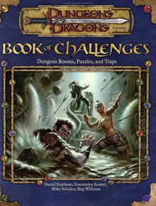

|
序章
|

DM的卑劣小秘密
想象一下这个情节：PCS看见一个法师漂浮在一道黑暗峡谷上方，冲着他们比手画脚。好象是有什么魔法一样，在一个PC的脑子里面突然起了一个念头。他宣布他的人物要轻率地冲过悬崖边上，然后指望继续走过这个峡谷，他认为无疑那上面有一道无形的桥在等着他。
你怎么处理这个场景？
无视你那应该让PCS去死的天性，那么你的反应就会是毁灭性的。你会大笑，或者扬起眉毛，或者喷出你喝的酒说什么“你确定？”（OHHH-KAY）。这样玩家们灵光一闪，会立即意识到他们可以用别的方法来解释这个法师为什么可以无视地心引力。也许，只是也许，你的举动会让他在发现峡谷到底有多深的这条倒霉路上停下冲动的脚步。
于是你发现你失败了，没有守住一个DM的卑劣小秘密：你真的跑到PCS那边去了。你利用你的万知与万能的力量来让你的PCS活着并觉得快活（至少在这段很长的冒险中，从他们的错误选择中活下来了）。当然，你不会告诉你的PC这回事，因为这等于是他们处于一种你不得不把他们宝贵的角色拖出吃一棵火球的厄运中。毕竟，你有让他们回头的责任。
过些日子，这责任又找到你了。你不是这第5，6，或者7个玩家。你是地下城主。再过些日子，你会有一种冲动去向他们显示你并非是站在他们一边的，你有权力和本事去让他们明白谁说了算。
欢迎阅读本书，它可以用于那些骰运不好的时候。挑战之书：“地下城房间，难题与圈套”集成了我们所能想到的成打的最机灵也最有教益的遭遇。这是一本充满了 “哎呀”，“我不相信！”，“你骗人！”这样的书。是的，遭遇用遭遇等级平衡过了；是的，只要动动脑筋它们就可以轻易的被解决。是的，我们甚至给了暗示让你提醒你的PC。但是最基本的，它们都有一点卑劣。如果在一场遭遇里面一个PC宣布正在翻越一座悬崖，他的确是在翻越这个悬崖。
因为有时候，甚至是我们也会遇到这样的情况。
如何使用本书
挑战之书，包含了许多可以塞进你心爱的地下城的遭遇。大多数是为了“典型”的地下城背景而设定的，但做一点小小的预备工作，你可以把他们用于任何冒险场景。这些遭遇一般不用介绍。大多数情况下，PCS下到一个地下城的回廊和房间里去查看有什么东西（或者因为里面用了隐形的缘故什么也看不见）。他们解决了挑战，舔好伤口，然后向地下城其他的部分出发。
本书以遭遇等级（EL）归类。算出人物的平均等级以便挑选适合的遭遇。选出的遭遇的EL要和平均等级相当或者至少尽可能接近。
当然，你要熟悉这里列出的物品与生物的能力，大多数情况下，当使用一个普通生物时，本书只显示出这里的描述和MM上的描述的不同之处。本书提供了对如何使用这些遭遇概况的帮助信息，但是这不能代替你自己的查找工作。
本书也包含了一些提供给DM的边栏部分，你可以借以定制你游戏中的遭遇或生成你自己的类似类型遭遇。你可以在本书127叶找到所有地图的图例。
大多数遭遇都有“挑战的标度”这样的标注。这使你可以将他们用于比顶上显示的EL更高或者更低的EL中。哪怕你的人物已经有了10级以上。只要你找到了这个标度，你仍然可以将这些遭遇用于其他的EL中去。如果你更改了EL，不要忘记改变宝藏的标准。5级左右的宝藏相对于9级的宝藏似乎微不足道，不过比3级的可要丰厚许多。
|
|
给DM的建议
|
以下是让你扔给你的玩家们的怪物或者NPC们最大效率地发挥作用的战略。
让他们处于困境（BOX THEM IN ）：大多数玩家认为战斗是从一个方向进行的，就是他们进入战斗的那个方向。PCS被几个方向同时打击会立刻陷入不利，因为他们必须选择向哪个方向投放区域性的法术，担心被夹击，并且被迫分开与多个敌人战斗。
分离他们（SPLIT THEM UP）：如果你让一个团队人员彼此分离，他们就会无法合作了。在一个障碍物后面给探子设置陷阱，用一个机关门让施法者掉下去，用网和公牛把挣扎着的PCS 拖走，让其余的人尖叫吧。让会飞的生物在天空中翱翔，这样会飞的PCS不得不离开他们的朋友以便用近身武器攻击飞行的敌人。让队伍分离以便使团队合作无效化，不过如果总是一再发生就不是太有趣了。
给他们来个当面一套，背后一套（SHOW THEM ONE THING，GIVE THEM ANOTHER）：一个中等级别的团队看见3个铁魔像走向他们，手忙脚乱地准备开始一次攻击。但是实际情况是一个山丘巨人术士借着制造这个铁魔像的幻觉形体来轻易地掩盖他自己和2个同伙。这样他就可能防止PCS对他们施展法术——因为PCS很容易想到对“构装生物”施展法术是没有用处的。欺骗只需要几次就够了。一个多疑（SELF-CENSORING）的团队就不是一个危险的团队了。让他们深深地向下挖（MAKE THEM DIG DEEP）：在一个冷系亚种的生物巢穴，只有术士们有能力发出足够的火系法术来获胜。使用许多同种类型的生物来吸取团队的某种类型的资源，不要换另外一种。英雄们是需要一定的资源的，这样你就会很快在最后激怒了PCS而从中收益。
把他们放起来，敲下去（SET THEM UP，KNOCK THEM DOWN）：2个协力的生物可以联合造成更大的效果。一个翼龙的毒性造成了体质的损伤，一个鹦哥兽的摄魂需要强韧豁免。如果当翼龙把PC的体质减低到个位数的时候立刻用鹦哥兽来攻击，PC很可能挺不过摄魂的强韧豁免。2个几乎同时发生的攻击就可能意味着一个死PC。在这样的战斗中，你的怪物也许有相同的先攻数字，其中一个可以稍微延迟那么一两会儿。
如果他们不要开玩笑就把他们吊起来（HANG THEM IF THEY CAN‘T TAKE A JOKE）：确定好你可以为任何一个要逃跑的生物准备了出路。一个飞行生物在悬崖边上战斗就比在一个密室里面战斗有更大的机会离开。PCS仍然有经验值，但是他们损失了所有逃走的NPC们的宝物。这让英雄们在以后更得讲究一点战略。
运行一个巧妙的地下城房间
任何时候，你都可以把6个兽人扔到一条10英尺宽的走廊上，向你的PCS冲过去。这在有的时候是一场不错的战斗，但并不巧妙。如果兽人受到远程火力的打击，它们就不是都能到达PCS的第一线，而且没有一个够的到玩家的后方。
一个巧妙的遭遇可以利用怪物或者NPC的能力与战术。聪明的生物应该花许多时间来考虑它们如何从与有良好武装的玩家人物们的遭遇中全身而退。6个兽人停在一个9/10掩蔽的后面，带着重型十字弓，前面只开了一道缝——现在这就算一个挑战了。在这种态势下的4个兽人，加上2个以玩家人物背后突出物为掩护躲在那里的兽人就是更好的挑战。4个兽人从一个正暴跳如雷的山丘巨人那里跑过来。。。好，你真有主意。
运行一个巧妙的难题
DM都谨慎地出题。其他的则过于乐于制造难题，以至于有时候都没有想好题目的构成。要找到一个适合的级别，定位好题目的类型，然后不断演练修改直到你创造出一个让人难以忘却的难题为止。
为了设置难题，考虑好你要它做什么。你要传达一个信息，给一个谜提供一点线索，或者解决了这个难题只是为了让人步入一个死亡陷阱？当你弄清楚这些以后就可以选择一个题目类型。本书有几个难题列了边栏以显示如何生成类似的类型。迷宫，添字题目（LETTER-ADDITION），和密码型的都有简单规律可寻。当然这些边栏并不能给你以灵活的挑战变化去对付你的玩家。
然后试图制造难题。使用这里的战略，然后不断试验他们，直到你总结出如果其他DM用这个来对付你的时候，你的解决方法。
尝试将你的难题个性化。他们要让人觉得是你的PCS习以为常的世界中发生的。不要给他们什么滚石音乐或者汽车的谜题，因为PCS从来没有听说过这东西。反之，应参考NPCS们，你的世界中的城市，或者PCS可能面对的怪物。
你给PCS出你的题目以前，写下一个提示的清单。他们通常是成功的技能检定后的结果。比如一个有关魔法物品的谜题需要一个知识（奥术）的检定。在所有的情况下，一个单纯的智力检定将给予PCS暗示，表明面对一些什么考验。你也可以设计一些需要法术或者职业能力的暗示，例如让一个牧师使用驱散不死生物的能力来忍受鬼怪的外表打开一个魔法锁住的箱柜。
当PCS解决了谜题，给予以回报。仅仅是解决谜题会使他们感觉轻快，但是在解决谜题以后给予一个魔法物品或者打开一道密门会使他们感觉轻快而满足。
运行一个巧妙的机关
当角色中了机关，他们通常使毫无准备，不小心或者等级不够。玩家对通过机关很自豪，因为他们认为这意味着他们比这个地下城的建造者更高明一些。反之，他们如果正好撞到陷阱里面去会觉得非常可耻。
看看一个大的地下城的所有部分的机关，看看真实世界的样本：老鼠夹子。一个老鼠夹子有3个部分：诱饵，机关和造成安全感的伪装。老鼠被诱饵所诱惑（一些燕麦），触动了机关（一个压力传感的夹住脖子的机关），并且在发生这一切的时候无所适从（因为夹断脖子的东西看来是从离燕麦很远的地方过来的）。虽说你的 PCS比老鼠机灵一点（但愿如此），不过该发生的还是会发生。
诱饵总是一些PCS需要的东西。在你按照DMG投骰决定宝物的时候，往深里考虑一下他们真正需要的东西。他们需要经验，他们需要保护好资源。更重要的是，他们喜欢很爽快地冲进某个人的巢穴砍死他。这些角色很容易被鼓动起来，因为只要简单地弄一个门在PCS面前，他们就会无视阻碍穿越危险地区。
陷阱的机关可以用魔法、机械或者2者兼备。如果仔细考虑过以后，几乎任何法术和设备都可以变成陷阱。甚至非常有益的死者复活（RAISE DEAD）法术也可以当作一个陷阱，复活那些还不想活过来的玩家。如果你的玩家可以无视十字弓陷阱的伤害，就放一个弩炮陷阱。最好的陷阱是那些有趣，会造成麻烦，或者让人难以忘却的那种，比如一个隐藏的能把一个人弹射到一条冰河里面的。
造成它们的安全幻觉的伪装是最重要的元素。一个陷阱如果从PCS的角度来看是轻松的那就是废物。坐落在深谷上的摇晃不定的桥一看就不安全，但是位于PCS 已经用一个很低的搜索DC检定解除过陷阱的地方的一道门却不是这样。当他们警惕性放松的时候让他们提心吊胆，而他们警惕性高涨饿时候打消他们的戒备。
要想多知道一点做陷阱的事情，就去看DMG第4章，还有SS：一本给吟游诗人和游荡者的书。
共效的陷阱遭遇等级
多个同样效果的陷阱不必象多个同类怪物那样增加遭遇等级。如果你某一个CR的陷阱，在旁边加一个同样的陷阱时EL+1。任意大数量的这种陷阱可以额外提供一个EL，但是也许不要这样做。因为能对付一个陷阱的简单解决方法叶能解决类似的陷阱。
例如，想象一下一长列的地坑陷阱。如果PCS用飞行术飞过了第一个，他们也可以用同样的法术类飞过其余的。这样，多的陷阱实际上没有体现出更多的挑战，也没有体现出对PCS的资源的更多的消耗。
本书中，当多个陷阱紧挨者的时候，他们只是给出了每一个单独的CR等级，构成一个整群。这样你的团队处理这个陷阱群的时候提供了他们尽可能的XP。
将挑战调低
整本挑战之书，我们所给的遭遇不但拓展了玩家和他们角色的能力，而且怪物叶是一样。MM中对通过提升HD来增强怪物有特殊的规定，而PHB和DMG提供了工具以给怪物的职业等级和为它们的巢穴添加陷阱。
作为改变的一步，一个DM想调低一个怪物的强度，使它变弱。调低一个遭遇的原因可以有很多，这就是一个方法。
最复杂的调低生物的强度的方法是按照提升它的方法来反过来做。减少HD的同时减少技能和战斗能力。它也许会减少类法术能力的效果甚至生物的每日施法次数。减少一个生物的体型（比方说从大型到中型），不但要减少它的物理属性点，还得要给出一个有趣的来龙去脉才形（比如一个发育比较迟缓的牛头人希望能在同类里面获得敬重）。
DM陷害角色的方法同样也能用在怪物身上，这样做的效果一样工作量却小一点。也许一个双头巨人丢了他的大棒子或者一个提坦没有了战锤。生物在使用能力上可以受到限制，比如石化牛或者火童已经使用了几次或者用完了每日的能力次数。这个战术可以使用到玩家知道了敌人的局限为止。也许一个食人魔巫师在这一天早些时候用寒冰锥杀死了一个枭熊，如果玩家发现了一个部分冻僵了的枭熊尸体，他们就有机会推测出他们的敌人并不是处于力量的颠峰。
作为一种变化，可以考虑放一个强力的生物而给他所讨厌或者感到不方便的环境。也许在一个废弃的城堡里面一个寇涛鱼人会错误的想转身回到池塘里去，最后消失。当太阳升起前一会，冒险者在马圈里面等待合适的时机出击。如果一群狮鹫会愚蠢到追逐冒险者进入一片茂密的；林子，那么它们的机动能力就严重地削弱了。同样的方法，你可以渲染一个生物的才智使他强大，也可以突出他的愚笨来使他不利。甚至思维敏捷的怪物也说不定会作出错误的选择来。
“疯狂的山丘巨人”这个遭遇说明了一件公平的事情：疾病损失属性。使用诅咒能极大地削弱怪物的力量，正如它对MOTTY的作用一样。生物也许还会被先前的冒险者放了什么永久性的法术效果，比如盲目或者诅咒。
在这些合用的方法的较低的档次上，只是利用一个状态，就是打掉一些HP。设想一只拟身怪自从上次和一群地精的遭遇以后还没有时间完全治疗她的伤口。
和大多数本书的栏目一样，调低怪物强度不可滥用。你不可弄一个新的怪物类型来当作一种弱化的版本。使用调低强度的怪物可能会让玩家在遭遇一般正常怪物觉得突兀，没有准备或者作出什么卤莽的事情。甚至于如果他们以前碰到过这种生物，他们在撞上一个又一个弱化了的怪物以后也会觉得受骗了。
这种调低CR的办法充其量只是一种不准确的手段，而且这会让分配经验的时候把事情弄得更复杂。然而审慎地使用它，它就会提供更多的巧妙设计遭遇的机会。
|
|
十个必不可少的法术
|
本书需要玩家那方面的极大的适应能力。一个关键的环节是他们的法术选择。走进这些不寻常的环境不带任何武装而是仅仅携带火球和闪电的，将会频繁地因为失败而企求别人对他们使用复活。
不论你准备或者设定了魔法物品与否，以下设定的法术是处理本书中那些等于是脑筋急转弯的挑战所必要的。你不必因为玩家使用这些法术克服了挑战而感到失败。相反，你应该为你的玩家能如此有效地运用资源的敏锐思维而深感骄傲。
锐耳/鹰眼：预先了解财能预做准备，并且这个是游戏中最好的预警方法。在高等级的时候，玩家会认为预警术，探知，真实目光可以得到更可靠的结果，占卜术是有用的，但是玩家不会愿意冒着生死的危险去接受法术失败几率。（一个蝙蝠魔宠的盲感能力叶有类似的效果，不过一个把他的有羽翼的伙伴送到所有房间的玩家很快就得去找一个新的魔宠）
侦测魔法：这里很多挑战都包括了让人始料未及的魔法。知道了这种魔法在哪里对角色意义重大。施法者将极力想知道他们探测的灵光的数目，地点，派系和强度的更多信息，得到得到估算它们的数据。
驱散魔法：一旦角色知道了那里有魔法，他们的施法者就会决定让它消失，至少是一段时间内。在一些情况下存在着许多魔法效果，需要多个驱散检定，其中肯定有会失败的。这样侦测魔法又一次会帮助你。等级高了以后，高级驱散，法术无效结界，反魔法力场均可以达到类似的效果。魔邓肯裂解也许是一个好的选择，不过它有时候的反应太过火了。
飞行：在某些情况下（但肯定不是所有情况）。在这些遭遇里面的物理障碍可以利用飞行来略过。这让人难忘的速度和多方向的战斗使角色要面对3个维度的挑战而不是2个惟独。有些他们遇到的情况可能觉得不适应。如果角色没有这个法术，那么浮空术，跳跃术，蛛行术和羽落术是值得推荐的。
行动自如：这里许多挑战都是妨碍角色自由行动能力的。这可以让在水下，网中或者其他困难环境中也能面对在这些遭遇中有天生优势的生物和陷阱。
汽化形体：本书中大多数挑战是物理性的。角色只希望能避开它们，因为物理性障碍越少越好。该法术和更强力的风行术在此时比变形自己和变形他人更强。毕竟，变成一只小鸟不会给PC20/+1的伤害减免和穿墙能力。
隐形：如果生物找不到角色，那么包括了这个生物的挑战的效果就小了许多。隐形和更强力的有关法术经常能在生物开始攻击前防止这种遭遇。当然，这里一些生物可以看见隐形人物，事实上这些生物可能不会马上让人看出这种能力。
法师之手：该法术在这里有2个用处。第一个是推动物件和陷阱。第二个是发现什么事情是可能的，因为法师之手只能移动5磅以下的无人持有的物品。这样，如果法师之手移动不了一个物品，那么施法者就会知道这个物品实际不是它现在看起来的模样。心灵遥控和无形仆役能更有效地做这件事，召唤一个能理解施法者的生物能做比单纯的攻击更多的事情。
魔法飞弹：虽然这个法术造成的伤害比火球和野蛮人手里的双面斧要小，但是在这些遭遇中，环境因素，比方是水，抗力和障碍物经常妨碍能量法术和近身攻击。魔法飞弹攻击准确无误，甚至在目标被大部分隐藏和掩蔽的情况下叶是如此。
传送：当所有的努力都失败了以后，逃吧。传送，任意门，招返真言和相位门等类似的法术只在一眨眼的工夫就使这个战术变得简单。
其他一些好的法术选择包括奥法锁，破除结界，昼明术，侦测陷阱。探测思想，解离术，移位术，忍受元素伤害，发现陷阱，寻路术，幻音术，神导术，封门术，消除隐形，敲击术，光亮术，短讯术，投影术，防护元素伤害，灭火术，防生物力场，抵抗元素伤害，看见隐形，粉碎，沉默，迟缓，与石头交谈，水中呼吸，塑石—— 并且，当然，死者复生。
|
|
遭遇部分-前言
|
遭遇
现在我们开始享用这本书的主食了：各种的反派，诡计，陷阱，迷题，谜语和其他你在第一个地方买来这本书的时候想要的冒险。遭遇按照EL编排，如果你的PC 英雄等级比较低就查阅挑战尺度调整部分。总之，用这些遭遇来让你的D&D游戏对所有人来说都更有趣。
|
|
遭遇-A FAMILIAR SITUATION（EL1）
|
A FAMILIAR SITUATION （EL1）
把这个遭遇放到一个地下城的出口附近。最好不要离村子太远。这个遭遇给冒险者提供了有趣的非战斗性可能，因为它更多的依赖技能的御用，一般的感觉和问题的解决比战斗更重要。
几周以前，一个名叫ELIAT的侏儒术士来到了村子里的法师用品商店。她要购买一些动物作为她的魔宠。此时店里没有任何的存货。所以ELIAT排出一个表，要把这上面的动物送到某个地方。她没有告诉店主这个地方是她计划探索的地下城。
店主MARINA收下了5个动物的订金，ELIAT的住址的方位和她房间的钥匙。当她获得这些动物时，她派遣了她的帮工PRUFROCK去运送它们。他把所有的笼子都送到指定的地区，但是他在把最后一个笼子放下去的时候摔倒了，狠狠地撞上了这些笼子。他不幸地打开或者打坏了所有地笼子，这些未来的魔宠立刻溜之大吉。当PC到达的时候，他们面对着一个挑战：完好无损地把动物捉回笼子。
当角色接近这个地区的时候，让他们做一个听觉检定（DC0，聆听者每离开10英尺就+1）。如果他们成功了，见下文。
从下面的回廊，你听见一个年轻人在用恳求的语气叫喊，“来呀，快下来呀，谁是好姑娘？来呀”。
PROFROCK试图把一只老鹰从树支上哄下来，不过他没有成功。
ELIAT 的房间
当人物进入这个地区，阅读下文。
这个房间看上去对一个地下城房间来说有点太有家的味道了。一只猫在一个角落上的床上威胁地哧牙裂嘴。一个合上的箱子放在床脚。一条晾衣绳挂着洗好的衣服穿过房间挂着。另外一个角落上是一张桌子和一把椅子。在晾衣绳上方的一个架子上，一只老鹰扑打着翅膀枭叫。一堆打开的笼子放在门边。一个头发乱蓬蓬的年轻人站在门口。他在叫唤着这只鹰。
这个房间是ELIAT探索地下城和周围地区的大本营。术士把它弄的很舒服。门是通常用一个很简单的锁（开锁DC20）锁上了。但是PROFROCK有钥匙。洗好的衣物是干的，但是衣服只能给小型的人物穿。一个搜索检定（DC15）可以发现这个房间投入使用不会超过一周。
生物：PROFROCK，这个年轻人正忙着试图重新捉住一些生物：一只蝙蝠，一只猫，一只鹰，一只老鼠，和一条超小型蛇（蝰蛇）
蝙蝠吊在房间一角的天花板上，猫站在床上威胁性地叫着。鹰站在比地板高10英尺的架子上，老鼠通过一个洞钻进了箱子，蛇躲在桌子底下。
*PRUFROCK：男性人类平民1级；HP2，4银币，6铜币，新鲜水果，几条肉，太阳花的种子。
*蝙蝠：HP2，见MM
*猫：HP4，见MM
*鹰，HP8，见MM
*老鼠，HP2，见MM
*蛇：超小型蝰蛇：HP2，见MM
战术：假如PCS没有很热情地向他致意，PRUFROCK会问那一个是ELIAT，然后请求他们帮助捉回生物。他因为自己的卤莽受了伤，印象很深，所以他要人物们小心。如果人物拔出武器会吓得惊叫起来，生怕有一个生物被杀会让自己丢掉了差使。他是一个优柔寡断的人，所以全指望英雄们来采取行动。
蝙蝠给吓着了，不肯移动。因为天花板有15英尺高，人物是够不着的，就算用长武器也一样。要是把桌子放在蝙蝠正下方，一个带着长武器的人物可以够着它。或者，一个人用平衡检定可以站在晾衣绳上（DC20）
猫不肯回到笼子里，除非它被安抚，否则它会攻击所有靠近的人。如果门开了，猫会在任何人做了有威胁性的移动以后逃出门去。（也许会吃人物们一记借机攻击）。
鹰停在距离地面10英尺高的架子上，这离晾衣绳只有5英尺高，一个带了长武器的人物可以打到它，或者站在晾衣绳上平衡了的人物可以捉住它。如果受到攻击，它会进行自卫的。
如果任何人把手伸到箱子上的洞里面，老鼠就会试图咬他。箱子是用一个简单的锁（开锁DC20）锁上，但是没有机关。如果箱子开了，一个人可以简单地捉住老鼠放回笼子。箱子里面油价值100GP的魔法材料可以用来召唤魔宠（见PHB）
蛇一直在桌子底下，它有1/2掩蔽（+4掩蔽AC，和反射+2掩蔽加值）。对任何靠近的人，蛇都会嘶嘶做声地警告，但是只有在防卫自己的时候才进行攻击。它会尽可能逃离攻击者，所以PCS可以把它赶进笼子里。
靠近去使动物安静下来
许多法术和技能都可以让角色简单地解决这种安抚上的麻烦。记住这些动物还没有变成魔宠，这样，它们仍然是动物（不是魔法兽）。
理解动物可以通过一个成功的检定来提升动物对你的态度（见DMG）。设定是猫的态度是敌对，其他则变得不友好。任何态度变为友善得动物都会自己回到笼子里。
动物友伴（德鲁伊1，巡林客1）可以赢得单一动物的忠诚，但是必须施法者真心希望与它们交朋友。这不太符合这次的情况。
安抚动物（动物1，德鲁伊1）这个是安抚并使动物安静，让它们容易管理。它们即不会攻击也不会逃跑，让PCS可以轻轻地靠近把它们放进笼子里。
魅惑动物或人类（德鲁伊2）使一个动物把施法者当作一个可信德朋友，一个被魅惑的动物会很高兴地回到笼子。
催眠（吟游诗人1，术士/法师1）使施法者可以对受术动物做一个简单而有道理的要求，这包括了“回到你的笼子里去‘。
睡眠（吟游诗人1，巡林客2，术士/法师1）：简单地是动物陷入沉睡中来解决问题，然后PCS就可以把它们收拢起来。
发展：如果人物让门开着，动物可能会通过它逃掉，特别是被攻击或者惊吓以后。这会使这个追逐扩展到地下城的上面或者下面的回廊去。如果其他怪物在附近，这会引起它们的注意，把这个喜剧性的场面变得不愉快。
宝藏：老鼠藏身地箱子里面有充足地可供召唤魔宠地材料（价值100GP）
XP调整：假如他们合理地处理了PRUFROCK的问题，作为对捉住动物的额外XP，他们可以从PRUFROCK那里获得XP。
调整挑战的尺度
EL2：为了使这个遭遇更加不平常，可以假定动物们得到了ELIAT藏起来的药水。按照DMG上来投骰随机决定药水，或者选择生物的喜好的药水。比如，变大或者变小地动物可能更加难关起来。由于20%的失手率，模糊使动物难以被成功擒抱。一个受到跳跃或者隐形药水作用的动物可以轻易逃离人物。任何魔法作用地动物被捉住都有150%地XP。
EL2：也许一个强大的德鲁伊不愿意看到这些获得自由的动物再被捉住。德鲁伊在人物到达时施展了动物异变法术。在法术作用下，每个动物的HD加倍，体型增大1级（持续时间已经过去了10分钟，类似于此，你可以投1D6+2分钟来决定剩余时间）。给每个在此状态下被捉住地宠物200%XP。
非致命性的战斗
如果人物不想伤到或者杀掉动物，他们有2个选择：淤伤和擒抱。
淤伤
人物可以求助于把一个生物敲晕，在抓住它进笼子以前给它造成淤伤。
徒手攻击：人物可以用一般攻击加值来做徒手攻击，它会造成生物的借机攻击。徒手攻击自动造成淤伤。
“武装”徒手攻击：有些人物比如武僧训练过徒手攻击，视做武装攻击。这样，他们攻击时不会受到借机攻击。他们可以选择他们通常的攻击投骰来造成淤伤。
淤伤武器：一些武器，比如闷棍本身就是造成淤伤。这些武器的攻击与伤害投骰如常运行。
用非淤伤武器造成淤伤：大多数武器比如剑，设计上是为了造成一般伤害。用这种武器攻击来产生淤伤，人物在攻击投骰上受到-4惩罚。
擒抱
人物可能会试图擒抱动物。发动这个擒抱会受到目标的借机攻击。如果借机攻击造成了伤害，人物就无法开始擒抱（但可以在下次攻击时再尝试）。
投对抗擒抱检定，基本攻击加值+力量修正+特殊体型修正。对擒抱检定来说特殊体型修正如下：大型+4，中型+0，小型-4，超小-8（猫，鹰，鼠，蛇），微型-12（蝙蝠）。如果人物的擒抱检定结果大于动物的检定，人物可以发动擒抱。在他的回合里，人物可以决定给生物造成淤伤（对中型攻击者来说是1D3 点，对小型攻击者来说是1D2点，加上力量修正。）作为代替，人物也可以压制动物，使它1轮不能动弹，给其他攻击者在攻击骰上+4。在此时，由于动物的体型较小，人物可以用 移动等萧动作来提着一个被压制地动物半速移动。
在生物的回合，它可以用脱逃检定（对抗擒抱检定）来试图摆脱逃走。这个是标准动作，成功的话将逃脱（如果是处于被擒抱状态）或者只是被擒抱（如果是在被压制状态）。如果动物从擒抱中逃脱，它会尽快地逃离对手。
|
|
遭遇-CLOSE QUARTERS（EL2）
|
CLOSE QUARTERS（EL2）
人物在进入一个15X15英尺地房间后，会开始这个遭遇。天花板在头上20英尺，当PCS寻求详细的描述的时候，看下文。
在房间的另外一端，一些蔓生的常绿植物长在一大堆乱七八糟的土上。他们好象绕着一个几英尺直径的隧道。几个硬币在灰尘和破布中反光。一条覆盖着墨绿色鳞片的超小型龙坐在出口，看着你，嘶嘶地威胁你。
这个已经部分坍塌的隧道网是很久以前一个穴居的生物创造的。一个成功的知识（自然）检定（DC20）表明这是掘地虫干的。
一种古怪的化学物资气味弥漫在空中。一个成功的炼金术检定（DC10）指出这是氯气的味道。
生物：SVETRETH：一条绿雏龙，利用了这个隧道的狭小空间。它希望冒险者追逐它进入这4英尺高的隧道里面去。这个隧道在到达那充斥着瓦砾的倒塌尽头前绵延100英尺。
*SVETRETH：雄性雏龙：CR2；超小型龙；HD5D12+5；HP37；先攻+4，速度40英尺；游泳40英尺，飞行100英尺（一般）； AX159接触11，措手不及15）；攻击+7肉搏（1D6+1，啮咬）与+2肉搏（1D4，2爪抓）；特殊攻击龙息；特性酸免疫，龙特性，水中呼吸；阵营LE；豁免强韧+5，反射+4，意志+4；力量13，敏捷10，体质13，智力10，感知11，魅力10；
技能与特长：唬骗+8，交涉+2，隐藏+4，胁迫+2，聆听+9，搜索+7，警觉，精通先攻
龙息（SU）：20英尺，锥状腐蚀性（酸）气体（2D6伤害，反射DC13减半）
龙类特性：免疫睡眠与麻痹效果，盲感30英尺，敏锐感觉。
盲感（EX）：该生物通过非视觉感官（多半是听觉与嗅觉，但也通过注意周围的颤动和环境中其他迹象来察觉）可以和看的见的生物一样战斗和移动。隐形或者黑暗对它毫不相干，但是生物仍然不能辨认出以太界的存在事物。该生物通常在它的盲感能力范围以内（在这里是30英尺）不需要做侦察或者聆听检定就可以注意到其他生物。
敏锐感觉（EX）：该生物有100英尺以上的黑暗视觉，它可以看见4倍于人类在低光条件下或者2倍于正常光条件下的东西。
在狭小地方的战斗
狭窄的隧道约束了大多数人物的移动与战斗能力。小型人物可以以平时的速度移动，他们除非使用中型武器否则不会受到罚值，如果使用中型武器会在攻击上受到-2环境惩罚。
中型人物只能半速移动，用小型武器或者更小的在攻击上会受到-2的环境惩罚。用中型武器在攻击上受到-4环境惩罚。大于中型的生物无法在管道中战斗，大于中型的武器不能在隧道中使用。
任何穿刺性武器（除去需要舞动的，比如十字镐，巨镰，侏儒钩锤，刺链）都视做小于体型一级的武器以计算攻击上的罚值。
唯一一种允许以卧姿使用的远程武器是十字弩，在攻击时会受到-4环境惩罚。记住如果任何别的人物挡住了一个人的视线的时候，目标就得到了掩蔽效果（通常 1/2掩蔽，这给予了AC上+4掩蔽加值）。这也适用于人物在适用长武器穿过盟友占据的地方进行攻击。
战术：龙以喷吐一道腐蚀性云团来开始战斗。它的龙息充斥整个房间并且延伸到走廊5英尺。如果没有近身战斗，它会向隧道中退却40英尺。如果被贴近身战斗，它向隧道中退却5英尺，然后它会对不站在隧道里的人有3/4掩蔽（AC+7掩蔽加值，反射+3掩蔽加值）。它的战斗是尽量使人物一次只能一个对它近身战斗。
如果人物不追逐它，SVETRETH只会在能使用龙息的时候才会出来。一旦它使用龙息以后，它只能在1D4轮以后再次使用。
人物一旦尾随它进入隧道，它会交替使用全力攻击合倍速移动引诱人物深入隧道。一旦它又能使用龙息了，它会试图让攻击能够击中至少2个PCS。
宝藏：在隧道前的土里挖掘，会找到60个铜币，24个银币，10金币，2个白金币。隧道的深处末端，SVETRETH守着1堆财宝，200金币，50白金币和1棵黑珍珠（价值500金币）
加上XP调整：龙的有效战术给它在这个遭遇里很大的好处，甚至就算这使它在这个狭小的隧道里面不能飞行也一样。这个遭遇给出110%于正常遭遇的XP。
挑战的尺度调整
这个小的隧道和有限的空间也适合一些其他生物。选一个小生物，即可以是穴居生物也可以是一个把这个旧洞穴当作巢穴的。如果生物有智力的话，那么设计一个伏击看起来就更可信了，不过就算是动物，如果过去的经验告诉了他们如何去做，也会使用这个战略。
EL1：3个凶暴鼠。可以考虑在隧道中甚至一些岔道，是老鼠可以夹击那些粗心的玩家。
EL2：一只獾或者一个变形成老鼠或者变种蜘蛛的IMP。
EL4：一个皮克精。可以考虑在隧道的地上放一些根，以便皮克精使用它的类法术能力纠缠术。
EL6：3只雏龙级别的蓝龙。他们使用他们的掘穴能力来分散团队，也使他们自己可以夹击。
|
|
遭遇-HERE，KITTY，KITTY，KITTY（EL2）
|
HERE，KITTY，KITTY，KITTY（EL2）
附近一个小的地底侏儒的部落（见MM上的侏儒部分）的守护者不见了，那是一个从小宠物长成的雄性骨面斑兽。这个骨面斑兽守护着这个部落，在这里四处巡游，在这家或者那家门口睡觉。它已经出去3天了。
这个骨面斑兽被另外一个母的正在发情的骨面斑兽吸引，这个公的骨面斑兽离开了地下，于是这2只骨面斑兽跑到了离村子不远的地方安了家。这只公的倒是很愿意回来，但是母的那只不相信村子里面的人。
如果PC能找到这一对，他们就可以说服它们回到村子里面。如果失败了，他们至少可以回到村子里面报告这些猫是安全的。
欢迎来到PASSWAY
当人物第一次靠近地底侏儒部落的时候，阅读下文。
在一大块巨大的地下区域里面，许多的道路汇集于此。岩壁上开了许多的小洞穴，其中许多已经明显住上了人家。有些建筑物围绕着温泉而建设。一些地底侏儒便是在这里建立了一个村落。他们好象很友好也很和蔼，做着他们的日常工作，比如准备食物，织补衣物，放牧着小小的山羊群等等。大多数人都佩带着腰刀。偶尔，一个侏儒还会用在鞘里面的武器耍个杂耍。
一个4人长老委员会在负责管理着这个村子。当玩家们到达的时候，这个委员会正在争论着骨面斑兽失踪了以后该怎么办。这个小村落里面没有一个人对追踪这个活计在行；也只有2个守卫有武者的能力。此外他们害怕会不会有人杀害了骨面斑兽，他们觉得如果有人这么强大到了可以杀掉他们的守护者，那么他们根本对付不了这个人。这些长老中间没有一个人愿意自己出村子去找找。
他们把冒险者的到达看作是天赐，可以到外面去帮助他们解决这个问题。他们在财物方面并不富有。他们可以让冒险者在捕获骨面斑兽期间（最多一周）免费住在当地的旅馆里。而且长老还许诺会给他们最多价值200金币的货物，一旦他们成功地带着活的而且健康的骨面斑兽回来以后立刻付清。
一个收集信息检定（DC15）显示骨面斑兽失踪前一天它不肯休息，四处徘徊也不肯坐下来。一些人听见北方有嚎叫的声音。
*PASSWAY（村落）：非标准；阵营中立善良；限制40金币；财物200金币；人口50个成年人。孤立（100%都是地底侏儒）
权力机构：长老 WAYHEW NARNOTTLE NOOK GARRICK，男性地底侏儒牧师1；长老MARDNAB DUVAMIL SPRINGNOTH FLETCHMIP，女性地底侏儒战士1；长老 JEBEDDO GEERCH “FLATSHOE” SHAPPER，男性地底侏儒游荡者1，长老 TUNTULLA PORTSACK GELFLIM，女性地底侏儒专家4；
重要人物：MERRIVAL “TOVOBUTTON” CLENTH，女性地底侏儒专家3（旅店主人）；NOLTH JEBEDDO “FIX-IT” SCHAPPER CARRICK，男性地底侏儒专家2（供应商/铁匠）
其他：镇子的守卫，武者1（2个），专家1（3个）；平民1（39个）
注释：这个村子里面有一个小小的旅馆，2个房间可供出租。它提供标准的伙食，和一些非常好的啤酒。一个商店出售价值最多40金币的物品。
你也许会把这个村落作为一个可以让玩家人物在冒险期间休整的避难所。低等级的镇民和村落的规模过小意味着如果人物在等级生高了以后再回到这个地方，他们回觉得过于束手束脚。你可以把这个村子随着他们的进程成长起来，让它成长到足够让人物买到更多的贵重物品的规模。当地的其他一些地区也应该按照人物的等级（反派也应该如此）成长以供探索。
足迹
有追踪专长的人物可以试图利用野外求生检定（DC13）来寻找3天以前的足迹。一个中型猫科生物（骨面斑兽）沿着这个10英尺宽的道路从村子里的洞穴向北去了，追踪者可以以半速沿着足迹前进。在半英里的追踪以后，另外一个检定（DC13），发现第2条足迹加入了前面一条。这个指引这大家向北再走1/4英里到达一个小洞穴里面。
没有追踪专长，搜索检定（DC13）可以发现足迹，但是没办法追踪。这意味着每当道路分叉，人物就得再次寻找足迹（搜索检定DC13）或者随机猜测要向哪个方向走。投1D4+1来决定人物要做这种检定的次数。
骨面斑兽的巢穴
这个洞穴的直径约20英尺，顶部高10英尺。
生物：这2只骨面斑兽盘在洞的深处（但是没有睡着）。让每一个人都做聆听检定（DC10，每10英尺距离+1）来倾听PCS的接近。如果PCS偷偷接近，聆听检定用来对抗PCS的无声移动检定。
*骨面斑兽（2只）： HP12，11，见MM
战术：如果骨面斑兽发现了靠近的人物，他们会用恐吓能力，加以怒吼试图吓退入侵着。他们不会主动攻击，除非PCS攻击了其中一个，或者接近到5英尺。
PCS可以用安抚动物技能来安抚骨面斑兽（受到-4惩罚，因为这个生物是魔法兽）。或者PCS可以用交涉技能来安抚骨面斑兽，因为这个技能可以用于可听见的交谈，不过检定仍然要受到-4惩罚。公的骨面斑兽开始是冷淡的态度，雌的一开始不友好。
PCS也可以选择用非致命的战斗来击败或者俘虏骨面斑兽（见非致命战斗边栏）。象安抚动物或者魅惑人类或动物这样的法术对魔法兽无效。
宝藏：一个小袋子放在洞穴的角落，由很久以前的一个旅人失落在这里。PCS可以用搜索检定（DC15）来找到它。它有2白金币，13金币，25银币和一颗价值100金币的石榴石。
如果PCS毫发无伤的骨面斑兽返回村子，侏儒会给PCS提供价值200金币的物品或者服务。（单个价值不能超过40金币）
额外XP调整：每个骨面斑兽交还给地底侏儒村落都可以或者全部XP。如果PCS只带回来骨面斑兽安全无恙的消息，得到通常的一半的XP。杀掉骨面斑兽也可以得到全部的XP，但是会受到地底侏儒的敌视——他们不会让你进入PASSWAY了。
挑战尺度调整
EL1：公的那只吞下了一些ID MOSS（药片？），最近总是不知不觉地陷入恍惚。母的那只站在它不省人事的身体边，保护不让别人靠近。
EL5：母的把公的带回了她的种群。洞里面不是2只骨面斑兽，那里有6只成年的，和2只不能战斗的幼兽。只有一只开始对PCS是冷淡态度，其他的都不友好。
|
|
遭遇-TAMPLE OF DRAXION（EL2）
|
TAMPLE OF DRAXION（EL2）
TAMPLE OF DRAXION 指出了一个很弱小的怪物如果处于一个良好的防御位置的时候的选择。要很好的完成这个遭遇，PCS必须制定一个计划来攻击并达成它，哪怕环境变化了也一样。遭遇中的防卫者会想方设法来误导PC。对那些完全把DM表面上的话信以为真的团队来说可能一仗都没有打就逃跑或者投降了。
在这个遭遇里面描述的这个地区是厄瑞斯努的隐秘神殿的一部分。这个迷宫的大部分都倒塌了。但是2个有野心的人类强盗GREIGH和KEIR把这里当成了他们的总部，他们招募了一些喽罗，准备组织一个团伙，迄今为止，他们组织吸收的还只有狗头人。
1． 堵塞的通道
这条通道也许是城市下的一条旧泻洪道，或者只是一个地下城的走廊而已。利用它你可以决定设置这个遭遇。西边的那一半被碎石索填满。每过15英尺的样子就有一根木柱子支撑着顶棚。
一个搜索或者专业（矿物）的检定（DC10）指出这个塌方已经是很早以前的事了，但是最近又被清理过并投入使用了。对其中一个木柱子做一个搜索检定（DC10）发现它还很新。一个有岩石熟悉种族特性的矮人或者其他人物会在这个检定上有+2的加值。
碎石完全挡住了通道北边的密门。用搜索检定（DC15）来发现密门。
2． 主要入口
一个密门开向一条只用一个火炬照亮的走道。空气中有一股刺鼻的味道，象是煤烟。在走道的远端，你看见一块象半魔鬼和公猪的混合体的巨石制脸证瞟着你。在你和脸中间，你看见左边是一道宽宽的楼梯，但是台阶都已经碎了。在台阶的基部有一个火炬照亮了这一块地方。
在丁丁做响的铃声响起来以前，你几乎没有时间仔细看这里的细节。
声音来自于2B地区。这个铃的音调很低，在该地区的石制品中间掩藏得很好，所以找到声音的来源很难。做一个成功的聆听检定（DC15），PCS可以注意到声音是从脸的后方穿过来。
火炬是一个不灭火炬，放在2A区域作为光源。
2A。高台与雕像
当CREIGH和KEIR发现了这个废弃的神殿的时候，一个巨大的中空厄瑞斯努神像就立在这里。雕像已经毁坏了，所以匪徒们清除了它。代之以一个拼凑出来的木雕像，这个是KEIR做的，模拟一条红龙。CRIEGH 和KEIR从来都没有见过一条真的红龙，所以KEIR做的手工看起来倒更象一条巨大的红色蝰蛇。
原来的空雕像有一套杠杆装置可以让它做一些小的移动。一个煤炉（用来发烟），一个使用炽火胶的护卫装置，和几个用来偷窥的小孔和缝隙，里面的人可以看见外面，这个雕像还有一个大的黄铜牛角用来“说话”，所以匪徒们还是留用了这些。
当有人看见了楼梯，阅读下文。
楼梯看起来破败不堪，但是仍然可以用。在半路上第二个柱子上燃烧着一个火炬，给你足以看见前面的光线。在楼梯顶上，你看见在一团黑烟里面一个红色的蛇状形体。烟从它的鼻子里面冒出来，在它站着的台子上升起。它的眼睛是血橙色，你无法完整的说出它到底有多大，因为你唯一能看清楚的只有它那三角形的头，象一条蝰蛇。
由于烟和楼梯顶的昏暗光线，要勾勒出雕像的实际样子很困难。一个侦察检定（DC15，每离开10英尺+1）可以辨认出这条“龙“实际上是一种建造物。
楼梯以45度角通向区域2A。从楼梯底下到区域2A的总长35英尺。沿着楼梯，人物每上下10英尺就相当于15英尺移动；将进入的第一个平面视做5英尺，第二个视做10英尺，第三个视做5英尺，等等。如果人物要在楼梯上做斜向的移动，将每一个对角线斜向移动视做10英尺。
*生物：2个强盗之一，CREIGH或者KEIR（各是50%几率出现）在雕刑里面守望。另外一个在遭遇开始的时候在区域6里面睡觉，但是在开始后第5轮会加入他在雕像里面的同伙。
*CREIGH：男性人类专家：CR1/2；中型人类生物；HD1D6+1；HP4；先攻+5，速度30英尺；AC13（接触11，措手不及12）；攻击+1肉搏（1D4+1/19-20，匕首）；或者+1远程（1D10/19-20，重型十字弩）；阵营NE；豁免 强韧+1，反射+1，意志+2；力量12，敏捷12，体质13，智力13，感知10，魅力10
技能与专长：估价+3，唬骗+4，解除装置+5，伪装+4，脱逃+5，收集情报+2，隐藏+5，聆听+6，侦察+6；警觉，精通先攻。
财物：皮甲，重十字弩，10支箭，治疗轻伤药水，铁蒺藜包
*KEIR：男。平民1，CR1/2；中型类人生物；HD1D4+4，HP6；先攻+0，速度30英尺，AX12（接触10，措手不及12），攻击+2肉搏（1D6+3铁棍子）；阵营N；豁免 强韧+3，反射+0，意志+0；力量14，敏捷10，体质13，智力8，感知10，魅力10
技能和专长：手艺（木工）+3，训练动物+2，聆听+2，强韧加强；简单武器擅长（铁棍子），坚韧。
财物：皮甲，铁棍子，治疗轻伤药水，铁蒺藜包，21GP
战术：2A的强盗一看见楼梯下面的PC就会叫起来，“谁闯入了伟大的DRAXION的巢穴？”如果是KEIR在了望，他会用“DRAGON”来代替 “DRAXION”，除非他通过了一个DC10的智力检定。这个岗哨会尽其所能的来扮演一条龙，象以下那些傲慢的操作，比如“闯入者，把你自己乖乖交给伟大的DRAXION！吃掉城市！从天而降的惩罚！他是他所见到的一切的主人！”团队要做察言观色检定（对抗岗哨的唬骗检定）来看清楚真实的情况。
如果团队真的投降了，这个岗哨反而会不知所措的。他其实预期（也指望）团队会挑战“龙”。任何人只要走上楼梯，岗哨就会触发雕像里面的火焰防卫装置。这个会从设置在雕像嘴巴里面的喷嘴里面喷射出2瓶炽火胶，看上去好象龙在喷火。这个碰吐造成一个20英尺长的锥形火焰。任何在锥形范围内的生物会受到1D6的火焰伤害，成功的反射检定（DC15）减半。如果生物检定失败，就会着火（反射检定DC15无效）。见DMG第3章着火边栏了解更多细节。
每次有人使用了火焰防卫装置，使用者要通过反射检定（DC15）；如果失败，雕像会着火，每轮受到1D6点伤害。如果发生这种事，一个强盗会逃到区域4去拿水灭火。这个圆舞曲要花费2整轮时间。
给火焰防卫装置重新装弹需要2整轮，用掉2瓶炽火胶。这个喷嘴笔直向前面对者楼梯口，改变它的开火方向要用整轮动作。当人物第一次走近这个地区，雕像是对着他们接近的方向。
当火焰防卫装置用完了的轮次里面，CREIGH用他的十字弩开火，而KEIR装填火焰防卫装置。当PCS开始攻击雕像的时候，2各强盗抓起所有残留下的炽火胶（见下文中的宝藏部分）并从楼梯上逃走，在身后扔下铁蒺藜。
*龙雕像：2英寸厚；硬度5；HP20；AC4；击破DC23，在里面的人有9/10掩蔽。
宝藏：强盗在这里储备了6瓶炽火胶（不包括已经用在喷射装置上的）
2B：警戒点/出击地
哪个凶暴地盯着你地半魔鬼半公猪的脸是深陷在通道尽头的墙壁里面。
一个成功的知识（宗教）检定（DC10）会认出这个是厄瑞斯努的脸。这个石头脸也是一个藏有2个射击口的厚实密门（硬度8，HP18；击破DC32）。一个成功的搜索检定（DC20）可以找到射击口和认出密门。要开门，必须有人到地区3去拉杠杆。因为门太厚重，敲击法术是开不开的，除非由10级以上的施法者来施展。
生物：1个狗头人，拿着轻十字弩在这里守望。
*狗头人：HP2，见MM
战术：当预先得到通知以后，狗头人会在看见地区1的密门开启以后启动警铃。如果人物沿楼梯走向地区2A，他离开位置去和区域4的其他狗头人会合。（见下文）
如果PC在这里徘徊，或者向脸这里走过来，狗头人用他的十字弩开火。如果PCS有任何可能的能力伤害他，他就会望区域4逃。
3．出击地机械
这个杠杆启动了地区2B的密门，拉下杠杆就启动了门。它也压下了一块石头关闭了区域2B和区域4的通道。这个石块不但用做开门的压重物，也用于对入侵者关闭通道。地图上表示出阴影的地区就是被堵上的。移开杠杆就升起堵路的石头而关闭密门。
4．兵营
这个地区原来是法衣室。现在它有4张麦杆铺的粗劣的床（给狗头人用）和挖掘工具以及一些给养。狗头人用这些工具清楚了通向这里的路。给养是平常的东西：水，硬钉子，狗头人的啤酒，干肉，和干果实。
生物：这个屋子里面有至少3个睡觉的狗头人。
*狗头人（3个）：HP2，见MM
战术：狗头人一听见铃响就会醒过来。他们装备自己，然后等着强盗（在2A）或者他们的岗哨（在2B）给他们说明情况。从2B来的狗头人到了以后2轮，2个狗头人回到2B区域用他们的十字弩向PCS开火威胁；其他2个到区域3以便在必要的时候打开“脸”。各就各位以后如果狗头人听到区域4有战斗（也就是说 PCS找到了通向这个房间的通路），他们就会冲回去。
狗头人会尽可能来避免战斗，如果PCS计划在近身与他们作战，第一个狗头人被杀以后其他的就会立刻向区域1的密门逃掉。
如果团队突破了区域2A的雕像，强盗CREIGHT和CEIR就会把这里作为最后一站。如果PCS接近，他们会把炽火胶扔向PC，然后换近战武器。这2个人没有兴趣做真正的战斗，一旦有一个HP少于一半他就投降，另外一个也跟着投降。
宝藏：这些床里藏了12GP和一块价值14GP的天青石（这个是CREIGH对狗头人长时间服务的酬劳。
发展：如果PCS俘虏了任何一个狗头人，他们就招认是强盗和 他们口中的“龙”欺骗了他们。他们说是因为对龙的恐惧而干这个。实际上，所有的狗头人都很清楚强盗们在干什么，他们之所以加入是因为他们觉得这个活计很轻松。
如果被俘，KEIR会很聪明地闭上嘴。CREIGH会狡辩说他和他地同伙是老百姓，被这些恶毒的狗头人强迫来干活。（如果还有活着被俘的狗头人在场会对此予以强烈的否认）。CREIGH很善于低声下气和撒谎。他的唬骗检定会和PC的察言观色检定对抗。
如果PCS把KEIR和CREIGH分开。KEIR会一口咬定他是被上千个狗头人活捉然后被迫为他们做龙的木工。他在编造谎言方面很苯，所以很块他的故事就会被他变得天马行空起来。他会说他在教堂的门口牵制了进攻的狗头人一半的力量，让村子里面的女人和孩子从后门逃走（但是村子的名字他忘记了）。他说他用铁棍子打退了狗头人，直到最后一个狗头人从后面“SNUCK”了他，打了他得头把他打倒。
在附近的村子做一个收集信息检定（DC150指出CREIGH住在哪儿有几年了，虽然从来没有被人赃惧获过，但是他有一个坏名声。同一个检定指出，从来没有听说狗头人袭击这里过，虽说他们有些出没在附近。这个检定还发现最近有不少的异常盗窃事件发生，包括一担木头和几桶颜料。
XP调整：由于其防御位置和战略上的优势，打败这些生物可以得到125%的XP。
5．小屋
这些房子曾用于神殿牧师的生活起居。每个小屋有一张旧床（最近维修过），一张桌子，和一些象区域4一样的给养。
挑战尺度调整
EL1：去掉KEIR，把狗头人数目减少到3个。
EL3：让CREIGH变成一级游荡者，KEIR变成1级战士。狗头人数目加到6个。火焰防卫装置伤害加到2D6（这个要加倍的炽火胶装填）。
|
|
遭遇-BUGBEAR PIT FIGHT(EL3)
|
BUGBEAR PIT FIGHT(EL3)
强大的熊地精JEESHANK，按照他们种族的欺诈和杀掠的天性，发现了一条新的可供他伏击粗心大意的人的方法。他对他的敌人提出一对一单挑的要求，地点是一个废弃的地下竞技场。一旦决斗开始，JEESHANK的地精部下就从他们隐身的地点——竞技场的石制包厢里面跳将出来，雨点一般的标枪向毫无戒备的对手投去。
DM必须给出一个适当的动机来让PCS同JEESHANK战斗。也许熊地精让当地的村庄感到恐惧，打算如果能让他们的斗士击败他的话就可以逼迫他逃走。也许他偷了当地的宝物，比如有价值的酒杯或者一颗珍珠。不管是什么原因，人物可能会全队有所戒备地到JEESHANK的巢穴，也可能在对危险一无所知得情况下误入了JEESHANK的巢穴。
主包厢
一个破旧的铁梯子通向一个包厢，每一步都有生锈的金属嘎吱嘎吱的回音。从潮湿的石墙上不时有水滴落下。
这个梯子通向一个设在大的格斗坑上方10英尺高的小型石制包厢。陈旧噪音极大的梯子让这条路很难走。无声移动有-5环境惩罚。
在一块天然石头上，梯子上流下的锈水在地面上汇成了一个坑。小的水滴从它的边缘汇近来，矿物质的沉积形成了它的外轮廓，产生的小钟乳石象半融化的冰柱一样挂在上面。另外一个铁梯子从包厢的边缘通向主要的那一层。
顶棚是朴素的拱形，拱顶高度接近55英尺。沿着墙排列着8个小的石头包厢，每个约5英尺直径。地精们躲在其中4个里面（见下文中`生物部分，一个侦察检定（DC16，每隔10英尺+1）可以让一个人物注意到有一个地精的存在。
格斗坑
一个石制的坑状场地坐落在大厅的中央。这个坑顶部高20英尺，深15英尺。但是内部有坡度的地方只是底部宽的一半而已。锈水从梯子底下流向坑里，让这个地板有几处特别湿。
插图中央环绕着坑的是15根梁架和锈蚀了的铁杆，每个约长5英尺。在这层楼梯的另外一边的墙上有一道木门。
通向坑的地板略有些倾斜，让水可以流向坑里。
坑的斜面上有一些旧的攀附点，但墙面很湿（上下的攀爬DC15）。坑里有一个小洞可以让液体排干。地板上陈旧的血迹斑斑。
出口处的门被从反方向上了闸。2个老弱不能战斗的地精操作着门闸以便帮助JEESHANK逃掉。
生物：如果PCS是在冒险中开始战斗，JEESHANK会单独站在坑里招呼任何要与它单挑的人物。否则，他会等在梯子边上的包厢下，躲在PCS的视线外。不管JEESHANK的位置如何，4个地精都会躲在上方有阴影的包厢里面埋伏。
*JEESHANK，熊地精：HP22，见MM
*地精（4个）：每个HP4；见MM，每个地精有一捆（10支）标枪和2瓶炽火胶。
战斗：如果JEESHANK在遭遇开始时在包厢下面，它会用冲锋来撞击第一个爬下到房间的地板上的PC。它试图把人物撞进坑里。这通常会受到防御者的借机攻击，但是除非人物有战斗反射专长，否则措手不及的人物是无法借机攻击的。JEESHANK接下来同PC做力量对抗检定（JEESHANK的力量加值是+ 4：+2力量，+2冲锋）。如果JEESHANK胜出，他把PC撞退5英尺，每胜出PC的检定结果1点就可以再加1英尺（如果可能，最多到坑里）。
如果这个尝试失败，或者PCS知道他在场，他只是试图用冲锋或者擒抱把PC弄进坑里。如果面对着悬殊的力量对比，他有足够的狡诈躲到包厢下面，把它当作对抗PCS的掩体。他不会不乐意穿过门逃掉，命令地精们把身后的门关上。
主要的那层和坑里的地面都很湿滑，妨碍PC的战斗能力。每轮站在主要的那层或者坑里的人物都要做平衡检定（DC5），如果失败，人物摔倒。由于JEESHANK已经习惯了这种条件，他在做这种检定的时候有+2环境加值。
一旦战斗开始，地精们就向其他人物投掷标枪。如果某个人看上去象个会施展法术的，一个地精会专门做一个准备动作以便在他施法的时候攻击他。地精们喜欢用炽火胶对付任何试图爬上去，漂浮起来或者飞上包厢的人。
一个隧道网络连接所有的包厢。
如果你不想画一张这种网络的地图，你可以假定任何一个地精可以用双倍移动到达另一个包厢。这个网络通向一个脱逃用通道（和一个铁梯子）直通向另一边的门。
宝藏：每个地精在他们的装备旁边都带了一小包1D12金币，3D6银币，和3D6铜币。JEESHANK有一个小包，放了一个价值100金币的红宝石， 45金币，60银币。它还带着三个金耳环（每个价值75金币）以及一颗融化了值1金币的金牙。他的靴子里面有一把用巨大的牙齿（龙牙）雕刻的精致品匕首，在上面用龙语雕刻着“红牙”一词。（REDFANG）
发展：JEESHANK是一个危险的对手——一个聪明得足以在形式不妙得时候逃掉而又固执到一定会要报复得。在一个战役设定中，DM可以把这个遭遇作为更长远的冒险的起点，让JEESHANK变成一个获得同英雄们一样的等级的反派归来。JEESHANK通常在战士或者野蛮人上加等级，但是他也许会因为某些好主意在游荡者上升上一、二级。
增加XP调整：JEESHANK和他的地精部下，对于PCS来说又战术上的优势。如果他们被击败，获得110%XP。
挑战尺度调整
EL4：给JEESHANK一个野蛮人，战士或者游荡者等级让他变成一个可怕的敌手。或者，你可以在包厢里面再加4个地精。
EL5：再加一个熊地精，或者放一个饥饿的凶暴獾在坑里攻击任何掉进去的人物。
EL5：在坑里加一个酸液机关，当JEESHANK拉动一个生锈的铁杆（实际上是一个杠杆）的时候启动。当启动以后，机关对坑里的任何人喷射酸液。 JEESHANK可以用一个标准动作每轮激活一次。机关里有足够10次使用的量。
*酸液机关：CR2；无须攻击投骰（对坑中所有人1D6酸液伤害，加毒气，1/1D4体质，强韧DC13）；反射DC15减半；搜索DC20，解除装置DC20。见DMG中得到更多有关酸的信息。
|
|
遭遇-NO LOOSE ENDS(EL3)
|
NO LOOSE ENDS(EL3)
在一条地下的河流附近，一个食人魔带着2个兽人部下在一个洞穴里面筑起了巢穴。唯一能穿过河流的路是一座明显不牢靠的桥。
当PCS接近洞穴的时候，阅读下文。
这条路在通向一个大洞穴的时候明显放宽了。你听见前面有溪流或者小河的汩汩流水声。在这个方向有一条很旧的小路。
一个成功的搜索检定，或者有人会追踪专长的话做一个野外生存检定（DC11）可以发现不早于一天以前的类人生物脚印。
当团队接近桥梁的时候，阅读下文。
这条穿越黑色洞穴的小路的尽头是一条跨度20英尺宽的索桥。桥的20英尺下方，一条河流静静地流淌着。
有足够的光源或者适当的视觉能力的人物可以看见河的另外一边的洞口（巢穴）并可能侦察到隐伏在桥边的兽人（见下文）。
一个检查了这个桥的人会发现（搜索DC10），这个桥上的木版并没有在绳子上固定好——它们没有被捆住，只是松松散散地放着。通过一个成功的搜索检定（DC12），人物会了解到这个索桥的近端根本没有支撑点。实际上，这整个建筑看上去只用了一根索支撑，而且在这一头折回去成了2根。绳索好象本身是牢牢地栓在深深钉在岸边的木杆上。
这个绳子实际上是一根“攀爬绳”。一个侦察魔法指出它散发着微弱的魔法灵光。在专注3轮以后，施法者可以通过成功的法术辨识检定9DC160推断出灵光属于变化系。
生物：一只兽人坐在桥的另一头的洞口，通过洞的岩壁获得了3/4的掩蔽。由于它有黑暗视觉，它可以轻易的看见另一边的PCS。如果人物能看这么远，他们就可以侦察它（侦察DC17，每加10英尺再+1）。如果他们胜过DC5点，他们会注意到那个兽人手里正抓着一条通往桥上的绳索。这就是那构成桥的主体的攀爬绳。
第2个兽人在河谷这头看不见它，它和兽人的老板食人魔在一起。
*兽人（2个）：HP5，见MM
*食人魔：HP26，见MM
战术：一旦有一个人走过桥的中点，兽人立刻念动控制指令让绳子松开。任何在桥上的人物都会掉到河谷里面，受到2D6坠落伤害。一个成功的反射检定（DC15）可以让人物抱住活化绳，但是人物如果被甩到了谷壁上（每离壁10英尺受到1D6伤害）或者谷底（因为人物正在桥的那一头）还是会受到伤害。河并没有深到会冲走一个人，但同样没有深到可以缓冲坠落伤害。爬上或者爬下各要一个成功的攀爬检定9DC25）
一听到有麻烦来了的声音，食人魔和另一个兽人就会立刻从洞中出现。兽人带了6只标枪（用来向PCS投掷），食人魔带了一支超大型长矛（用来打击在谷底的人物）和一杆超大型巨棒（对付靠近的敌人）
如果玩家们磨蹭了5分钟还不动身或者不是过桥而是用其他方法过河，第一个兽人就会招呼食人魔河第二个兽人，。
宝藏：攀爬绳是他们的财产中主要的部分，每一个兽人还带了4D6银币。食人魔有一个小包，里面有20金币，8银币。在洞穴里面，兽人放了一捆20支标枪。
挑战尺度调整
EL5：把兽人换成食人魔，给躲在桥边的食人魔一件精灵披风（+10隐藏检定）
EL7：给每个兽人3个游荡者级别（以及由此的大量隐藏技能级别），食人魔3个战士等级。这个版本可能有问题，因为这个等级的人物已经有了不少飞过去的魔法，所以他们过这个桥会很容易。
|
|
遭遇-POOL OF ENDLESS FORGLINGS（EL3）
|
POOL OF ENDLESS FORGLINGS（EL3）
这次，冒险者到了一个地下城回廊末端的十字路口。中央的池子设计为一个保险装置，防止人物很容易的从一个地方到另外一个地方。人物可以轻易的近来，但是只有他们能解决谜题以后才能穿过出口离开。DM要有准备，处理一个会遇到大量超小型生物的遭遇，因为有许多象青蛙一样的生物。
当人物进入这一地区以后，阅读下文。
这个大厅的墙做的很光滑，巨大的砖石在接合的地方涂抹的毫无缝隙。地板和天花板由天然的石块砌成。现在看起来没有什么大的障碍物在这里。唯一的光源来自地面的中间，一个巨大的绿色大理石的池子里面。那里盛的水有一点浑浊，刚刚够让光线能透出来，摇曳着照在墙和天花板上。光线由于反射了大理石的绿色，给房间里面染上了一种诡异的色彩。
巨大的铁门，每扇门的上面有很大的一个滑手的铁把手，设在房间四面的墙上。在每扇门的中间都有一个充满了奇异的符号的框架。每扇门都紧靠着一个小支架。
人物进门几轮以后，他们后面的门会在自身的重量作用下关上并自动锁死。一个靠近门的人物可以在它关上以前用反射检定（DC15）住门。这个门和附近的门由 2英寸厚实的铁制成（硬度10，60HP，击破DC28），加上设计的很好的锁（开锁DC40）
谜题：框架和支架合起来就是逃出房间的谜题。每个框都一样，有4排4英寸宽的八角形石制花砖。每排都有一个如下的花砖：1条鱼，1只龙虾，1条鲸鱼，和一条鳗鱼（见图解）。在底行是一行开放的空间：4组各8各狭小开口（但是明显很深）的洞排列成八角形。
每个靠近门的石头支柱（在地图上成环状分布）的上面有4各花砖，每个各有一个符记。每个花砖在其底面上伸出8个细金属杆，这个秆子可以插入格珊的洞中。
注意在战斗开始的时候解决这个谜题要做一个会引起借机攻击的整轮动作的。
暗示：你可以让人物做智力检定来代替他们解谜的能力（就象玩家的属性对抗一样，一个DC10的智力检定可以让人物意识到这些图案是围绕着一个中心轴的。一个DC15的检定意味着人物认识到必定与图案有关，但是不能解决这个图案问题。一个DC20的检定让人物认识到每个图案以同样的数目转动（面朝的方向）。
不要太快给出这些暗示。让玩家至少想了一会再按照这种方法进行下去。
解决：少掉的花砖就是大门的滑动块的钥匙。按适当的操作把全部4块花砖放进就会“卡”的一声打开门锁。一旦开锁，门在打开以前一直是开锁状态，开门以后在它自身的重量下面再次关上并重新锁上。
对每一个额外的花砖的正确排放都可以用试误法，当然这要花费很长的时间。既然每个花砖都有8格可能的位置，这样解决谜题要有4，096种不同的放法。假如每个人每轮可以尝试一个位置，人物们总共要用3-6个小时（投1D4+2来确定）来移动和插入花砖。此外，还会因为这个谜题筋疲力尽而受伤，每在这个题目上花30分钟，进行这个操作的人就必须做敏捷检定9DC100否则就会弄坏其中一块花砖，让它无用。（如果一个人有5级以上的专注或者解除陷阱技能你可以给他+2环境加值）。人物们可以用另外的支柱上的砖块来代替（每套都一样）。但是注意已经在框架里面的花砖是无法移动的。
人物业可以通过找其他4个同类型的花砖的排列顺序来确定正确顺序。在每个例子中，图案面对八角形时旋转过的数目等于每次这个显现的图案的名字的字母数字。比如，第一（顶上）的鱼（FISH）花砖面对着右边（或者如果你假定上边是北面，那么是对着东面），第二个鱼花砖旋转了4个位置面对着右面（或者西面），第三个鱼花砖又旋转了4个位置又面对着右边，第四个鱼花砖又转了4个位置面对着左。这样第五个鱼花砖就应该放置在鱼面朝右边的方向。龙虾（LOBSTER）在每个排列中转7个位置（北，西北，西，西南，最后是南）。鲸鱼（WHALE）在每个排列中转5个位置（东，西北，南，东北，最后是西），鳗鱼（EEL）在每个排列中旋转3个位置（东，西南，北，东南，最后是西）
最后，一个人可以用解除陷阱来“定位“一个花砖的位置。每个成功的解除陷阱（DC250用2D4轮得到一个花砖位置。这在PCS失去耐心或者弄坏花砖的时候很有用。
生物：任何人进入区域1分钟以后，超小型蛙族就会开始从池塘里面窜出来。10只超小型，双手挥舞着长矛的生物悄悄的从池塘中出来，它们由一个位于池塘底的单向连通水元素界的传送门出来，每经过1D3轮还会有2D6只蛙族从池子里面出来，直到房间里没有活人为止。
* 蛙族（无限）：CR1/10；超小元素（水），HD1/4D8；HP1；先攻+0，速度10英尺，AC12（接触12，措手不及12）；攻击+0近战（1D4-2，小型短矛）；特性毒气；阵营中立；豁免强韧+2，反射+0，意志-2；力量7，敏捷10，体质11，智力4，感知6，魅力1；
技能与专长：聆听+2，侦察+2，闪避
毒气（EX）；蛙族被杀以后会“扑“的一声解离，在被杀的地方留下5X5的毒气，毒气持续5轮，任何在区域内的人物必须做强韧检定（DC10）否则受到1 点体质伤害。如果在一个地方每出现5朵云，人物在这个豁免上受到-2环境惩罚。毒气没有第二次效果，不用投第二次豁免。
战术：蛙族涌向任何一个房间中的人。记住它们的超小型体型使它们必须移进人物占据的空间才能攻击，这样会受到借机攻击。这样几个一组各自盯上一个人物（然后都以这个人物为闪避对象，给自己AC上有+1加值）。要提升它们造成伤害的机会，蛙群可以用PHB上援助别人的描述。最多4个做一个对抗AC10的攻击投骰，成功则意味着第5个得到了对目标+2的环境加值。蛙族依然必须要移进目标的空间才能援助其他的进行攻击。
一个净化食物和水的法术施展在池子中可以在1轮以内阻止蛙族出现，如同用一瓶圣水（或者邪水）净化了池子一样。一个以池塘为目标的驱散魔法可以压制1D4 轮（这个门的施法者等级视做5级）。一个拥有驱散或者摧毁水系生物能力的人物（比如一个火领域的牧师）可以用一个成功的对5HD生物的驱散检定关闭传送门 1分钟（但是驱散会先影响蛙族）。一个防护邪恶（或者混乱，善良，守序）可以阻止蛙族靠近你做身体接触。一个反邪恶法阵（或者混乱，或者善良，守序）能完全防止它们的攻击。
宝藏：一个不幸的矮人冒险者的所有物——一小堆骨头和编制甲——躺在池塘底。系在骨头上的是一把精致品矮人战斧和一个有100金币的小包。通过一个成功的搜索检定（DC18），人物还可以找到一颗小钻石（价值400金币）
增加XP调整：给解决或者使这个谜题无效化的团队相当于击败了一个CR3的遭遇的XP。
|
|
遭遇-CPSTAN WATER TRAP(EL4)
|
CPSTAN WATER TRAP(EL4)
一般冒险者的好奇常常压倒她的谨慎。这个地下城遭遇就利用了这种倾向。事实上，大多数冒险者都没有可以对付水的好装备。DM要熟悉PHB上的游泳规则，水下移动和战斗部分，以及DMG上第2章淹死的规则。
当这个房间用水淹没时，DM必须注意每轮经过的概况。当水升起时，某些行动会受限制。
绞盘室
滑动的石头门通向这个地区。当有人进入阅读下文。
这个地区是一块巨大的石头，每边上上有一块大绞盘。每个绞盘中有一块突起的龛，带着4个木臂。每个木臂都有风格各异的柄，带着银帽。
在地板上8英尺以上，在房间的边上有一个1英尺宽的石头阳台。沿着墙有23快装饰用的石头成角度的支撑着阳台。在这些支撑物中，藏了一个石制雕像，在阳台顶上斜着倾向房间。这些雕像由于年久失修而有些损坏——破碎、老化或者侵蚀了。它们已经没有了手脚，石头的翅膀也缺少修理。它的头部，有一张闭上的鱼嘴巴和空洞的瞪着的鱼眼。
绞盘的唯一用处是关门并且把房间淹没掉。当任何绞盘转动（要力量检定DC10），滑动的石头门关上并且锁死（开锁DC30）。任何人如果正好站在门口的一边，可以在门关上以前跨到另外一边，这要一个成功的反射检定（DC18）
*石头门：6英寸厚，硬度8，HP90，AC5；破坏DC28
左边的绞盘
左手的绞盘按照逆时针方向转动。每转一下是90度。转第一下的时候关上并且锁上房间的入口（象上面解释的）并激活了雕像。所有的雕像的嘴巴打开，从里面喷射水流，流到地板上（见下文中雕像的特殊效果）。第二转加倍雕像的喷水量。第三转在绞盘中央生成一个黑暗术效果。第四转将绞盘返回原来的位置并停止流水（虽说黑暗术效果还将会持续30分钟）。
右边的绞盘
右手的绞盘顺时针方向转动，但同左绞盘异曲同工。从2个绞盘生成的水量可以叠加。除非双绞盘都返回了起始位置，否则水仍然会流。
如果双绞盘都在3刻钟的位置（既双倍流水加黑暗），有4个雕像会魔法召唤小型炼狱蝰蛇。每条蛇从一个雕像的嘴巴里面游到水里。在被杀以前蝰蛇会存活5轮。
*蛇，小型炼狱蝰蛇（4只）：HP5，4，3，4，见MM
雕像
23个雕像实际上是魔法构装，可以以惊人的速度生成水（每轮超过20加仑）。在标准的流量，水以每轮1英寸的速度灌满房间。加倍的流量下，这加到每轮2英寸。而2个绞盘的水量是可以叠加的，那么最大的流量将是每轮4英寸。
从石像嘴巴里面喷射的水流从一条细流最后成为强力的激射。在一般的流量下，水对房间里面没有危险的影响，离雕像5英尺的人如同被雨淋了（在远程攻击上受到 -4惩罚，在侦察，搜索和聆听上受到-4惩罚，如果有火焰会被浇灭，如果火焰有保护，有50%机会熄灭）
如果有2个绞盘中有一个出现了双倍的流量（这意味着房间的水以每轮2-3英寸的速度上升），每个雕像喷出的水会对10英尺内的人变成强力的喷射。这时的人物如同在暴风雨中（在远程攻击上受到-8惩罚，在侦察，搜索和聆听上受到-8惩罚，如果有火焰会被浇灭，如果火焰有保护，有50%机会熄灭）
如果2个绞盘都出现了双倍流量（这意味着水以每轮4英寸的速度灌满房间），从，每个石像的嘴里的喷射成为激射。除了以上所述以2英寸，3英寸上升的效果以外，任何站在雕像10英尺内的人受到冲击而每轮受到2D4淤伤，必须通过成功的力量检定（DC15）来避免被击倒。如果检定结果小于DC10以上，人物会被击倒在地并且震慑1轮。在这个情况下施展法术要通过专注检定。
每个雕像有硬度8，60HP，打坏雕像对水流毫无影响，虽说是摧毁了一个源头，但是除非PCS是用这个方法打坏了好几个雕像，否则对水流的影响微乎其微。
关闭水流
一个5X5英尺的石制漏斗设置在地上，它可以如同一个密门一样用搜索检定（DC25）来发现它。当所有绞盘转回原始位置的时候，水流停止，漏斗滑开，露出一个大的铁网格珊。水流了出去，每轮水位下降1英寸。最后水流光了以后，房间的门会“喀哒”一声开锁，滑块漏斗门关上。
滑门可以早一点打开（就是说当水还在流入的时候），这要一个成功的解除陷阱检定（DC30），这样会把它固定在开的位置
*滑块门：2英寸厚，硬度8，HP30，AC6，击破DC23
挑战尺度调整
EL8：不是召唤小型炼狱蝰蛇，石像召唤水魔蝠（持续13轮），无论何时，水魔蝠在雨里面后者把腰以下浸没在水里面 会有2点快速医疗能力。
EL10：不喷射水，石像喷射侵蚀人肌肤的酸。这个每暴露在其中1轮造成1D6伤害，如果被彻底浸入（指至少要齐腰深）则每轮10D6伤害。此外，它的烟雾如同吸入性毒素一样生效（强韧DC13，1体质/1D4体质）
顺便提一下，我在翻译的时候总觉得这个场景在那里看到过。。。。。。
后来才想起来是在圣斗士海皇卷里面的那个著名场景。。。。。。
那位老大要跑圣斗士团就套这个遭遇吧，让别人替雅典娜去转盘子，然后把盘子打坏。。。。。。
|
|
遭遇-CURSE OF IRON(EL4)
|
CURSE OF IRON(EL4)
一扇铁门上面有不祥的诅咒，对任何不能揭开这个谜团的人的回应就是死亡。这个门似乎和一宗莫大的宝物有关。另外一方面你可以用这个宝物来设计或者给出另外一个遭遇。
面前就是一扇巨大的铁门。除了刻在上面的几个大字构成的信息以外它没有什么特别的。
这个信息由一些2英寸见方的字母拼成。见说明栏里面的显示。
添字谜
这个谜团给出了一个思路，就是玩家应该意识倒一个词可以通过加一个字母变成另外一个词（CURE+S=CURSE）
一个字母可以加入或者从一个词中间去掉使它变成另外一个完全不同的词。这个字母可以从前面加上或者减去（LAUGHTER到SLAUGHTER），后面（HARP和HARPY）或者中间任何位置（STRANGE 到STRANGLE）。你可以加或者去掉多个字母，比如完全从拼写BLINDNESS中去掉中间变成另外一个词BLESS。
这个遭遇同时清楚地列出了缩短了的词和加长地词。当信息建立在围绕这个词做文章地时候就构成了谜题。这里让人困惑的就是其他地方暗示了CURSE，而拼写是CURE，这种词与词之间的混淆的原因。
这个巨大的铁门没有把手或者明显的锁。开门的机械隐藏在门中，是普通的一种锁（开锁DC25），只有按下信息正确的字母块以后才能显现出来（见下文中的谜题）。然而除非是谜题被揭开，否则任何人去试图开这个锁都会受到-5环境惩罚（因为锁依然隐藏着，而且被机关盖住了）；失败的检定将触发机关（见下文）
谜题：每个字母都可以触按。触碰任何非正确的字母（见下文解答部分）将触发一个电震擒拿机关（见下文），然后字母又跳回原始位置。
机械用魔法探测起来如同69个单独的转化系（电）的效果，除了唯一一个（那个是解决的答案），所有的效果彼此交叠着因此无法说出那一个上面没有设置陷阱。每一个字母都可以用一个单独的解除陷阱检定（DC26）来解除。
解决：正确的解决是按第5行的“S”，把词“CURSE”变成“CURE”。这个字母没有陷阱；当按下的时候，它喀哒一声停在按下的位置上。在一根细铁杆上的其他块被向外退开几英寸。这就把藏在块后面的锁露出来了，这样开锁的时候就不会有任何惩罚（而且在开锁失败的时候也不会受伤）。
暗示：一个成功的智力检定（DC15）指出谜题是某种文字游戏。一个成功的搜索检定（DC20）指出这个字母块可以按动。一个成功的法术辨识检定（DC15）指出：“治疗”法术不可能影响物体，这样在这段话里面这个词必然本身有什么问题。一个更成功的法术辨识检定（DC25）暗示了“治疗”和“诅咒”都是神术，听起来也差不多。
*电震擒拿按纽（69个）：CR2（整个陷阱是4）；电震擒拿（1D8+1电）；反射11避免；搜索DC26，解除DC26。
*铁门；4英寸厚；硬度10，HP120；AC5；击破DC33，攻击这扇门会引发1D10电震擒拿。
宝藏：门后面是一个10X10的房间，藏有300GP，一个价值400GP的银线龙文挂毯，和一个价值500GP的独一无二的白金雕像。
挑战尺度调整
如果人物在时间的压力下进行操作，这个机关就更有挑战性了。可以考虑把下面任何一个加入遭遇中。
EL5：一旦有人激发了电震擒拿机关，房间立刻充满了水（每轮上升6英寸深）。假如他们无法阻止水流入，人物必须快速解决谜题。通过了这个机关的团队得到150%于平常的XP。
EL8：一旦有人触发了电震擒拿机关。房间远处的墙开始缓慢地向机关门这边移过来。2分钟以后墙会和门合上，对每个还在房间里面的人造成20D6伤害。给PCS如同击败了CR8挑战的经验。
|
|
遭遇-拟身怪系列
|
MIMIC MADNESS（EL4或者更高）
象胶质怪一样（见TROUBLE CUBE），拟身怪也是可以加入几乎所有遭遇里面的超级有用的怪物。拟身怪仰仗让人吃惊的要素，当人物毫无准备的时候足以致命。拟身怪不但狡诈，而且同样机智。他们可以变成许多普通的家具，他们在伏击的等待中有无尽的耐心。一个成功的拟身怪遭遇就会让团队中产生一种不自然的妄想症，直到他们能够在冒险中休息起来为止。这里包括了好几个你在地下城中随时可以布置的拟身怪遭遇。
WEAPON RACK（EL4）
在一个地下城尘封的角落，一个打开的木门露出了身后一块30X30英尺，只有2个特别之处的区域。
在你面前是一个平坦的房间。在一头，几个烂木头制成的箭靶，稻草，和剥制的皮革没有好好的整理就堆放在那里。一个大的武器架放在远处的墙边。几件武器放在上面，包括，一件长勾刀，一支长矛，一把巨剑和一张网。
武器架有6英尺高，10英尺长，2英尺深。箭靶显示出一点用过的迹象，除此以外毫无线索。
生物：武器架实际上就是拟身怪，不过武器是真的。要允许人物做一个侦察检定（DC22）来认识到这个架子有什么地方“不对头”——也许是一只眨巴了一下的眼睛或者是身体轻轻抖动了一下。
拟身怪：HP53，见MM
战术，拟身怪可以用它“承载”的武器攻击。不过，由于不擅长，会受到攻击上-4的惩罚。它也可以用多个武器攻击，但也会受到通常这样做的惩罚（主手-6惩罚，副手-10惩罚）。作为大型生物，它可以一只手挥舞任何一件上述武器。
拟身怪用它的精致品长勾刀对第一个接近它15英尺的人物进行拌摔攻击。这需要接触攻击（总攻击加值+5，包括精致品加值在内）。如果这个攻击成功了，目标需要用力量或者敏捷检定对抗拟身怪的力量检定（拟身怪+12，因为它是大型，并且已经习惯于这个当前的形体。）如果不成功则摔倒。
这个生物会用它的网纠缠任何会施法的人，然后试图把他拖进自己挥击的范围（用力量对抗检定来处理）。它也会准备它的精致品长矛来对付冲锋（总攻击加值+ 5）。一击会造成一般伤害（2D8+8），拟身怪用它的精致品巨剑（代替挥击）对付被拈牢的人物以加强其伤害的能力（近战+5攻击，伤害2D6+6/19 -20）
宝物：在武器以外，拟身怪身子底下压着75金币，300银币。
HOME IMPROVEMENTS（EL4）
拟身怪最被低估的本事就是它能说通用语。有了语言能力，拟身怪可以伪装成活化的家具来勾引人物靠近。装的和蔼一点，拟身怪甚至可以让人把它带回家。想象一下，当一个人的家里，来访的客人不断的神秘失踪，这个人会遇到什么样的麻烦。
当第一次遇到拟身怪，人物必须做出成功的察言观色检定（DC12）来得到一点预感，而不是光听信拟身怪告诉他的东西。大成功可以让人物知道这个物件有潜在的危险（DC20），甚至知道它怀有敌意（DC25）。
一个变种的能说和通用语相近语种的拟身怪会让它有些别的选择。一个拟身怪可以骗人说它是一个附在书架上的精灵精魂，或者一个附在很硬的木桌子上的矮人精魂。所有这些可能性都会降低人物的警惕性。如果拟身怪按照计划获得了人物的信任，它就可以在他们睡觉的时候攻击他们中间的人。
MIMIC MOUTH（EL5）
这个拟身怪通过哄骗来转移人物对它身前的一个陷阱的注意力。
在你面前，一面毫无特征的石墙被一块巨大的毫无特征的正方形木板遮住了，也许是某种告示牌吧，在木头中间有一个嘴巴的样子，用通用语高声叫着：“欢迎！上来吧，听我给你讲一个谜语！有大量的宝物等着你呢！上来，一起来！”
生物：这个拟身怪，伪装成一块木制的平板，放在一个小小的5X5，10英尺深的龛里面。它所处的墙正好在一个标准的陷坑机关前面。这个拟身怪没有谜语，这只是一个让人物靠近然后掉下去的诡计。一个察言观色（DC12，包括了由于无法以肢体语言沟通的+2DC修正），可以让一个有戒心的PC确定这个声音可能是为了掩盖什么东西。
*拟身怪：HP53，见MM
陷阱：就在拟身怪的龛前面是一个5英尺宽，20英尺深的坑，把路全部占满了。
*陷坑机关（20英尺深）：CR1。无须攻击投骰（2D6）；反射DC20避免，搜索20，解除DC20
战术：人物一旦落入坑里，拟身怪马上从龛里面跳出来，并也追逐猎物纵身跳下坑。把这个动作视为冲锋（攻击投骰上+2），加上3D6伤害（这个额外的伤害来自坠落），拟身怪也因为落下受到2D6伤害。一旦在坑里，它立刻用它那拈性的挥击进行擒抱，用来干扰那些企图爬上去的人并拉下来。任何人想用远程武器攻击正在擒抱种的生物都可能会命中被擒抱的人（见PHB表8-8）。
如果人物就在坑前面停止（比如，搜索这个地区），拟身怪就用它的天生触及武器攻击。如果命中，拟身怪就把人拖进坑里（无豁免对抗）。让拟身怪和它的目标做对抗反射检定；谁失败了就的在2个人撞上坑底的时候被压在下面并受到另外一个压在上面的人的坠落伤害。（见DMG上面第三章坠落物体）。
宝物：在龛里面，散落了一些硬币（100GP和200SP）和一个用小型手工精致锁锁住的盒子（开锁DC25）。盒子本身就值75GP，它里面有3颗小的煤玉宝石（每个价值50GP）和一瓶诚实药水。
MIMIC MIRRORS（EL7）
2个拟身怪互相对着在一个魔法物品的帮助下构成了一个机关。这个遭遇最好放在一个20英尺宽的回廊里面。这些描述依靠一个小小的前提——如果所有人都有黑暗视觉，那么就有必要要调整一下行文。
在走道的每一边上，墙上都固定了一面巨大的镜子，框架装饰显得过于华丽了。每个镜子约2X4英尺，框架的每条边上至少2英尺宽，数以百计的微小宝石反射着细微的光芒装饰着这个框架。由于镜子是互相映照的，它们由于反射好象变成了无穷的一个系列。宝石由于几千万次的反射，看上去更多而且比天上的星星还美。
这个镜框就是2个准备伏击的拟身怪。其中一个镜子是困惑之镜，当一个人走到镜子中央的时候，困惑效果开始启动在镜中。
困惑之镜，每天1次，任何类人生物如果看见这面4X2的镜子的倒影将会在镜子中启动一个困惑术效果（意志检定DC16无效）。这个困惑术只影响类人生物。
施法者等级：7级，需要：制作奇物，困惑术；市场价：4，500GP。
拟身怪等着困惑术生效然后攻击。靠着他们的天生触击，他们可以夹击任何在他们中间的人。
任何对拟身怪的攻击都有20%的几率击中它持有的镜子（硬度1，HP1），击破一面镜子会对拟身怪造成武器正常伤害+1D6。击破困惑之镜不会终结之前产生的效果。
宝物：每个拟身怪都镶有宝石——120个，每个1GP，和50个，每个5GP。
|
|
遭遇-DARK WAER TRAP(EL5)
|
DARK WAER TRAP(EL5)
当光线不出现在地下城的时候，玩家们就会对矮人的防守能力有了深刻的了解，就象灰矮人使用他们在黑暗中的视觉能力一样。这个黑水机关能作为一个单独运行的遭遇或者作为进入一个大的地下城或要塞的钥匙。
前面，回廊的天花板向下倾斜到5英尺高，一阵强风从前面狭小的通道吹过来。
这股风是持续永远的阵风，会自动熄灭没有保护的火焰，有50%几率熄灭受到保护的比如提灯这样的火焰。
任何高于5英尺的人必须低下头才能进入走道。这些人物以及任何挥舞大型武器的都要在回廊内部的战斗中受到-2惩罚。
一个中空的玻璃珠被仔细的涂满了夜之油（见下文）漂浮在前面的一个坑里，它系在一个锚上以便维持住这个位置。这个东西可以使黑暗视觉无效，并且暂时使团队携带的魔法光源无效。这个和持久的阵风结合就让这个团队基本上瞎掉了。
陷阱：在通道中央20英尺有一个40英尺深的坑，里面装满了水，并且同墙2面相接。如果人物没有光源或者特殊的视觉，可以让领队的人（或者全队一起）做一个反射豁免（DC20）来避免走进坑里；如果人物在前面有探测的东西（比如一根10英尺长的秆子），那么这个检定就没有必要。
在坑的左边是一个2英尺高的绞合的架子。目前，它是放下的位置，半躺在墙边的水中；定位它要一个搜索检定（DC20）。这个绞合的架子可以用绞车升起或者放下，绞车设置在走廊远段的警戒哨位上。
几个兽人的骨骸裹着破败的皮甲躺在坑底。巨大的剩锈铁闸门关着，用来放入或者排出水。
*水坑陷阱（40英尺深）：CR2；无须攻击投骰（见DMG坠落伤害）；反射DC20避免；搜索DC20，解除DC20
生物：4个灰矮人隐了形，一直在走廊的远段哨位上守望着（这个区域在地图上的矮墙和密门的中间。一个2英尺高的墙穿过回廊给后面的人1/2掩蔽。
*灰矮人守卫（4个）：男性灰矮人战士1；CR1；中型类人生物（矮人）；HP1D10+3；每个HP13；先攻+1；速度15英尺；AC19，接触 11，措手不及18；攻击+5近战（1D10+2/X3精致矮人战斧）；或者+2远程（1D10/19-20，重型十字弓）；特殊能力类法术能力；特殊能力 灰矮人特性；阵营 LE；豁免 强韧+5，反射+1，意志+1；属性力量15，敏捷13，体质16，智力10，感知12，魅力4。
技能与专长：攀爬-2，跳跃-2，听觉+6，无声移动-1，侦察+6；警觉，异种武器擅长（矮人战斧），武器专攻（矮人战斧）
类法术能力：1/天——变巨，隐形，施法者等级3级，尽限自己
灰矮人特性：在面对兽人与地精的时候攻击投骰上+1种族加成；在对抗法术与类法术能力的意志豁免上+2种族加成；对所有毒性的强韧豁免上+2种族加成；对付巨人的时候+4闪避加值；黑暗视觉120英尺；石头熟悉；在任何与石头和金属有关的估价、手艺和专业检定上有+2种族加成；聆听和侦察上+1种族加成；在无声移动检定上有+4种族加成；对麻痹、幻觉以及魔法和炼金术毒素免疫，对光敏感。
对日光敏感（EX）：灰矮人在日光下或者昼明术的效果下会在攻击投骰，豁免和其他检定上受到-2环境惩罚。
财物：混织铁甲BANDED MAIL（如果弄错了请先扁鬼左哥哥。。。。。。）大铁盾，精致矮人战斧，重型十字弓，20支箭，治疗中等伤药水，2D8GP，4D6SP；
战术：一旦灰矮人听见团队的声音，他们用他们的十字弓开火，就算是向空无一物的黑暗——这给了玩家以完全掩蔽——中乱开火他们也不管。
由于走道的狭小，灰矮人只要笔直的沿着通道向前射击就可能会射击到与他们站在一条线上的PC。灰矮人轮流射击十字弓，每轮2个，前面的2个人跪下为后面的人装填十字弓。
如果人物想办法穿过了坑，并接触到了灰矮人的位置，2个灰矮人操起靠在墙边的矮人战斧，另外2个在第二级上面继续射击，无视于前面的同伙的安全。
一个巨大，生锈的轮子没在矮人这里的墙上，他们曾经用这个轮子把水放入和排干，但是现在没有用了。轮子旁边是一个杠杆，只要一拉，就会发动绞车把水坑里面的架子升起或者放下（见上文）。拉杠杆需要一个全回合的动作和力量检定（DC12）
在灰矮人的位子后面，一扇密门（搜索DC25）可以让人进入他们的营房。这个房间有4张吊床，一贯低矮的桌子和有锡制的餐具和烹调工具的酒馆。
宝藏：一个锁上的箱子（开锁DC20）放在一张吊床上，放了3，200SP，和3瓶夜之油（见下文）。箱子钥匙藏在吊床垫子下面（搜索DC20）
夜之油：这个黑黑的液体有2种用途。当1瓶扔到什么表面上面的时候，它产生一个黑暗术效果。如果小心的倒在一个物体上（需要一个全回合动作）。一天以内它会辐射出一个20英尺的魔法立场来暂时使任何光亮法术无法运作（3级或者以下的法术）。在区域内它还会让黑暗视觉无效。
施法者等级：3级；需要：制作奇物，酿造药水，目盲/耳聋，幽深黑暗术，；市场价900GP；
挑战尺度调整
EL4：灰矮人减少到2个
EL6：在密门上放守卫雕像，当任何非矮人开门的时候释放一个强力的电振。你可以规定全身上下湿透了的人会由于他的传导性在作反射检定的时候受到-2环境惩罚。
*守卫雕像：CR4；5D8电；反射DC14减半；搜索DC28；解除DC28；
EL7；给每个灰矮人一个2级战士。
|
|
遭遇-DISPLACER BEAST MAZE(EL5)
|
DISPLACER BEAST MAZE(EL5)
许多富有的财产所有人，从国王到所有的冒险者，都将自家的园子用美妙的饿设计围成了迷宫。通常是用高墙和密门的方式，就如同园艺师照料其园子一样长年累月的精心设定位置，建成型的。然而，不是每一个围成的迷宫都要放在太阳底下的花园里面的。在这个遭遇里面，一个死去很久的地下德鲁伊精巧的做了一个迷宫花园，就如同那些地表上的财产所有人一样。
除了设计用来给所有者和他的家人娱乐以外，迷宫也会成为兽类的巢穴。这里特别适合它们在把它们的猎物扑倒在地以前用来迷惑猎物。虽然在迷宫中吃人的传统和牛头人有关，不过其他生物也可以从中受益或者也喜欢困惑那些到处乱跑的冒险队伍。
人物需要有一个去探索这种迷宫的动机。逃脱中，比如是一个传送机关就足够了，但是最好找到更刺激的，比如揭开一个精心设计的谜题。
常春藤迷宫
当人物开始这个迷宫的时候，确定好你在这个遭遇开始的时候使用什么样的描述。以下提供了一个通用的描述，这可以由DM根据各个遭遇不同的地点加以修改。
这个围墙的迷宫是由到处蔓生和朽烂的植物围成的。在这一边常春藤茂密的在头顶上纠结成了迷宫的骨架。你周围的墙曾经被仔细的修剪过，但是长期的无人料理又使这里变成了一副乱蓬蓬的样子。叶子隐约如同沾上了挤坏的葡萄的色彩的一副织毯。没有任何迹象显示墙是有支撑物的，墙顶至少高10英尺。
迷宫的围墙至少5英尺厚，10英尺高。有人曾经在一个脚手架上组织建筑了这个迷宫的骨架，让这里可以让常春藤自由的长满。这个骨架每5英尺长有硬度5， 20点HP。试图使用猛力击破的人物必须做一个成功的力量检定（DC18）。从隔架的另外一边攻击的生物有1/2掩蔽（+4AC上的掩蔽加值，+2反射检定上的掩蔽加值）和1/2隐藏（20%失手率）。想通过侦察检定发现隔架另外一边的人要受到-4环境惩罚。
爬到隔架顶上要做一个攀爬检定（DC15）。隔架的任何一个部分都可以支撑500磅的重量。在一个隔架顶上走需要平衡检定（DC10）。人物如果在隔架上平衡了，就失去了敏捷对AC的加值（除非他有5或者更多级别的平衡），任何针对他的攻击会有+2加值。如果一个人在隔架上受伤，他必须做另外一个平衡检定以避免掉下来。
此外，在隔架上面也有不少“弱点”，那里的隔架破了，可以用以在迷宫中穿过墙。找到这种地方需要搜索检定（DC15）。挤过去需要脱逃检定（DC12）。
生物：1只移位兽现在在这个围篱迷宫里面漫步，已经很了解了这个地方的曲折和回转。
*移位兽：HP54，见MM
战术：这只移位兽很熟悉这里的布局，包括迷宫墙上所有的弱点。它不会在迷宫中迷路或者走失。事实上，迷宫的特性只会给它带来好处。它喜欢从隐藏点偷偷接近人物，在隔架另外一头平行的与他们前进（需要DC27来发现另外一边的它）。如果可能，它把目标锁定为一个落单的人，或者从队伍的后方扑向一个人。
移位兽的触手可以穿过隔架攻击（因为它有15英尺天生触及）。不过也要受到前述的掩蔽与隐蔽罚值。它会用打了就跑的战术，如果可能就尽可能去专心捉一个落单的人。
注意移位兽本身提供的掩蔽与隐蔽加值不会和隔架提供的相加。在计算的时候用最高的那个加值和更好的失手率。
宝藏：移位兽戴了个皮项圈，上面装饰以10颗微小的蓝宝石（每个价值150GP）
XP调整：由于迷宫独有的性质，和移位兽把环境利用的能力，使它比一般遭遇价值更多的XP。PC击败这里显示的移位兽以后可以得到通常的150%XP。
挑战尺度调整
EL3：把移位兽换成豹，比起使用它的天生触及攻击来，豹更喜欢用平衡能力在隔架上走，然后从上面猛冲下来。如果再加一头豹子就成了EL5的遭遇。
EL7：再在迷宫里面加一头移位兽。这让这些野兽可以夹击PCS。可以考虑在迷宫上面加天花板以防止轻松利用飞行和漂浮来对付这个遭遇里面的掩蔽特性的行为。
EL9：再加3头移位兽到迷宫里面。
地图和迷宫
不同的战役有不同的地图草图。在一个典型的地下城设置里面，精确的测量并不重要，一般有了回廊的大致方位和形状就足够了。事实上，有些团队画地图就只有类似流程图一样的东西，加上细线条的回廊和简单的平地作为遭遇的区域。
迷宫可以在DM想的时候给地图加上更多的挑战。DM可以让它对人物简单一点，给出精确的尺度测量以便他们画出各个回廊的精确地图。如果她愿意，DM也可以用含糊的词句来描述回廊，比如“它向上走了几英尺，然后向左转”。在一个特定的场合里面，比如这个移位兽迷宫的遭遇里面，这个平常无奇的绘图任务本身就会成为有趣的扮演。人物可能会在这个野兽的打了就跑的战术下没有时间精确的绘制地图。
|
|
遭遇-胶质怪系列
|
TROUBLE CUBED(EL5)
胶质怪经常被加入一般的陷坑机关中。一个在地下城大厅中的一个泥形怪物的普通遭遇会对低等级的团队造成很大的麻烦。用这些生物和机关合作将可以使它们能对高等级的团队也造成同样的作用。几个胶质怪的短遭遇列在下面。DM只要很少量的准备就可以把这些遭遇插入任何冒险——任何回廊的延伸部分就可以了。
THE PIT AND POTCULLIS（EL5）
回廊的末段呈T型，向右转的一段分叉的路是和主要的通道相连的。
陷阱：弧型的精心装饰过的汇合点藏了一个升起的铁闸门。如果人物从下面经过，它会桄榔一声落下。这不会伤到人，只会把他和同伴们分割开而已。
*隐藏的铁闸门：CR1，反射DC23让人物可以选择在门落下的时候逃到那一边；搜索DC15，解除陷阱DC20
*铁闸门：2英寸厚；硬度10；HP60；AC5；击破DC28；抬起DC25
生物：一个胶质怪等在左手通道的尽头，离交叉口20英尺远。铁闸门一落下，这个生物蹒跚的走向交叉口以便吞吃下一顿肉食。一个人必须用这个怪物出发点后面的杠杆来闸门机关升起（力量DC13）
*胶质怪：HP58，见MM
陷阱：一个20英尺深的陷坑机关在回廊的另外一头（胶质怪对面的那头），任何从胶质怪手里逃脱的人很可能就这样掉进去了。于是胶质怪跟着这个落下的人一起进入坑里，自动吞没他。
*陷坑机关：20英尺深）：CR1；无须攻击投骰（2D6）；反射DC20避免，搜索DC20；解除DC20
STICKY PIT TRAP （EL5）
放一个胶质怪到一个坑的上面或者底下很容易。可是把一个胶质怪放在半途的一个支撑在柱子上的架子上面平衡住，那才算的上卑鄙。
陷阱：把这个30英尺深的坑放在任何地下城。任何掉进去的人在撞上（同时穿过）一个胶质怪（见后面的生物部分）时只经过了10英尺。
这样，这个人只受到了1D6的坠落伤害，一切都来自于后面半段的坠落。
*陷坑机关（30英尺深）：CR2；无须攻击投骰（1D6加麻痹加1D6酸）；反射DC20避免；搜索DC20，解除DC20
生物：一个1英尺宽的架子搭在离底部10英尺高的地方，由一个柱子支撑，可以让一大团胶质怪平衡在坑的半途中。任何掉入坑里的人自动撞入并穿过胶质怪，受到1D6的酸伤害。此外，目标要作强韧检定（DC16）否则麻痹3D6轮。
*胶质怪：HP58，见MM
战术：胶质怪的天生触及使他可以攻击在坑底的人物。或者，他也可以简单的落下10英尺砸到人物的头上。这对胶质怪造成1D6伤害，对人物造成5D6伤害，并且胶质怪自动吞没人物（无豁免）。如果胶质怪在架子上的时候被杀，他也会以同样的效果落到下面的人物身上。
（通常一个象胶质怪这样大的物体落到人物身上要造成更大的伤害，但是胶质怪的无定型形体限制了他的坠落破坏力。如果你把坑弄的更深，每加深10英尺多造成1D6伤害。
NOT-S-ITSY-BITSY SPIDER（EL5）
胶质怪无法操作魔法物品，然而没有理由不让他获得药水的效果（偶然弄到的）
一根10英尺宽的秆子在回廊中伸向黑暗。
这个秆子可以带你去任何要去的地方——另外1层，另外一个遭遇，甚至一个地下城的秘密出口。
生物：在这里，一个胶质怪最近（几分钟以前）吞没了一个叫BELDOK的矮人游荡者。在这个游荡者的财产中有1瓶蛛行药水，这个东西被胶质怪连同 BELDOK的所有东西一起吞下了。现在他潜伏在秆子上方40英尺的地方，等着一个人爬上来进入他嘴巴里。注意到这个胶质怪需要侦察检定（DC15，每离开10英尺+1）。一个望上面爬，飘上去或者飞上去的人物必然会撞上这个位置。一个麻痹了的人物立刻掉到秆子下面（受到4D6伤害）除非有魔法效果能让他留在原地（然后胶质怪就把他吞下慢慢消化）。
*胶质怪：HP58，见MM
XP调整：玩家击败这个胶质怪可以得到150%于通常的XP。
变化：其他一些药水也可以让一个胶质怪遭遇更有趣。这包括跳跃（想象一下一个胶质怪跳过一个裂缝来攻击你），游泳（对付水域的遭遇），耐力（HP更多）；公牛之力（在攻击加值和伤害投骰上）；漂浮（追赶一个在柱子上的人），飞行（追赶空中的人物），防护元素，加速和英雄。
MULTIPLE CUBES（EL不定）
由于胶质怪传统上都是成单出现，一个设计他城堡深处的死亡陷阱的疯狂法师会用好几个。他设计了一个房间系统，用一个侵入者肯定会用上的宽阔走廊连通，然后给自己走路设计了几个秘密小道。几个胶质怪在走廊上巡逻，吃掉老鼠并与那些没有运气发现秘密通道的冒险者战斗。
如果你要让这个遭遇更加具有致命性，你可以同时放2个胶质怪。想到走廊远端夹击的人会发现他们的计划迅速的破灭。为此，在走廊的2头各放一个胶质怪也给了他们夹击加值。
|
|
遭遇-WATERY GRAVE(EL5)
|
在3个维度的冒险
在典型的龙与地下城的战役中，最，是的，比其他任何一个部分更容易忽略的就是这个。人物走入地下城厅堂，沿着城堡的院子找路。玩家沿着平面（通常是桌子顶）的草图跑。玩家（甚至包括DM）常常忘记掉挑战可以来自任何方面。有些怪物会飞，有些人物用魔法也一样能飞。无视这个，大多数的在一个晚上的遭遇都是发生在2个维度。
一般的陷坑机关是唯一在所有的战役或者冒险中出现的垂直遭遇。而陷阱机关对几乎所有级别的冒险队伍来说都是一个很烦人的东西，在撞上2、3个这样的遭遇以后，一般的玩家会转动眼珠查看他的人物表，把他的那些笨手笨脚的同伴踢出去。要解决这样的无趣的事情，需要给陷坑机关本身添加一点调味品。在底部加上长矛，密门通往密室和致命的水牢机关充其量不过是一种让陷阱变的让人难忘的途径之一罢了。
解决的办法也存在于这个盒子外面，打个比方说，本书中几个遭遇用到了几种垂直方向上的不同的类型。当一个有创造性的DM要展开这种遭遇，许多一般性的方法可以帮助那些希望自己设计冒险的DM。
最简单的解决办法是把通常的情况颠倒一下。比如，为什么不用天花板上的机关来代替陷坑机关？看看天花板第一次裂开，大石头掉落到你的英雄们的身上可以让你趣味盎然。天花板机关可以是致命的（经典的泼溅热油）；或者只是让人头疼（不那么经典的热糖浆的洪流）。让密门藏在天花板上也就可以让怪物躲在人物的头顶上，时机一到就跳到他们的身上。对没有本事飞的怪物，加上些阳台，或者让生物躲在天花板高处的洞穴里面。
就算在你想象的设置里面，太阳也要升到天上，而水是从山上流下。不要在你的遭遇中忘记加上“上”与“下”。
调节挑战尺度
+2EL：在任何上述的坑底加满10英尺水。一个麻痹了的人物无法屏住呼吸，自动就会开始呛水。对这样的遭遇将有200%XP。
WATERY GRAVE(EL5)
这个与众不同的水池子可以提供1分宝物，不过代价也不小。在开始跑这个遭遇的时候要确信你已经弄透了DMG上关于坠落，水下战斗和移动的规则。一个团队的生存就在于尽量拥有水中呼吸，飞行和行动自如。
闪着冷光的菌类在洞穴上方漂浮着，清晰的照亮了一个水池子，池子约60英尺直径，池中水波不兴。海草在水中上下的飘着。在池子中央，一个卷成管子一样的物体毫无目标的漂浮着。
人物可以尝试用好几种方法来移动这个管子，比如游泳，飞行，踏水，或者别的方法。另外，他们也可以有别的途径来得到管子，象用套索或者网（把管子看作有 AC19）拽过来或者用魔法操控它。注意隐形仆役或法师之手都不能取得管子，因为它是系在绳子上的（见下文）。不管他们使用了什么方法，一旦他们接触到了管子（哪怕没有直接接触，比如只是用了绳子或网），就开始有动作了。
机关：一层非常粘的防水海草渣滓覆盖在这个管子上，在下面系在一条海草绳子上。AGENETHA，一个海鬼婆，抓着这个连着管子的绳子的一个末端，另外一个末端在海鬼婆的水下巢穴里面。任何人一旦碰到管子就立刻被管子粘上。通过反射（DC15）表示这个小心的拿着而没有被它粘住，不过每抓1轮都要再作一个反射来小心抓住它。如果人物用绳子或者其他物体来取这个管子，反射豁免自动失败。在这种情况下拿着管子打开是一个整轮动作。
一旦人物看上去被粘住了，AGNETHA松开她那头绳子，绞车就启动把人物拖下水。把这个以力量对抗检定处理（绞车的有效力量为27）。失败的力量检定意味着人物被 拖到绞车的位置并定在那里。
*海草管子绞车机关：CR3；把人物拖下水（以力量27）；反射DC15避免，搜索DC20，解除DC20，这包括3个部分，如下：
*海草绳子：1英寸粗；硬度0，HP2，AC5，击破DC23；
*铁绞车：2英寸厚，硬度10；HP20；AC5；击破DC26；
*粘性的木管子：1英寸厚（中空）；硬度5；AC9；击破DC13；海草渣滓粘在上面如同一个绊足包（见PHB第7章）不过它没有纠缠的功能。
生物：AGNETHA，海鬼婆，在池子底下以海草为掩蔽。她的当前位置（在地图上用SH表示）从洞穴的入口是完全看不到的，不过PC在池子上方或者池子另外一边是有视野可以看。海草和灰暗的水给她以对30英尺外的人完全的掩蔽，对在这个距离以内的人3/4掩蔽（这还的通过DC19的搜索来注意到她）。直接在她上方（在管子的位置），掩蔽降低为1/4（搜索DC15看见她）。
*AGNETHA：海鬼婆，HP22，见MM，她披了1件魅力披风+2。她的手艺技能选择是编织（+4）。
战术：假如一切如同海鬼婆所料，一个PC被管子粘上了，海鬼婆会先试图把这个受害者的注意力从她的位置移开（侦察DC12看见她，因为她不在藏起来了）。她的恐惧现行能力使PC作强韧检定（DC12，加上她提升了的魅力加值）否则受到2D8点力量伤害。不管效果如何，她都随后松开绳子让绞车把PC拖进水里（见上文说的陷阱）。如果PC因力量全无而陷入无助，她会让他在那里淹死。否则，她就游到这个人的位置看情况（见下文）用她的爪子，她的邪眼能力攻击。
如果有PC在碰到管子以前发现了她，AGNETHA张开她的独有的邪眼施展焦虑（75%可能）或者死亡（25%可能）（强韧DC12无效）效果。
AGNETHA会尽力避免被卷入水面上或者地面上的战斗。如果明显输掉了，她宁可逃掉或者投降也不愿意死掉。
宝物：水面上的管子里面有一个防止侦测阵营的奥术卷轴。在AGNETHA的巢穴的水草下面，PC可以找到（搜索DC15）3个价值90GP的深绿色尖晶石和一瓶动物交谈药水。
挑战尺度调整
EL7：加一个水生食人魔等在巢穴里面打击被绞车拖下来的猎物。
EL8：再加一个等在巢穴待命的海鬼婆。
EL12：加2个海鬼婆。这给这个战团更大的力量，让他们有能力活化死去的人物，对正在呛水的PC丢一个魔力笼牢，把PCS用变形法术变化成会沉下去的东西比如说石头。这些鬼婆们还能用迷罩来伪装他们的位置或者使这个管子更象别的东西。
|
|
遭遇：一个陷阱系列
|
ALL OF THE TREASURE,NONE OF THE TRAPS (EL6)
在这个螺旋形的通道中，人物们经过了许多已经被触发了的机关，当他们到达这个地区的中心点以后，他们偶然的把这些机关重置了！这个遭遇如果使用地图或者准确的画下草图显示所有的人的位置是非常有用的。当机关激活的时候，一些人物可能正站在危险的地方。
但是我知道陷阱就在那里！
PCS们知道陷阱的位置和效果——在这个遭遇里就有 这样许多已经触发了的机关——将会很容易避开或者解除它们。当人物靠近这样一个机关，可考虑在发现的搜索检定，解除和对它们的反射检定上面+2或者+4环境加值。
1． PENDULUM BLADE TRAP（EL3）
10英尺宽的回廊在向右转弯的以前向前延伸了40英尺。沿着回廊10英尺，1把悬挂着的刀刃静静的从天花板上垂下。
这个陷阱（见后文）已经弹出来了，很容易躲开。一个搜索检定可以看见悬挂着的刀刃上有新鲜的血迹。
陷阱：无论是谁走上这个地方，一个天花板上装的悬刃立刻切下。（现在它已经被解除了）。
*天花板悬刃：CR3；+15近战（1D12+8/X3，巨斧）；搜索DC15，解除DC27
2． FIREBALL TRAP （EL5）
就在悬刃过去一点，墙好象被烤焦了。
同其他机关一样，这个机关也被触发了。一个法术辨识（DC23）可以认出这个焦痕来自于火球术。
陷阱：当任何人走过有记号的地方的时候，一个火球机关立刻爆发（现在它已经被解除了）。
*火球机关：CR5；火球，8级法师，反射DC14减半，8D6火；搜索DC28，解除DC28。
3． SCYTHE TRAP （EL4）
在焦痕的边上，一把镰刀的刀刃探出了墙。
陷阱：当一个人走入标记的区域时，一把镰刀从墙里面探出来。（现在它已经被解除了）。
*墙上的镰刀机关：CR4；+20近战（2D4+8/X4，镰刀）；搜索DC21；解除DC18.
4． PIT TRAP（EL4）
刚刚过角落，一个开放的陷坑在黑暗中大开着。
机关：一般情况下，一个机关门掩盖着坑。一旦重置，任何走入标记区域的人将触发机关（现在它已经被解除了）。
*陷坑机关（80英尺深）：CR4；无须攻击投骰（8D6）；反射DC20避免；搜索DC20；解除DC20。
5． SHATTER TRAPS （EL5）
通道又向右边转过去，就在你面前，你发现右手的墙上面有烧焦的痕迹。
烧焦的痕迹是区域7的闪电机关的结果。一个成功的法术辨识（DC18）鉴别出这个效果并确认这个闪电束来自走廊的远端。
任何搜索一下这个地区的人可以发现（搜索DC20），小小的玻璃碎片。也许是一个或者更多的药瓶，散落在地上。
机关：任何走到这个地区的人就触发了2面墙上的一对粉碎机关。（现在它已经被解除了）。
*粉碎机关（2个）：CR3；粉碎，3级牧师，非魔法性晶体、玻璃会被击碎；搜索DC27；解除DC27；在回廊一边有一个。
6． SCARE TRAP（EL3）
2边墙上有焦痕。
烧焦的痕迹是区域7的闪电机关的结果。一个成功的法术辨识（DC18）鉴别出这个效果并确认这个闪电束来自走廊的远端。
机关：任何经过的人即触发一个惊恐术，影响15英尺内生物。（现在它已经被解除了）。
*惊恐机关：CR3；惊恐，3级法师，意志DC13无效；搜索DC27；解除DC27；
7． LIGHTNING BOLT TRAP（EL4）
焦痕继续沿着通道直到拐角，那里回廊又转向左。
焦痕是闪电束机关的作用。一个成功的法术辨识（DC18）鉴别出这个效果并确认这个闪电束来自走廊的拐角。（这个也可以通过发现焦痕没有转过拐角来确定）。
机关：任何人进入了标记区域即触发闪电束。一个5英尺的闪电束沿着通道向西射出，完全充满了通道。（现在它已经被解除了）。
*闪电机关：CR4；闪电束，5级法师，反射DC14减半，5D6电；搜索DC28，解除DC28
8． BANE TRAP（EL3）
机关：任何善良阵营的人物一旦进入标记地区即触发一个持久的仇恨法术影响50英尺内所有的善良阵营人物（现在它已经被解除了）。这个效果可以持续6分钟。
*持久的仇恨陷阱：CR3；持久化的仇恨法术，3级牧师，意志DC13无效；搜索DC27，解除DC27；
9． SPIKED PIT TRAP（EL5）
一个深深的开口坑在这里把路给挡住了。
如果人物有足够的光源或者特殊的视觉可以看见底部的话，他们会注意到底面上那一排排的长矛。
机关：通常，一个机关门盖住了坑。机关重设以后，任何走入有标记的区域的人即触发机关。（现在它已经被解除了）。
*刺矛陷阱（80英尺深）：CR5；无须攻击投骰（8D6）以及+19近战（1D6支长矛，每个造成1D4+5伤害）；反射DC20避免，搜索DC20；解除DC20；
10.WHIRLING BLADE TRAP （EL6）
通道的一个15英尺长的部分散布着从地板上伸出的圆形刀刃。
一个搜索检定（DC15）确定刀刃上沾满了不是血的一种东西。一个侦测毒素法术认出它是毒素，这个施法者随之也可以尝试感知检定或者炼金术检定（DC20）来鉴定它是紫虫毒。
机关：当人物进入最南面的标记地区，旋转的刀刃从有标记的地板上3处伸出。（现在它已经被解除了）。打开墙上的一个暗锁（搜索DC25，开锁DC30）可以解除陷阱。
*有毒的旋转刀刃：CR6；+10近战（1D4+4/19-20+毒素，匕首）；毒素（紫虫毒，强韧DC24抵抗，1D6了；力量/1D6力量）；多各目标（在3个5X5的地方的目标），搜索DC20；解除DC20
11．CURSE TRAP （EL4）
你闻到前面角落传过来一阵让人作呕的肉体烧焦的味道。这个味道来自于区域12的死亡游荡者。
机关：任何善良阵营的人进入将触发一个以此人为中心的降咒。豁免失败则此人在所有攻击检定，豁免，能力或者技能检定上受到-4表现减值，直到诅咒被移除为止。（现在它已经被解除了）。
*降咒机关：CR4；降咒，5级牧师，意志DC14无效；搜索DC28，解除DC28
12 CENTER OF THE SPIRAL （EL6）
在最后，迷宫中心到了！一个女人穿着沾满了血迹的燃烧着的破烂衣服叉开躺在远处的角落。她靠在某个从你的位置看不见的东西上。烟灰在地上洒落了一地。
游荡者靠在一个关上但是已经开了锁的箱子上。她已经成功的打开了保护这个箱子的好锁（开锁DC30），但是由于没有成功破解最后一个机关，这个法术毁灭了她。任何人如果检查一下烟灰铺满的地板或者死亡的游荡者就可以作一个法术辨识检定（DC25），成功则辨认出是焰击术造成的这个效果。
机关：任何人开这个箱子 则触发房间中心的一个5英尺半径的焰击术。陷阱一旦激活又立刻自动重置，所以它在游荡者死亡以后仍然有效。
*焰击术陷阱：CR6；焰击，9级牧师，反射DC17减半，9D6火；搜索DC30；解除DC30；
机关：对PCS不幸的是，这个箱子设置在一个压力金属板上，可以重置螺旋迷宫中所有的机关。如果箱子被移动，或者从里面拿超过1磅（50个硬币）的东西或者正在箱子仍在的情况下放入以上的东西，从1到11的机关立刻重置。可以让全体人物作聆听（DC150来听见身后走廊上的呼啸声和喀嚓声。在走廊上的人甚至可以看见（侦察DC15）一个或者更多的机关重置中。
人物在所有机关重置前有2轮时间可以行动。这可能会让一些人穿过几个机关地区，但是这更可能迷惑PCS，让他们在为时已晚以前仍然呆在那里。
*重置机关：CR1；特殊（在2轮延迟以后重置该地区内所有机关）；搜索DC30；解除DC30。
宝物：死亡的游荡者佩带或者带着如下的用具：抗力斗篷+1，精致皮甲，精致圆盾，精致细剑，精致力量复合短弓（+1力量加值），和一个装有12支精致品箭的箭袋，4个瓶子的残余在腰间的袋子里面。一套精致品盗贼工具散落在她的脚边。箱子里面有5，000SP，500PP，加一个价值3，500GP的漂亮钻石。
XP调整：人物遭遇的每一个活动的机关都可以得到全部的XP。
挑战尺度调整
注意简单的加几个陷阱并不能作成更强硬的挑战，因为（可以这样想）PCS有很好的机会可以避开他们中的大多数。取而代之的是，可以考虑把每个机关作的更加致命（比如用10D6的闪电代替5D6的闪电，这样这个CR4的机关就成了CR6的机关）。但是不要滥用，因为这可能让一些谨慎的团对无须面对一场真正有意义的风险就得到大量的XP。
作为代替，你可以使PCS返回经过（可以这样考虑）满是陷阱的走道时面对更加危险的情况，就是在重置机关的时候还召唤了1只或者更多的怪物来打一场。比如，地狱狼，小型火蜥蜴，地狱犬，甚至一个幽影。这些怪物会追赶PCS经过各个地区，也许能满足机关要求的效果。
变动规则
解除一个陷阱意味着什么
如此，你已经用你的解除陷阱技能对付机关了。如何作？在这个变体规则里面，这个有赖于你胜过了DC多少。在下面这段里面找出与你的检定结果符合的数据。
超出0-3：下一次机括不会从陷阱中弹出来。然而，再下一次，机括依然如常运作，要再作解除检定才能再一次让它失效。
超出：4-6：你把它弄坏了。机关在重置以前不会在工作。如果机关是自动重置的。用下面的结果。
超出7-9：你真的把它弄破了。机关在有人用手艺（陷阱制作）来修理以前已经不能再使用了。如果你不想把他弄坏，你也可以自愿避免这个结果。
超过10+：你可以如同上面那样破坏陷阱，或者加一个可以通行的要素。这最后一个是指让你可以通过而不会触发机关或者可以避开机关的效果。比如，你可以解除一个狭路上的压力金属板，这个板子能触发墙上发的毒镖，或者可以在墙上设立一个突出物来挡住滚石。
看SS：一本给吟游诗人和游荡者的书来了解更多关于陷阱和陷阱制作的书。
|
|
遭遇：Cubical kennel (el6)
|
Cubical kennel (el6)
这个三维的巢穴给人物提供了一个经过时间考验的挑战：你如何击败一个不必站着和你战斗的对手呢？在这个区域里面，堆叠的金属块会让人物慢慢的向前走，可是生存在这里的闪现犬却可以自由的从任何一个他们选定的方位的以太界中穿行。
在这个遭遇里闪现犬的动机将是对DM的挑战，就象GOOD BATTLES GOOD边栏那里给出的善良阵营对抗善良阵营的建议一样。闪现犬遭遇也可以同移位兽遭遇合并出现在移位兽迷宫里面。也许这2个集团为了它们的巢穴的地盘而战斗。也许某个富有的古怪富翁喜欢把异界的兽类放在类似动物园一样的地方观赏，它们就是这个富翁的财产。或者也许它们中了某个邪恶法师或者邪恶游荡者的阴险圈套而在一起。
如果你真的结合了2个遭遇，动机也容易找；闪现犬除了它们自己的语言，对其他语言既不会说也听不懂，它们也没有什么可行的办法来判断人物的阵营和意图。一群身上带着移位兽的气味的，武装的非常好的人类出现在闪现犬的巢穴是不寻常的。
这个遭遇对那些以远程攻击或者区域性法术为主力的团队来说有很大的挑战性。DM要牢记并一直描述光源的下落，因为各个人物很可能会发现他们互相走开了。
当这些英雄来到第一个房间的时候，阅读下文。
你面前是一块10X10英尺的区域。仅有的开口是你走来的这条路。其他的墙体表面，包括天花板和地面是用简单的铁片扎在石头上的。每个平方英尺的铁片都是一个平滑的正方形格子，中央是一个1英寸的洞。轻轻的微风从这些洞里面吹出来，带来了一些动物巢穴特有的气味和几声低嚎。
下一刻，你听见了几声扭曲的狗叫，如同某种锐痛的反映或者异常兴奋的犬吠。
这个区域是由10X10X10英尺的立方体组成的狗窝，每个边上6个。这些洞不但保证了给野兽们的新鲜空气，而且也意味着它们可以嗅到猎物的气味。检查一下能很容易的看出这些铁片的厚度（1英寸），这个铁片可以让从标准的光源发出的光通过足够的量以便这靠近的生物能够使用其低光视觉。人物可能直到了解了巢穴的实际情况以后才能意识到以上的这几点。
任何墙都可以抬起来弄到旁边的方块空间去（当然，除了人物第一次走进来的墙以外）。通气孔可以伸入手指，用来握紧然后升起一点把墙底抬出来抓住（不需要检定）。
由于精巧设计的反重力系统，这些墙可以通过一个成功的力量检定（DC15）抬起来。然而这需要一个全回合动作，并且回受到借机攻击。1面墙可以被一个人用一个成功的力量检定（DC10）拿住，这是一个标准动作。
一个细的烟囱提供了一条穿过这些兽栏的垂直通道，不过抓着东西上梯子同时打开一个可以通行的门需要成功的平衡检定（DC15）以避免掉下来，并且在举东西的力量检定上面受到-2环境惩罚。
生物：闪现犬在兽栏中奔跑，在以太界中从一个方形房间跑到另外一个。显然，狗想离开这里随时都可以，不过它们把这里看作是一个巢穴，一个可以供它们睡觉的安全的家。
闪现犬（6只）：HP22，见MM
战术：由于这里的墙上有洞，狗可以嗅出人物的气味。他们会尽力孤立携带光源的角色。他们上奔下窜，从任何方向攻击，并尽可能夹击。DM可以让闪现犬在角色还没有侦察到的时候进行部分冲锋，甚至在角色还没有准备进入战斗的时候就可以如此。
宝物：因为闪现犬自己没有宝物，DM可以选择藏一点有价值的东西，甚至在它们的巢穴里面放一些上一个探险队的东西。
WHEN GOOD BATTLES GOOD
几乎所有玩家都把他们的扮演归结为善良与邪恶的斗争。当玩家可以选择中立的阵营的时候，大多数冒险队伍依然压倒性的是善良角色。这样很明显就是朝着屠魔圣战士，或者不那么直接的，一个专门掠夺邪恶怪物的巢穴的游荡者方向去了。大多数时候，角色总是向善良方向目标前进的。
然而，不是所有的善良生物就是同一种善良。一个有创造性的DM如果着重于扮演的话可以弄一个很有趣的，当2群善良生物狭路相逢的时候的互相产生争执时的那种道德上的斗争。下一个（注：就是本遭遇，这个边栏我放到了后面）就是这种好例子。
如果你的PCS原本是善良阵营，他们会认识到一些关于闪现犬只是为了保护它们的地盘而战斗的知识。DM可以通过把它和移位兽遭遇合并或者给PCS一个任务去移除一个闪现犬自己不知道的有价值物品来使情况变的紧张起来。
角色也可以斟酌一下到底是否使用致命的力量来对付闪现犬，玩家也可以争论到底要站到那一边。到此为止玩家不禁会真的有了火气，这样的扮演的精彩不亚于战斗的叙述，而且应该受到DM的鼓励。
|
|
遭遇：GROTTO OF THE SHOCKER LIZARDS (EL6)
|
GROTTO OF THE SHOCKER LIZARDS (EL6)
这个地下洞穴给PCS展示了一个不寻常的房间和一宗容易到手的宝物的暗示。粗心的上去接收的玩家就会吃上1记让人不愉快的电击。
一打的石灰石柱子支撑着这个12英尺高的洞穴。它的表面全部长满了深绿色的苔藓和各种颜色的菌类。它们在那到处都侵蚀出了凹痕，并且让这里充满了林间的气氛。4条长的裂缝把光线露进了房间，使中间那口浅池子如同钻石一般闪耀着光辉。在池子周围长满了如同毯子一般的苔藓，上面点缀着片片落叶，更给房间加了一点林间的风貌。在苔藓上你随处可见金色的闪光。你还发现，在池子的西面约10英尺的地方似乎来露出一把弓的一头躺在那里。
房间里面天然的石头墙和柱子很粗糙，但是很潮湿（攀爬DC20）。走过崎岖不平的地面需要平衡检定（DC10），如果要用比半速更快的速度走还要受到-5的惩罚。在这里跑步和冲锋都不可能。
天花板上的裂缝足以露下充足的光线和一点地面掉下的碎石，但是不多。电震蜥蜴就利用这个隧道偶尔到地面上去。小型或者更小的生物也可以利用这同一条通道爬来爬去。（由于可以利用对面的墙，在攀爬检定上面有+10加值）。中型的生物只有通过一个成功的脱逃检定（DC30）才能穿出来。大型生物根本不能通过。地表在天花板20英尺的高处。
房间中央的浅池子约20英尺深，边上很陡。水很清，又静又凉。
柱子可以对一个小型或者更小的生物（比如电震蜥蜴）提供了完全的掩蔽，对中型或者大型生物提供半掩蔽。
生物：一窝共5只电震蜥蜴在这个房间里面定居。这个地方对它们来说几乎是一个理想的巢穴。
*电震蜥蜴（5只）：HP15，15，14，13，13，见MM
战术：蜥蜴攀附在靠近池子柱子上等着猎物走进（地图上标有小X的就是每个电震蜥蜴的位置）。每个蜥蜴都在柱子上高于地板10英尺的一个横梁上。柱子不但为蜥蜴提供了掩蔽（见上文），而且有助于它们避开PCS的视线藏起来。如果一个蜥蜴对一个人来说是完全掩蔽，那么就是说这个人视线被完全挡住了，根本没有办法看见它。如果有一个明确的视线可以看见一个蜥蜴的人要做侦察检定（DC25，每10英尺+1）来注意到它。如果一个人有视线可以看见1只以上的蜥蜴，做一个侦察检定，但是对每一个角色能看见的蜥蜴使用不同的距离修正。
蜥蜴吃的不错，所以并不是很有挑衅性。当它们发现PCS时，最靠近的蜥蜴发出一个警告的声音，这个声音听起来象一连串的快速劈啪声。任何靠近一只蜥蜴10 英尺的PC会发现一种让人不愉快的电流流入了他的身体。PC如果继续靠近（或者有PC攻击了蜥蜴），整窝蜥蜴就开始一次致命电击。
通过很自然的转弯，所有的柱子互相不超过25英尺，所以所有的蜥蜴不用移动就可以合作发电。一次全体的电震造成在25英尺半径内一个目标10D8点电系伤害，这一击可以以任何参与合作发电的蜥蜴为中心。反射检定（DC15）可以把伤害减半。
一旦发怒，所有的蜥蜴会为了保卫巢穴而死战，用本能的动作给在范围内尽可能多的敌人以致命电击。一个范围性的侵犯法术，比如臭云术或者火球是最好的快速应对这个情况的。
宝物：20个金币散落在长满苔藓的地板上，很容易用搜索检定找到（这里每一点检定结果对应着找到一个金币，最大20个）。在池子边的碎石下面，一堆骨头散落开，（是蜥蜴杀死的小生物的遗骨），和许多冒险装备放在一起。一个力量复合长弓（+1力量加值）在标了“B”的地点，任何往房间里面看的人都可以看见。一些宝石散落着，在视线以外（搜索DC15发现）：2个苔文玛瑙（8GP，50GP），一个红石榴石（60GP），和一个金黄色的黄玉（300GP）。
调整挑战尺度
你可以轻松的通过加减蜥蜴数量来调节，挑战难度。要确定所有的蜥蜴都起始在彼此不超过25英尺的地方，以便让致命电击量最大。
EL4；减少蜥蜴数目到2
EL5：减少蜥蜴数目到3
EL8：加3只蜥蜴。
|
|
遭遇：HILL GIANT MADNESS (EL6)
|
HILL GIANT MADNESS (EL6)
这一幕开始的时候，一个镇民的代表接近角色来求救。3个山丘巨人最近在这里的草地上游荡，恐吓着居民，捣毁农庄，吃掉牛羊。
当你把这个情况介绍给玩家的时候，他们可能会要求暂停一会儿。他们会发狂的在人物表上找找看有什么自己显然遗漏了的信息：难道他们有什么特别的优势以至于居然这么样的1小群低等级角色可以对抗等价于3个山丘巨人的挑战么。如果他们还想当英雄的话，他们无论如何都会接受下来并且开始冒险的。
这一次，你的玩家会明白，一个好的DM是如何轻易的如同调高挑战尺度一样降低挑战尺度。由于疾病，属性伤害，一个诅咒物品和差劲的战术，这里的巨人并不具有他们通常的挑战难度。然而不要以为这个遭遇将对PC很容易，不管山丘巨人受到这许多不利的条件，他们还是能造成巨大的伤害，特别是在1、2个幸运的投骰下。
你可以把这个遭遇放在任何你的战役中的一个小镇子或者村子的附近。如果你需要一个巢穴，你可以用这本书里面的一张地图或者自己随手画一个。
WALKING TALL
镇民侦察到了山丘巨人的活动地，有些人还可以提供有用的信息。通过一个成功的搜索信息检定（DC15），一个角色可以了解到这些巨人看上去有些消瘦，有一个好象快瞎了。当角色最后追踪到巨人——无论是找到他们的巢穴，监视一个可能被捕食的目标，或者搜查这一地区——都阅读下文。
3个山丘巨人进入了视野。第一个一头长发，全身油腻毛糙，胸前还有一道可怕的伤痕。你可以明显的看见2个深深的刺伤还留在他的左臂，周围一片红色，已经感染了。其他肌体上显得又干又瘦，皮肤有些已经脱落了。
第二个山丘巨人是乱蓬蓬的红头发。他的肉体干瘦，而且伤痕累累。他不停的用空着的手从身上抓下一片片的皮肤。他戴着闪亮的护手，象一个要淹死的人为了挣扎求生一样经常把棒子猛烈的举起来。
第三个几乎秃掉了，头发星星点点，眼睛浑浊，一幅疯子模样。他一直瞪着前方，好象要集中精力看什么或者从噩梦中醒过来一样。他穿戴着宽松的裤子和帽子，不停的向下淌着汗水。他的赤裸的胸膛和手臂都闪着水珠的反光。
生物：山丘巨人3兄弟——JOTTY，MOTTY，和SKAR——在乡下的环境中已经无所事事的呆了许多年。现在他们强壮起来了，可是最近却撞上了一大堆倒霉事儿。
4天以前，3个巨人闯进了附近的一个坟堆，把里面的木乃伊守卫给踩扁了。SKAR 这个倒霉蛋就这么的了木乃伊的腐尸症。再加上他的红热症（这来自于一个肮账的民居，里面有一个草叉，一头烤猪，和一只该死的苍蝇），SKAR的情绪很低落，经过了这4天，腐尸症已经让他损失掉了13点体质。而由于这3天，红热症让他的力量少了4点。
红头JOTTY，他也的了腐尸症，还在木乃伊的宝物里面找到了一对护手。可惜这个护手是制肘护手，结果他在拿住他的棒子上遇到的麻烦比SKAR吃到的苦头还要多。过了这4天，腐尸症已经让他损失了12点体质。
JOTTY从腐尸症上逃脱了，但是当地的一个夜鬼婆已经纠缠上了他。他由于恶魔寒而不停的流汗。经过这3天，这已经造成了7点体质损失(1点永远)。此外夜鬼婆的侵入梦境也造成他1点永久性体质损失。祸不单行，他又害了白内障，无疑是因为MOTTY 和SKAR对他的眼睛戳了太多次数的缘故。事实上，他病到了早上为了找衣服找不到只好穿了一条不合身的裤子和帽子。把JOTTY攻击的目标看做有3/4的掩蔽（30%失手率）
*SKAR，山丘巨人：HP30，见MM，除了以下：CR3；攻击+14/9近战（2D6+7，巨棒）或者+8/+3远程（2D6+5，石头）；强韧+6，力量21，体质6；攀爬+7，跳跃+7
*MOTTY，山丘巨人：HP30，见MM，除了以下：CR3，先攻-2；AC19（接触17，措手不及19）；攻击+16/11近战（2D6+10巨棒）或者+7/+2远程（2D6+7石头），强韧+6，反射+2；敏捷6，体质7；MOTTY佩带了制肘护手（敏捷受到-2惩罚，已经在上面反映，每轮有 50%几率掉落持有的任何物品）。
*JOTTY山丘巨人；HP54，见MM，除了以下：CR4，AC17（接触7，措手不及17）；强韧+8，体质11
战术：得了病的山丘巨人毫无耐性去搞什么阴险的战术。他们用最直接的方法攻击，很少会互相配合。如果遭遇发生在城镇，扔石头仍然是一种选择。
如果DM准备渲染这种疾病的气氛的话，情况可能会有戏剧化的转变。腐尸症不会传染，红热症和恶魔寒肯定可以通过血液接触传播。如果巨人决定擒抱的话事情就有了不少变化发生。DM要用类似情况下的最佳判断来进行。有圣战士和牧师的团队可以用移除疾病来很快了结这一切，但是对其他团队，这可能是毁灭性的。
如果他们不喜欢这样，那么还可以让巨人产生一个让角色给他们治疗好疾病的念头。如果玩家答应了，在做交涉检定安抚巨人的时候会得到+10的环境加值。巨人在遭遇开始的时候抱有敌意，但是如果PCS可以得到结果为友好（见DMG上第5章NPC的态度），巨人会答应一旦治好病就离开这里。
宝藏：巨人在冒险的途中留下或者丢掉了他们大多数的财物。每个人带着D%的SP，3D12GP，1D4个每个价值10GP的宝石。如果DM要角色到巨人的巢穴去，DMG提供了随机宝藏表。
调整XP：对于每个巨人的变化使其减少了挑战性，获得的XP应该基于这些调整的CR。
挑战尺度调整
要对这个遭遇向下调整，要非常小心。最后可能你会无法对巨人的XP进行分配。你可能一方面把他们弄的太虚了，另外一方面却没有充分减少他们的危险性。就算很虚弱的巨人也照样能造成很强大的打击。而调高挑战尺度的最简单方法是去掉巨人被拿掉的能力。
EL7：JOTTY的体质减少为6，MOTTY的体质减少为4，SKAR的体质减少为4，这样使他们分别变成CR4，CR4，和CR5。
EL8：去掉JOTTY的红热症，MOTTY的制肘护手和SKAR的白内障，这让他们分别变成CR5，CR5和CR6。
|
|
遭遇：An object lesson(el7)
|
An object lesson(el7)
多年以前，矮人工匠精雕细琢建成了一座精巧的曲折石头回廊。当从异界来的生物搅混了他们的生活以后，他们很快又放弃了这个地方。现在进入这个迷宫的冒险者可以看见这同一道墙立在他们的眼前。
门口过去，1条回廊向前延伸过去。页岩砌成的墙打磨的几乎可以反光。
这个石头迷宫里面的墙只有7英尺高，无疑是为了让当时建造它的矮人住的舒服一点。
当沿着这个精巧的走道小心的前行的时候，英雄们会不时瞟见有什么象影子一样的东西在厅堂中闪现。这个影子就是他们自己的倒影。这种到处闪现的东西使他们在迷宫中做的侦察检定遭受-2环境惩罚。
一些依然十分美丽的浮雕打断了这个曲墙上如同流水一般的柔滑。任何一个矮人立刻就能认除这样古怪的。除了浮雕，迷宫中就没有什么别的装饰了。这个弯曲的地下世界就只有PCS和一点物体了。
墙的大部分是由1英尺厚的切下来的石头构成（硬度8，HP180）。用虚点线表示的墙是3英寸厚的石头墙（硬度8，HP45）。
在这里的所有物体都是被迷宫中央的一个独爪蜃所设计活化。要给冒险者一种印象，让他们觉得周围一切都会产生生命然后攻击他们。由于活化只能持续20轮，当角色遭遇活化物体的时候投1D20决定活化持续时间还剩下多久。
A移动的墙
角色进入迷宫以后要经过一个典型的木门，他们好象是从一个曲折的通道的末端进来。通过一个搜索检定（DC20，矮人或者其他有石头熟悉种族特性的人物具有 +2加值）让一个人可以发现门右边的墙没有和其他墙相连接。（这个机灵的设计是让矮人可以移动这个墙给入侵者吃上一惊并且给他们在迷宫里面设置陷阱）。
生物：PCS进去2轮以后，游走在区域I的独爪蜃会活化了门北面的没有和别处接触的墙，把它变成一个大型的活化物体。
*活化墙：大型活化物体，HP22；攻击+5近战（1D8+4，挥击）；特性 硬度8；见MM
战术：活化墙对最近的PC进行冲撞（可能是从队伍的后方）。这可能会引起借机攻击，但是只能是这个人没有处在措手不及的情况下才会引起。用力量对抗检定来处理这个冲撞；墙的总加值为+7，如果它冲锋就是+9。如果防守方失败，活化墙把他直接望后面撞（5英尺，每超过角色1点就再加1英尺），最大是20英尺。如果这把防守者撞上了墙，防守者自动受到墙的挥击伤害。
除非是在角落，否则墙会完全把路封死。此时，一个人可以用滚翻技能，如同滚翻越过一个防守者占据的地盘一样滚翻过去（滚翻DC25）。
墙走起来即不优雅也不轻快，一个人可以用一个聆听检定（DC5，每离开10英尺+1）就可以听见它接近。
B．盾架
通道通向一个起伏不平的10X15英尺地区。2个铁架子肩并肩的放在中间，每个上面放着4面塔盾。
生物：这2个大型铁架子已经被独爪蜃活化了。它们在攻击前会很有耐性的等着角色接近到10英尺内（或者从远程开始攻击）。
*活化盾架（2个）；大型活化物体；HP22，攻击+5近战（1D8+4，挥击）；特殊攻击 践踏；特性硬度10；见MM
战术：除非有小型人物在场，否则铁架子就光靠挥击来攻击。活化盾架可以践踏小型人物，自动造成挥击伤害。敌人如果不对活化盾架做借机攻击的华可以尝试用反射检定（DC12）来减半伤害。
宝物：架子上总共有8面塔盾。
C．毯子
龛的北面和南面的墙上都绘有描画矮人和兽人战斗的毯子。
生物：2个毯子在独爪蜃的法力下都活化了。
*活化毯子（2个）：大型活化物体，HP22，速度20英尺，飞行10英尺（笨拙）；特殊攻击 盲目；特性 免疫钝击武器
战术：角色一旦走过转角，毯子立即从墙上剥离，把敌人眼睛蒙上并挥击他。要弄瞎敌人，一个毯子要做擒抱检定（擒抱加值+10，见PHB第8章特殊攻击与伤害）。如果毯子成功擒抱对手，会使他看不见不能做搜索和侦察检定，不能尝试用野外生存检定来追踪，做其他与感知有关的检定时受到-6环境惩罚。如果有什么东西妨碍它滑向敌人，毯子可以苯手笨脚的在空中漂浮来进攻。
D．剑架
这个单独的房间有2个放了长剑的架子。
生物：这个活化的武器架用它们的剑作为天生武器，一旦看见有人进来就攻击。它们那多个肢体使它们能用让人惊讶的速度追击。
*活化剑架（2个）：大型活化物体，HP22；速度40英尺；攻击+5近战（1D8+4/19-20，3长剑）；特性 硬度10；见MM
发展：如果角色击败了架子，但是把剑留下了，这个武器过一会儿也会被活化。它如同小型活化武器，但是使用长剑的伤害。
E．矛架
一个临时的矛墙堵住了路。一个木架子上放着2支长矛，正对着你。
生物：这个架子有2支矛，正对着走廊。架子不能轻易的走很远，因为很难把长矛移过转角。长矛有10英尺的天生触及，架子可以把他们作为天生武器使用。
*活化长矛架：巨型活化物体；HP44，攻击+9近战（1D8+7/X3，2长矛）；面宽/触及 5英尺，10英尺/10英尺；特性 硬度5，见MM
发展：如果人物击败了架子却留下了长矛，这个武器过一会可能会被活化。它如同中型活化物体，但是用长矛的伤害。
F 有绳窗帘
在这个通道的10英尺长的墙上挂着一幅串珠绳子的窗帘。
生物：这个串珠的窗帘连到了天花板上，所以除非有人把它砍下来否则是无法移动的。不过，它还是能紧勒邻近的敌人。紧勒使用一个对抗擒抱检定（擒抱加值+ 10）；如果成功，它自动造成挥击伤害。窗帘能对多个小型或更小的生物同时紧勒。
*活化串珠窗帘：大型活化物体；HP22，速度0英尺；特殊攻击 紧勒；特性 免疫钝击武器，见MM。
G会走路的盔甲
2套全身盔甲肩并肩立在这个通道，象是在立正。
生物：这几套盔甲是中型活化物体，粗心的人物也许会相信它们是不死生物（特别是如果它们在这个回廊里面还没有碰到其他活化物体的时候）。它们会蹒跚的向前攻击任何转过转角的人。
*活化盔甲（3套）：中型活化物体；HP11；速度40英尺；攻击+2近战（1D6+1，挥击）；特性 硬度10；见MM
宝物：如果角色击败了一套活化盔甲，而没有把它打到0HP，他们可以把它修复使用或者卖掉。
H有保护的门
这个铁门用几个固定在上面的符文装饰了起来。活页已经坏掉了，但是钉子从门上面穿出扎在门框上。
任何可以阅读矮人语言的就能翻译门上的警告：“禁止！不准进入！内有危险生物！”6个钉子每个都可以以力量检定（DC20）或者解除陷阱检定（DC20）来移除。门上的普通锁可以用开锁检定（DC20）打开。
生物：移除这些钉子很危险——因为门已经被活化了（不过被钉子定住的时候它不能动）。一旦角色拔除了最后一棵钉子它就立刻开始攻击。它可以象区域B的盾架一样践踏。
*活化铁门：大型活化物体：HP22，特殊攻击 践踏；特性 硬度10，见MM
I这个生物就在里面（EL5）
破的家具，碎毯子，很粉碎的武器充斥了这个房间。一条苍白的蛇类生物，只有一个爪子在空中舞动，它的尾巴大幅度的甩动着。
一度住在这里的矮人把独爪蜃困在这个房间，然后逃走了，身后留下了这个打断了他们生活的一片混乱。
生物：独爪蜃身边有3件巨大（也很破旧的）盔甲，会攻击进入视野的一切。每一轮，它会同样随机活化房间中的一个破烂（视为超小型活化物体）。
*独爪蜃：HP16，见MM
*活化铠甲（3个）：大型活化物体，HP22，特殊攻击 完全吞噬；特性 硬度5；见MM
*活化物体（3个）：超小型物体；HP22，见MM
战术：盔甲会试图擒抱中型或更小的目标。（擒抱加值+10），其他的活化物体会尽其所能的攻击角色。
独爪蜃则尽可能溜走，或者至少不受伤害。它如果被逼到角落或者在飞行能力被驱散的时候也会战斗。除了它的随机活化能力，它也可以用尾击和爪攻击。它的正能量伤害效果只能影响不死生物。
宝物：矮人困住独爪蜃的时候在铠甲里面放了一些宝物。一个盔甲里面有3，000SP。其他一个有700GP，和3个10磅的金像，每个价值400GP，第三个有通晓语言和阅读魔法头盔和一套+1半身铠甲。
XP调整：由于活化物体是独爪蜃本身的力量的效果。你在它们被击败的时候不能象通常一样提供XP（就象你不能对被击败的应召唤而来的怪物提供XP一样—— XP已经在使用召唤的怪物的CR中间反映了）。然而由于角色在碰上独爪蜃本身以前会遇到许多这些活化物体，意味着这不能等同于仅仅是独爪蜃而已的遭遇。
你有2个选择提供额外的经验值。第一个是对击败从地区A到H的每个活化物体提供少量XP，25%于通常是一个选择。第二个选择是对走完了迷宫全程并击败了独爪蜃本身的角色提供200%于通常击败独爪蜃的XP。（独爪蜃是CR5的怪物）
MAZE
这是一个很简单的迷宫，但是你可以用后面给出的方法设计更大和更 复杂的。当设计一个迷宫时，拿点图表纸和后面的指示线。
首先确定你的迷宫想达到的目标。你要一个小的还是大的迷宫。你想巴什么人或者什么东西困在里面，还是打算让进迷宫的人晕头转向？你想戏弄的是低等级还是高等级的冒险者？你要一个简单的谜题还是一个怪物在走廊上随处溜达的死亡陷阱？这些回答有助于你给迷宫定一个基调。
对于一个象上文那样很快走完的 迷宫，以一个10X10的格子开始。对一个长一点的迷宫，你可以以20X20或者更大的开始。你甚至可以用多维或者多层的迷宫。
如果你准备把你的PCS困在一个迷宫中，就确定好一个有许多出口的中心地区。如果你想迷惑闯入者，加多个出口，或者在一个入口附近放多条路。
对低等级到中等级的冒险者，把迷宫从你的起点（或起点群）拓展到真正的路——穿过迷宫正确的路上。真正的路以Z字形向你的出口延伸。一旦你定好真确的路，从真确的路上面分出许多错误的路，从错误的路上面在分出许多错误的路，直到你把迷宫里面填满了路为止。注意你要确信留了一条正确的路，并验证一下。
对于高等级的冒险者，你要留意穿墙，寻路，灰飞湮灭，和其他魔法穿越法术。面对这些强者，用传送法阵把PCS在迷宫里面到处乱送，幻墙术，加上无法探测的黑暗术作为搅浑的手法。让路在PCS走过以后发生变化。当PCS还没有给弄晕头，那么触发的迷宫术还是能让他们昏倒。
最后，你的迷宫还应该有危险和居民，包括众所周知的牛头人。虚体生物不会被微不足道的墙所阻挡。机关可以惩罚那些迷路或者妨碍发现正确道路的人。总而言之，你可以利用障碍物来分离那些在前面侦察的落单人物，把他的任务从找到出口转变为找到他那些不见了的同伴。
|
|
遭遇：暗伏杀机的小房间
|
FIER AND WATER（EL7）
这个暗伏杀机的小房间有一个简单的逻辑谜题，以及一些守护着东西的生物生活着。这也给角色一个机会走出战斗这条老路。先交战后谈判的团队会遇到比只在必要的时候战斗的团队加倍的麻烦。当然如果他们中间至少有一个人有个象样的魅力属性点数的话也可以有很好的机会进行成功的谈判。
1ANTECHAMBER（EL4）
你进入了一个狭长带着低矮拱形天花板的房间。一排长杠杆排列在天花板中央。5个杠杆全部指向右边，每一个颜色都各不相同。从远离你的杠杆开始，你看见红，黄，绿，蓝和紫红色。一对格珊设置在这排杠杆2边的地面上，还有几个格珊设在杠杆上方的天花板上。杠杆右边，吊门挡住了2个拱门。剩下的地方是2具烧的很惨的尸体躺在近旁。从这边来看，他们似乎是从拱门里逃出来的时候被击倒的。
这个房间的拱顶最高约18英尺，在南北的墙上倾斜为8英尺高。石砌的墙已经松了，破败不堪（攀爬DC15），但是其他地方相当完好。有很多的着手点可以让一个有经验的攀爬者慢慢的爬过房顶（攀爬DC25）
格珊盖着2X2的竖井，深30英尺，用以排水。3X3的排水管连着区域2的金字塔（见图解），并且最后通到一个地下湖或者岩浆的房间里。
*格珊：2英寸厚；硬度10；HP60；AC6；击破DC25
这个房间南面的墙上有5格格珊盖着的离地面16英尺高的龛，每个里面放着一个音乐盒（从西到东：铃声，鼓声，锣声，号角声和口哨声），合起来就成了一个播放机械。5个格珊设置在拱顶南面的天花板上，离地面16英尺。
*格珊：1英寸厚；硬度10；HP30，AC6；击破DC23
吊门锁在那里。每个10英尺宽，12英尺高。拉起紫红色杠杆（见机关部分）升起2个吊门。吊门的横条中间有很宽的缝隙。超小或者更小的生物可以用移动动作过去。中型以上的生物必须击破横条过去。吊门没有隔绝法术效果，但是任何穿过吊门的攻击（比如射线），目标有1/4掩蔽（AC上+2掩蔽加值，反射上+1 掩蔽加值）
*铁吊门：2英寸厚；硬度10；HP60；AC4；击破DC28；举起DC28（锁上以后DC38）
一旦PCS发出任何响动或者开始拉动区域1的杠杆，在区域2的魔蝠就会到吊门这里查看动静（见区域2，战术）
谜题：杠杆构成了一个谜题和陷阱。每个杠杆启动这些房间里的一样东西，同时“播放”对应龛中的播放器。杠杆有点硬，要用力量检定（DC13）才能移动一个杠杆。直到PCS拉了红杠杆以前，其他杠杆都无法拉动。
红杠杆给蓝杠杆和紫红杠杆解锁。每次它一动，就响起锣声。蓝杠杆给黄的和绿的解锁，并清空区域2壕沟里的东西（但是不包括金字塔里面），把东西排入干燥的通道。排干壕沟需要4轮时间，但是在这个时间里面一个人可以再拉一次蓝杠杆来阻止这个过程。除非有人拉动了红杠杆，否则蓝杠杆是锁着的。蓝杠杆拉了1分钟以后，它自动返回原位置（重新锁上黄和绿杠杆并且关上壕沟不再排水）。每次蓝杠杆被拉动，就响起号角声。
紫红色杠杆升起或者放下吊门。除非有人拉了红杠杆，否则紫红杠杆是锁着的。紫红杠杆移动的时候，敲响鼓声。
黄杠杆开关金字塔通往区域2的水闸。除非有人拉动了蓝杠杆，否则黄杠杆一直锁着。每次移动黄杠杆，响铃声。
绿杠杆清空从金字塔（但不是壕沟）到直通道的熔岩。如图所示。清空熔岩需要1分钟。除非有人拉蓝杠杆，否则绿杠杆一直是锁住的 。每次绿杠杆移动的时候，响口哨声。
如果水和熔岩在同一个地方相遇（壕沟和排水道），产生以下2种机关之一。要得到宝藏，PCS必须把水排入排水道，把熔岩送入壕沟。
理想操作杠杆的顺序如下：红（解锁蓝与紫红），紫红（开吊门），蓝（解锁黄与绿以及从壕沟中排水），壕沟排水口关上以后拉黄色（从金字塔中清空熔岩到壕沟）。这给PCS露出进入藏在金字塔里的宝藏的通道。然而，这样做并不是一个跌跌撞撞第一次进来的人会干的。（见下文宝藏，得到一些对他们有帮助的暗示）。
暗示：一个智力检定（DC15）暗示这个谜题是某种逻辑谜题。一个搜索检定（DC15）显示杠杆可以移动壕沟和金字塔的一部分；一个矮人的石头熟悉可以在这个检定上+2。一个解除陷阱检定（DC20）确定有些杠杆在其他杠杆移动以前是移不动的。
机关：如果PCS当壕沟里还有水的时候拉动黄杠杆，一团水蒸气爆出来，夹带着碎石和大块硬化的熔岩从壕沟里面冲出20英尺。第一轮，任何受击者受到2D6 钝击伤害。以后每一轮，云团扩散10英尺，再造成2D6火伤害。在熔岩停止流入壕沟（即PC拉回黄杠杆或者1分钟以后）1轮后，云团停止扩大并消失。
*熔岩机关：CR4；无须攻击投骰（20英尺扩散+每轮10英尺；首轮2D6钝击伤害，每过1轮+2D6火伤害）；反射DC15减半。
机关：如果PCS在金字塔中清空了熔岩（绿杠杆）以后从壕沟里面又排空了水（蓝杠杆）或者反过来，水在排水道里面冲击熔岩形成超高热的蒸汽。PCS立刻听到和感觉到脚底下的区域在震响。1轮以后，蒸汽从所有区域1和区域2的格珊里面喷发。这个功能和熔岩机关相似（包括扩散云团），但是没有碎石。多个云团叠加不会有额外的伤害。当水停止流动到排水道（可能因为水没有了或者PCS把蓝杠杆拉回去了）1轮以后云团停止扩散并消失。所有水进入排水道要4轮。
*蒸汽机关：CR3；无须攻击投骰（10英尺扩散+每轮10英尺；每轮2D6火伤害）；反射DC15减半。
这些机关不可被发现业不可能真正被解除。然而，一个成功的解除陷阱检定通过了DC20可以把一个杠杆卡死在一个位置让它无法操作，直到被类似的检定松开为止。
宝物：烧焦的尸体是一队冒险者，他们1年多一点以前想解决机关，但是没有对付的了区域2的魔蝠，但是尸身之一有1个卷轴，写了一点注意事项（见边栏）。这些就是1个逻辑迷题，给了人物一些判断依据以决定那些杠杆干什么和拉动的顺序。
卷轴
在熔岩下面有一个秘密隔间，放着HAWRENCE DE RASOR 的戒指。
要解锁杠杆，先的拉响动锣声的哪个。
在放入熔岩的时候先的排干壕沟。
蓝杠杆排干壕沟并响动号角。
红和紫红杠杆不能控制熔岩。
如果熔岩排干你能听见口哨声。
响铃的杠杆承接着绿杠杆。
响锣的杠杆是在这一排最后。
紫红的杠杆什么也不响。 （注意，和前面矛盾了，不要问我。。。）
吹口哨的杠杆承接着响铃的和响号角的杠杆。
吊门随着鼓声而升起。
黄的和绿的杠杆对熔岩有作用。
按照卷轴，在熔岩的下面一个隔间里面放着HAWRENCE DE RASOR的戒指。一个成功的逸闻知识或者知识（奥术）检定（DC25）指出这是一个无名的法师，写了几篇有关逻辑的论文。
尸首还算完整，可以让死者谈话法术生效。然而除了他们已经列了的暗示（卷轴）以外他们并不知道什么。他们发现了1张藏宝图指向这个房间，他们就列了这些暗示。如果问他们如何死的，尸首会警告PCS小心“卑劣的火生物”，它们住在金字塔里面。
2金字塔房间（EL6）
当PCS检视了吊门的时候，阅读下文。
透过吊门，你看见一个很大很高的房间。里面有一个围绕着1汪死水壕沟的平顶金字塔。奇怪的火焰在塔顶闪动，放出一种橙色的光。你可以发现一道灼热的岩石的气味。石制的水槽现在关闭着，从塔顶直接通向壕沟。金字塔每个角落地板上的格珊和你站的房间杠杆上的格珊颇为相似。
这个房间和区域1相似，除了它的中央拱顶高80英尺，与墙相连接的地方倾斜到45英尺。
1隔10英尺宽的壕沟围绕着这个40英尺高的金字塔。塔顶的熔岩池子有20英尺深。里面有一些能飞的元素生物，藏在火焰里面。接触这个熔岩或者火焰每轮受到2D6伤害，浸没在熔岩中每轮受到20D6火伤害。
金字塔的四周以超强石头制成。如果PCS不想在区域1摆弄杠杆，他们也可以就在金字塔顶上弄一个洞，就这么把熔岩放下来。如果他们如此做了，他们如同向壕沟里面倾倒熔岩并产生一团沸腾的水蒸气云（见区域1的蒸汽机关）。
*超强石头墙：3英尺厚；硬度8；HP270；AC3；击破DC59；攀爬DC20。
如果10英尺深的壕沟里面还是水的话，掉进去不会受伤（不过遇难者可能会最后淹死）。如果壕沟里面没有水的话角色受到1D6伤害，如果里面是熔岩的话受到20D6火伤害。
生物：3只魔蝠——一个火魔蝠，熔岩魔蝠和蒸汽魔蝠——在金字塔顶部做窝。魔蝠视自己为房间的最高领主和周围一切的主任。它们不会对跑进来排干熔岩的冒险者友善的。它们大多数时候仰面朝天的飘在熔岩中。池子有6英寸高的边，角色从区域1这个房间是看不见魔蝠的。
年复一年，魔蝠已经发现了熔岩池子底面上的机关门，但是它们无法在维持住熔岩的情况下打开它。它们而且怀疑（很正确）打开机关门，让熔岩流入将会摧毁底下藏的东西。
*火魔蝠：HP13，见MM
*熔岩魔蝠：HP13，见MM
*蒸汽魔蝠：HP13，见MM
战术：当魔蝠听见有人说话或者摆弄区域1的杠杆，它们会飞到吊门。它们随后想弄清楚侵入者想干什么：“停下你们那无用的工作，毫无价值的人！我们，火之三人组，命令你们滚——或者就尝尝我们愤怒的焦炎！”魔蝠用通用语下挑战，但是互相用火族语交谈。
魔蝠开始是不友好的态度（见DMG第5章NPC的态度）。如果PCS能把它转化成冷淡，魔蝠会同意以给每只魔蝠250GP的代价把它们的熔岩池子“卖”出来。如果PCS能把态度转化成友好以上，价钱可以降低到每只魔蝠150GP。如果PCS没有足够可支付的现金，宝石或者珠宝也能让魔蝠满意，它们也会接受用加倍价值的货物来抵偿。魔蝠只接受有用的东西，比如魔法物品做交易。魔蝠很容易被奉承，角色把它们比做它们所宣称的统治者，或者称赞它们那令人敬畏的伟大力量，在做转变它们的态度的交涉或者魅力检定上面有+2的环境加值。
（忍不住强烈提请看官注意一下，人家是如何处理这种玩家的RP和本身的交涉技能的关系的。。。。。。交涉技能肯定是为主，然后交涉时玩家说的话作为环境加值。。。。。。应该算官方认定的处理方式吧？）
如果PCS攻击或者无视魔蝠，它们就用它们的喷吐武器和类法术能力打击任何范围内的目标。由于魔蝠可以把头钻过吊门，PCS在对抗喷吐的反射检定上没有掩蔽加值。它们会毫不犹豫的召唤其他魔蝠（25%的成功性）。
火魔蝠会在杠杆上使用灼热金属来逼退PCS不能操作。熔岩魔蝠变形成1滩熔岩流过吊门，企图烧灼粗心的PCS。如果点找了火，它会用烟火术来生成让人目盲的火势。蒸汽魔蝠把沸腾的水下到还靠近吊门的人头上去。
熔岩魔蝠只要还在接触熔岩就有快速医疗2。火魔蝠需要火把大小的火焰来得到快速医疗。而蒸汽魔蝠在任何热的潮湿地区（比如这个房间如果PCS用杠杆把水和熔岩混合了就是）就可以使用快速医疗。
宝物：PCS处理了住在这里的魔蝠并排干了熔岩以后，他们可以发现秘密机关门（搜索DC20）；位于金字塔顶西北角上。掩蔽的隔间里面有一只巫术之戒（1级）。
调整挑战尺度
EL4：去掉熔岩魔蝠和蒸汽魔蝠，并把机关造成的伤害减半（各自变成CR3和2）
EL6：去掉蒸汽魔蝠，并把机关造成的伤害减半
EL8：再加一个火魔蝠
EL9：这3种类型的魔蝠各加1只。
设计逻辑问题
设计一个你可以解决的逻辑问题：剔除许多可能性直到只剩下1个正确答案。一个简单的逻辑问题需要能察觉1条合成的关系连接。你要能再问题的各个要素之间指出相互关系。找出一条迂回的路线来阐明关系。然后测试所有可能性直到你确信只有1个是对的。
1个更复杂的逻辑问题之间比如本遭遇，包含了几个复合的关系。考虑好迷体要做什么，然后选择迷题将要变换的适当变数。在这个迷题里面，要变换颜色（如兰色），活动（如升吊门），和声音（如锣声）。
然后把所有可能性放出1张解决表格，可以让所有的可能性互相遇到（在这个例子里面是色彩与活动，活动与声音，以及色彩与声音），以下是一个版本。
—— 红 蓝 锣 铃
吊门 —— —— —— ——
壕沟 —— —— —— ——
锣声 —— ——
铃声 —— ——
写下所有可宫排除可能性的线索，直到只有1个正确答案留下。你在表格中把线索、排除和确定的可能性都记下。排除的可能性用X表示，肯定的用O表示。这样，状态“红杠杆排干壕沟但是不会让锣响”就可以在“红”和“壕沟”交叉点上画O，在“红”和“锣”交叉点画X，在“壕沟”和“锣”交叉点画X。由于这个例子太简单了，这1条线索就完全显示在表格中，如果有更多的选择，就要记更多的线索。按照最小的可能性的原则来得到线索列表。再次确认一下表格，然后把迷题给你的玩家（带着或者不带着空白表格，就看你自己的感觉如何了。）
|
|
遭遇：Fool me once(EL7)
|
Fool me once(EL7)
在角色准备一个EL7的遭遇的时候，他们应该习惯于使用各种与行动能力有关的法术和物品。他们可能用蛛行术在墙上滑上滑下，他们的施法者可能经常用飞行和浮空来避免接触地板。这样的一个小遭遇就是为他们准备的。
根据人物的光源和视觉情况调整下面的描述。
这个地区的唯一出口是一个10X10表面粗糙的垂直竖井，向上面大约大约100英尺高。
沿着这105英尺的竖井的垂直粗糙石墙向上面爬需要一个攀爬检定（DC25）。竖井还没有窄到象一个烟囱，但是一个人可以在拐角靠成直角的墙面支撑（这样把DC减少到20），有2个机关等着惩罚那些粗心或者骄傲的角色。
机关：1个守护结界等在竖井60英尺的高处；如果触发，它以16极施法者的水平在周围施放驱散法术。这个法术在结界周围30英尺内影响所有魔法效果。
*守护结界：CR5；区域性驱散，施法等级16；多个目标（30英尺内一切目标）；搜索DC28；解除DC28；
机关：一个高级守护结界藏在竖井100英尺的高处；如果触发，它以结界为中心施展反魔法力场。在雕像的周围10英尺半径内压制一切法术或者魔法效果。一旦触发，反魔法力场持续160分钟。
*高级守护结界：CR6；反魔法力场；施法等级16；搜索DC31，解除DC31。
调整挑战尺度
EL5：减少竖井高度到65英尺，把守护结界放到20英尺高，高级守护结界放到60英尺高，由于减少了威胁（减少了坠落伤害），对于结界给予50%的XP。
EL8：在竖井的顶上加一个山丘巨人。如果它听见了任何风吹草动，比如一个人突然在竖井顶上失去了飞行能力而大声的叫喊，它就往下面扔石头。注意巨人站的位置也在反魔法力场的范围内，它可以免疫角色可能对它使用的一切法术。如果角色还没有触发，巨人的攻击马上会触发高级守护结界。击败这个巨人，由于其位置的优越，可以得到150%XP。
EL11：不用一个山丘巨人，放2个石头巨人在顶上。
|
|
遭遇：Troll and pets(el7)
|
Troll and pets(el7)
巨魔是一种传统的d&d生物，有几种能让角色的任务更加艰巨的能力。首先是巨魔的医疗伤害能力。DM要熟悉看待再生能力的规则，见MM中的介绍。
锈蚀怪是一种能让角色装备损失的生物。许多玩家更关心他们的人物被杀（以及以后的复活）更甚于他们的装备被永久性摧毁。带着这样的思路，少量的把锈蚀怪运用到你的战役里面去吧。
当团队得到较高的等级的时候，使用魔法光源已经代替了手握火把的方式。在这个遭遇里，如果角色没有一个天然或者法术性的火源将会难打的多。过度倚赖金属武器的团队也将有同样大的麻烦。
用BUGBEAR PIT FIGHT那张地图，去掉铁梯子，加一个进入那10英尺高的包厢的门。当角色进入时，阅读下文。
水凝结在这个房间的石头墙上滴落。一个石头包厢设置在一个很大的空旷地域的上方。包厢是从天然的洞穴中凿成的，盛了许多锈水。毫无特色的天花板呈现严格的拱形，顶部近50英尺高。
主包厢的圆形边缘可以让水淌下去。矿物质的堆积让下表面形成了许多钟乳石。巨魔和他的宠儿躲在这里底下，但是直到角色下到主要那一层以前是看不见有明显的迹象的。曾经一度有一个铁梯子通向主要那层，但是现在只留下了一些支撑和管子，本身已经变成了一只锈蚀怪的食物。
当角色下到下面的房间，阅读下文。
这个空场地由石头凿成，因为长年累月的使用它陈旧而由光滑。一个15英尺深的漏斗形坑位于空场的中央。它上部直径20英尺，底部10英尺。锈水从石制包厢流到坑里面。
15根小秆子围在坑边的石头地板上。他们成了一个环——同时，他们可能组成了一个围栏。地板向坑微微的倾斜。坑的斜边上有一些攀附点，都很旧。内壁是湿的。
坑的斜边上有一些旧的攀附点，但由于墙是湿的，角色需要用攀爬检定（DC15）来上下。坑底部有一些小洞来让液体排干。
生物：巨魔以包厢下一个碎木头床为巢穴。他有2只锈蚀怪，都套着皮革领圈和皮带子。
*巨魔：HP63，见MM
*锈蚀怪（2只）：每只HP27，见MM
战术：如果团队让一个武器精良的战士先下来，巨魔让锈蚀怪对付这个人的武器和盔甲。当这个人的金属防御被摧毁以后，巨魔开始攻击。如果另外一个人下来了，巨魔会跳跃着攻击并试图把她拖回梯子底下，那里它可以从容的把她撕成碎片。
巨魔通过把角色撞进坑里面而受益，在那里困住他们。它然后转身专心对付仍然在主地面上的人。如果所有的人都在坑里面了，巨魔向下面用爪子对受害者攻击。
宝物：巨魔将梯子下面剩下的空间归自己使用。英雄们能发现1张精致的黑木宴会桌，上面有雕刻的很精美的石象鬼桌腿，和2个可移动的桌叶。唯一剩下来的椅子在一个边上。上面有巨魔的味道，但是它是由很相配的黑木制成，设计的很美。这套家具值1，500GP。
STRANGE BE FELLOWS
DM经常把MM当作字典一样使用。他们打开MM找出一个团的兽人或者1队石化牛的资料正如你用一本字典查找“PORCINE”或者 “PETRIFICATION”的拼法一样。然而正如字典不能在日常会话中间教你如何最好的使用每个单词一样，MM也不会告诉你在遭遇中那些怪物的组合最有效。有了这个思路，就不要把你的“文法”限制在单一怪物上，用一些有趣的代换来复合使用它们。
巨魔和宠物，是一个象隐士一般的巨魔和他的宠物锈蚀怪，只是这些仔细计划以后可以制造出的组合之一罢了。有能力给其他怪物提供帮助的生物是非常好的选择，比如吸血鬼和梦魇在DARK HUNT（本书后面EL13的遭遇）一样。你混合怪物类型的时候需要领会某些规则，在你选择好以后你一定要能编造出说的过去的理由。
一般来说，强壮的生物欺压或者控制着弱小的生物。这个位置也可能颠倒，如果弱小生物特别机灵的话，比如一个狡诈的IMP带着一个没有开化的山丘巨人。很强的生物不大会与其他生物结盟，不过仍然会拿它们做仆人、宠物、和奴隶。另一方面，强力生物常常有足够资源可供它们生活和需要。
当生物在一起干活的时候，每一个都有它的动机。这些动机可以相似，但是如果它们需要的东西不一样就可能会结成短暂的同伙。比如，一个蛛化精灵和一个山丘巨人结成临时盟友来赶走不知为什么把家建立在一系列洞穴中的村民。在这个事件，蛛化精灵有一个新的巢穴而山丘巨人得到了许多值钱的宝物和村民的牛群。这2个家伙也许永远不会再次合作，或者因为吃光了牛，下个月它们又会合伙去袭击一个路边的矮人矿工村落，无疑这给玩家提供了一个新的不寻常的遭遇。
|
|
遭遇：Chuk’s magik shoppe (el8)
|
Chuk’s magik shoppe (el8)
对冒险者来说，一个储备丰富的魔法商店简直是圣地。他们一直在寻找一个绿洲好能把手里的笨重金币兑换成。。。对，圣物。在这个遭遇以后，他们还会继续去找的。
这个遭遇发生在地下房间，也许在一个不常发生战斗的区域。有些好奇而轻信的家伙经常喜欢买一些玄奇物品并以为它有不切实际的强大力量，CHUK的魔法商店就是一个专门卖东西给这些家伙的一个旅行商店。之所以是旅行商店的原因是因为CHUK先生不喜欢回头客——回头客总是带着当地的警察。作为一个贼和骗子， CHUK只为自己服务。说来也怪，CHUK的魔法商店在极其不自然的地下环境里面却显得极其协调。
CHUK的蝙蝠魔宠，名叫VERY SHARP FANG，挂在商店旁的回廊上。当她看见潜在的顾客（或者说是潜在的受害者）就冲进去（侦察DC22，每离开10英尺+1来注意到她）。
门上面的招牌写着“CHUK’S MAGIC SHOPPE”。里面是一个由桌子和柜台构成的迷宫，摆满了药瓶，魔杖和其他货物，都锁在玻璃板后面。一个毛茸茸的熊地精在一个柜台后面干活，他穿着一件魔法师用的围裙，星星和月亮的图文好象是小孩子画出来的。
生物：一个穿着围裙的熊地精站在标有C的点上。他是CHUK‘YUKTUK，几乎大多数人叫他CHUK。他的位置围满了桌子和柜台。有些过于狂热的冒险者也许一看见他就会开始攻击；对于这些角色，参见下面的战术部分。熊地精会欢迎所有其他进他的铺子里面的人。由于已经得到了通知，他用一种很深沉很有感染力的声音来欢迎。
“欢迎来到CHUK的魔法商店！我们有海水一样多的药水，无数的权仗，成捆成捆的卷轴，铺天盖地的法仗，一工厂的匣子！如果有什么魔法你还没有，我们已经在CHUK的铺子里面给你准备下了！”
这些充满了许诺的招徕性的话语，毫无真实性。见宝藏部分了解详情。
CHUK有3个熊地精仆人，CRUSHER，SKINNER和BOYLE，等在商店后面地点B。他们在商店的后面帮忙碾压，剥制和熬煮药水的配料。他们也特别擅长把死尸移走。
*CHUKT‘YUKTUK：雄性熊地精法师5，CR7；中型类人生物’HD3D8+3+5D4+5；HP37；先攻+1；速度30英尺；AC17；接触11，措手不及16；攻击+5或者+4近战（1D8+2，晨星锤或者1D6+2，标枪）；特性 暗视60英尺；魔宠优势；阵营 混乱邪恶；豁免 强韧+3，反射+15，意志+5；力量15，敏捷12，体质13，智力11，感知10，魅力14
技能与专长：炼金术+4，攀爬+2，手艺（金属工艺）+4；聆听+5，无声移动+6，侦察+5；警觉，调制药水，抄写卷轴，法术定发，
魔宠优势：提供主人警觉专长（在5英尺内），主人可以共享法术，主人有心灵连接
财物：3个魔法飞弹卷轴，警示术卷轴；通晓语言奥术卷轴，变巨术奥术卷轴，鉴定术奥术卷轴，跳跃术卷轴，魔法武器奥术卷轴，缩小术卷轴。锁住的箱子的钥匙。
准备的法师法术：（4/3/2/1）：0——侦测法术（2），修复术，阅读法术；1级-魔法飞弹（3）；2级——定发魔法飞弹（2）；3级定发魔法飞弹。（由于CHUK的智力不足以施展高级法术，所以他在高级法术位上也准备了魔法飞弹。
法术书：0——全部；1级——警示，通晓语言，变巨，封门，鉴定，跳跃，魔法飞弹，魔法武器，尼斯图魔法灵光，尼斯图防止侦测灵光，缩小术。
*CRUSHER，SKINNER，和BOYLE：雄性熊地精；HP18，16，14；见MM
*VERY SHARP FANG：雌性蝙蝠魔宠；CR——；超微型魔法兽；HD8；HP18；先攻+2；攻击——；特性 盲感，精通反射躲避；可以传递接触攻击，可以与主人通话；豁免 强韧+2，反射+6，意志+7；力量1，敏捷15，体质10，智力8，感知14，魅力4。
战术：这个建筑在地下城的商店装满了魔法物品，而邪恶的店主也是冒险者的一个绝好攻击目标。CHUK经常会需要设法避免这个情况。当有敌意的顾客应着喊声而来的时候，他是有计划的。他的3个助手从店后面跳出来，沿着走廊隔着窗帘开始攻击。CHUK抓起手头的东西并开始1发接1发的施展魔法飞弹。在他这个位置有3/4掩蔽。他的目标是带着他的魔法物品和同伙一起逃脱，顺序是先物品后同伙。如果这努力全然失败了，后面的1扇密门有助于他逃脱。
冒险者也许会见识到CHUK的另外一种能力而不知不觉的成为魔法商店的捐款赞助人。在这种情况下，CHUK和助手跟踪PCS来调查他们是否有足够的魔法物品值得出手攻击，但又不要多到足以用魔法物品来反击。当它们有优势的时候，熊地精会打一个聪明的伏击，比如发几个魔法飞弹。
宝物：CHUK作为其狂野的旅行的一部分，得到了一些物品，但是他更主要还是提供他能自己制作的：卷轴和药水。他把卷轴留给自己用，其他东西锁在一个箱子里（开锁DC25；CHUK有钥匙）。
CHUK带着以下卖的药水：每种1D3-1瓶：魅力，变巨，智力，跳跃，缩小和感知。CHUK用一种花招来调配药水：每个里面都有1种高度刺激神经的菌类，如果饮用者是熊地精的话可以得到意志检定上+2的炼金术加值。对于其他人则是有毒的9强韧DC17，1力量/1D6+1力量），不过仍然有通常的魔法效果。
大多数魔法武器，魔杖以及其他物品是“只用于表演”——就是说，它们是赝品。每周，CHUK施放尼斯图魔法灵光在1件仔细挑选的“示范”上，其他的多数东西则是需要修理或者只能发射魔法飞弹（他这个东西倒有很多）。任何时候，CHUK有1D4+1的真货，从DMG上的次级魔法物品上投骰决定。它们是从旅行的过于靠近商店的冒险队伍身上扒下来的饿。任何他卖的这种东西都按照DMG上价值的1D12+5X5%倍的价格出售。
投 物品
1 +1皮甲
2 +1大铁盾
3 +1 双节棍 （谢谢ANDOR的指教）
4 +1匕首
5 跳跃戒指
6 形体变化权仗（1D4+1发）
8 不灭火炬
9 无踪尘
10 微观镜片
MAKE A DECEITFUL SALES PITCH
偶尔，你的DM工作要求你卖给你的玩家一些东西，让他们以为是1种东西而实际上是另外一种。下面的骗人手法都是在当代社会通常会违法的可靠无误的欺骗性销售技巧。不管这么多，你用它们可以丰富你的遭遇。它们不光是对这次事件有用，而且也可以用于骗子NPC和表里不一的场所。在这个遭遇里，CHUK这个熊地精就会只要认为对他有利就加以采用。
老套的诱饵代换：诱饵代换是弄一个待售的东西。有人问其这个东西的时候，顾客被告知这个东西不好用——而另外一个能用。这个导致顾客去买“某一种东西”，甚至这个东西不是他准备买的。当角色得知他们得到了1件什么东西的时候，而他们在手里拿到得却是另外一个东西还自鸣得意。或者，他们也许不会，特别是他们发现手里得东西不对的时候。一个运用诱饵代换的DM应该使用最眩目的光环。比如，如果角色深信他们做掉了一个巫妖——而实际上他们只是杀了一个打扮的象巫妖的骷髅，就让镇民送他们一个巫妖杀手的称号——而真正的巫妖在远远的地方准备算帐。
隐性费用：一个无偿提供东西的售货者很可能是准备空手套白狼。一个看上去免费的东西通常不值钱或者有隐性费用（通常这个很高）。这是给那些本能的去检看上去不要钱的东西的人的。掉进这个局的人最经常问的就是“怎么拿法？”。这种人就是售货者不可放过的。因为一旦这个受害者相信她了解了所有的隐性费用，她几乎总是会立刻下决心的。比如，一个角色如果发现一个魔法物品在走廊的中间无人持用，她决不会让它就呆在那里。这可能是用来监视英雄们的一个监视器，或者诅咒物品，甚至是一个死亡陷阱。然而，最重要的是，它不要钱！
空头的许诺：在缺乏道德和法律约束的时候，许货就是一纸空文。一个宣扬它的产品的售货者要担心的只是在卖出这个货物的以前被检查。随后，一个东西可能破了，需要动力源，或者就这么简单不再能提供列明的服务了。比如卖一个驱散亡灵护符的人并不用担心买主会带着不死生物来测试性能。他要担心的不过是鉴定以及类似的法术。所以，他要采取预防措施来保证物品经受的住这种考验就可以了。
毫无根据的保证：当一个东西不能达到预定效果，买主会要求退货或者折价。一个无视良心的售货者知道如果顾客不能找到卖主的话保证是毫无意义的。如果卖主走了或者无法找到，这个交易在出售的那一刻就结束了。如果顾客不能回头来找卖主（即，如果许诺的传送装置不能经过千里迢迢的把顾客传送到卖主面前），这个买卖不过是一次性交易。这个主意起源于商业原则“货物一经出售概不退换”，这个一般就指不可实现的保证，让买主自担风险。
促销产品：这个法律技巧无疑经常被滥用。一个促销产品是以亏本价格出售物品以促进长远的购买。如果买主假定它以后的订购也是如同促销产品那样办理，就会如前面的方法一样进行购买。可怜而轻信的玩家看过这一幕很多次：一个骗子为了引诱一个大意的玩家而在第一次的游戏种故意输掉，而当赌金加高的时候，这个骗子的真本事才拿出来。在一个地下城，如果一个团队轻易干掉了一伙兽人，他们也许会趾高气扬，然后下次出现则是看上去完全一样的团伙，但是里面悄悄的混进了几个有5级野蛮人职业的高手。
|
|
遭遇：Dropping like a stone(el8)
|
Dropping like a stone(el8)
这次是要机敏的探索一种在2种不同种族的怪物之间的共生依赖关系。飞行，移除麻痹，行动自如在这个遭遇中可以帮助角色。
前面的洞穴被1道裂缝割断。你看见在另外1边的墙边有1条通道。
生物：3个石象鬼潜伏在标记了G的地点。它们无声无息的等待着，混在洞穴的石制品中。要发现它们中任何1只都要一个侦察检定（DC27，每离10英尺+1）。
1只饥饿的食腐虫等在标记了CC的地方。只有一个恰好在裂缝的边上或者在其正上方的角色才能很容易的看见这个生物（侦察DC10，离10英尺+1），而且这还要他有足够的光或者有特殊的视觉才能看见这近60英尺下的东西。由于裂缝的边缘上部突出悬在食腐虫的上方（见地图），食腐虫有1/2掩蔽。
*石象鬼（3个）：HP40，39，38，见MM
*食腐虫：HP24，见MM
战术：一旦有角色走到裂缝边缘，或者石象鬼发现了冒险者，石象鬼就展开冲锋。它们最爱攻击小型的，弱小的，或者穿轻甲的角色。石象鬼对那些没有飞行能力的角色使用冲撞。这会受到一个借机攻击（冲撞时的AC14），不过除非角色有格斗反射专长，否则措手不及的时候是无法借机攻击的。
石象鬼和防卫的角色然后进行力量对抗检定；石象鬼由于冲锋有+2加值。石象鬼如果在检定中胜利则将角色尽可能的撞到后方（5英尺，每超过防卫者的结果1点 +1英尺）。如果把角色撞入裂缝，角色会掉到食腐虫面前10英尺的区域内（见地图）。坠落伤害5D6。
石象鬼对飞行或者浮空的角色则尝试擒抱并压制。这也会受到借机攻击（同样，措手不及的角色无法借机攻击）。一旦石象鬼压制了一个人物，它用剩下的天生攻击次数造成伤害。石象鬼如果让某人失去知觉，它就把它扔下裂缝。
如果有人掉在附近，食腐虫立刻爬出使用它的麻痹攻击（在突袭轮使用1次，在一般后续轮使用8个触角攻击）。如果它成功的麻痹了一个生物，它会用啮咬来进行 1次全回合的致命一击。这自动造成重击伤害（2D6+2）并强迫生物做强韧检定（DC10+造成的伤害）否则立刻死亡。它只会在没有别的清醒的未受到麻痹角色威胁它的时候才采取这个行动。
石象鬼把裂缝顶上的目标全部解决了以后，它冲下去从食腐虫那里去取麻痹，无知觉或者死了的人。食腐虫很反感这石象鬼的打扰，所以它们如果拿的太贪也会受到攻击。
宝物：食腐虫呆的凹进去的地方堆积着以前的受害者的物品。包括1套中型精致全身甲，一个+1矮人矛斧，探测金属与矿物权仗（10发），2个价值500GP的蓝晶石，以及650GP。
调节挑战尺度
EL6；减少石象鬼数目为1，这有可能变成2场单独的EL4的遭遇，因为如果石象鬼的冲撞失败，这些生物互相就被隔离开了。把裂缝深度变成30英尺（3D6伤害）。
EL7：减少石象鬼的数目为2，把裂缝深度变成40英尺（4D6伤害）。
EL9：再加第二只食腐虫。这可能变成让任何掉进裂缝而无法逃脱的人的可怕噩梦。
EL10：让裂缝变成80英尺深（8D6伤害）。让这4个生物进化到HD加倍。大型石象鬼再冲撞检定上有+4加值。
*食腐虫，进化：CR6；超大异怪；HD6D8+24；HP51，先攻+1；速度30英尺；攀爬15英尺；AC18，接触9，措手不及17；攻击+9近战（麻痹（DC17，2D6分钟），8触角）和+3近战（1D6+3，啮咬）；面宽/触及 10，20/10；特殊攻击 麻痹；特性 暗视 60英尺，嗅觉；阵营 中立；豁免 强韧+6，反射+3，意志+7，力量22，敏捷13，体质18，智力1，感知15，魅力6
技能与专长：攀爬+16，聆听+8，侦察+8；警觉，武器专攻（触角）
石象鬼，进化（3个）：CR6；大型魔法兽；HD8D10+48；HP92，90，88；先攻+1；速度45英尺飞75英尺（一般）；AC16，接触10，措手不及15；攻击+12近战（1D6+4，2爪抓）以及+10近战（1D8+2〈啮咬〉和+10近战（1D8+2，抵撞）；特性 暗视 60英尺，固化，低光视觉；阵营 混乱邪恶；豁免 强韧+12，反射+7，意志+2；力量19，敏捷12，体质22，智力6，感知11，魅力7
技能与专长：隐藏+10（在石制品中+18），聆听+4，侦察+4；多重攻击，技能专注（隐藏），武器专攻（啮咬，爪抓，抵撞）。
|
|
遭遇：Jann lair(el8)
|
Jann lair(el8)
任何堡垒的地下深处，对于大意的冒险者来说都隐藏着许多挑战。在这个遭遇里面，一群小巨灵（巨灵中最弱小者）帮助了一个堡垒的建造，作为交换，他们得到了一个自己的房间，那里，建造者允诺他们永远不会被人打扰。不幸的是，建造者们吧这件事当做了一个秘密。现在这些人都死了，没有人会对角色来讲这一切了。
THE OUTER DOOR
这条通道的尽头的1扇不常用的门通向小巨灵的巢穴。
一扇打磨的很光亮的橡木门出现在通道的尽头。门边上的那些坚固的沙色石头明显有异于通道中的普通石头。他们的颜色有助于辨认出门上面的木质。这里面最醒目的是美丽的黄铜附件。门上面看不见把手或者转把，但是在门中间突出了一个美丽的黄铜门环。一把弯刀的图案显得十分高雅，精巧而且设计巧妙的指向一个黄铜铭文。
铭文只有一行，用风族语书写，任何会风族语的人就可以翻译出来：“不许打扰”。一个安全门环（见下文）和一个奥法锁（施法者等级5）保护着门。使用门环会产生一道响亮而尖锐的回音，萦绕在厅道中，并且压制住奥法锁1分钟。
当一个角色必定要使用门环的时候，阅读下文。
沉重的橡木门打开了，通向一个辉煌的八角形区域，墙是兰色的，天花板高20英尺。一盏华丽的吊灯悬挂在一个黄铜支脚上方，用上百盏蜡烛的光芒照耀着墙壁和这黄铜的房间。支脚高4英尺，顶上有一个巨大的黄铜碗。碗的外壁绘以复杂的花纹，里面有1加仑的净水。
从你站的位置看，3个拱道笼罩着1层雾气等待着进去冒险的人。这拱道的材质和门边的石头很相似：沙色的石头，精心设置，质地坚实。
非巨灵者进入着雾气笼罩的门会了科被从另外一个门里面送出（随机决定）。见下文中的发展，可以作为一个让角色进入其他房间的方法。
生物：PCS使用门环后1轮，或者他们进入房间1D4轮以后，4个小巨灵出现并保卫其家园。当发生这种情况的时候，阅读下文。
金光从迷雾钟迸射出来，交叉的照射在墙上。从每个拱道中间走出一个古铜色的人类进入房间。2边走出的人是健壮的有着长黑胡须的男人。从中间走出一个目光坚定的女子。每个形体上面的尖锐的钢盔上面飘扬着黄色的头巾，链甲外面穿了一件外套。他们的外套是用4制成，上面绣着多种色彩组成的复杂集合图形。每个形体都带了一把华丽的弯刀。
当这3个形体站在他们警戒的拱道前面的时候，从中间的拱道又走出第二个女子。她没有戴头盔，彩带和丝绸束在头发上。
*巨灵（4个）；HP46（RENHA）。35（GIDEON）：32（ENHA）：37（LOUCAS）：见MM
战术：最后一个走出的是RENHA，小巨灵的头目，她会于角色说话，但只用风族语：“你们闯入了我们的圣地，我们神圣的栖身之所。离开，否则就摧毁你们。”另外一个小巨灵叫ENHA，2个男性叫LOUCAS和GIDEON。小巨灵非常重视领土（他们开始的态度为有敌意），这种态度几乎不会为玩家所动。如果角色不立即动身离开，小巨灵就开始攻击。
发展：如果角色饮用了碗里面的淡水，阅读下文。
浓舞变淡了，显现出如同蜘蛛网一般的东西。在拱道后面10X10英尺的区域内，1个光亮的橡木箱子放在中间的房间。箱子上有大的黄铜铰链和带子，上面雕满了花纹。可以看见有个打黄铜锁，但是好象没有锁上。另外2个房间是空的。
机关：角色进入空房间什么也不会发生。如果非巨灵走入有箱子的房间。箱子立刻被传送到另外2个房间（随机决定）。剩下的2个房间（除了箱子传送的目的地）各自爆发一个火焰冲击波。任何人只要走入有箱子的房间就会一再发生。
要解决这个小巨灵的迷题，一个人必须站在箱子传送的目标点上。这意味着另外一个可怜虫必须进入有箱子的地方，或者他要把箱子拖过门栏。如果箱子传送的时候已经有人站在箱子传送到的目标点房间了，此人就可以打开这个没有锁上的箱子而不会发生什么事情。其他人进入则又一次引发机关。
尝试拖箱子的结果也一样。就象吧箱子拖过拱道的门栏，它传送回空房，并且在另外2个房间爆发火焰。
*火机关：CR5，5英尺半径火焰冲击波（6D6火），反射DC14减半，搜索DC25，解除DC30
宝物：安全门环（见下文）能被拿出。
每个小巨灵带了一个小包，里面有100GP，ENHA，LOUCAS和GDEON每个人戴了些耳环（共8个，每个25GP），RENHA戴了一个以RUNE文字书写的绑手，价值500GP。
箱子里面有800GP，3，100SP，1个小皮包，和一个小的没有锁的黄铜盒子。皮包里面有10颗天青石（每个价值50GP）和一个价值500GP的钻石。盒子里面有4根磷棒，1个水晶棱柱，4盎司碱盐，和一个与这个黄铜盒子上的优质锁相配套的黄铜钥匙。
一个成功的搜索检定（DC18）发现一张羊皮纸平摊在盒子底下，这实际上是1张鉴定、敲击和奥法锁的奥术卷轴。
安全门环：当门环1连上一个木门，木门立刻被奥法锁封住。敲打门环则打开奥法锁1分钟并发出一个心灵警报（如同警示术），发给和门环同调的所有生物（门环安装上的时候必须选择，最多5个生物）。
施法者等级：5级；需要：制作玄奇物品，警示术，奥法锁，敲击；市场价2，000GP
调节挑战尺度
EL6：减少小巨灵数目为2
EL10：加小巨灵数目为10。
|
|
遭遇：Warding of the dead(el8)
|
Warding of the dead(el8)
这个精巧的迷题给那些能认出图案的角色以预先的警告。只会蛮干的角色则会碰到受伤、染病、被能量吸取等等倒霉事情。
EUPHRAIA，住在TOWERING DEAD（在本书后面的一个EL19的遭遇）的一个亡灵施法者设置了这个机关。如果你要在你的战役里面同时使用这2个遭遇，你要小心的调整其中1个（或者2个一起调整）的EL。
进房间的PCS要经过1道门，坚固的墙的边缘覆盖以马赛克。
房间的墙，地板和天花板上的每1英寸上面几乎都覆盖满了巨大而复杂的不死生物的头像。食尸鬼做势欲扑，而吸血鬼亮开其带来死亡的翅膀。
出口在房间的另外一个地方。
不死生物的形象塞满了所有的表面，只除了留下东西墙边1条10英尺宽的长条。这个70X70的地板上布满了内有魔法陷阱的马赛克。侦测魔法指出每个 10X10英尺的区域都有1个防护系的法术灵光。灵光弱的等于守护结界，强的等于高等守护结界。
机关：每个地板上的机关区域的图案都施展又守护结界，能产生如同上面描绘的怪物一样的特殊攻击效果。马赛克上总共有49个守护结界与高等守护结界，每个都设定为当一个类人生物（除了创造者本人）经过这10X10的区域的时候就会发动。任何以非以太界的移动方式（走，飞，或者任何类似的移动方式）都会触发结界。假象，变形和防止侦测可以愚弄结界，但是隐形不可以。
一旦一个结界发动以后，这个区域就可以毫无危险的穿过了。然而，在结界下的图案还是完好的。守卫结界难于侦察与解除。游荡者可以搜索了发现结界，用解除陷阱来解除它。由于多个防护系法术（结界）在24小时或者更多的时间内在这个10英尺的区域内活动，搜索的DC由于这几乎可以看见的能量波动而减少4。
*守卫结界（骷髅）：CR1/2；造成微伤（1点伤害）；意志DC14无效；搜索DC24，解除DC28。
*守卫结界（僵尸）：CR1；造成轻伤（1D8+5点伤害）；意志DC14无效；搜索DC24，解除DC28。
*守卫结界（幽灵）：CR3；虚弱射线（1D6+5力量表现性惩罚，持续7分钟）；强韧DC14无效；搜索DC24，解除DC28。
*守卫结界（食尸鬼）：CR3；造成定身人类（11分钟）；意志DC14无效；搜索DC24，解除DC28。
*守卫结界（木乃伊）：CR4；染病（不洁高热，1D3敏捷和1D3体质）；强韧DC14无效；搜索DC24，解除DC28。
*高等守卫结界（吸血鬼）：CR5；弱能术（1D4负等级11小时）；无豁免；搜索DC27，解除DC31。
*高等守卫结界（巫妖）：CR6；以触发者为中心的焰击术（11D6点伤害，一半是火）；反射DC19减半；搜索DC27，解除DC31。
解决：最安全的通过这里的方法是在西面从骷髅开始，在东面从僵尸开始。可以有1条不间断的路穿过这里，只经过一些问题不大的骷髅和僵尸结界。
不死生物看上去很相象，所有PCS妖自己去理解马赛克上面的形象。一个成功的知识（奥术）检定（DC15）让PCS可以给马赛克伤所有的不死生物标记上名字。阅读魔法让PC通过成功的法术辨认（DC13）鉴定守卫结界。鉴别了守卫结界并没有改变它，只是让PCS知道结界的性质（版本，伤害类型，储存有什么法术）
宝物：7个巫妖的位置上描绘的都是一个有2只红色眼睛的生物。在6个这种位置，眼睛实际上是2个价值100GP的红色尖晶石。在第七个（最中间的巫妖），一个眼睛是红色尖晶石，另外一个石暗玫瑰红色的棱形艾恩石。这些小玩意儿不会被巫妖的守卫结界中的焰击术所影响。一旦1个PC知道1个巫妖的眼睛是宝石，她不必再对其他巫妖做这种检定了。
XP调整：每个结界给了一个单独的CR，你的分别对每个结界提供XP（不管是解除了5还是触发了它）。如果角色有什么办法不必面对结界而穿过了这些马赛克，也给他们如同击败了一个CR8遭遇的XP。
调整挑战尺度
提升这个遭遇的EL最好通过在屋子里面加1个或者更多的怪物来进行。让一个怪物或者怪物群把PCS逼到角落里面，或者让怪物等在屋子里，英雄1进来就攻击。角色在这些马赛克上面对着一个极其危险的战场。由于无法自由移动，PCS在远程攻击和法术面前无比脆弱，他们将无法拉进距离。另一方面，站在围绕着活化的结界上面的生物只需要面对少量的近身攻击，特别是偷袭。
一般的，在这里最好的怪物是不死生物，比如吸血鬼甚至是巫妖。就算低等级的不死生物比如幽灵在这里也能对高等级PCS造成威胁。当然，不死生物会被驱散，所以你可以考虑异界生物，元素或者其他非类人生物。类人生物是会触发结界的，所以不要在这个房间使用，除非它只进行远程攻击。
EL10：加1个幽灵和MM上面标准的吸血鬼范例。
EL14：加2个幽灵和MM上面标准的巫妖范例。
通过增加机关本身的致死性来调节EL不是有效的方法。因为PCS用来通过EL8的方法同样可以通过更高的EL。这样，他们只用了同样的工作就得到了更多的XP。
|
|
遭遇：A light in the dark(el9)
|
A light in the dark(el9)
作为巢穴中设置的陷阱，复合机械陷阱让这个巢穴中的生物有了很大的好处。考虑周到的团对会象对待一个迷题那样接近机关，高效率地处理它。而很谨慎地团队则会抓起宝物就跑，全然不准备1战。
1对巨大地青铜门立在你面前，高约15英尺，宽近10英尺。古老的金属闪耀着兰绿色的光芒。门上面的浮雕描绘有龙、巨人、魔鬼、巨蛇以及其他可怕怪物吞噬人类地场景。每扇门地中间都刻有几个铭文。门开了1条缝。
铭文上用通用、精灵、矮人、天界和炼狱语写着“不得入内”。一个知识（宗教）或者逸闻知识检定（DC15）指出这些天罚或者审判的场景的典故来自与各个时间与地点。1个成功地搜索检定（DC10）发现这扇门曾经被锁上，但是有人很久以前拿走了锁。
A 前室
当角色开门或者向里面偷窥地时候，阅读下文。
你看见一个有高高的拱顶的又长又黑的房间。石头的接缝上地灰泥涂抹的很光滑。空气很不新鲜，有烂肉的味道。在房间的比较宽阔处，左边和右边的墙边上排列着一排大理石雕像。
一些厚重地木梁横跨过房间，支撑在拱顶开始弯曲的地方交叉成网。这些木梁也许有3、4个人那么重，高高的越过头顶。在这些梁上面，4个锈了的铁笼子挂在粗链条上。这些笼子好象是一些矮胖难看的鸡蛋一样，只不过是用曲线形的横条代替了蛋壳。从那里面每一个都伸出了手骨和腿骨。笼子下面地面上散落了一地的这些骨头。
再过去一点，房间开阔一一些。你发现6个类似的笼子，成2排，每排3个悬挂在1对和前面那个青铜门很相似的门前面。门也开了1条缝。笼子前面被照亮了，也许是1对放在和笼子处于同一水平线上的火把或者灯笼。由于这光亮，你可以看见笼子里面有一些完整的身体。也许只是你的错觉，但是你简直可以发誓说那些躯体里面有1个刚才动了1下。
这个房间实际上是通往一个大型停尸房的入口，它准备了一个精妙的陷阱以对付那些胆小的掠夺者。陷阱有几次失败了，所以这个地方还是被掠夺并且摧毁了。然而，陷阱还是能工作的，并且这个地方对好奇（或者贪婪）的地下城探险者来说很有吸引力。2个鬼火（见生物）在这里筑巢并攻击任何打算解除机关或者释放它的受害人的家伙。
这个房间的中央拱顶高40英尺，靠墙的地方高约20英尺。墙是石头制成，表面的灰泥层已经被破坏（攀爬C20）。这个横梁的网络在上面支撑着天花板并且掩蔽了守卫这个房间的陷阱的发动机械
处理笼子机关
玩家有好几种方法可以处理这个机关
*每个标记了“T”的方块都有一个对空气高度敏感的压力块。一个成功的解除陷阱（DC30）解除这个陷阱。
*一个飞行或者会爬的PC可以到支撑的梁上面去进入机关的启动机械里面。一个成功的解除陷阱（DC30）关掉整个机关。
*角色可以通过力量检定（DC30）撬开一个爪子或者通过成功的解除陷阱（DC30）来弹开它。同时，角色必须能够够到这个爪子，也许是爬上去，飞起来，或者浮起来来够它。
*角色能够攻击爪子本身（见下文的细节）
*角色能够把区域A的雕像推或者拉到机关上面填满所有的爪子。每个雕像由约6立方英尺的大理石制成，重约1，100磅，包括一个坚实稳固的底座。一个活化物体法术可以让一个雕像自己走到机关上面去。
陷阱：PCS看见的笼子实际上是一个精妙的机关的一部分，不但用来捉住试图闯入区域B的入侵者，而且用来警告后面的入侵者。任何经过标记有“T”的方块或者走过笼子下面的角色即触发机关（甚至会飞的角色也一样）。一旦触发，机关发射一个半吨重的铁爪子（即“笼子”）从20英尺的高处压下。当一个爪子击中，它造成8D6伤害。如果目标为大型以下，爪子在其周围闭和。然后爪子缩回20英尺的高处。爪子能抓1，500磅。
一个角色可以尝试用一个反射检定（DC20）来逃脱陷阱。如果豁免成功，角色受到一半伤害（有反射闪避的角色检定成功则避开陷阱完全不受到伤害）。如果豁免失败，角色就中了陷阱，被抓住，陷入无法移动和无助状态。如果是微型或者超微型生物被抓，可以从横条中间逃出来。超大或者更大的生物就只是被爪子抓着。
中了机关的生物可以尝试溜出来（脱逃DC30）或者撬开笼子（力量DC30）。然而，任何角色如果逃出笼子必须做攀爬检定（DC25）否则就掉到下面20 英尺的地板上面（并可能又一次引发机关）。一旦这个角色成功的出了爪子，他可以等着被救。或者他可以爬上天花板的横梁沿着墙下来。爬上去和爬下来都要做攀爬检定（DC25）。
这个机关有10个爪。6个爪子已经悬挂在靠近通往区域B的出口。另外4个靠近主通道。所有的爪都有一个在头顶上运行的单一机械操控，这个机械是重力传感。当2小时内爪没有被触发，它自己会将已经抓有东西的爪移向西，在那里抓了东西的爪子可以作为对未来入侵者的一个警告。如果10个爪子都抓满了，靠近东面出口的爪子放开里面的东西并移动到西面的出口，以便抓新的入侵者。其他满了的爪子占据新的空出来的位置。
*笼子机关：CR7；无须攻击投骰；8D6伤害并捕获，反射DC20捕获无效；搜索DC25；解除DC30
*笼子：2英寸厚；HP60；AC4；击破DC30；
生物：一对鬼火居住在这里，他们是被所有进来并且闯入陷阱的生物所吸引来的。被捕获的生物如果无法逃脱将因饥饿与干渴而慢慢死去。鬼火就享用这些受害者的恐惧生命力。
现在，最近1对未遂的古墓掠夺者的一个幸存者就被捕获在其中的一个爪子里面。他是AMIL，一对游荡者搭档中的一个，他们发现了一张这个地方的旧地图就来核查一下，于是被捕获了。AMIL的同伴已经死了，成为鬼火的食物。AMIL现在是-2生命——他在死亡边缘。PCS进房间看见的光亮就是那些等待着 AMIL死亡的鬼火发出的。
*鬼火（2只）：HP41，37；见MM
*AMIL：男性人类游荡者4；CR4；中型类人生物；HD4D6+4；HP21（当前-2）；先攻+7；速度30英尺；AC16，接触13，措手不及 16；攻击+7近战（1D6+1/18-20，精致细剑）；或者+7远程（1D6+1/X3，精致+1力量复合短弓）；特殊攻击 偷袭+2D6；特性反射闪避，陷阱直觉闪避（敏捷对AC的加值）；阵营 混乱善良；豁免强韧+3，反射+8，意志+2；力量12，敏捷16，体质13，智力14，感知10，魅力8
技能与专长：估价+9，平衡+5，攀爬+5，解除陷阱+9，隐藏+10，跳跃+6，聆听+7，无声移动+10，开锁+10，搜索+9。侦察+7，滚翻+10，使用魔法装置+6；闪避，精通先攻，武器娴熟（细剑）。
财物：19GP，精致装钉皮甲，精致细剑，精制+1力量复合短弓，20只箭，精制盗贼工具，抗力斗篷+1，4瓶治疗轻伤药水。
战术：鬼火决不准任何人救AMIL或者解除陷阱。当他们发现了新的进入者就会隐形，然后飞到房间支撑的横梁上面来看人物们要干什么。他们对散落在地面上的宝物毫无兴趣，所以很乐意让PCS拿取。然而他们会攻击任何摆弄机关或者想救出活的受害者的人物，哪怕这受害者就是一个新进来的人。一旦攻击，鬼火选一个敌人，飞到其头顶的位置（依然隐形），然后攻击。攻击时他们会显形。
如果PCS无视机关并专心于鬼火，他们就专力攻击准备伤害他们的角色。
AMIL已经不省人事，无法帮助他自己或者团队，不过他会多次翻转并且呻吟。一旦获救，他会很乐意让PCS拿走他自己的钱和药水。（他本来应该吃药水的，但是那时他已经够不着了）。
宝物：散落的骨头堆里面有5个小包共280GP，3个10GP的眼文玛瑙，5个50GP的月亮石，和2个100GP的紫水晶。那里还有一个法术卷轴（迷宫术，施法者等级16）和一个镶嵌有钻石的金色披风（价值1，100GP）。此外AMIL身上还有一些他自己的装备。
B．破败的下葬教堂
这个地方有一个被毁坏了的祭坛和一些曾经装了棺材的龛。所有的龛和棺材都被打开了。里面没有任何有价值的东西。
用来捎探的魔宠
魔宠都用来作为很好的探子，特别是在它们能飞的情况下。它们经常在队伍的前方，很快的扫视，并把发现的东西快速的通过心灵连接传递给主人。这个选择能给渴望知道前面有些什么的团队以真正的方便，但是它对不得不提供情报的DM来说也是一个真正的头疼事情，特别是当它毁掉了一个非常好的埋伏以后。幸运的是，DM还是有办法防止它毁灭一切的。
首先，注意一个魔宠在侦察的时候遭遇的大多数生物都有敌意或者脾气不好，它会立刻攻击一个四处漫游的魔宠。比如在水与火哪个遭遇里面的魔蝠一看见一只单独的魔宠就会追击并且骚扰它。他们追上它也许只是为了好玩，捉住，在它的尾巴上面系上一只旧的鞋子，向它扔一个魔法飞弹，甚或在他们的岩浆池子里面活烤它。选用那种方法要看这些玩家到底有多么频繁的，多么有挑衅性的使用魔宠。
不那么捉摸不定的生物也许有更微妙的反映。比如在暗室之光这个遭遇里面的鬼火就那么着，不会注意一个哨探的魔宠。它一离开，他们就隐形并且等待着团队，这么一来，魔宠报告的情况就好象是错误的，只看见了光，但是没有看见活物。
幸运的是，大多数魔宠都有很有道理的自保的直觉和很好一般感觉能力（甚至他们的主人没有也是如此）。没有主人的催促，魔宠是不愿意到处去看的。相反他们可能会寻找地方以便躲藏，抽着鼻子嗅空气 ，听有什么危险从前方的房间，或者拐角穿过来。这种预警放慢了魔宠的速度，限制了它能给主人提供的信息。
如果魔宠看见了一个生物，它会在被发现以前找个好地方躲起来。当然，魔宠的主人可以让它做一些担风险的事情，但是魔宠的运气总会用完的。于是这个主人就的面对一只被杀掉了的魔宠以及随之而来的经验损失。
调整挑战尺度
你能调整鬼火的数目来改变挑战
EL7：1个鬼火
EL10：3个鬼火
|
|
遭遇：Abaard’s dilemma(el9)
|
Abaard’s dilemma(el9)
亡灵巫师AVAARD，在多年被困在一间没有出口的地下城房间里面的时候慢慢的发疯了。虽然，他一直为脱逃出去的念头所煎熬，他还是无法脱逃。更糟糕的是，他在他自己参加的冒险团队探索地下城的时候愚蠢的用完了所有的法术材料。他还是有自己的法术书，和自己做的魔杖，但是他只能施展他所能施展的几个法术。在被困在这里的日子里面，他谋杀了他的3个同伴，这些骷髅这些年一直跟他困在这里。他偶尔会与他们谈话，但是他唯一能听见的回答就只是从他自己的脑袋里面发出的。
这个遭遇最适合于插入一个大的地下城设定中作为随机遭遇。这需要1个回廊（地图里面作为区域1显示）。DM必须在跑团以前熟悉它，因为在这里同一个时间里面会发生2件事情。如果角色不留心，这些事情会在 一开始迷惑他们一会儿。
1． SHIFTING CORRIDOR
当角色走入一个典型的地下城的时候，一套共6面可动墙体出现（在地图上面标记从A—F）作为机关或者可以撞击大意的英雄们。
当角色走到回廊的机关中心，阅读下文。
通常的地下城旅行的声音突然为石头滑动的嘎嘎声所压倒。随着突然的扭转，回廊的一部分切换到另外一边了。
机关：1个40英尺长的通道部分移动到了地下城旁边去了。地下城回廊的“墙”（C与D）变成了通往房间2与3的通道的墙，如图解所显示。任何在移动的回廊 2头5英尺内的角色也可以通过反射检定（DC20）自由跳出（或者他也可以选择跳入切换到的那部分）。切换要用1轮。在切换后的通道中的人物会发现他们处于60英尺长的回廊中，2头各有1个房间。留在后面的人还在过道中（由墙E与F生成，原先的大致位置是在左手墙的一个凹进去的部分。）直到机关重置为止。
*会切换的通道：CR0，无伤害；反射DC20避免；搜索DC25，解除DC30
对于那些角色无法从切换的通道中间逃出的玩家，阅读下文。
前后的过道一瞬间变成了石头墙。尽头又打开了，通到一个短通道里。后面是一个很黑的房间，而前面有1道光指引着你。一个疯狂的咯咯笑声回响在回廊中。
很快狂笑的人的拖动的脚步声也一并传来。穿着破败的长袍，一个憔悴，不修边幅的人从有光亮的房间里面走出来。他的声音粗鲁而不镇定，看起来他孤独的和墙已经做伴了很多，很多年了。“看，我的宝贝！”他叫道，“你们今天晚上可有好吃的了！”他发出一阵狂糙的笑声，一群可怕的巨鼠围着他的脚边出现并冲向你们。
生物：疯了的亡灵巫师AVAARD站在PCS面前，还有他那群共6只进化了的3HD凶暴鼠（由AVAARD的老鼠魔宠WHISKES带领）。
*AVAARD：男性人类亡灵法师7：CR7；中型类人生物；HD7D4+14；HP33，先攻+0；速度30英尺；AC10，接触10，措手不及10；攻击+2近战（1D4-1，匕首）；或者+3远程（1D4-1，匕首）；特性 魔宠优势；阵营 中立邪恶；豁免强韧+4，反射+2，意志+6；力量8，敏捷10，体质14，智力16，感知13，魅力12
技能与专长：炼金术+13，集中+12，手艺（木工）+13，知识（奥术）+13，聆听+3，语言（通用，矮任，精灵），法术辨认+13，侦察+3；警觉，盲斗，格斗施法，制作魔杖，抄写卷轴，法术专攻（亡灵），法术穿透；
魔宠优势：给主人警觉专长（5英尺内），主人可以共享法术，主人有心灵连接
财物：破羊毛衣服，恐惧法仗（28发，施法等级4），2匕首，法术书（见下文），2个空的皮包
法术准备（5/6/5/4/2；基础DC13+法术等级或者15+亡灵法术等级）：0-眩目，打击亡灵*，闪光，幻音，魔法伎俩；1级——造成恐惧*，法师护甲，魔法飞弹（2），虚弱射线，护盾；2级——群体惊恐（4），幽灵之手*；3级——蛆散，吸血鬼之触*93）；4级——疫病*，弱能。AVAARD 没有法术材料，所以不能施展任何有材料成分的法术（除非是需要羊毛的，那他可以从衣服或者床上面取一些）。
带*号的法术属于亡灵学派的，是这个角色的专精法术。禁制预言。
法术书：0——全部；1级——造成恐惧，冻寒之触；法师护甲，魔法飞弹，虚弱射线，护盾；2级——食尸鬼之触，防护箭石，群体惊恐，幽灵手，3级——驱散，遗体防腐，迟缓，吸血鬼之触，4级——疫病术，弱能
*WHISKER：雄性老鼠魔宠；CR——；超小型魔法兽；HD7；HP16；先攻+2；速度15英尺，攀爬15英尺；AC18，攻击+3近战（1D3-4，啮咬），2+1/2英尺，2+1/2英尺/0英尺；特性 嗅觉，精通反射闪避，能传递接触攻击，与主人沟通，与鼠类通信；阵营 中立邪恶；豁免 强韧+4，反射+4，意志+6；力量2，敏捷15，体质10，智力9，感知12，魅力2
技能与专长：平衡+10，攀爬+12，躲藏+18，无声移动+10，武器娴熟（啮咬）
*凶暴鼠，进化（6）；每个HP36；见MM，除了CR1；HP3D8+3；攻击+6近战（1D4，啮咬）；豁免 强韧+4，反射+6，意志+4
战术：AVAARD一听见机关发动，他就施展幽灵手（借此他可以施展吸血鬼之触和疫病术，最适合来对付施法者）。他通常用他的恐惧术魔杖发射来开始战斗。任何意志豁免失败（DC17）者将向后面一直逃到远端那有烂绿泥的房间去。
凶暴鼠会围攻施法者。WHISKERS指挥他们干扰这个角色施法，WHISKERS等待机会去偷他的腰包，指望那是一个法术材料包。
机关：回廊切换2轮以后，机关又开始重置。首先，墙C扫过回廊（见图解III）。在墙C与D之间的角色被撞伤6D6点，不过一个在离2端5英尺内的人可以跳出。
下一轮，墙B也扫过回廊（见图解IV），墙E扫过原先那个回廊。象前面一样，介于墙之间的人将被撞到，还留在墙C与D间的角色再受到6D6的伤害。
1轮以后，机关重置停止。墙D扫过开始的回廊回到原来的位置。这解放了仍然被困在墙C与D之间的人，但是将困住那些愚蠢的呆在墙D与E之间的人。任何还被困在墙E与F的人再受到6D6伤害。被困在墙B与C之间的角色则被扫入这2个墙回归原位时形成的小区域中。
这个机关很可能把1个或者几个角色困在墙里。如果在外面的同伴不能找到一个方法解救被困的角色，他们也许会又一次在机关里面被困住从头开始。1个成功的解除陷阱检定会解除机关的启动机械，但是这个角色必须以蛮力（力量检定DC40）移动墙。角色也可以通过法术逃出机关（穿墙，次元门，传送，或者其他类似法术），或者撞过一个墙，会受到机关重置时一样的伤害，或者通过区域3的1道密门。
*滑动墙机关：CR6：无须攻击投骰（6D6每轮）；反射DC20，避开；搜索DC15，解除DC30；
*削切石墙：3英尺厚；硬度8，HP540；AC3；击破DC50；
2． AVAARD‘S ROOM
AVAARD 的房间很平坦，有用衣服堆成的床。在一个角落，要塞原先的供水系统注出了一汪清水。一个木碗，旁边有一个小勺子放在池子边。3格骷髅（2个兽人和一个人类）的碎片摊在地板上。他们都戴着坏了的皮甲。他们的装备都堆在一个角落：2把匕首，2面巨斧，一把长剑和一个小木盾。
宝物：在AVAARD的房间里面散落了369GP和8，675SP。木勺子实际上是莫林汤勺。AVAARD的法术书在他床底下。
3． SLIME CHAMBER（EL7）
在另外一头的房间，烂绿泥四处蔓延。注意，任何因为恐惧而逃跑的人不可避免的要进这个房间。
这块区域有一种特别的东西，几乎毫无限制的疯长着。房间的墙和天花板被1种粘性的物质覆盖着。在墙缝上它长的非常厚实，水从天花板上的小洞里面滴落。
机关：3块烂绿泥在这个房间繁衍，混在一般蔓延的苔藓和无酸性的烂泥中。2个在地板上，第三个（在房间中间的那个）是在天花板上。
*烂绿泥：CR4：每接触1轮1D6体质。见DMG第4章烂绿泥。
房间远角可以移动通往主地下城。通过一个困难的搜索可以找到机械，这个东西因为潮湿的环境而腐坏发臭了。运行这个机械需要力量检定（DC22）
|
|
遭遇：Ladies of the lake (el9)
|
Ladies of the lake (el9)
这个在地下黑暗中的绿洲是2个与世隔绝的精类的家：1个树妖和一个水妖精。最近，一个绿鬼婆和一个人面狮对那些在这苍翠的世外桃源里面迷失的太远的人设置下了圈套。这2个在找善良精类的宝物，但是他们没有办法对付树妖的唤醒树木能力或者水妖精那强大的类法术能力。
人物在看清楚这个遭遇里面会造成的特有的伤害以前多半会勇往直前。真实目光和驱散法术在这个遭遇里面很有帮助。
在这个奇特的地下洞穴，树木长在土里好象能接受到阳光一样。同日光一样明亮的天然光线从洞顶部投射下来。远处，你觉得自己透过了树林看见了水波的微光。
树与花长在一个天然的湖泊边。所有的亮度等于日光术。这整个地区都环绕着强大的转化系法术，不过这一点应该不为人物所知道。
A 。THE SWEET TRAP（EL0）
在这个池塘边，树妖和水妖精放了一些小陷阱，都使用同一种武器：蜂蜜。每个都用1根低矮的藤条连接到1棵触发用的树。当PCS触发了这些陷阱中的任何一个时阅读下文。
突然，你听见了很响的蹦的1声。有什么东西穿过空中向你飞过来。
陷阱：领头的角色会触发机关，做+10远程接触攻击（如果没有侦察到机关，角色处于措手不及 状态）。如果攻击成功，领头的角色被粘稠的蜂蜜泼了1身。在去除这些粘上的蜂蜜以前（1个整轮动作）以前角色受到-1D4的敏捷的环境惩罚。
*蜂蜜陷阱：CR0；+10远程接触攻击（敏捷受到-1D4环境惩罚），搜索DC20；解除DC15。
生物：这个小机关只是用来警告树妖和水妖精有入侵者进入。如果不设置这个东西，那2个就不知道PCS的到达。如果蜂蜜击中1个人物，另有3个林中生物会从临近的树上扑向这个PC。这3个浣熊只是为了蜂蜜而来，不是要战斗。如果PCS打了其中1个，或者凶猛的咆哮，浣熊就会逃跑。如果被打中了或者被困住了，浣熊会在逃跑以前咬人，浑身发抖的逃跑。
*浣熊（3）：HP2；见MM（用鼬鼠的资料）
发展：水妖精或者树妖（或者2个一起）如果正在B点的话可以听见机关发动（听觉DC0，每离开10英尺+1）。如果2个都在，那么PCS来到B的时候她们就会有所准备。
B．LADIES OF PURE HEART（EL8）
如果密糖机关没有发动，住在池塘边上的水妖精和树妖就不知道PCS来到。如果她们没有注意到，PCS第一次来到池塘边上的时候，他们就可能会见到这2个女士的身影。
这个平静的池塘分断了森林。2个人在岸边的树影下交谈。从其外形轮廓来看，他们象是年轻的女士。
生物：树妖叫ALPHESIBOEA，水妖精叫AMARANTHA，特别健谈。如果她们没有听见机关启动，她们由于不留神外界而在侦察与聆听PCS到来的检定上受到-5的惩罚。几英尺外面，ALPHESIBOEA的橡树巍然高耸。AMARANTH用1个神术卷轴唤醒了它。
*ALPHESIBOEA，树妖，HP8；见MM
*AMARATHA，水妖精，HP10；见MM
AMARANTHA准备的法术：（6/5/4/3/2）：基础DC13+法术等级；0——治疗微伤（X3），侦测魔法，侦测毒素，光亮；1级——治疗轻伤；纠缠，神莓，隐雾；2级——魅惑人类或者动物，与动物交谈，召唤虫群；3级——治疗中等伤，植物滋长；4级——召唤自然盟友IV；
*启蒙后的树：巨型活化物体；HP86，见MM，速度20英尺；特殊攻击 紧勒（藤条）；特性 硬度5；智力11，感知8，魅力12；
战术：这2个女士会被陌生人惊吓。她们会逃离任何她们觉得是威胁的人。2个女士都会用任意门逃离威胁。ALPESIBOEA逃到她的橡树中，橡树有能力带她离开危险。MARANTHA逃到任何邻近的地方。
如果她们不能从战斗中逃走，ALPHESIBOEA会对看上去强壮的角色使用魅惑人类，而AMARANTHA 使用纠缠使威胁的对手无效化。如果担忧众寡不敌，AMARANTHA 使用召唤自然盟友IV召唤1只凶暴狼，1只巨鹰，或者飞马也可以。
任何60英尺内看见水妖精的类人生物必须做强韧检定（DC15）以避免永久性目盲。如果她的生命受到严重威胁，她会使30英尺内看见的人必须做意志检定（DC17）否则即死。
但是这2个还是很好奇的，如果人物不是带着敌意接近。这精类会静静的看着他们。如果PCS没有杀掉任1只浣熊，精类会以一种友好的态度（见DMG第5章 NPC态度）开始这个遭遇如果角色杀了浣熊，精类以不友好的态度开始遭遇。（如果人物要改变这种态度则按照DMG上5-4表进行。）
英俊的男士最让她们有兴趣，她们会同时出手使用魅惑人类法术来魅惑目标。水妖精是戴了1件有雨点的围巾的那个，她知道如果有人类看她会发生什么事情，因此会尽力避免让人看见。而树妖则藏在一个只有魅惑对象看的见的角落里面，悄悄招呼他们进入树林深处。
（口胡。。。。。。禁止想歪了。。。。。。那个黑石，为什么你要把你那个才1点魅力的卡改成有18点魅力？你看还是YY大婶多么诚实。。。。。。看看他的卡吧——口胡，魅力30点的忍者。。。。。）
如果态度为友好以上，她们会很高兴的与人谈话。如果问及其他居民，她们会提到最担忧2个“丑陋的女人”。她们不知道“绿鬼婆”和“人面狮”这2个名词，但是她们会很清楚的描述出来。林中大多数居民是一般的动物和植物（对她们来说，杀手藤当然也是一般的植物）。所有的精类对邪恶德鲁伊或者从地下复生这种事情天真的很。因此，她们不知道地面上的事情。不过ALPHESIBOREA走遍了整个洞穴，光这一点，它就比大多数树妖去过的地方多的多了。
树妖和水妖精知道有1宗宝物藏在湖边。如果她们的态度转化为亲切，她们会告诉PCS的，这个地方在区域D附近。她们会详细说明沿着湖边走直到发现了PEACE这个词。她们会咯咯轻笑着详尽说明自己的机灵劲儿。
宝物：水妖精和树妖把她们的宝物藏在ALPHESIBOEA的树的枝条中间。在叶子中间可以看见堆了4个价值50GP的血红石；1个夸尔羽符（树），神术卷轴植物滋长和召唤蜂群了，以及1瓶与动物交谈药水。
C．LADIES OF IMPURE HEART（EL8）
当PCS绕到湖的南边向北走的时候，绿鬼婆和人面狮试图把他们诱入一个陷阱。当他们接近的时候，阅读下文。
你听见后面有轻柔的女人叫喊声，夹杂着金属砍切木头的声音，一个温柔但是激动的声音叫道：“英雄们，请救救我，是我，AMARANTHA！ALPHESIBOEA的树被人攻击了！快来！”
生物：绿鬼婆叫LACHESIS，人面狮叫JAIDE，试图把PCS诱入陷阱（见区域D）
*LACHESIS，绿鬼婆；HP49；见MM，戴了+1小圆盾，（AC23，接触11，措手不及22）。她的知识选择了（自然）+5。
*JAIDE，人面狮：HP60，见MM，JAIDE戴了伪装头带。
战术：绿鬼婆和人面狮没有把握凭自己的本事来阻止团队，所以想把人物引诱到区域D，那里用幻象掩蔽了3个杀手藤（见下文）
绿鬼婆用变形自己的能力使自己看起来象水妖精（要发现伪装需要侦察DC18），并且躲起来不让PCS发现（侦察DC21看见她）。如果PCS有迹象要回头看见绿鬼婆，她会说：“不，别看我，不然你眼睛会瞎掉”。这样，向她这个方向看过去的PC会立刻转过头，最多只能匆匆看她1眼。她用这种假造的盲目能力维持其谎言。
人面狮躲在东面50英尺的树后头，当“ALPHESIBOEA”尖叫求救的时候用1个高等幻影幻化成1个山丘巨人，拿1把巨斧砍1棵橡树，并掩蔽住她的行迹（在区域D显示）。侦察检定（DC24每离开10英尺+1）会让PCS看见她，不过她已经伪装成树妖，用的是她的伪装头带（侦察DC21看穿这伪装）。
由于人面狮掩藏在幻象中，她可以用这个幻象做攻击或者其他动作。不过“山丘巨人”对PCS的所有攻击必然落空（为了避免幻象露馅）。PCS如果与幻象互动，意志DC14可以发现情形不对。如果人物没有看出幻象的真相，JAIDE会在PCS似乎第3次对它造成伤害的时候，让巨人被“杀”。
如果PCS犹豫不决要不要帮助树妖或者他们发现了真相，JAIDE就放弃掩蔽出来（要在幻象持续了3轮以后）然后使用暗示强迫继续。
人面狮和绿鬼婆都不会靠近杀手藤的纠缠范围内（每个藤30英尺）。
发展：如果PCS与巨人近战，他们就触发了杀手藤（见区域D）。这时，人面狮放弃幻象的掩蔽并用她的匕首攻击任何未被卷入的PC（她先用镜影术生成5个镜像以迷惑敌人）。LACHESIS也显形并用她的虚弱能力进行触碰攻击。这2个喜欢攻击被纠缠住或者其他看上去处于无助的PC。
如果人物没有触发杀手藤就“击败”了巨人，JAIDE这个“树妖”会为了这个“援救”而“回报”以一个长时间的吻。（呕。。。。。。没有魅力的色狼下场真的很惨吧。。。。。。）这每轮造成1点永久性感知吸取，她会先用她那魅惑人类或者暗示能力来使人物容易受摆布。（假如她没有预先用掉这些能力的话。）
宝物：除了上述魔法物品，LACHSIS戴了一个绿宝石串成的项链（价值700GP），JAIDE戴着绿玉梳子（价值480GP）。
D．THE BITTER TRAP（EL6）
幻象山丘巨人构成了杀手藤的伏击圈。只有成功的侦察（DC20）才能在杀手藤攻击以前发现它们。任何有野外生存或者知识（自然）的角色可以用上述检定来代替侦察发现这些植物。当PCS攻击山丘巨人的时候，阅读下文。
足以勒人致死的藤从巨人的旁边伸出来，看起来象人的手一样。
生物：杀手藤没有智力，会一直攻击到死为止。通常状况下，1个进行纠缠而另外2个挥击，擒抱并使用其20英尺天生触及紧勒。最后这3个植物会一直紧勒直到他们认为杀死了猎物为止。
人面狮和绿鬼婆直到不要进入杀手藤的纠缠范围。（每个30英尺）。
杀手藤（3）；HP33，31，29，见MM。
宝物：在藤的底下散落了350GP，一个价值500GP的银水壶，和2瓶圣水。
E．隐藏的宝物
沿着河走到这个点，一个橡数用森林语巧妙的刻上了“PEACE”，这就是树妖刻进树皮的。找到这个记号要一个搜索检定（DC25）。一个会读写精灵语的人物在搜索检定上有+10环境加值，而一个会读写森林语则有+15表现加值（森林语是用精灵文字书写的）。如果有人发现了它，但是不会读写精灵或者森林语，他不会知道这是什么意思，但是仍然知道这是特意刻上去的。如果有人找到了，阅读下文。
长长的枝叶茂盛的支干上用精灵语在这个橡树的皮上刻上了几个字，非常模糊，仅仅能辨认出而已。
在树的上部枝条上藏了1个叶子裹的麻布包，里面的东西是精类不需要的：黑耀石雕像，价值800GP，一个装有100PP的盒子，一个镜像魔杖（15发）
调整挑战尺度
EL7：减少杀手藤为1
EL10：给每对女士一个保护者。蔓生怪帮助精类，而灰袋兽为绿鬼婆和人面狮服务。
|
|
遭遇：WATCH YOU BALANCE (EL9)
|
WATCH YOU BALANCE (EL9)
这个致命的回廊里面有1个经典的机关，还有一些聪明到足以利用它的生物。这个遭遇对那些坚持要走在队伍前面的角色特别致命，尤其是如果他的同伴不能（或者不愿）尽快展开救援的话。
这个宽回廊在“T”字形的终点的交叉口折向左右2个方向。“T”字的每个支路都有6步长，在尽头的墙上面开了1对射击孔。
矮人把这个地方建成了检查站。墙和光滑的地板由精心挑选的石头砌成，天花板也一样。攀爬者无法往这样坚固的石制品上刺入尖刺或钢锥，不过一个塑石术或者诺扎惊奇染料可以做成一个手脚支撑点或者支撑绳子的环。墙的攀爬DC为20，天花板有12英尺高。
在攀爬时的战斗
如同PHB上攀爬技能描述所说，角色在攀爬的时候丧失敏捷对AC的加值。攻击1个在攀爬的角色在攻击上有+2加值。攀爬者也不能利用其盾牌。每当攀爬者受伤，她必须对这个表面的攀爬DC做检定；一旦失败，她便掉落。
有攀爬速度的生物，比如本遭遇中的相位蜘蛛没有这么脆弱。相位蜘蛛在攀爬的时候不会失去敏捷加值，它在攀爬的时候可以在攀爬检定上面取10（它受伤的时候做攀爬检定不能取10）
A． TRAPPED CORRIDOR
整个地板就是1对陷阱的盖板——它象1个跷跷板一样围绕着中间的支点摆动。通往区域B的密门藏的很好找到它需要做搜索（DC30）。
机关：回廊的地板时一个围绕着交叉口的中心支点摆动的平衡系统（见图解）。任何重20磅以上的东西从中心点移动5英尺就会触发机关，一头晃下去，而另外1 头以相同的力道摆上来。向下晃的就落入坑中（受到20英尺的坠落伤害2D6），最后摔倒在区域C，机关门下面（见下文的封住的小房间）。反射检定（DC20）让角色可以避免掉进坑里。
另外一端的向上面翘的地板使正在向上面爬的角色受到类似的命运。如果1个角色在过道向上面翘的地板的最后10英尺长的部分（不管是正在走，爬，或者飞），地板把他撞上天花板并造成4D6伤害（反射DC20减半）。
重物去除以后，跷跷板地板在触发1轮以后重置。一个角色可以用成功的攀爬检定（DC30）爬上这个倾斜了的地板。
*跷跷板机关：CR5；无须攻击投骰（2D6或者4D6）；反射DC20避免；搜索DC；解除陷阱DC30；
2个同等重量的（每个至少20磅）的重物放在离支点同等距离的地方不会触发机关。这样，2个人可以沿着回廊相反的方向走，只要重量相同移动速度相同就没有问题。如果有1个角色走的比她的同伴离支点远，这地板就会在离的远的哪个角色那儿去。也可以用重物平衡人物重量，使他们能在回廊上走。如果机关被触发了，那么2边的重量再这么变也无济于事，因为机关本身有足够的能量来摆动这个地板。
*生物：矮人很久以前建的这个机关，近3只相位蜘蛛搬进来了。它们在以太界中穿行，等待着不幸的受害者落入陷阱。
*相位蜘蛛（3只）：HP48，45，42，见MM
战术：相位蜘蛛聚在交叉口旁边，留神看着猎物。一旦有人落下陷阱，1个蜘蛛冲上去攻击受害者（当落下的受害者还倒在地上的时候就可以获得+4加值）。另外2个攻击团队中其他人。
除非在蜘蛛攻击前被PCS侦察到（这最有可能是因为有人用了看穿隐形或者真实目光），否则蜘蛛对角色造成突袭。它们攻击1次措手不及的PC，然后投先攻。
如果被击中受伤，蜘蛛就切回以太界。/就这样通过在物质界和以太界的移动来进行打了就跑的攻击。接下来几轮，它再进入物质界（作为自由动作），攻击，然后移回以太界，这不会受到借机攻击。
也许有多个角色落入陷阱，但是2只蜘蛛始终会攻击角色中的主力，不管他们是在那里。1只蜘蛛攻击人数较少的那部分。如果正好队伍的1半掉进坑里，1个蜘蛛攻击掉下去的，而另外2只袭扰没有落下去的。
PCS也许没有撞入机关；事实上，他们确实可能在进入回廊的时候就发现它。在这种情况下，蜘蛛会等PCS处理这个机关，然后攻击。如果2个PCS以同样的重量走上回廊（象上文机关部分说的那样），1个蜘蛛到1个人的背后然后触发机关，指望把它的猎物翻进机关。（1只蜘蛛重达300磅）。
蜘蛛也喜好攻击那些想办法抓紧在地板上而没有掉下去的角色。见攀爬中的战斗边栏。
B． GUARD POSTS
这些房间废弃很久了。在中间的杠杆群操纵区域A的机关。由于长时间步使用，这些杠杆已经僵硬了，所以移动一个需要力量检定（DC18）。
在每个警戒哨位的北面的杠杆开关机关，当前位置都指向西（解锁位置）。如果所有房间的杠杆都扳向东，机关就会卡死在当前的位置上。机关如果卡死，每一个杠杆都可以将其再次解锁。潜伏在这里的相位蜘蛛很机警，知道这1点。如果他们发觉机关被卡死了，他们会试图去把它解锁的。
每1对中的南面的杠杆操纵机关。当前位置是拉直向上（平衡位置）。机关解锁以后，把任何一个南面的机关拉向东将使盖板向东倾斜，拉向西使盖板向西倾斜。
如果机关被卡死，所有的南面的杠杆都卡死在当前位置，在机关被解锁以前不能移动。
C；HOLDING CELLS
掉进区域A的角色最后落到这里。矮人在南面的墙上建了些射击口以便处理那些掉下来还活着的敌人。
房间的出口被与外界封死了。开锁检定开不了门，但是施展敲击或者猛力砸开还是有效的。
*石头门；4英寸厚，硬度8；HP60，击破DC28；
调节挑战尺度
你可以通过调节相位蜘蛛数目来调节挑战。
EL7；1只相位蜘蛛，这个蜘蛛总是攻击人数少的那部分人物。
EL8：2只相位蜘蛛，1个蜘蛛总是攻击被困住的，另外1只攻击余下的。
EL10：4只相位蜘蛛，蜘蛛成对攻击。1对蜘蛛总是攻击被困住的，另外1对攻击余下的。
|
|
遭遇：CAVE OF THE SNAKE （EL10）
|
CAVE OF THE SNAKE （EL10）
蛇人是天赋过人的，战斗能力也一样。在地下深深的洞穴中，它们密谋策划，用它们可怕的才智研究能对它们的敌人使用的骇人邪恶的方法。利用这部分的指导方法，DM可以为这些怪物准备1些奸诈的战术。
蛇之穴里面的生物可能比你可能用到的还多。而把上述生物加到这个遭遇对DM来说意味着更多的工作，许多游戏小组会喜欢大型的战役。如果你不属于这种人，那么你可以调整这个遭遇，更多的让蛇人出手，但是群体较小。
DM要熟悉长时间暴露在热空气中的危险，如DMG第三章所描述的。
CAVE ENTRANCE
到蛇人的巢穴入口是1个天然的洞穴。1条5英尺宽的通道蜿蜒向下，很快就看不到阳光了。当人物沿着路深入地下的时候，任何成功的做了一个感知检定（DC15）的角色会发觉温度在逐渐升高。
当你准备揭开蛇人遭遇的第一幕时，阅读下文。
2个细长的石柱立在你面前，路的2边1边1个。柱子支撑的梁横过了天花板。1个以整木精细雕刻成的蛇雕刑拱在通道上，头朝向右边。
进入洞穴60英尺后，蛇人的感觉更加明晰了。
这个回廊的墙不是由天生的石头砌成。无数的蛇头探出，每一个都惟妙惟肖。有些有毒牙，而其他的有一排排的锐利牙齿。有些隐约现出眼镜蛇的头；或者在空中吐着信子。有几个隐约现出人形，杂以狭长的眼睛，和小小的尖锐的眼睛。
这些细小的东西不会方案任何人经过。上面也没有什么特别的迹象暗示了什么，再走几码人物就进入了蛇人的巢穴。
THE CAVERNS（EL10）
如果人物依然没有注意到温度的上升，现在会注意到的。在这个洞穴里面大约有90度（。。。别被吓死。。。鬼子当然是使用华氏。。。90华氏等于32摄氏），空气闷热。在这里，DM要注意人物进入洞穴有多长时间了，长时间暴露在这种环境下会受到淤伤。蛇人习于这种高热，没有不良影响。
通道在这里变的拥挤而闷热。雕刻的蛇头伸到通道上，空气象是又重又厚。毫无预警的，在你前面几英尺的地方，从1个蛇头上爆发出一道蒸汽。
蒸汽是这个洞穴的自然特征，随机在回廊中迅速喷发。蒸汽的喷发不会造成伤害，但是会强迫角色做集中检定（DC10+法术等级）以施展法术。
蒸汽也会对在里面的所有人提供掩蔽，效果类似隐雾术。这个云团挡住5英尺外的视野，包括黑暗视觉。离开5英尺的生物相互有半掩蔽效果（20%失手率）。风可以如同吹散隐雾术一样吹散蒸汽。但是它会在被吹散1D4轮后重新形成。
生物：许多蛇人生活在这整条回廊里面。第一个攻击波来自一伙共5个纯种蛇人。
*蛇人，纯种（5个）：每个HP27；见MM
战术：纯种蛇人会企图割断并骚扰PCS，并估算对方的实力和本事。发现这些蛇人可能会是这部分遭遇里面最困难的事情。发现一个使用其变色能力的蛇人需要侦察检定9DC25，每离开10英尺+1），并且蒸汽的存在只能使事情变的更坏。
每个蛇人带了7个金币。每个金币上面都附有1个幽深黑暗术，可供使用者熄灭光亮或者用来迷惑团队。由于有盲斗专长，蛇人在黑暗中也一样动作灵活。
蛇人对敌人的施法者使用变形他人，把他们变成菜青蛇。对有重甲的人物，他们使用恐惧术以及其厌恶能力。蛇人弓箭手逐一射击掉队的单个人员，并避免被探测到。
如果他们不能击败人物，纯种蛇人试图把他们引到眼镜蛇入口（见下文），在那里他们可以得到盟友的帮助。
宝物：每个纯种蛇人都带了1面精制大盾，1把精制长弓，1匣子20只精制品箭，和1把精制弯刀。此外，每人还带了1个腰包，内有1D8X20PP，1D8价值100GP的红宝石。
XP调整：击败这个遭遇里面的蛇人可以得到125%XP，因为他们能够有效的利用其周围环境。
THE COBRA ENTRANCE（EL10）
把这个遭遇作为进入金字塔以前的入口遭遇，金字塔作为1个洞穴通道的末端。当人物看见门的时候，阅读下文。
1 道厚重的铁门设立在这个三岔路的交汇口的终点上。1个精心雕刻的胀大的眼镜蛇头从中间伸出，好象是有人在另外一边把它挤出来一样。它的眼睛由一个看不见的能源供给，闪现着红宝石的光芒，给周围的回廊和门笼罩了1层神秘的色彩。从它的嘴巴里，巨大的蛇牙逐渐变成骇人的尖牙。这牙齿看上去足以撕裂矮人的钢甲。长长的信子垂下，末端分叉，舌尖看上去同样危险可怕。蒸汽按时从门的2边喷出。
蛇头和前面的回廊一样定时喷出蒸汽。1个侦察检定（DC15）让角色发觉由于蒸汽稀薄（只有5英尺内1/4掩蔽，10英尺内1/2掩蔽），因此云团消失的特别快。
虽然蛇头很吓人，但是它的舌头却是门闸。这个2英寸厚的铁门没有锁，抬起分叉的蛇信子就可以打开它。蛇的牙很尖。任何撞上门（比如被冲撞上去的）将受到1D6伤害。
生物：3个混血蛇人和2个纯种蛇人在这个入口守卫，躲在旁边的龛或者路边。如果蒸汽没有挡住角色的视野，发现这些蛇人的基本DC为25（每离开10英尺+1）。
所有3个混血蛇人都有蛇头，使他们可以进行毒性啮咬（攻击+4近战；1D6+1伤害；强韧DC14，1D6体质/1D6体质），但是因此无法施展法术。此外，每个有蛇头的蛇人还有其他的混血特征（见MM得到更多的细节—）
第一个混血蛇人以小蛇代替臂膀（攻击+4近战，1D4伤害；强韧DC14；1D6体质/1D6体质）。它不能挥舞武器或者盾牌，所以它的基本啮咬攻击为+9（造成1D6+2伤害），AC只有14。
第二个混血蛇人以蛇尾代替腿部（速度20英尺，攀爬15英尺，游泳15英尺）。它用它的紧勒能力对付看上去比较弱的对手。当它紧勒的时候，它会产生酸液（每轮1D6伤害）。
第三个混血蛇人有鳞片而不是皮肤，天生盔甲+4（总AC20；接触AC11，措手不及19）
*蛇人，混血（3个）；每个HP38，见MM
*蛇人，纯种（2个）：每个HP27；见MM；
战术：纯种蛇人的战术类似于洞里面的（见前文），尝试围绕在PCS的2边来得到夹击加值或者从出人意料的方向发动突袭。他们会毫无迟疑的把箭射入黑暗的迷雾中去。
混血蛇人比那些纯种更加机警。他们呆在PCS和入口中间，作为最后1道防线。他们使用其厌恶能力来让PCS远离他们。一个混血蛇人也会用他的产生酸液能力作为其接触攻击的部分来对付角色的甲或者盾。
宝物：每个蛇人拿着1把武器，带着1面大盾，弯刀，长弓和20只箭，（都是精制品）。每个人还有一个小腰包，里面有1D8X20PP和1D8价值 100GP的红宝石。蛇头上的红宝石可以通过成功的解除陷阱（DC200取下）；检定失败并比DC少5以上会毁坏它们。每个价值2，000GP。
调整XP：给每个击败这个遭遇的PCS125%XP，因为他们能够有效的利用他们的优势。
4．THE PYRAMID（EL10）
这个地方是蛇人的神殿。当PCS控制了通道后阅读下文。
一个尖尖的顶部立刻证明了这个地方是在1座厚实的金字塔内部。顶棚上最高点被烟雾遮住了，也许有上百英尺高。墙以坚固的砖石砌成。每一个覆盖以精心制作的奇怪徽记。有人曾经用其生命中的一大部分来装饰4壁。
地板是整片磨光的石头。4个角落的每一个里面都有1个巨大的蛇祭坛作为顶上烟雾的来源。在房间中央，一个巨大的底座承载着1个珠宝装点的平台。平台的每个角都指向1面墙的中心。每面墙的中心都有1扇巨大，毫无特色的铁门。
其他3个门都被奥法锁（20级施法者）封住。除了可以用一般的方法通过这些门出去以外，珠宝装点的平台（见下文）也能通过正确的操作让人离开。
祭坛是简单的石头，大张的眼镜蛇嘴巴等待着祭品。每张嘴的喉咙后面都有普通的火苗在燃烧。火由变异蛇人填装的藏在隐秘处的油料提供燃烧。烟很厚，如果灯笼或者火把上发出的一样，但是没有其他作用。每个祭坛提供20英尺的光亮。
生物：3个可怕的变异蛇人——蛇人集团的首领——在这个地方安家。第一个有人类的头（让它能如MM上所列的施展法术）。第二个有人类的手臂（可以让其挥舞武器），而第三个没有人类的特征。他们都躲起来了（侦察DC27，没离开10英尺+1以发现他们）
*蛇人，变异（2个）每个HP67，见MM
战术：由于杀到神殿的角色必然十分强大，变异蛇人倾向于从战斗中脱身。有人头的变异蛇人会使用恐惧术来迷惑角色，而第二个用其厌恶能力并用长弓向任何接近的PC开火。第三个移动到宝石装点的平台上激活它，以便让3个人都能脱身。见下文宝石装点的平台来了解细节。
如果变异蛇人不能逃掉，他们会战斗到死，竭其所能的使用类法术能力，心灵异能和其他能力。
宝物：有人手臂的蛇人有1把+1（+4力量）烈焰复合长弓，20只+1箭，和精制品大刀。他戴了1个绘有盘成1团的眼镜蛇的银戒指，上面有小小的红宝石眼睛（总价值500GP）。1个有400PP的小包和3个价值500GP的红宝石藏在其中1个祭坛的秘密隔间里面（搜索DC25找到）
发展：如果PCS俘获了1个变异蛇人，他们就可以强迫他（通过一个成功的胁迫检定，DC19，或者其他方法来改变态度）来招出宝石装点的平台的基本功能，比如使用它的基本方法（见下文）。然而，它不会招出其组合使用的方法，哪怕让人痛不欲生的折磨也一样（因为它随时会改变）。
宝石装点的平台
当PCS接近平台的时候，阅读下文。
小小的宝石从高台上面露出来，24排，每排24个。它们柔和的闪烁着红、黄、蓝、橙、绿和紫色的光芒，组成了各种随机的图案。单一的宝石闪烁的光是固定的，它的光芒是不会变化的。每1排光的边缘，是1个四边形的金字塔状宝石，现在这些宝石没有闪光。
1个成功的智力检定（DC12）指出这个宝石闪光的图案并不象初次看上去那样随机。24排里面每排都固定是6种色彩，每种色彩有4颗宝石发光，不过这些宝石没有明显的次序。
每个宝石都很容易按下去，如果你要在战斗中按下去，每个移动等效动作按2颗宝石，这会受到借机攻击。当1个人按下宝石，宝石就开始稳定的发光而不闪烁。任何排都只有4个宝石可以同时按下。当同1排4颗宝石全部压下，排尾的金字塔宝石就开始现出某种图象。如果人物可以认出图象的解释方法（见下文密码），就有线索可以提供解释密码。全部24排宝石都有4颗宝石按下的时候宝石返回原位。
密码::任何1排按下正确的4块宝石的时候就会揭开所有3个门上面的奥法锁1分钟.你可以投1D6和1D4随机决定代码(1D6决定色彩,1D4决定同1 个色彩中第一,第二,第三,或者第四个宝石中哪个是对的;重投决定其他排的次序)或者你也可以设计一个24X24的色彩电阵并想好每一个宝石的位置(对玩家来说是有趣的简表).
当任何1横有一个宝石的组合按下(哪怕是角色在乱按也罢),旁边的金字塔宝石就会回应.金字塔宝石对每一个在错误的位置上的正确色彩在1个面上发出闪动的白光,对在正确的位置上的正确色彩在1个面上发出固定不动的白光.比如,如果正确的次序是第二红,第一黄,第一橙和第三蓝.如果PCS按了第一红,第一黄,第一橙,第一绿,.末端的金字塔宝石有2面发闪动的白光(纠正红与黄宝石的位置),1面不闪烁的白光(对应正确位置的澄宝石),和1面无光(对不正确的色彩绿).
通过1整套的实验,排错和逻辑思考,角色能发现正确的次序.当全部24排宝石都试过了,组合会变动,角色只好从头再来.
成功的智力检定可以提供如下线索
DC11:按下的宝石组合与闪动的金字塔闪光有联系.
DC14:金字塔的闪光可以判断按下的宝石是否正确.
DC17:闪动的面指出有1个部分错误的宝石,而固定发光的面表示正确的宝石.
1个解除陷阱(DC40)能提供PC一个”正确位置”的宝石.在1排做4个成功检定就解决了这个迷题.然而,失败的检定入少于DC5点以上会弄坏宝石,让这排不能再使用了(这也让这个迷题更加难以通过一般方法来解决).
当1个正确的顺序被按下,平台会黑1分钟,在此期间所有奥法锁解开.由于长时间练习,所有蛇人都会只用1D4+1轮就搞定这个宝石装点的平台.
宝石装点的平台是魔法性的(它发出中等强度的转化系灵光),但是宝石本身没有魔法.
调整XP
如果PCS正确操作了平台,给他们如同击败了1个CR8遭遇的XP.
PLAYING MONSTERS SMARTER THAN YOU
DM经常可以归纳为2个大方面:”玩欺骗”的人,和不那么做的人.一个不搞欺骗的DM偶尔会捏造1个投骰结果来保护PC,或者调整1个怪物的HP以使遭遇多持续1轮,但是一般会让游戏建立在检定结果上,并以平衡性来支配游戏的进行.
非常聪明的怪物,比如眼魔,龙和蛇人对那些不愿意这样做来使遭遇的挑战性太高的DM来说是1个大问题.不管你觉得你有多机灵,也不管你实际有多机灵,没有什么人可以宣称自己能有那些拥有高智力与高感知的怪物那样狡猾和神机妙算.为此,如何解决这个问题?你有如下几个解决方法.
1个遭遇通常建立在你手头已经有了的地图上的环境中,而怪物都藏在其预定的位置上。一个聪明的冒险团队会在战前讨论战术,研究他们希望的可以应付整个遭遇的具体计划.就如同聪明的玩家一样,DM要明白聪明的怪物应该已经仔细想过了人物可能已经弄出来的一切计划.最简单的办法就是在人物讨论完其计划后安排怪物.自然如果DM永远使用兽人或者大地精的话这种战术自然会过时,但是如果他使用狡诈的敌人,那么这些生物超强的智力非常有用.
本书也给了一些别的方法让怪物看上去更聪明,而不必靠以上的办法.聪明的怪物有能力利用环境为自己所用.一再如此,你会做的越来越好,当所有的狗头人始终不能利用其周围环境十,聪明的生物却能充分了解地板上1块不平坦的地方,一个随机的蒸汽喷口，一个秘密穿过咸水湖的地下通道.
DM相对PC有的最大优势是了解PCS的脾气.PCS落入习惯性的趋势如同你自己一样容易.如果他们在战斗中总是施展同一种法术和同一种战术,这些习惯可能会被机智的生物加以利用.机灵的生物当然可以通过简单的特征比如装备或者肢体语言认出角色的职业.特别机灵的怪物只要观察团队1或2轮就可以判断出其战术.
如果你采用了以上建议,记住在你的冒险中加入几个行为愚笨的怪物,或者让角色比一般怪物更机灵一点.这样做你才能让机智的怪物衬托的更机智.
|
|
遭遇：MORE THE MEETS THE EYE(EL10)
|
MORE THE MEETS THE EYE(EL10)
这个遭遇依靠误导,对那些只注意明显威胁的团队来说会是1个真正的杀手.拥有飞行或者浮空能力饿团队在此有明显的优势,就如能有效利用远程武器的团队一样.使用这个遭遇对付拥有真实目光或者类似法术的团队以前要三思,因为本遭遇对幻象的依赖很严重.
你可以把本遭遇插入作为任何深深的天然洞穴探险的一部分.当PCS接近房间的时候,他们听见了前面有水落下的撞击声音.一个聆听检定(DC100指出这声音多半是水从瀑布或者急流上面由高向低泼溅而下的时候发出的.在没有靠的更进以前没办法说明离开水流到底有多远,水流有多大.当PCS向前走,阅读下文.
你来到1块弯曲如指状,向1个宽阔而黑暗,水流湍急的水池赏罚突出的石头上.黑暗蒙住了池子的远端.天花板在头顶压的很低.上面垂下的小小白色钟乳石使这个房间看上去象1条大鱼的嘴巴.水从西面来,那里从天花板上的一条裂缝喷洒下来.水没有可见的出口.这个地方有1种不干净,沼泽一样的味道.
在前面你看见了1个小岛——只是一块圆的石头而已。1条巨大的龙在这个岛的上面，盘成大约30X30英尺的一圈。龙身上覆盖着黑色的鳞片，头上有角。这条巨大的生物看上去睡着了。1条狭窄的石头桥连接着有龙的小岛和你站的如手指一般弯曲的石条之间。
PCS在这里看见的大多数东西是真的，但是这里有几个幻象。记住角色要与幻象发生互动才有可能做意志豁免来看穿。
1条底栖魔鱼使用海市蜃楼造成了一个细腻的幻象：躺着睡觉的龙的小岛和它的连接桥。龙是常驻幻影法术的效果，而这个房间里面到处弥漫的沼泽味道也是另外一个这种法术的效果。此外，还有1个预置幻影效果存在，等待着底栖魔鱼的1个词句来启动（见下文战术部分）。
海市蜃楼同时还藏起了2块被石头包围住的地方，那里底栖魔鱼可借以藏身（每个都标记了X）。底栖魔鱼可以从这些点上面任意选1个开始遭遇（看那1块比较靠近PCS进入点）。对PCS来说，这些地方看上去就象天生的石头，而底栖魔鱼知道这些是幻觉，它可以看穿这些布景。底栖魔鱼还在池子的出口放置了幻觉墙，以便掩蔽其逃跑的路线。
房间内的天生石头墙很光滑潮湿（攀爬DC22），地板过于崎岖，无法奔跑或者冲锋。房间所有的地板都在水面以上几英寸，而岛实际上是被水淹没的。生物可以轻易的从水里到地面上，反之亦然。
水约20英尺深，水流很急（游泳DC15）。在大多数情况下有游泳速度的生物不必做游泳检定，包括这里。
一个1搁0英尺深的洞穴藏在瀑布底下（在地图上显示为虚线）。任何游泳者（甚至有游泳速度的生物）进入这1区域时必须每轮做游泳检定（DC20）；一旦失败，他将被冲到水下并受到1D6淤伤。游泳者会一直被压在水下并且每轮受到冲击直到以1个成功的游泳检定（DC25）或者获救。
浑浊的水限制了水下视野只能看到20英尺。水下相距10英尺的生物互相有1/2掩蔽（20%失手率）。水下20英尺远的生物相互有9/10掩蔽（40%失手率）。水下相距超过20英尺的生物相互为全掩蔽（50%失手率，攻击者并且无法定位目标）。
生物：1条底栖魔鱼和1只龙龟最近结盟搬到这里。底栖魔鱼希望伏击并奴役几个陆上的居民，而龙龟只希望好好的吃一顿。
*底栖魔鱼：HP76，见MM。底栖魔鱼在其触手上戴了1对健康护符，让其体质提升为24，增加了强韧及体质修正+2。而且，它的转化能力和黏液云的DC也升到21.
*龙龟：HP138；见MM。这个生物的面宽/触及是20，20/10。
战术：底栖魔鱼开始在其藏身地中的一个里面，看着并听着猎物的动静。1个迷罩法术掩蔽住了龙龟，使其就象一条鱼一样。它沉在房间北面的水里，偶尔伸出鼻子去嗅1嗅它所看不见的猎物（侦察DC25，每离10英尺+1来发现它）。
一旦有任何生物经过梯子，1个有关龙醒过来的预置幻影就被激活（同时掩蔽了已经存在的常驻幻影）。这个预置幻影造出的龙咆哮着并要求（用通用语）为弄醒它而付出通行费。一般情况下这会让PCS拔出武器，同时把值钱的东西投入水中。
其间，底栖魔鱼会使用奴役能力对付1个角色，希望能强迫他按照“龙”说的做。豁免检定如果失败，这个人必须在下一轮以一个自由动作扔掉其持有的任何武器或者任何侵犯性的魔法物品。这个人还的用1个移动等效动作抓身上的一些有价值的东西（钱，宝石，或者1个小魔法物品）一样扔到水里。此人本轮除此以外什么也不能做。再下1轮，此人必须丢弃另外1件值钱的东西，但是可以尝试进行新的检定以打破效果。底栖魔鱼最多可以奴役3个PCS。在此期间，迷罩下的龙龟已经移到了1个位置，在那里可以用喷吐武器打击多个PC。
这个预置幻影维持16轮，定期加码其要求并变的越来越生气。它不会对角色的动作做出回应，这点上应该让他们怀疑有什么不对。这也让一些有戒心的PCS做意志豁免来看穿幻象。
一旦PCS看上去就象要发现真相的时候，龙龟就喷吐出1团高热水蒸汽。它不象底栖魔鱼那样有耐心，也不会象它的同伴那样对幻象有信心，所以它认为PCS看上去产生了怀疑就会简单的开始攻击。然后如果它能够够到敌人就上去近战；如果不能就沉到水里知道能再次使用喷吐武器（1D4轮）。
当战斗开始，底栖魔鱼会对自己使用迷罩让自己看上去象黑龙，然后在房间任何1处投射幻影。在尝试使用奴役（如果还没有用完使用次数）或者催眠图纹来迷惑 PCS（意志DC15无效）。它极力避免近战，除非正巧能与1个虚弱或者受伤的敌人一对一。如果被近身逼住，它会撤退到池塘底下，使自己对水面以上的人成为隐形。如果它的HP减少到30以下，它会通过东面的出口（以幻墙掩蔽了）逃离房间。如果它逃了，龙龟也跟着逃，如果底栖魔鱼死了，龙龟自己逃。
宝物：1堆2，051SP，1，216GP，和38PP——这些是这2个怪物积累的——放在瀑布底下的洞穴里面。
1瓶速度药水掉在池子接近中央的底部。是很久以前一个冒险者掉下的；这个甚至连怪物们也不知道。PCS可以以DC25的搜索检定或者侦测魔法发现。
调节挑战尺度：
这些是一些调节遭遇适应不同的队伍等级的例子。
EL11：在遭遇中再加1个底栖魔鱼。这使怪物们在使用幻影回应人物的行动的 时候更有灵活性，并增加了他们能奴役的人物数目。
EL12：再在遭遇中加1个底栖魔鱼和1个龙龟。可以考虑加大房间尺寸以便给怪物更多的活动空间。
EL13：同EL12，但是使用16HD进化后的底栖魔鱼（每个CR9），这样使底栖魔鱼特异能力与超自然能力的DC+4，但是对其心灵异能的DC没有影响。
EL14：同EL13，但是用24HD的进化后的龙龟（每个CR11），这使龙龟的喷吐DC加到27。
|
|
水下移动与战斗
|
水下移动与战斗
陆生生物显然在水中战斗是非常困难的。水影响生物的AC，攻击投骰，伤害及移动。在一些例子中，一个生物的对手对其可以获得攻击加值。这些影响归纳如下：
火：非魔法性的火焰（包括炽火胶），在水下不会燃烧。法术或类法术火焰在水下无效，除非施法者通过了一个成功的法术辩识（DC15+法术等级）。如果检定成功，法术发出的不是通常的火焰而是1道蒸汽泡泡，但是法术其他部分如常。超自然火焰效果无效除非另有描述。
水体表面阻止了任何火法术的效果线。如果施法者做了在水下有效的法术辩识检定，水面依然阻止了法术的效果线。例如，1个水下施展的火球无法以水面上的生物为目标。
从陆地上攻击：生物游泳，漂浮或者踏在水面上，或者趟过水体至少水已经淹没过胸部的时候对陆地上的近身或者远程攻击有1/4掩蔽。陆基对手如果有行动自如法术的时候，对水中目标攻击忽略掩蔽。1个完全浸没的生物对陆地上目标有1/2掩蔽，除非对方有行动自如法术。魔法效果不受影响，除非这魔法需要攻击投骰（这种情况就和其他攻击一样处理）或者魔法效果是火效果。
水下远程攻击：水下投掷武器不受影响，哪怕是从陆地上发射的。其他远程武器每经过5英尺在攻击投骰上除了通常的远程处罚以外还受到-2惩罚。
水下视线：浸没或者游泳的生物也可以利用水获得掩蔽，这要看水有多干净。甚至纯净水在超过200英尺以后也会遮挡视线（包括黑暗视觉）。1饿在纯净水中的生物对50英尺外有1/4掩蔽（10%失手率），对100英尺外有1/2掩蔽（20%失手率），对150英尺外有3/4掩蔽（30%失手率）；对200英尺有9/10掩蔽（40%失手率）。超过200英尺，生物相互是完全掩蔽的（50%失手率，对手也不能以视觉定位）。
不洁净的水在短的多的距离上就遮挡了视线。生物也在较短的距离上就被掩蔽了。生物在某个特定的距离的一半上拥有1/2掩蔽，某个特定距离上拥有9/10掩蔽，超出则全掩蔽。例如，某种混水把视线限制在40英尺以内，生物20英尺以外有1/2掩蔽，40英尺有9/10掩蔽，超出40英尺则全掩蔽。
混水的最大可见距离一般是100英尺。极黑的水也可能只有5英尺甚至0英尺视线。水生生物能看见其他生物2倍的视野（不过0英尺的2倍还是0英尺）。
一个隐形的生物还是排干了水，而呈现出一个可见的身体轮廓的“水泡”，那里没有水，不过这生物依然有1/2掩蔽（20%失手率）。
屏住呼吸：任何生物都可以屏住相当于体质值2倍的轮数的呼吸。过了这个时间，这个人每轮都必须做体质检定（DC10)以屏住呼吸。每经过1轮，DC再加 1。当此人体质检定失败，他就开始呛水。第一轮，他失去知觉（0HP），接下来1轮，他降低为-1HP并处于濒死状态。第三轮，他被淹死了。
激烈运动：比如战斗，消耗的呼吸频度更快。每轮激烈运动消耗2轮屏住的呼吸时间。
水中战斗调整
条件 挥击或者钝击（攻击/伤害） 爪或者（攻击/伤害） 移动 失去平衡？
行动自如 通常/通常 通常/通常 通常 否
有游泳速度 -2/一半 通常 通常 否
游泳检定成功 -2/一半 -2/一半 1/4或一半 否
立定脚跟 -2/一半 -2/一半 一半 否
不是以上任一 -2/一半 -2/一半 通常 是
1） 当游泳，淌水至少齐腰深，或者在水底走的时候使用这些修正。
2）这些数据提供标准游泳技能的（你可以以类移动动作以1/4速度游，或者以全回合动作以半速游泳）。为了避免失去平衡的惩罚（见注5），你必须以类移动动作进行游泳检定（DC5+该水中游泳的DC），如果成功，你在下轮以前不会受到失去平衡的惩罚。
3）没有行动自如或者游泳技能的生物在水下做擒抱时受到-2惩罚，但是擒抱的伤害如常。
4）生物立定脚跟指在水底走，以墙支撑等。你只有找到足够让你沉没的压重物才能沉在水底。这个重量与你的体型有关；超微型1磅，微型2绑；超小型4磅；小型8磅；中型16磅；大型32磅；超大型64磅，巨型128磅，超巨型256磅。你用以压重的东西不可过大或者有浮力。
5）失去平衡的生物失去敏捷对AC的加值，对手在对其进行攻击时有+2攻击加值。
|
|
遭遇：PATH OF DECIE(EL10)
|
PATH OF DECIE(EL10)
追踪对一个团队是有用的。然而，偶尔，它会导向一个致命的错误直觉中去。
这个遭遇可以放入任何大到足以让食蛛兽任意跑动的洞穴中。选1块至少100英尺宽的地区，天花板要40英尺高。用纠缠的网或者猜谜有奖这样的地图很合适，角色开始是在一条宽阔的通向这个遭遇的地区的路上出现。
发磷光的真菌在墙上，地板上和天花板上点点发出微弱的光芒。1只歪斜的箭上面粘了1丛真菌凋落在地上。前面通道通向一个房间。
1对残忍的冒险者叫REMMICK和ARLETH的，为了追杀1只变形蛛而穿过了这一地区。这2个人都骑着食蛛兽，那只箭是从REMMICK的弓上发出的。
1个搜索（或者如果有人有追踪专长的话，用野外求生检定），如果通过了DC20可以发现沿着通道的变形蛛足迹。这个足迹穿过地面，偶尔也从墙上经过，显示出这个生物跑的非常快。这个足迹存在的时间还不到1个小时。
当角色沿着通道走的时候，让REMMICK，ARLETH和食蛛兽做一个聆听检定，如果成功，他们会知道角色靠近了。
生物：在角色到达的时候，REMMICK和ARLETH站在其麻痹了的猎物上面，小声讨论着该干些什么（聆听DC10，每10英尺+1就可以无意中听到他们的声音）。食蛛兽在附近等待着。
*变形蛛：HP2（少了19）；见MM，注意变形蛛已经被食蛛兽的毒液麻痹了
*食蛛兽：（2只）：HP43，42，见MM
*REMMICK，男性精灵吟游诗人7；CR7；中型类人生物；HD7D6+7，HP31；先攻+3，速度30英尺；AC17，接触13，措手不及14；攻击+11近战（1D8+3+1D6火，+1烈焰鞭或者1D8+3/19-20，精制品长剑），或+7远程（1D8+1/X3，精制品+1力量复合长弓），特性逸闻知识+7，诗人音乐（破咒，迷魂，提振士气，提振技能，暗示）7次/天，精灵特性，阵营CN；豁免强韧+2，反射+8，意志+4；力量13（使用公牛之力以后暂时为16）；敏捷16。体质10（使用耐力一忽暂时为13），智力10。感知8，魅力16
技能与专长：唬骗+8，集中+5，交涉+9。胁迫+5，聆听+66，表演+13，骑乘（食蛛兽）+5，搜索+2，法术辨识+3，侦察+3；近射，骑射，精确射击。
精灵特性：（冥王星人都知道）
诗人所知法术（3/4*/3*/1；基础DC=13+法术等级）；0——舞光，侦测法术，幻音，光亮，魔法伎俩，阅读魔法；1——魅惑人类，侦测密门，油腻，法师护甲；2——公牛之力，定身人类，镜影；3——魅惑怪物，困惑
*REMMICK已经对自己施展了法师护甲；对自己和ARLETH施展了公牛之力，这些法术效果已经列明在其数据中。
财物：+1烈焰鞭，精制长剑，精制+1力量复合长弓，14只箭，轻伤药水。
*ARLETH：女性精灵牧师7；CR7；中型类人生物；HD7D8+7；HP38；先攻+2；速度30英尺；AC20，接触11，措手不及19；攻击+ 9近战（1D8+3，精制晨星）；或者+8远程（1D8+4/X3，+1复合+4力量长弓）；特殊攻击 驱散亡灵5次天；特性 精灵特性；阵营 CN；豁免强韧+5，反射+5，意志+9；力量13（使用公牛之力以后暂时为16），敏捷14，体质8（使用耐力以后暂时12），智力8，感知16，魅力14
技能与专长：集中+2；聆听+7，骑乘（食蛛兽）+4，搜索+1，侦察+7，野外生存+6；警觉；格斗施法，追踪
精灵特性：（又1次，连天顶星人都知道了）
牧师预备法术（4/6/5**/4/2；基础DC=13+法术等级）；0——治疗微伤（3）；阅读魔法，抗力，恩惠；1——仇恨，治疗轻伤（2）；神恩，脚低抹油*，魔化武器；2——援助，治疗中等伤，耐力（2），定身人类；3——治疗重伤，驱散，飞行*，4——任意门*，神能；
带*的是领域法术，神明：法蓝恩。领域：幸运（好运1次/天），旅行（行动自如）。
**是ARLETH已经对REMMICK和自己已经施展了耐力，。法术效果已经在数据里面列明。
财物：+1抗力斗篷，+1全身甲；精制晨星，+1复合+4力量长弓，20只箭，轻伤药水，神术卷轴沉默，神术卷轴召唤怪物III，4GP。
战术：如果可能，这2个冒险者在PC到达以前对自己施展法术，如下文所注。当PCS接近的时候，ARLETH和REMMICK会如同伙伴一样欢迎他们并象同盟一样帮助他们解决角色当前的任务。如果这不管用，他们就发动攻击。如果管用，他们就陪PCS同行直到下1场大战为止，然后就乘机背叛他们，打算杀掉他们然后掠夺其尸体。
如果REMMICK可以在角色到达以前使用法术，他会施展镜影。在战斗第一轮，REMMICK对1个人施展魅惑怪物，然后用提振勇气歌曲强化己方。唱了1 轮后，他停止（这个效果还会持续5轮），他会施展魅惑人类或者用弓开火直到有人靠近。近身战斗中，他会换上长鞭。
ARLETH喜欢近战。如果她能在角色来以前预备使用法术，她施展神能使其力量提升为18。在战斗中第一轮，她施展定身人类，然后骑乘近战。她在必要的时候会治疗自己的伤口，但是如果REMMICK受了重伤的时候会逃离战斗以便对朋友使用治疗法术。
食蛛兽的嗅觉能力让它们可以注意并攻击隐藏或者隐形的角色。
发展：如果PCS治疗好了变形蛛，她可能会变成1个有用的盟友或者周围环境的情报来源。
调节挑战
用改变冒险者等级来调节遭遇的困难度。你也可以进化食蛛兽来得到更强壮的坐骑。不要忘记对增加的HD增加食蛛兽的毒性DC。
EL9：每个冒险者为5级。
EL11：每个冒险者为8级
EL12：每个冒险者为9级，食蛛兽进化到6HD（CR6）
EL13；每个冒险者10级，食蛛兽进化到8HD（CR7）
EL15：每个冒险者12级，食蛛兽进化到12HD（CR9）
对以上每一个例子都可考虑在路边放陷坑陷阱。变形蛛会从旁边爬过，食蛛兽会飞过，但是PCS在追踪的时候就可能会掉进去。这也会给REMMICK和ARLETH以预警。
|
|
遭遇：SHAMBLING DEATH （EL10）
|
SHAMBLING DEATH （EL10）
对角色来说，有些怪物比那些光会使用其最致命攻击的怪物更可怕。本遭遇就是很好的一个，用来针对沉醉于使用闪电的队伍。
本遭遇使用电震蜥蜴（前面那个EL6的遭遇）相同的地图。如果你已经使用了那个遭遇，你可以假定这儿又占据了类似的房间，或者假定蔓生怪在PCS遭遇了蜥蜴以后跟着搬近来了。作为一个真正卑鄙的遭遇，可以把蔓生怪与电震蜥蜴联合使用（见后文调节挑战尺度）。
你看见1个由1打石灰钟乳石支撑的，天花板约位人2倍高的房间。柱子上下到处都是凹痕，使这里象1个灌木林地。深绿色苔藓和各种色彩的菌类在柱子上生长。4 条天花板上的裂缝给房间漏进了足够的光亮。深深的苔藓，细支和落叶象地毯一样铺满了房间的大部分地面。1阵湿润的木头味道弥漫在空气中。你能听见从什么地方慢慢的落下的水滴声。
蔓生怪（蹒跚行者）用手臂把地面上的落叶拢起来堆成了1个他们非常喜欢的窝。图上显示的池子漂浮着碎片，完全被掩蔽住了。基本上，池子实际上是1个灌满了水的陷坑机关（见下文陷阱）。
房间里天然的石头墙和柱子很坚固，但是很潮湿（攀爬DC20）。穿过这崎岖不平的地面要做平衡检定（DC10），如果你超过半速行走要受-5惩罚。跑步和冲锋都是不可能的。
天花板上的裂缝大的足以漏下足够的光和小块碎石，但是除此以外不会有别的。小型以下的生物可以爬过，由于可以依靠对面的墙而在攀爬上有+10的加值。中型生物只好依靠脱逃（DC30）来挤过去。大型生物不能过去。地表在天花板上20英尺高。
房间中央的池子有20英尺深，边很陡。水很清，很静很凉。
柱子对至多为小型的生物有全掩蔽（比如电震蜥蜴），对中型或大型生物最多1/2掩蔽。
生物：2个蔓生怪在房间中躺着等待，看有什么猎物进来。
*蔓生怪（2）：每个HP60，见MM
战术：蔓生怪躲在窝中。1个等在池塘北面，就在池塘与天花板东面裂缝下的大柱子的中间。第二个等在池塘南边，就在第一个蔓生怪的正南方。
角色即使有视野可见也发现不了蔓生怪，除非能通过侦察检定（DC26，每离开10英尺+1，这已包括了蔓生怪在很适应的环境下的+4隐藏环境加值）。如果有人有多个视线可能见到超过1个蔓生怪，她应做1个检定，而对每一个可能看见的蔓生怪使用不同的修正（距离修正）。
蔓生怪一直等待直到一个大意的生物走进至少其中1个10英尺以内。如果受害者没有发现最近的蔓生怪，它抽打并使用拌摔攻击。（蔓生怪更喜欢挥击以便让精通擒抱能力发挥作用，但是这需要它2次挥击命中，而突袭轮只能做1次攻击）。当蔓生怪对对手做拌摔的力量检定时，它有+9加值（从+5力量与+4体型，见 PHB第8章拌摔部分）。同时，第二只蔓生怪避开池塘象猎物扑上来。
一旦PCS发现了蔓生怪，它们立即靠近攻击任何它们能够够到的最小和看上去最弱的角色。如果他们擒抱了任何人，它们就抱住受害者望池子里面走并跳进去。（它们避开池塘的西段，见机关部分）。蔓生怪很笨重，他们自己也知道这1点，所以他们不会为无法跑步或者冲锋而感到头疼。如果他们中有人对1个敌人做单次攻击（比如它靠近并攻击），它会把这次攻击用拌摔代替，指望下1轮能做全回合攻击。
机关：蔓生怪无意间把房间中的池塘变成了1个陷阱。不但是因为浮在水面上的东西遮挡住了外表，而且蔓生怪象池塘的西面扔进了大量的盔甲和武器，结果弄出来的这堆破烂太过于锋利了，使任何掉进去或者跳进这头的人都会受伤。（蔓生怪吃过苦头，知道这1点）。
任何走入池子所在的格子的人立刻会滑到池子底下。如果他是在池子西面掉下去，他会受到底部锐器的“攻击”。而且任何被陷阱所伤害的人将会感染不洁高热（强韧DC12，潜伏1D3天；1D3敏捷，1D3体质）。一旦掉到池子底部，角色可以尝试游到水表面（游泳DC10）或者爬到池子边上（攀爬DC20）。任何人都可以清除光漂浮在水面上的碎屑或者沉在池子底下的破烂，因此，这个机关没有解除陷阱DC。
*池子：CR7；20英尺深；反射DC25避开，+11/+11近战（1D6/1D6+疾病）；搜索DC15；解除陷阱DC不存在。
宝物：沉没在池子底面的破烂和大量弯折或者损坏的武器和坑坑洼洼的盔甲，已经严重生锈了。有些值钱的东西也混在这堆一起，包括110GP，1个价值90GP的银色珍珠，1个价值1，200GP的兰星蓝宝石，和+2弯刀。
调节挑战尺度
你可以通过增减蔓生怪数量来轻易调高或者调低挑战。要生成1个真正的挑战，加几个电震蜥蜴。由于蔓生怪每受到1次电击就会获得1D6暂时体质，这个遭遇就会变的特别卑鄙。电震蜥蜴的致晕电击或者致命电击就是为了这个目的。
这样1个遭遇开始的时候蔓生怪有体质值17（蔓生怪的标准体质），当蔓生怪得到1点体质时，它得到8点HP和强韧上+1的加值，每再得到2点体质就再得到8点HP和+1强韧加值。
蔓生怪和电震蜥蜴共享巢穴的时候其战术依然不变，电震蜥蜴的战术与电震蜥蜴洞穴那个遭遇的战术一样。
EL8：只有1个蔓生怪
EL11：3个蔓生怪，4个电震蜥蜴。按照电震蜥蜴洞穴遭遇中描述的那样排放。
EL12；4个蔓生怪，6个电震蜥蜴。
调节XP
对任何与电震蜥蜴“连手”的蔓生怪给予110%的XP。
COVER AND SPREAD EFFECT
掩蔽和扩散效果
扩散效果，比如火球能触及到大多数类型的掩蔽后面。如果扩散效果能触及到你的位置，你就不能得到比半掩蔽更好的效果（反射上+2的掩蔽加值）。对抗爆发效果，或者其他不能转弯的效果，掩蔽提供正常的加值。
|
|
遭遇：Formidable opposition(el11)
|
Formidable opposition(el11)
这个遭遇利用那些见多识广的玩家的妄想症来对付他们。即使是经验比较少的玩家也会上当。用其心理预期反过来对付他们自己，PCS会做1些卤莽的决断，掉进那些设置这个骗局的邪恶巨灵的手掌心。
把这个房间放在PCS穿过地下城的必由之路上。最理想的情况是，他们很需要穿过这个房间，而不是只是靠近门然后选了另外1条路。
当PCS发现这黑黑的40英尺直径的圆形房间时，他们看不出有什么有趣的地方。
这个巨大的圆形房间未经修饰，也没有什么可见的物体存在。
远端的墙实际上是由火巨灵FALOOZ（见下文）用幻墙术形成的。当有4个PCS（如果总人数少于4，则为当全体进入房间时），他取消法术，显现出下文中的场景。如果PCS的数目少于4则要相应减少死敌的数目。
1面巨大的镜子，15英尺宽，7英尺高，在墙上通常是门的位置上显露出来。4个形体出现在你们面前——看上去就是你们自己的复制品。
这是普通的镜子，不过老练的玩家会惊恐的认为他们碰上了1面死敌分身镜（见DMG）。
生物：不管角色相信与否，他们面对的形体并不是他们自己的副本。他们是躲在幻墙后面的伪装生物。如果变形怪不能精确复制角色的武器，他们会用最相似的来模拟，这可能会给团队一点暗示，也许他们所看见的并非是他们以为的那种东西的。
CLEOBORN，侏儒幻术师，用变颜术来模仿看上去象奥术施法者的人，如果需要增加高度则由FALOOZ给他施展变巨术。2个变形怪，FESTO和 ZAINE使用改变自己能力以得到战士、游荡者等类似角色的形体，使用的武器则从隐藏在镜子后面的架子上取下。火巨灵，FALOOZ，使用变形自己来变成其他种类的施法者或者1个战斗专家。当角色卷入这个遭遇的时候根据情况来调整怪物的外貌。
如果少于4个PCS，让1个或者更多的敌人在遭遇中隐形，只能有与PCS相同数目的可见。
每个PC都要做侦察检定以看穿伪装，DC如下：CLEOBORN，28（包括唬骗的共效加值）；TESTO，36；ZAINE 36；FALOOZ，20；（包括了唬骗加值）。这些DC只是假设了生物模拟了不同的种族；如果它们试图模拟不同性别则你要加以-2惩罚。而且，不要忘记给PCS以因熟悉而得到的加值。所有人都有+4（互相认得0到+8（密友）的值。
*CLEOBORN：男性侏儒游荡者3/幻术师5：CR8；小型类人生物，HD3D6+6+5D6+10；HP42；先攻+3；速度20英尺；AC15，接触15，措手不及15；攻击+6近战（1D4/19-20，精制匕首）；特殊攻击偷袭+2D6；特性魔宠优势，闪避，侏儒特性，陷阱，直觉闪避（敏捷对AC）；阵营NE；豁免 强韧+6，反射+11，意志+6，力量11 敏捷16。体质14，智力13，感知8，魅力11
技能与专长：唬骗+6，集中+6，交涉+8，伪装+6，脱逃+9，隐藏+9，胁迫+2，聆听+9，无声移动+9，搜索+7，法术辨识+12，侦察+7；警觉，格斗施法，制作魔杖，闪避，机动性，抄写卷轴，
魔宠优势：给主人警觉专长（在手臂触及范围内），主人可以共享法术，主人有心灵连接
侏儒特性：（冥王星人都知道）
法师法术预备（5/5/3/2：基础DC11+法术等级）：0——侦测魔法，幻音*，光亮，魔法伎俩，阅读魔法；1级——变颜术，七彩喷射，封门，法师护甲，无声幻影*，2级——侦测思想，隐形*，蛛网；3级——锐耳/鹰眼，高等幻影*
*的法术是属于幻术学派的，是该施法者专精，禁制附魔。
法术书：0——侦测魔法，侦测魔法，幻音*，光亮，法师之手，魔法伎俩，阅读魔法；1——变颜术，七彩喷射，封门，法师护甲，魔法飞弹，尼斯图魔法灵光，无声幻影；2——模糊，不灭明焰，侦测思想，隐形，蛛网；3——锐耳/鹰眼，隐形法球，高等幻影*
*EEK；雌性鼬鼠魔宠：CR——；超小魔法兽；HD8；HP21；先攻+2；速度20英尺；攀爬20英尺，AC17；攻击+4近战（1D3-4，啮咬）；面宽/触及 2又1/2，2又1/2 ，/ 0英尺；特性 嗅觉；精通反射躲避，可以传递接触攻击，可以与主人沟通；阵营 NE；豁免 强韧+2，反射+6，意志+6；力量3，敏捷15，体质10，智力8，感知12，魅力5
*FALOOZ：雄性火巨灵：HP69，见MM
财物：抗寒魔方；5个价值120GP的红色尖晶石，2个价值800GP的金手镯，130PP
*FESTO：男性变形怪野蛮人3；CR6，中型变形怪，HD4D8+4+3D12+3；HP50，先攻+1；速度40英尺，AC17，接触11，措手不及17；攻击+7近战（看武器类型）；特殊攻击侦测思想；特性 改变自己，暗视60英尺，快速移动，免疫睡眠与魅惑，狂暴1次/天，直觉闪避（敏捷对AC加值）；阵营 中立；豁免 强韧+8，反射+6，意志+7；力量12，敏捷13，体质12，智力13，感知14，魅力13
技能与专长：唬骗+12，交涉+3，伪装+12，胁迫+13，聆听+4，察言观色+6，侦察+8；警觉，闪避，机动性
财物：防御护腕+2，护盾别针（41点），英雄药水，100GP。他还从下文的宝藏中选了1件适当的武器（也许是1面盾，使其AC提升到19）
*ZAINE：男性变形怪游荡者3；CR6，中型变形怪，HD4D8+4+3D6+3；HP38，先攻+2；速度30英尺，AC17，接触12，措手不及 17；攻击+6近战（看武器类型）；特殊攻击侦测思想，偷袭2D6；特性改变自己，暗视60英尺，闪避，免疫睡眠与魅惑，陷阱，直觉闪避（敏捷对AC加值）；阵营 中立；豁免强韧+6，反射+9，意志+7；力量12，敏捷15，体质12，智力13，感知14，魅力13
技能与专长：平衡+6，唬骗+15，交涉+3，伪装+15，胁迫+3，跳跃+3，聆听+12，无声移动+3，察言观色+6，侦察+8，滚翻+13；警觉，闪避，寓守于攻
财物：敏捷手套+2，无踪尘（3捏），加速药水，50GP，价值60GP的玫瑰红色星纹石英。ZAINE还从下文中宝藏部分选了1件适当的武器。
战斗：假如他们有时间，怪物们会在战斗开始前采取点行动。CLEOBORN施展探测思想（最好知道PCS是否相信他们是复制出来的死敌）以及对自己施展法师护甲（使其AC提升到18）。FESTO喝他的英雄药水（1个小时内使其在攻击，豁免及技能检定上有+2表现加值），而ZAINE喝加速药水。
战斗1开始，怪物会如同PCS那样动作，试图让他们误认为撞上了1面死敌分身镜。他们指望这样1来PCS就会放弃许多常用力量而不用，比如不会对1个他们认为必然免疫火的假PC施展火法术。
（我觉得这个理由完全站不住脚，其实明摆着是要故意吓PCS一跳，还这样扭扭捏捏不好意思说出来。。。）
用这样卑鄙的方法保持住幻觉，你可以询问队伍里面战士他的攻击总加值是多少（就装的象要用这个数据来当作怪物的攻击加值一样），但是你用怪物自己的实际攻击与伤害。特别注意CLEOBORN和FALOOZ有那些和PCS相同的法术，在使用别的法术以前要优先使用这些法术。
如果事态不利，怪物会毫不犹豫的逃掉。FALOOZ使用异界传送回到火元素位面，其他使用镜子后面的密门逃到地下城的深处。
宝物：7X15英尺的镜子镶嵌以黄铜以及银色的玻璃。它价值250GP，在后面是一个武器架：1把长剑，1把细剑，1把巨斧，1把巨剑，铁头棍，晨星，匕首和有20只箭的长弓。附近还有1面大铁盾和1面小木盾。
调节挑战尺度
这里有一些建议，对应不同队伍等级的挑战
EL7：把CLEOBORN的级别减低为游荡者1/幻术师3，去掉火巨灵，把2个变形怪换成3个普通变形怪
EL13把CLEOBORN的等级增加到游荡者3/幻术师7；给每个变形怪2个职业等级。
|
|
遭遇：In media res (el11)
|
In media res (el11)
PCS在战斗中间偶尔撞见了2个可怕的生物。人物的行动决定了是要把它们作为同1方的敌人对付，或者是站在1个生物那边对付另外1个，或者挑拨这2个自己去打。
这遭遇中巨大的灰袋兽认领了1个独居的土魔蝠。一开始，土魔蝠不明白为什么这巨大的生物要给自己送东西，但是最后决定把它作为某种宠物来接受，不知为什么还给它起了个名字叫“小灰（GREY）”。这2个生物在这个洞穴里面居住了好些年头。千真万确，魔蝠对地质学有很浓厚的兴趣。它收集了许多与众不同的石头
1只叫XFLOX的索尔石怪在搜集食物的时候发现了这个地方。她打洞到了魔蝠收藏品的中间开始大吃特吃，魔蝠与灰袋兽立即攻击她。索尔石怪很快干掉了魔蝠。
就在魔蝠死掉的时候，玩家接近了这个地方。小灰正在与索尔石怪作战来为死去的朋友报仇。
你听见前方有极大的战斗声音。1种兽性的嚎叫回荡在空气中。在通道中，充满了血肉与石头撞击的巨响的回音。
当人物看见战斗场景时，阅读下文。
1 个张着3条腿，身体象是由卵石构成的生物在头上咧开了1张大嘴。3条长臂和巨大的眼睛交替的长在身体周围。它非常巨大，站起来至少高15英尺，重达数吨。这个巨大的象石头一样的生物正在与一个更高大的灰色野兽进行贴身肉搏。灰色的生物没有头发，有6只细小，类黄色的眼睛。它的嘴巴里满是灰色的牙齿。
侦察检定（DC13）也让人物发现一个矮胖短小的毫无生气的身体，好象完全由土壤构成（这就是土魔蝠）躺在灰袋兽旁边。一个成功的察言观色（DC20）发现这灰袋兽把身子向这土壤般的生物偏过去了一点，好象要防止索尔石怪伤害它。
生物：XFOX，索尔石怪长老，和GREY，灰袋兽正在进行你死我活的搏斗，不能从战斗中脱身，哪怕听见冒险者靠近也一样。
如果玩家不知道当前形势，你可以让他们做一个知识（位面）检定以DC20来认出索尔石怪或者土魔蝠，一个类似的知识（自然）检定以DC20认出灰袋兽。任何能认出索尔石怪或者灰袋兽的检定也确定了这个情势不一般。
*GREY，进化：灰袋兽；CR11；超大魔法兽，HD30D10+210；HP281（由平时的375受伤而减少到这些）；先攻+0；速度30英尺； AC18，接触8，措手不及18；攻击+26近战（2D8+6，啮咬），+21近战（1D8+3，2爪）；面宽/触及 10，10/15英尺；特殊攻击精通擒抱，撕裂（3D8+9）；特性 低光视觉 暗视60英尺，嗅觉；阵营中立，豁免强韧+24，反射+17，意志+11；力量23，米呢界10，体质24，智力3，感知10，魅力8
技能：隐藏+12，侦察+17
精通擒抱（EL）：如果生物以啮咬命中，它造成伤害并以一个自由动作尝试进行擒抱而不会受到借机攻击。除非另有说明，精通擒抱能力仅作用于大型以下生物。生物可以选择是如同一般的擒抱还是只是用嘴咬着对手。每个成功的擒抱检定每轮自动造成啮咬伤害。
撕裂（EX）：如果生物捉住对手，它抓入其身体并撕扯其肉体。本攻击自动造成3D8+9伤害。
嗅觉（EX）：该生物能通过察觉气味来发现靠近的敌人，嗅出隐藏起来的敌人，或者进行追踪。
*XFLOX，进化：雌性索尔石怪长老；CR10；超大异界生物，HD30D8+120；HP186（从通常的255降到这些）；先攻+0；速度20英尺，打洞20英尺；AC21，接触8，措手不及21；攻击+35近战（8D6+7，啮咬）和+33近战（1D8+3，3爪）；面宽/触及 15，15/10；特殊攻击打洞；特性 异界生物特性 索尔石怪特性；阵营 中立；豁免强韧+21，反射+19，意志+19；力量25，敏捷10，体质19，智力10，感知11，魅力10
技能与专长：隐藏+22，方向感+30；知识（地质）+7，知识（矿物）+31，聆听+32，无声移动+30，搜索+34，侦察+36；警觉，顺劈斩，格斗反射，强力顺劈斩，钢铁意志，闪电反射，多重攻击，猛力攻击
打洞（EX）：XFLOX可以穿行与石头，沙土或者各种除了金属以外的土质，如同鱼在水里面游泳一样容易。她打洞的身后不会留下痕迹或者洞穴，也不会生成任何波动或者其他显示她存在的迹象。一个移土术在索尔石怪所在的地方施展可以把索尔石怪向后抛出30英尺，并且如未通过强韧则震慑她1轮。
异界生物特性：暗视60英尺，不可复生或者复活（不过许愿术或者奇迹术可以恢复其生命）。
索尔石怪特性：火及冷免疫，电抗力10，对挥击伤害减半，全周视野，震动感觉60英尺。
全周视野（EX）：索尔石怪周身的眼睛可以看见各个方向，使其侦察与搜索上有+4种族加值（已经计入上述表格中），索尔石怪不会被夹击。
战术：当PC看见战斗时让他们投1次先攻。索尔石怪和灰袋兽都不会措手不及，因为他们已经在战斗中了。索尔石怪和灰袋兽相互全力战斗，除非是有人出手干涉。
如果角色只是简单的旁观，索尔石怪会在5轮以内了解了灰袋兽（在此过程中再受到120点伤害）。然后她拿起余下的宝物打洞穿过地下，永不返回。
索尔石怪会因为新的威胁而适当防卫自己，但是灰袋兽至死也完全把攻击集中在索尔石怪身上。如果PCS帮助灰袋兽击败了索尔石怪再回头攻击它，灰袋兽会试图拾起魔蝠的尸体逃走。如果人物决定与灰袋兽交谈（几乎可以肯定得用魔法），它什么也不要，只要它的“朋友”回来。
宝物：PCS可以在魔蝠的石头收藏品中找到价值9，000GP的各种宝石。
调节XP：如果PC与一个怪物协同战斗，把它当作团队的一个成员分享XP（即怪物也同样分享击败敌人的XP）。
如果PXS分别攻击怪物，给每个怪物75%XP（因为每个都只有平时75%XP）。如果PC在事情了解以前等的更长，你可以要更进一步减少XP——等的时间越长，战斗对他们越容易。
调节挑战尺度：
EL8：用一个普通的灰袋兽和索尔石怪
EL10：用双倍HD灰袋兽（20HD，CR10）与上述那个索尔石怪长老。
进化怪物
对怪物进化50%HD使其CR+1，加倍的HD使怪物CR+2，3倍的HD将使怪物CR+3或者+4；然而，你还是要估算一下这种提升的价值以求CR增加适度。这2个生物就是进化怪物的好例子。
索尔石怪开始的时候很简单，从MM上的资料，CR8，15HD怪物。按照怪物进化规则使其有很好的HP（15D8），强大的攻击加值（如同战士），和3项擅长的豁免，使其非常强。额外的专长非常有用。额外的技能在本遭遇中则无意义。这些配的上提升CR+2，所以它现在CR10，三倍的话将是+4，为 CR12。
按照MM，灰袋兽开始的时候为CR8，10HD怪物。我们按照怪物进化规则使其进化为30HD。3倍的HD。这个生物只偏好简单的近战，它有了极好的HP （20D10），还算过得去的攻击加值（如同牧师），有2项擅长的豁免，使它非常强。获得的比较少的技能对灰袋兽来说没有关系。看看最后的怪物，它看上去值得提升CR3，所以它现在CR11。
|
|
遭遇：RELEASE THE HOUNDS（EL11）
|
RELEASE THE HOUNDS（EL11）
本遭遇依赖反魔法区域的存在。反魔法的规则可以在DMG上找到。也许这个区域是一个远古的术士的巢穴的一部分，或者一个高等级战士借以帮助他的宠物狼守卫其居所。不管原因是什么，这对于要击败敌人的PCS来说都是一个需要克服的大麻烦。这个遭遇描绘了一个由许多敌人从多方向杀来时形成的战役。DM必须在跑这个场景的时候自如的同时掌握多个怪物的行踪，还有夹击和天生触及的规则。
角色可以穿过任一入口进入此地。当他们第一次进入的时候，阅读下文。
从前面的这黑色通道传来浓厚的湿气味道，夹杂着铁链的叮当响声。可怕的臭气在空气中飘荡，但是来源不得而知。你前面的小空房间铺着1曾草垫，溅上了一些旧的血污。
除非PCS有光源，否则这地方是完全黑暗的。这地方有许多串起来的粗短的链子，从15英尺高的天花板上垂下来，在离地面5英尺高的地方摇晃。4个链魔就藏在靠近天花板的地方。它们能完美的看穿黑暗。他们身上缠的摇晃的铁链给其隐藏上提供了+6环境加值（平均结果16）
10英尺长的悬挂帘子互相不接触，也不能移动。不过，对抗任何中型以上的直立生物可以提供1/4掩蔽加值（+2AC，+1反射）。它们对抗较小，我到或者长型的中型以上对手（比如这个遭遇里面的凶暴狼都能从链子下面攻击）时没有掩蔽。
机关：一旦一个链魔发现角色，它活化一个链条投向吊门的控制机关（在每一个吊门的正南面龛中）。这会使一组精金横杆落下，可能会隔离开队伍，任何正站在吊门下的人可能会因掉落物而受伤。每一个控制机关都会让全部吊门落下，惟独升起和它相邻的那一个。横杆一1英寸的精金制成（硬度20，HP40；AC4；举起DC30，击破DC36）。
*吊门机关：CR2；+10近战（3D6），搜索DC28，解除DC20；一旦吊门落下，角色就无法以解除陷阱技能对付它。
生物：4个链魔就在这些厅里面漫游，每个都藏在反魔法区域中的1个。6只凶暴狼在这些房间中到处巡游。
*链魔：每个HP44，见MM，有1个带有攀爬药水
*凶暴狼（6只）：每个HP44，见MM
战术：链魔激发机关以后，凶暴狼尽其所能的围攻（并夹击）角色，用嗅觉来定位隐藏或隐形的角色。它们喜欢在反魔法区域中攻击，并用拌摔来使敌人失去平衡。
任何人如果在反魔法区域外面就会受到链魔的链条攻击。每个链魔可以同任2个链条攻击20英尺内目标，每个链条可以再延伸15英尺（给链魔提供了极其惊人的天生触及范围）。它们尽可能的拉远距离，用链条打击下面的角色。
注意怪物也同样要受到反魔法场的影响。链魔在这种区域也不能使用超自然能力（比如其链条之舞或者丧志凝视等能力）。
宝物：虽说搜索是麻烦的，不过PCS可以在所有这些房间零零星星的找到6，000SP。一个房间中的一个骷髅，明显是以前的一个冒险者，戴了一个旧的链甲杉，一把精制长剑，一面大铁盾。链魔中有一个带了一个腰包，里面有价值2。000GP的钻石和1瓶攀爬药水。
调节挑战尺度：
EL7：减少链魔为1，凶暴狼为2，链魔喜欢打了就跑的战术
EL9：减少链魔为2，凶暴狼为4
EL13：把6只凶暴狼改为4只地狱猫。地狱猫的隐形能力是特异能力，因此在反魔法区域内是如常作用。
（这个。。。好无耻，我就是想问1句，如果在FR的死魔法区，碰到了地狱猫该怎么办。。。？）
使用反魔法区域
反魔法区域似乎是控制高等级人物的一个简单解决方法，但是和其他战术一样，他们也要适度使用。角色应该已经费尽心机赚来了可以使用的魔法物品，所以当你每次只是为了强化一个遭遇就望他们身上扔1个反魔法场会让PCS失望。滥用这种战术的结果正如你在PCS进入水下冒险时送他1枚抗火戒指一样。而且反魔法场也是1把双刃剑，因为高级怪物也许也会依赖魔法或者超自然能力。
当你使用这个战术时，必须有道理的生成它。如果反魔法容易获得，所有的堡垒都会罩上一个以防止魔法攻击。要使用独特的环境，比如一个迷题或者机关，应该给玩家留一个可以避开的路走。如果这种区域用于强化一个困难的遭遇，会让玩家觉得难以行动，这不应该是设计这个区域的唯一理由。
|
|
遭遇：Zyphru’s cryptic spellbook(el11)
|
Zyphru’s cryptic spellbook(el11)
这本属于一个法师的法术书用一种奇特的方式来归纳其法术。ZYHUR有一本法术书，里面有全部他所有的六字母法术，其次是含罗马字母的法术，还有一些法术名字的单词以完全相同的字母为开头（比如OBSCURE OBJECT和SEPIA SNAKE SIGIL）。这里说的是他的另外1本糟糕透顶的法术书，里面有1个机关，对那些翻看而不能破译出说明的人来说非常致命。
一条有闪亮黄铜色鳞片，斑杂着绿色的龙以后腿站立，1个前爪放在颈上。它那迷惑的表情显示它好象被放在它腿边的1本书困惑住了。1丝微弱的烟从这条受到挫折的龙的鼻子里面喷出来。
生物：REZKALAR，1条成年雄性黄铜龙，正琢磨着这本法术书。虽说他实际上不能利用这本书里面的内容，但是他依然极其渴望解决这个迷题。
*REZKALAR：雄性成年黄铜龙；CR11；大型龙（火）；HD19D12+76；HP207；先攻+0；速度60英尺，飞行200英尺（差），打洞 30英尺；AC27，接触9，措手不及27；攻击+24近战（2D6+6，啮咬）及（1D8+9，尾击），面宽/触及 5，10/10；特殊攻击龙息，龙威，类法术能力，法术；特性 DR5/+1，龙特性，火免疫，SR20；阵营 CG；豁免强韧+15，反射+11，意志+13；力量23，敏捷10，体质19，智力14，感知15，魅力14
技能与专长：估价+13，平衡+11，唬骗+13，集中+15，交涉+12，伪装+12，胁迫+4，知识（奥术）+24，聆听+26，搜索+24，察言观色+13，法术辩识+24，侦察+26，滚翻+11；警觉，格斗施法，飞越攻击，盘旋，快速类法术能力
龙息（SU）：80英尺，一束火（6D6伤害，反射DC23减半）或者40英尺锥形，睡眠（持续1D6+6轮，意志23无效）
龙威（EX）：DC21，其他略
类法术：随意——与动物交谈，每天3次——忍受元素（60英尺半径）。每天1次——暗示施法者等级7；DC12+法术等级
龙特性：略
盲感（EX）：略
感觉敏锐（EX）；略
法术所知：（6/7/7/4：基础DC12-法术等级）：0-——奥术印记，侦测魔法，法师之手，修复，开关，阅读魔法，抗力；1——通晓语言，迷雾，鉴定，防护守序，缩小；2——侦测思想，隐形，网；3——加速，闪电
财物：盾卫者护符；友伴护手（5发，都关联到盾卫者身上，见下文）
战术：龙会拒绝任何来自PC的帮助，因为他打算自己解决迷题。不过，如果角色能把他的态度从不友好转化成友好（见DMG第五章NPC态度），他会高兴的接受帮助。
龙的焦躁心理不会导致他想打架，除非PC把他的态度转化成敌对或者攻击他。如果发生战斗，龙先对自己施展加速开始战斗，由于他不喜欢杀戮，他会先用龙威，睡眠龙息，网，云雾以及瞬发的暗示来处理战斗，如果有必要，打洞或者飞着离开。他也会穿过敌群来寻求安全，这是因为他可以用滚翻技能来避免借机攻击。这些和平的战术如果不成功，他就转而用火龙息，闪电和物理攻击来猛攻。他会尽可能飞离战斗，从角色的头顶上消失。
如果他需要帮手，REZKATAR会用带在脖子上的友伴护手招呼盾卫者。盾卫者是很久以前他的一个法师朋友做出来送给REZKALAR的，现在放在很远的龙穴里。但是使用护手召唤会马上出现。盾卫者用储存的加速法术来掩护REZKALAR逃走。一旦龙到了安全的地方，他就可以用护手把盾卫者带到安全的地方（假如盾卫者还活着的话）。
*盾卫者：HP82，见MM
宝物：除了上述财物和法术书，龙并无其他宝物。书上有一些密码，必须先破译，这书才能被安全开启。当PC拾起他的时候阅读下文。
这本绿色粗糙的书的封面上有奇怪的符文。1把金属锁把书合上了。这本书看上去有上百张的羊皮纸那么厚。
机关：这本书上有1个奥法锁，击破DC38。它可以用钥匙打开（这1点可以描述出来也可以不描述）。然而，如果角色打开书而没有说出正确的密码（见下文），他就会被1道16级法师的棱镜喷射命中。机关在爆发1轮以后重置。
*奥法锁：硬度10；HP30；AC5，击破DC38；打破只有通过过成功的驱散（DC270或者敲击术能打开/，没有说出密码就打破或者打开锁的就会触发棱镜喷射。打破锁会触发高等造物术，生成1个新锁并重新以奥法锁锁上。
*棱镜喷射机关：CR8，棱镜喷射，锥形（见PHB中法术）；多种豁免（见法术，DC20）；搜索DC32，解除DC32。当棱镜喷射触发，书会自己传诵到随机方向的100英尺处。
封面上的符文是1段解释书中内容的密码。当破译后，代码拼出14个法术。这些法术都在首单词的后面跟了一个“缩略的S”（通常首单词是法术发明人或者法术所模拟的生物）。缩略的S在密码中呈现为代码“黑雨点”“黑圈”（不好意思，ASC码学的不好，弄不出来）表示，书的内容如下。
页码 法术
1-4 MELF‘S ACID ARROW
5-8 DRAWMJJ‘S INSTANT SUMMONS
19-22 BULL‘S STRENGTH
23-24 TENSER‘S FLOATING DISK
25-32 RARY‘S WNEMONIC ENHANCE
33-36 LEOMUND‘S TRAP
37-48 MORDENKAINEN‘S LUCUBRATION
49-52 CAR‘S GRACE
53-68 OTTO‘S IRRESISTIBLE DANCE
69-76 EVARD‘S BLACK TENTACLES
77-86 BIGBY‘S INTERPOSING HAND
87-94 OTILUKE‘S RESILIENT SPHERE
95-96 NYSTUL‘S UNDETECTABLE AURA
97-100 TASHA‘S HIDEOUS LAUGHTER
法术列表第15行其实不是法术。这1行破译了以后，拼出2个单词：“密码，KELBONAJAREEN”。如果念出这个词，锁就不触发陷阱打开。
暗示：一个智力检定（DC15）暗示这个符文是密码。由于通晓语言不会破译密码，它不能帮助PCS阅读它（不过这法术失败会暗示实际上符文是密码）。
一个阅读魔法，或者成功的法术辨识（DC20）或者成功的使用魔法装置检定（DC25）可确定符文不具有魔法性。
一个成功的解读文书检定可以给PC以有用信息。DC15的检定确定这文字就是密码。DC20的结果发现每行的首单词的最后2位是一模一样的。1分钟的阅读加DC30的解读文书检定能揭示出法术名字和密码。
在DM选择下，其他能力或法术也可以提供暗示。比如，如果团队能猜想或者确定这书是1本法术书，一个逸闻知识（DC30）可以让角色想起有关1个叫 ZYPHRU的法师的故事，他一古怪的排列其法术书而著称。用类似的途径可以适当的安排其他解决方法/
密码文字
密码文字是指任何代码，其中每一个字母都以另外一种字母或者符号代替掉了。典型情况下，如果字母A在一个地方被X代替，它在所有地方都被X代替了。要制作一个密码文字，先、选好要加密的列表或者信息。然后定下你要简单的还是艰深的密码文字。
对简易密码，用一个解决者可以发现并实施的加密法就可以了。按照顺序把每位字母移后1位（A=B，B=C直到Z=A），是最容易让人发现的了，类似的，反过来的顺序（A=Z，B=Y等）也是简易密码。
艰深的密码文使用随机的代换文字，就象上面的法术列表一样。在随机代换中（注，这种密码还是小儿科。。。。。。应该说不能算真正的随机。。。不过对于故意要让人破译的密码来说应该算复杂的了），A也许等于V，B也许等于J，C也许等于U（或者A也许等于7，B也许等于#，C也许等于其他符号）。你还可以通过2个指示字母对应1个代换来弄的更复杂（A=B与X），或者在你加密以前把信息逆过来排列。
要加密信息，写下真实的字母顺序，然后在上面写下代换字母。不要对2个特定字母使用同1个代换字母（除非你是故意的）。把你的信息中所有的字母都用抵换字母换完。重新检查分配的字母，通过它写出代码信息，把这个密码交给你的玩家。
|
|
遭遇：JUST PASSING THROUGH
|
JUST PASSING THROUGH
很多玩家都先入为主的认为一旦他们的角色清理了地下城中的一块地域，他们就不必再操心这里了。这个部分就展示了一个将驳斥这种假设的地下小房间。每次角色 "只是经过"它，就会碰到1个不同的遭遇。这个遭遇最好放在一个复杂的大地下城或者洞穴中。
虽然这里所有的遭遇都是些战斗性遭遇，不过这里每群生物都把这个地形用不同的方式加以利用。在这些遭遇中魔法远程武器是很需要的，并且能记住以前在此遭遇过些什么的团队在以后的遭遇中也有很显著的优势。
当英雄们第一次接近这个地区时，阅读下文。
前方的通道平稳的斜斜地通向一个巨大的有着沙尘地面和极高的天花板的洞穴中。由于你无法看见这地方的全貌，也就很难把它完全的描述出来。到处是天然的柱子，把你看见的空间分割成了一些小块。洞穴的沙尘地面是干的，但你觉得空气中有湿气的味道。巨大的钟乳石1丛丛的从天花板上垂下。
房间中的天然石墙与柱子是粗糙而且干燥的（攀爬DC15）在这薄薄1曾沙土地面上的脚步只有很轻的声音，给生物和角色在这里的无声移动以+2的环境加值。天花板在头顶上50英尺高。
这个房间曾是1条地下河的一部分，但是1系列的塌方使河流改道并且在这1地区干枯了，只留下了沙土的地面。更多的塌方使房间成了现在的这个样子。旧的河床崎岖起伏不平。在某些地方，它可能就在沙土地面下6英寸到30英尺的地方。
陷阱：房间中散步着25英尺深的因老河床形成的流沙（地图上不规则的灰色区域）。1层干沙土盖住了所有的流沙坑，使其难以发觉。1个成功的反射检定可以使一个人避免落入流沙。
一个坠入流沙中的人可以用游泳检定（DC15）保持浮在上面或者通过2个连续成功的脱逃或者力量检定（DC20）逃出。每个检定都需要全回合动作。2个连续的检定失败则意味着他沉下去了。如果他不能屏住呼吸，他就如溺水一样开始窒息。沉下去的人必须以2个连续成功的脱逃或者游泳检定回到表面。每在流沙中挣扎1轮就会在做检定以保持浮在上面以及脱逃或者回到表面的检定DC上再+1。1个在固体表面上的人可以扔1根绳子给陷入流沙中的同伴，系在他/她身上用力量检定拉出来（DC20）。
*流沙坑：CR6：无伤害；反射DC20避免，搜索DC25，
机关：一个巨大的住在附近的遁地兽为了伏击猎物做了些手脚。它打洞让它可以轻易的穿行于房间中，但是这也对其他经过隧道的生物造成了1种威胁。遁地兽选择沙土最薄的地方，把旧河床下面打通了。在通道的出口处只有很薄的1层石板。重量小于100磅的生物可以走过这个扳子，但是重于它的就会把石板压碎，这个受害者就掉到遁地兽的地下20英尺深的隧道中去了。6英寸的沙土覆盖在扳子上，让这个陷阱难以发觉。由于这个石板只是会破掉而已，因此无法进行解除陷阱，不过团队可以在上面做标记或者在上面架桥以便通过。
掉进陷阱的人就进入了遁地兽的隧道，如图所示。隧道10英尺宽，只有7英尺高。高于5英尺的人会觉得这地方很狭小，在攻击，敏捷和反射检定上受到-2惩罚。通道中崎岖的地面上无法冲锋或者奔跑。
*遁地兽陷阱：CR4，；无须攻击投骰（2D6）；反射20避免；搜索DC30
生物：这房间称的上是交通要道，因为有3条路通过它。许多生物把这里当作狩猎场所。他们在这里比猎物有优势，因为房间这里有天生的危险（这它们知道并且会避开），还有这里有大量可供躲藏的地点。
这图上标示的地方就是每个生物遭遇开始时的位置。以下遭遇给了推荐的顺序，先从遁地兽开始。通常，在某1时间只有1个或者1群捕食者在活动，但是他们都很明智，知道合作的价值（至少暂时合作）。你可以把2个或者更多遭遇合并成1个更大的遭遇。
XP调整：除了给每一个流沙坑或者遁地兽陷阱以各自本身的XP以外（对高等级经过这些遭遇的人少给点），你还应该另加每个这房间里面击败的怪物的XP的 25%作为奖励。这是因为同时要对危险和环境和大量怪物利用这环境的能力而出现的额外危机。
1HUGE DELVER（EL12）
一个特别巨大并且凶猛的遁地兽躲在其隧道中，渴求着金属。这遁地兽为了寻求其所要消耗的材料而变的狂暴而凶残。它仔细准备了一些可以供伏击猎物的地方。
*遁地兽，进化：CR11；超大异怪；HD30D8+180；HP319；先攻+6，速度30英尺，打洞10英尺；AC15，接触10，措手不及13；攻击+29近战（1D6+9，2挥击）；面宽/触及 10，20/10；特殊攻击 腐蚀泥（强韧DC36）；特性 免疫酸，暗视60英尺，塑石，震动感觉60英尺；阵营 绝对中立；豁免 强韧+18，反射+14，意志+21；力量29，敏捷15，体质23，智力14，感知14，魅力12
技能与专长：方向感+16，知识（地质）+16，聆听+18，无声移动+26，侦察+18；警觉，盲斗，战斗反射，强韧加强，精通先攻，钢铁意志，闪电反射，猛力攻击
战术：遁地兽躺在别人看不见的洞穴地上。它利用震动感觉能力侦测接近的生物。任何走过60英尺内地面的人就会警示遁地兽。这样，它甚至在生物还没有进入房间以前就能发现接近的生物。
当遁地兽觉察到了一个接近的生物时，它移动到最靠近它选定受害者的那个陷阱边上等着看是否会有人掉下来。如果有人掉下来，它就从它的通道中扑上去。如果有人想从地面上攻击遁地兽，它在隧道里有3/4掩蔽（+7AC掩蔽加值，+3反射掩蔽价值）
如果有人落入陷阱，遁地兽扑向地表攻击任何够的着的人。（视为部分冲锋）。遁地兽喜欢在隧道口攻击任何临近的人。当它使用此战术时，有1/4掩蔽（+2AC掩蔽，+1反射掩蔽）。
遁地兽会奋战至死，不断的狂嚎着，"给我金属！"它会用深渊语，矮人，土族，和地下通用语说，一般会用土族语。如果PCS理解遁地兽的要求，他们就可以与它谈判，然而，一旦遁地兽进入战斗，它就什么也不听。
如果PC扔至少10磅金属到通道中，然后回头避开使没有人距离遁地兽和金属10英尺范围内，遁地兽就会去抓金属吃掉。如果有人手里握有远程武器，遁地兽就决不会出来。抓吃完毕以后，它会要求更多的金属。它会再要1块，威胁说如果得不到就杀光所有人。遁地兽会持续不断的要直到吃光PCS身上所有的金属。
团队可以通过一个成功的唬骗或者胁迫检定对抗遁地兽的察言观色让它适可而止。但是遁地兽有+5环境加值（它真的需要金属）。在谈判总，如果PC走到它的10英尺触及范围或者有人被它视为有敌意，它就会恢复攻击。
这遁地兽不是真的邪恶，只是上了瘾而已。它那侵犯性，无情的习性只是无止境的渴求金属的结果。一个医疗法术可以移除此病（不过遁地兽至少会攻击1次靠近者）。一旦病被治好，遁地兽会有理性一些并停止要金属--不过它还是喜欢再吃一点。这可怜的家伙然后开始呜咽着为自己辩护，但是不会在要吃的或者攻击了。
遁地兽如处在这种情况下，团队可以求它告诉这地方的信息。遁地兽可以告诉他们它所知道的这房间的地质情况以及也许整个地下城的情况。（作为DM，你必须决定后1情况）。这也指出了这房间的危险。遁地兽没有什么财物，但是如果团队指出它弄坏了值钱的装备，它会许诺一旦在附近找到值钱的矿物就送给他们。这团队必须以后重返房间来拿东西。当然，这个承诺可以让DM轻松设置在这一地区的其他生物遭遇。
宝物：如果团队同意收取治疗好的遁地兽的赔偿，它1周以后会带回来几块未经切割的祖母绿，以这天然状态，这些晶体价值1，000GP。一个切割宝石工可以用这个材料加工成价值10，000GP的宝石（手艺（宝石加工）DC20）
如果团队很贪心的问周围还有没有，遁地兽会说："有许多，但是其他的我都吃光了。别担心，你手里的足够好好吃1顿的了"。它不会接受要求更多的钱的要求，如果团队变的冲动，它就逃掉。
2．GANG OF SPECTRES（EL12）
这房间中的流沙和遁地兽的陷阱也吸引了1伙幽灵，它们希望这地方能提供1个好的狩猎点。处理了上1个遭遇返回的团队将会发现幽灵们的无耻突袭。
幽灵说通用语，地下通用语和炼狱语。然而，它们不会理睬活的生物，通常不会与其谈判。它们不想与任何生物联手，但是它们会从遁地兽的伏击圈中得利，逮到它们自己要的毫无戒备的猎物，因为它们对狩猎PC的兴趣远大于狩猎遁地兽。
生物：4个幽灵躲在地图上标记了"2"的左边的柱子里，每个幽灵在柱子的一个5X5英尺的部分里，守望着房间的4个入口。它们由于暗视的限制（60英尺）无法很好的监视北面的入口。不管怎样，一旦有访问者进入其视线他们就会发现任何可以看见的生物。
幽灵在其隐藏检定中取10，有+4环境加值。一个人可以在它们攻击前以1个成功的侦察检定（DC27，每离开10英尺+1）发现幽灵。
*幽灵（4）：HP52，50，48，47，见MM
战术：一旦幽灵发现猎物，它们会等1、2轮看看会不会有人落入流沙或者遁地兽陷阱。如果他们决定攻击，他们就向对手冲锋，直接飞过任何可能在路上的障碍。他们选定落入流沙或者陷阱的敌人攻击。攻击时把其位置放在陷阱，流沙或者墙上一避免包围。
如果被一个牧师或者圣战士成功的驱散，幽灵逃过最近的障碍，只要能回来就再次回头攻击（见PHB第8章驱散不死）
幽灵不断攻击直到其中至少有2个被摧毁。如果是这样，幸存者也不会逃跑，直到每个的HP降到20以下的时候才逃跑。
3．A PACK OF DESTRACHANS（EL13）
暗音盲兽总是注意找一些使自己胜过猎物的有利条件，甚至会找其他生物共同对付目标。暗音盲兽不大喜欢别人，因此不会屈身与别人同盟，但是他们依然会同意和上个遭遇的幽灵或者下个遭遇的六臂蛇魔共享赃物。暗音盲兽说通用语与地下通用语。它甚至可能会与遁地兽接触，因为它对后者渴求的金属没有什么想法。
生物：1伙共5个暗音盲兽在这房间里
*暗音盲兽（5）：HP68，61，60，59，52，见MM
战术：暗音盲兽在房间的远角，那里可以监视所有的入口。在地图上除了最北面的那个，所有标示了"3"的地方都等着一个暗音盲兽，北面的那个等了2个。因为他们的盲感能力让他们可以发现100英尺外的生物，所以至少每个入口都有2只暗音盲兽在"了望"。
象幽灵一样，暗音盲兽在其隐藏检定上也取10，不过它们用充分时间仔细挑选的地方只能给予+2环境加值。1个角色可以在它攻击前通过成功的侦察（DC19，每离开10英尺+1）发现之。
暗音盲兽1发现猎物就攻击。如果暗音盲兽靠的够近可以使用音波攻击，它就对尽可能多的生物用摧毁性音波，目标首先是团队的金属装备。如果是1只暗音盲兽突袭猎物，它用其音波攻击为第一个动作。如几只暗音盲兽能突袭团队，一个先尝试摧毁团队的金属装备而其他的使用精神攻击能力，造成淤伤。其他的靠的不够近无法在突袭中攻击的则靠近过来。
发动攻击后，暗音盲兽试图留在敌人80英尺远处以使用锥形音波攻击。
对团队的装备攻击1或2次以后，暗音盲兽转换为精神攻击，指望能尽快把PCS打到失去知觉。无论何种情况，它们都会试图拉远距离，并跑到一个地方让流沙坑或遁地兽陷阱介于自己与敌人中间。这种移动可以是在每轮它们音波攻击前或者后做的。它们也会相互分开，从不同的地方同时打击团队。如果团队打算靠近1只或更多暗音盲兽近战，这东西就双倍移动拉远距离而其他的继续远程袭击。
如果团队有效的抗住了暗音盲兽的音波攻击（也许是诗人的破咒或者是沉默法术），这怪物就向房间顶上用摧毁性音波。这个战术会造成1个小的塌方，使半径50 英尺内的地区受到影响。在这个区域内的生物受到3D6伤害；成功的反射检定（DC150减半。如果暗音盲兽自己在这个区域内它不会这么干，不过其他的仍可能这么干。
暗音盲兽会坚持打到除了自己以外都被杀或者失去知觉为止。这剩下的会试图通过最后的出口逃出房间。
4．MARILITH（EL18）
很少有怪物能想六臂蛇魔这样有威胁。
生物：1个来到主物质位面的六臂蛇魔想找些乐子。当她到达这个房间后，1下子就定下了可能的战术。六臂蛇魔习于指挥大军，总是试图在战斗总取得任何可能的优势。她立即招募了临时的同盟。她的心灵感应能力使沟通异常简单。她需要几个打手来帮忙，所以她可能会与暗音盲兽或者幽灵同盟。
*六臂蛇魔：HP87，见MM除了AC31，接触14，措手不及29；攻击+18/+13近战（1D8+10/19-20，+3长剑与+17近战（1D6 +5/18-20，+2弯刀）和+17近战（1D6+5/X4，+2重镐）和+16近战（1D8+4+1D6对守序/X3，+1混乱战斧）和+16近战（1D8+3/19-20，2精制长剑）和+15近战（4D6+3，尾挥击）或+11/+6远程（1D8+5/X3，精制+4力量复合长弓及+1箭）；力量25，魅力18
六臂蛇魔提升后的魅力对其所有魅力修正的技能和类法术能力的DC都+1。
财物：+3长剑，+2弯刀，+2重镐，+1混乱战斧，2精制长剑，精制+4力量复合长弓，20只+1箭，防护戒指+2；心灵护盾戒指，力量腰带+4，魅力手镯+2，2瓶隐藏药水，2瓶猫之优雅药水，2瓶模糊药水，2瓶飞行药水，2瓶耐力药水，6个上面有小钻石的白金护手（每个价值1，000GP）。
战术：六臂蛇魔装做一个落难的冒险者。她在标记了"4"的地方挖了个洞，然后爬进去只露出她的头和上部的手可见。她然后在标记了"4A"的地方投射幻影，她的幻影看上去好象陷入流沙一样。
六臂蛇魔先使用下列类法术能力准备战斗：看穿隐形，魔化武器（在精制长剑上），反善良法阵（哪怕这法术的偏斜加值不能与他防护戒指叠加）。一旦她察觉有人接近（可以通过成功的听觉检定或者传心术），她就使用4瓶药水：猫之优雅，耐力，隐藏，和飞行。一般，这使她的敏捷变成18（先攻，反射及基于敏捷的检定再+2），体质为24（加18点HP；对强韧的体质检定+2）。
喝了药水以后，她大叫救命，交替使用通用语和地下通用语。（六臂蛇魔也会说深渊，天界，龙和炼狱语）。角色在进入房间以前就能听见她的叫喊。六臂蛇魔的花招对那些已经到过房间，深知其中危险的玩家特别有效。
因为PCSA会问她或者大声惊叫她为何孤身在这里，六臂蛇魔有一个简洁的回答。（"你先把我弄出来，以后随你问20个问题都可以，好吗？"）。六臂蛇魔的精神防护戒指会打败大多数想辨别出她的思想或者阵营的企图。
一旦人物走近可见，六臂蛇魔就出手。如果她没有同盟，她试图召唤1D4狂战魔（50%机会成功），让它们挡在自己与敌人中间（尽可能靠近敌人）。她在召唤塔那瑞恶魔时会装成在挥手求救（察言观色DC25看穿她的唬骗）。如果六臂蛇魔有其他同伙，她把召唤塔那瑞恶魔的能力留到同伙死光或者逃光造使用。
接下来，她对自己施展不洁灵光，这提升其AC2点并给于豁免+4抗力加值。此外，任何善良阵营以近战攻击她都会受到1D6点力量伤害，一个成功的强韧检定（DC21）使这个效果无效。这法术的防御效果不可与反善良法阵相加。（她本来可以早点使用不洁灵光，但是这个法术的视觉效果太明显，她不想看起来很可疑。）
一旦战斗真正开始，六臂蛇魔远程定位团队中的重装人物使用混沌之锤和不洁枯萎。她也会用她的心灵遥控能力推动1个站在地上的敌人（最多260磅）扔到流沙或者遁地兽陷阱里去。如果六臂蛇魔成功的压制了队伍中的战士，她喝下1瓶模糊药水（20%失手率）并传送进去与施法者近战。她用尾挥击和紧勒能力对付轻甲人物。她也可能用尾挥击传递一个接触攻击，比如降咒或者造成致命伤，不过攻击必须以正常攻击造成挥击伤害。她也可以对任何敌人的物品使用粉碎。因为持有的物品会使用主人的意志加值，所以她喜好对战士来这一手。
在她进入战斗前，一个人物可以通过成功的侦察（DC34，每离10英尺+1）发现她的本相；由于其准备充分，侦察的DC有-2环境惩罚，而她由于隐藏药水有+10表现加值，以及提升了的敏捷加值。如果她准备进入战斗时被看穿了，她就用死云伤害对手并掩护自己（即防卫攻击也阻止对方的施法者）。由于她免疫毒素，她可以随她的意愿放置这个法术而无不良影响，。只受到一点遮挡视线的效果。
由于六臂蛇魔是为了找乐子而来这里，她不想战斗到死。如果HP降到40以下她会以无误传送逃走。如果无法传送（比如被次元锚命中），她会试图飞向某条路。如果都不行，她就打到死为止。如果她相信她在战斗中有不小的胜算，她哪怕受到了重伤也会坚持下去。如果团队中有圣战士或者守序善良的神明的牧师，她会宁可冒风险针对这个人攻击。
战斗中的虚体生物
一个虚体生物最危险的战斗能力无疑是其避开伤害的能力。伤害它需要魔法武器，而从大多数实体对其的攻击有50%的失手率（见DMG第三章虚体生物，或MM中的介绍）。
虚体生物也有机动上的优势。几乎没有什么可以挡住它的移动，此外，虚体生物无视装甲，天生护甲及掩蔽，不过力场效果，比如法师护甲，护盾以力墙术，照常对虚体生物产生影响。
虚体生物可以自如的穿行于固体中。但是要记住，虚体特征不能让它看穿固体。比如，这遭遇里的幽灵可以藏在地板，天花板，柱子或者流沙里面，但是它们不能看穿它们。当等在一个固体中伏击的时候，一个虚体必须聆听对手或者定期探出头去查看周围。固体传播音波的性能极佳，因此它在聆听上有+2环境加值。通常的距离修正仍使用。一个虚体生物在固体中仍可以试图精确定位出一个对手；这使用的仍是定位隐形对手的同一个规律（见DMG第三章隐形）。
虽然如此，虚体生物通过听觉只能得到对手的大致印象，所以它仍的探出头去张望。处理这情况的一个好办法是认为这个侦察是在1轮结束时从它所处的隐藏物边上以半速移动出来。在这个生物的下1轮，认为它是移回侦察前的地方，不要管它的对手在干什么。一旦生物查看完，它可以结束行动也可能以半速移动出来攻击够的到的敌人。
虚体生物可以以其飞行速度飞过固体，但这样做的时候仍受到机动性的限制。比如，一个幽灵可以以80英尺速度飞行（甚至穿过墙），但是它只有良好的机动性，它限制于90度转身。它在飞行中急转弯或者反方向必须先做5英尺移动（见DMG第三章空中战术移动）。
调节挑战尺度
在这个遭遇中有几种方法可以改变挑战。降低挑战，简单的减少生物数目就可以了（或者在遁地兽的例子，用1只普通的而不是进化的。）要增加挑战，可以考虑合并遭遇。理论上还可以合并2个以上的遭遇，但是可能结果出来的遭遇会难以控制，或者太致命，或者太弱。
EL7：只用流沙陷阱和遁地兽陷阱，无生物。
EL8：幽灵数目减低为1
EL9；暗音盲兽数目降低为1
EL10：普通的一只遁地兽（HP142）或者2个幽灵
EL12：暗音盲兽的数目减低为3
EL13：同时使用进化的遁地兽和这伙共4个幽灵。
EL14：同时进化遁地兽和5个1伙的暗音盲兽。当与遁地兽一起合作的使用暗音盲兽不用操心攻击PCS的装备；它们相信遁地兽会搞定的。
EL19：同时用六臂蛇魔和1伙共6个进化（14HD）的幽灵（每个CR9）。
|
|
遭遇：Medusa’s traveling casino (el12)
|
Medusa’s traveling casino (el12)
娱乐场是几乎每个社群都有的设施。黑暗的地下也不例外，因为许多黑暗中的居民也喜欢为了一场真正的富贵而拿辛苦窃来的宝物一赌胜负。美杜沙的旅行娱乐场可能就充满了这种设想，不过真正的富贵却难得一见。
这个遭遇可以放在任何地下。由于娱乐场是1件魔法物品，光辉灿烂权仗的产物，所以没有地图或者固定的所在地。这壮丽的60英尺帐篷给每一个进入赌运气的人提供免费的食物和饮料。
由于本遭遇是可以用非暴力手段解决的，所以低等级的在动手以前会三思而行的队伍也可以遭遇它。不过主人会避免让等级过低的人进入，因为他们身上没有什么让人有兴趣的宝物。
一座巨大的帐篷，每条边50英尺以上，里面门庭若市。各式各样，有1打以上的生物的影子进进出出，用各种语言争辩着，叫嚷着。但是钱币过手的叮当声是绝对不会错的。在帐篷的前方有一个关上的门，门上有1个洞，让人可以向外面张望。
生物：任何时候都大约有5D10的NPC或者其他智慧生物在娱乐场内。这可能包括地精，狗头人，侏儒，熊地精，卓尔精灵，鼠人甚至偶尔有牛头人和蛇人出现。不要出现CR8以上，因为这样的主顾可能对主人产生威胁。
说到主人，包括EURYXANTHA，一个伪装了的强大的美杜沙；HYPOTHALO，一个灵吸怪招待员；和MIRV，一个食人魔巫师秘密保安。这三个经常把娱乐场搬家,在一个地方呆到赚了足够的钱以后就消失在迷雾中。在娱乐场开张前，就会有大量的传言散播开，所以地下居民在游戏开张以前就排队等着开门。
*EURYXANTHA：雌性美杜沙：HP37，见MM
技能：唬骗+10，无声移动+8，察言观色+6，侦察+10；财物：伪装帽
*HYPOTHALO：雄性灵吸怪：HP45；见MM
技能：唬骗+8，集中+12，隐藏+8，知识（奥术）+9，知识（地方）+9，聆听+10，无声移动+7，察言观色+5，侦察+10
财物：光辉灿烂权仗
*MIRV：雌性食人魔巫师：HP41，先攻+0；攻击+8近战（2D8+7；超大巨剑），见MM
技能与专长：唬骗+4，集中+6，法术辨识+4，察言观色+4，侦察+5；武器专攻（巨剑）
财物：链甲杉，超大巨剑，超大长弓，次元袋（类型I）
战术：顾客一般的做法是直接打开活页门，不经通报就进入。任何做自我介绍或者试图敲那扇关着的门的人就等于自己宣布是地表的居民。在这时， EURYXANTHA打开活页门向外凝视。这扇门，作为门面，其实不会给她任何有用的掩蔽，不过你可以规定它具有一些轻微的掩蔽（也许1/4掩蔽）。
在美杜沙这里战斗很少发生。不过，主人随时都在准备战斗。在这一事件中，HYPOTHALO用心灵冲击袭击惹麻烦饿人，对抵抗住这攻击的则使用魅惑怪物和暗示（由于其手持光辉灿烂权仗的魅力加值，这些法术的抵抗DC都要+2）
EURYXANTHA使用凝视攻击时全不顾在她30英尺内的顾客也可能中招。而她的同胞则忍着疼痛离开射程。
如果同伙没有挡住射程，MIRV则用寒冰锥或长弓射击。
有些顾客也会加入发展的任何大型斗殴，不过如果形势看来明显众寡悬殊的话则立即溜之大吉。
在双方敌意比较小的时候，展示这里下文中的娱乐场中的娱乐活动。
宝物：在任何一个夜晚，娱乐场中至少有4，000GP和10颗平均100GP的宝石的现金在流通。在娱乐场收摊的时候，这些东西有1D6+4X10%的金额跑进了MIRV的次元袋里面。
调节挑战尺度：假如PCS没有出差错，你可以根据你的看法给予基于扮演或者挑战的XP。比如，在角力中击败MIRV可能会有一点XP，但明显应该少于在战斗中面对她的时候赢得的。（也许应该是正常的1/4）
娱乐场中的款待
娱乐场1次持续开放12小时。或者一直到主人认为他们已经把这一地区能挤出的油水都已经挤出来为止。任何种类的食物和饮料都是免费的。（光辉灿烂权仗可以提供100分食物）。
食物再好，这里最大的诱惑还是对运气的赌赛。以下提供了3种，不过DM可以自行做出更多。随主人的喜好来定，所有的游戏都非常严重的受庄家操纵，不过对游戏者来说很难看出来。以下每一个描述都包含这奥妙，你决不能对玩家揭示出来。一个专业（赌徒）的检定通过了DC15可以让一个角色了解游戏的建立基础，而一个DC25的检定让角色弄清楚这游戏的运作。一个成功的估价检定也有同样的信息，但是要先经过10分钟的旁观以后才能做。
庄家一般不会试图搞欺骗（已经有的诀窍已经够好的了），但是角色可能会作弊。一个企图在物理上操倥骰子或者在抽牌的时候企图多抽1张的角色要成功的做一个扒窃检定（DC20）；一个在专业（赌徒）上有5级的人物可以在此检定上拥有+2共效加值。而要获得某一个特定结果——就是说，在投骰和抽牌的时候保证出现1种情况——需要一个成功的扒窃检定（DC30）。从另外1方面，主人在游戏中会做侦察检定，一旦此检定胜过了角色的扒窃检定，则这种作弊行为就会被发现。这一般会让角色被扔出娱乐场，即使他能返回（也许是用交涉检定把主人的敌意转化为友善了），在以后每次的欺骗性扒窃检定DC都+10，因为主人会更经常注意他了。
角色也许会在实际上输掉了的时候装做赢了。这需要唬骗检定——又一次，如果他在专业（赌徒）上有5级以上则有+2共效——主持游戏的主人会做察言观色（因为这种唬骗难以让人相信，他有+10环境加值）。这里的NPC们也有与标准种族不同的技能，因为这是他们正从事的事情本身的性质决定的。
当然，如果主人认为PCS正在作弊，他们也会。他们会重新放上有记号或者里面放了东西的1副牌或者骰子。（。。。。。。韦爵爷的水银骰子？）主人这样做也要做唬骗检定，与CPS的察言观色对抗（但是没有环境加值）。然而，在他们被迫使用这种方法以前，HYPOTHALO或MIRV会先尝试对角色使用魅惑人类让他停止欺诈并留下在桌子上的钱。
BONEYARD
BONEYARD是一个庄家和每个玩家都需要1个6面骰子的游戏。玩家用筹码来1赌胜负，他们试图比较大小并绳过庄家的骰子。EURYXANTHA经常玩这个游戏。
规则。每个玩家拿出1个GP放在自己面前。庄家给每个玩家1个骰子。庄家先投骰。所有玩家然后仿效他投出骰子。任何人如果不能投出与庄家一样大或者胜过的骰子则损失掉面前那叠钱。如果与庄骰相同或者胜过则有权保留他那叠。这样的玩家可以选择退出（带着他的GP）或者继续下1轮。
每个继续玩的玩家必须在他那叠钱上加一个GP。庄家再次投骰，留下的玩家也投他们的。不能与庄骰相当或者胜过的失去他那整叠钱。相当或者胜过的则从庄家那里得到与他那叠相同数目的钱。这钱放在每个玩家一个单独的槽里，不加到他那叠上。玩家可以这个时候退出（带着他的钱）或者再继续下1轮。
再下轮和上面这轮一样。每次玩家都必须加一个HP。他除了输掉面前那叠以外还包括他全部赢来的钱，或者赢得和他那叠一样多的钱（放在他赢的槽里）。他必须或者退出或者在他那叠上放一个GP以示继续。
游戏会一直进行到没有玩家剩下钱叠为止。此时再进行新的1轮游戏。这个晚上进行到深夜的时候，1轮轮的进行下去，价值会翻到2倍，3倍甚至更大。玩的人少的时候，游戏可能会以10个1叠GP开始，甚至100GP开始。
奥妙：没有什么好说的，虽说他们看上去比实际更强。乍一看，游戏对所有玩家都很公平，因为玩家必须等于或者压倒庄骰。以下是每1轮可能出现的结果，庄骰在上面，玩家的骰子在下面。有阴影的结果表示玩家赢了。
（略，很容易算的。）
这表示36个可能结果中有21个（或者说每次58%）玩家会赢。这看上去是个好机会。
游戏的骗局在于第一次投骰，那时是无法从庄家手里获得任何东西（即，玩家或者失去HP或者保留它）。这意味着对每100个玩家来说，庄家平均在第一次投骰中获得42个HP。另外58个人有权押上更多的钱。
第二轮，假设所有58名“胜利者”继续，庄家给34名赢家68GP，并收取24名输家48GP。又1次，庄家看上去亏了（68-48=20GP），但是加上第一轮的42GP，庄家净赚22GP。
在此时，大多赢家退出。如果有人接着要玩，庄家反而会得到更多的钱。留下的34个玩家，20个赢家每个赢了3GP拿取庄家60GP，但是庄家拿取14个输家每人3GP共42GP——还有那人原来赢到手的每个人2GP，或者说额外的28GP。庄家在第三轮到现在为止得到32GP。
如果还有人要继续，庄家一般会再赚1笔。第四轮，12个玩家每人赢4GP（庄家输48GP），8个玩家每人输9GP（庄家收进72GP）。第五轮，7个人每人赢5GP（庄家输了35GP），5个人输14GP（庄家收70GP）。在以后的每1轮，庄家至少净赚50GP。这样，在一场所有赌徒都倾向于搏1场的游戏中，庄家从100个玩家身上会净赚100GP以上/
有时候，当一个输红了眼的赌徒发现这奥妙的时候，1场打斗就会开始。
GOLD DIGGER
GOLD DIGGER是1重以52张牌来赌胜负的游戏。牌上的杰克是食人魔巫师，王后是美杜沙，国王是灵吸怪。一个玩家抽1张牌，然后试图找到1张与之相当的牌。起始牌越大，玩家就越能为了她的宝物向下去找，HYPOTHALO主持这游戏，而且鼓励在一边下注。
规则：1个人拿出任意数量的1叠钱（在开始比较早的几个小时里最多100GP）。玩家在洗过的牌里任意抽1张牌。这就成了玩家用来比较的牌。
如果用来比较的牌是从哀思到10的拍，玩家从拍里抽与牌面数字同样数目的牌。有花的牌可以抽10张。如果抽的任1张牌与比较的牌同阶，玩家就赢得了和赌注一样的钱。如果不是，玩家输掉所有赌注。
每次抽牌，玩家可以加上同等数目的钱到钱叠上。这样，如果比较的牌是个8，玩家有8次机会增加她的起始钱叠。
如果玩家的牌与抽出的牌有2张相配；庄家就加倍付玩家的赌注。如果3张相配，庄家3倍付赌注。
当玩家抽光了分给他的牌后，牌重洗，让下一个玩家玩。
奥妙：奥妙也不是有多巧妙，不过依然看上去比实际更强。玩家可以找平均，他们在着游戏里面能平均大约抽7张牌，许多拿着7张牌的玩家都会知道，按道理，任意给7张牌，配成对的可能性越50%。这对一个赌博听上去很公平，但这不是这个赌博的奥妙。
玩家可能没有注意，他在赌博中用来配对的7张牌里的第一张，是比7张呸中其他任2张都更重要。奥妙就是对把1张抽出的牌配对的概率是51中选3，或者6%的几率。对2张牌配对的几率是51选3+50选3，等等。
特别的，抽牌配对的奥妙如下：
配对的牌 配对几率
哀思（1张） 6%
2（2张） 12%
3（3张） 18%
4（4张） 24%
5（5张） 31%
6（6张） 37%
7（7张） 44%
8（8张） 51%
9（9张） 58%
10（10张） 65%
杰克（10张） 65%
王后（10张） 65%
国王（10张） 65%
所以8以上的牌才会有平均以上的胜率。总的来说，赢的希望是42%。长时间进行下去的胜率不会有大的出入。不过这游戏的回报在3、4个游戏里算高的了。
ARM-WRESTLIG MIRV
这听起来好象是；为了钱，同食人魔巫师掰手腕。然而最可能的是，MIRV在打赌的时候打扮的象个普通食人魔，不过这也无关紧要。
规则，MIRV决定她是否接受挑战。如果她接受，挑战者拿出1叠GP（在开始比较早的几个小时，或者在开始比较晚的几个小时最大限制100GP）。挑战者然后和MIRV掰手腕。如果MIRV的手先碰到了桌子，玩家就拿到等于他那叠一样的钱。否则（甚至是平局），他输掉那叠，并觉得手腕有点不舒服。
一般的，挑战者依靠自己的能耐。这比赛没有禁止使用魔法物品，专长或者小动作做短暂的攻击。由角色或MIRV施展的法术都是可以的，不过不许造成明显的效果，比如召唤1个生物或者放1个火球。任何时候，MIRV或任何一个主人都可以放弃比赛，让玩家保留他那叠GP，除非他明显作弊了。MIRV的SR18经常能阻止对手可能向她施展的法术。
奥妙：这游戏对一般中型生物很难提出可取的东西。它需要成功的对抗擒抱检定（基本攻击+力量+特殊体型修正；见PHB第8章特殊攻击与伤害）。一般8级人类战士有16力量，在擒抱上+11
（老外真天真，不知道强者国度都是使用32点购点的。。。。。。）
MIRV在擒抱上有+12加值（+3基本攻击，+5力量，和+4特殊体型）。每天1次（对特定对手），MIR变形成风暴巨人，把她的力量加到39。这把她的擒抱加到+25（+3基本攻击，+14力量，和+8特殊体型）。她把这个花招留到对付看上去有机会击败她的人，一般不会拿出来。
（小问题，风暴巨人，我们知道是17HD。。。超过了变形自己的范围，而且，食人魔巫师这个能力相当于9级，最多变9HD的超大生物。。。。。。。有智者请有以教我。。。。。。我认为是作者弄错了，不过顺便说1句，15级的法师变形自己成了火巨人，然后。。。。。。HOHO，潭森的变形术有什么用啊）
如果娱乐场可能在这个游戏里输1大笔钱，HYPOTHALO可能用暗示对付角色让他放松一点。他不会经常这样做的，因为他不愿意引发1场和1个有能力在角力中战胜MIRV的人的战斗。
|
|
遭遇：With a little help from my friends(el12)
|
With a little help from my friends(el12)
本遭遇给PCS一个可能的困境：你如何对待身不由己的对手？DELISTRIA，一个魅魔，喜欢探索（和开发）角色们正在冒险的地区。她也喜欢培养她奴役的2个同伴，GRISTAN 和FLITCH。当PCS碰到这3人组的时候，阅读下文。
在你面前是3个人类，2个男性，1个女性。1个男人穿着全身甲，带着弯刃大刀。第二个男人穿着镶钉皮甲，手提长弓。那女人，她穿着时髦而不失使用的冒险者装束，就站在那2个男人的后面。她很高兴的向你微笑。
生物：DELISTRIA，穿着冒险者装束，看上去象一位可爱的贵族小姐。GRISTA和FLITCH，2个原来是冒险者，现在把她当作了女主人跟随着她。在一般情况下这些都是好小伙，但是现在这些善良的NPC都被DELISTRIA魅惑了。
*DELISTRIA，魅魔：HP33；见MM，她戴了1精神防护戒指及5GP，57PP。
*GRISTAN：男性人类战士9；CR9；中型类人生物；HD9D10+27；HP76；先攻+1；速度20英尺；AC19，接触11，措手不及18；攻击+13/+8近战（2D4+6/12-20；+1锐锋弯刃大刀）；或者+12/+7远程（1D8+3/X3，精制+2力量复合长弓及+1箭）；阵营 LG；豁免 强韧+11，反射+6，意志+2，力量15，敏捷13，体质16，智力10，感知8，魅力12
技能与专长：攀爬+11，跳跃+11，游泳+14；盲斗，顺劈斩，战斗反射，强力顺劈斩，强韧加强，精通重击（弯刃大刀），闪电反射，猛力攻击，武器专攻（弯刃大刀），武器专精（弯刃大刀）
财物：+1全身甲，+1弯刃大刀，精制+2力量复合长弓，20只+1箭，治疗轻伤药水
*FLITCH：男性人类游荡者9；CR9；中型类人生物，HD9D6；HP31；先攻+4；速度30英尺；AC19，接触14，措手不及19；攻击+8/+3近战（1D6+1/18-20，精制细剑）；或+12/+7或+10/+10/+5（速射）远程（1D8+3+1D6电/X3，+1复合+1力量电击长弓和+ 1箭）；特殊攻击 偷袭+5D6；特性 反射躲避，陷阱，直觉闪避（敏捷对AC，不会被夹击）；阵营 NG；豁免强韧+3，反射+10，意志+2；力量12，敏捷10，体质11，智力11，感知8，魅力14
技能与专长：估价+6，平衡+4，唬骗+8，交涉+10，解除陷阱+12，隐藏+14，胁迫+4，跳跃+1，聆听+9，无声移动+6，开锁+16，搜索+14，侦察+11，滚翻+14，警觉，定点射击，精确射击，速射，
财物：+2镶钉皮甲，精制细剑，+1复合+1力量电击长弓，20只+1箭，治疗轻伤药水
战术：DELISTRIA的精神防护戒指阻止了任何侦测思想，辨识谎言或者侦察其阵营的打算。假如PCS没有侦测到她的真正阵营，她会介绍她和她的守卫，是一个贵族小姐“正在探索着这块沙石地带”。如果角色做了自我介绍，她立刻口称久仰大名。（自视甚高的角色在看穿这谎言上做的察言观色检定会受到-5惩罚）。她会不经意的提出请求，想和他们暂时同行1段路，好亲眼目睹这些英雄们英勇的消灭这地方经常出没的怪物的传奇事迹。她喜欢用其天生的说服能力（用侦测思想来加强），但是如果需要的话也会使用魅惑怪物（意志DC19无效）对付一个看上去意志薄弱的角色（比如一个肌肉发达的战士）来影响团队的决断。
GRISTAN和FLITCH都不会打扰谈话（DELISTRIA已经柔声请求他们让她自己来交涉）。有人想和他们谈话必须做一个察言观色检定DC25才能发现他们正被一个附魔系法术影响。（偷偷做这个检定，这样玩家就不会发觉有什么不对）。
DELISTRIA，人很聪明但是缺少耐心。第一次出现机会的时候，她就开始卖俏，想办法让一个角色吻她。这造成一个负等级，但是目标必须通过一个感知检定（DC15）才能发现这个损失。
如果发生战斗，DELISTRIA用无误传送转移到一个安全的地方而她的同伴继续战斗。她的魅惑怪物和暗示能力让她可以转化意志薄弱的PC来改变战斗态势。她避免用不洁枯萎能力以免伤到她那些护卫者。如果有1个PC进入以太界，DELISTRIA会跟着他，使用幻化灵体和不洁枯萎。如果她的保护者被击败或者被转化过来对付她时，她会毫不犹豫的传送走。
GRISTAN和最近的玩家人物近战，主要攻击无甲或者看上去象施法者的对手。如果无法近战或者近战看上去太危险，GRISTAN会用他的弓。 FLITCH从远距离使用他的弓偷袭。如果近战，他会四处移动（利用滚翻）来给GRISTAN提供夹击加值。
发展：如果从DELISTRIA的控制下获得自由，GRISTAN和FLITCH会要求加入团队以消灭卑鄙的魅魔。一旦DELISTRIA逃走或者被击败，如果能把他们的友善态度转化为亲切，他们可能会提供更多的帮助。
如果DELISTRIA逃走，会在心中怀着对PCS的仇恨。如果她能在以太界跟踪他们，她会一直如此做直到能在他们最弱的时候（比如有一个PC落单，离开了朋友）时发动攻击。此外，她也许会在同一地区魅惑其他怪物来作为她的新护卫。
调整XP：如果PCS把GRISTAN和FLITCH从DELISTRIA的控制下释放出来，给他们如同在战斗中击败了NPC一样的XP。
HOW TO WIN FRIENDS AND INFLUENCE PCS
能感染后者控制PC的行动的法术，比如魅惑人类，暗示，控制人类；对DM和玩家都是挑战。
D&D是一个扮演游戏。有时候，玩家会在感染性法术下做出不符合的行为，破坏了法术或者效果。这种叫嚷：“咳，我被魅惑拉！”倒比较少见，不过经常有人会做出过于夸张的态度或者一下子干脆在队伍中几乎就此沉默寡言，不发表什么决断了。如果DM不喜欢这样，她可以对她的玩家规定以下的常识：
魅惑：被魅惑并不代表角色本身一切就都改变了。施法者变成了他可信的朋友和同盟，但是角色依然对队伍中其他成员保有原先的感觉。他很推崇施法者的观点，很重视他推荐的行动，但是会自己选择自己最终的行动。一个被魅惑的圣武士会尽力保护好她的新朋友，但是绝对不会同意残害或者杀戮无辜的镇民。
胁迫：一个被控制的角色几无选择，她只是做施法者要求她做的事情。一个被控制的圣武士会有1次机会抗拒偷窃和杀人的命令，但是她如果豁免失败就得不得不遵从。
另外一个问题是如果你想让这个法术效果对其他角色保密的时候，使用精神影响法术造成的态度问题。当一个人被魅惑的时候，所有的玩家都不能明显看出来。但是一个失败的豁免，或1张“秘密”的纸条，就会给了其他人很明显的信息，告诉他们有什么东西出现了。
所以当在准备进行一个有对手能施展魅惑或胁迫法术的游戏期间，你可以预先挑选好目标并计划好如何告诉目标法术效果。为了把法术效果尽可能保密，对所有人都应这样做。到目标做豁免检定的时候，用1小段时间让所有的玩家都各自投骰，（比如侦察检定发现当前形势的微妙）。这就掩护了其中一个人做了意志检定的事实（不过一个成功的检定将让此人告诉其他人他感觉到了什么）。如果你喜欢传纸条，给每个人都传1张（不同的）纸条。
另外一个方法是让目标投D20而不告诉他是在做意志检定。在这样做以前确定好你知道此人的正确豁免值或者其他抵抗能力！
调节挑战尺度
EL10：把GRISTAN 和FLITCH降低为6级角色。
EL14：给DELSTRIA一个诗人3级职业并把GRISTAN和FLITCH变成10级人物。
|
|
遭遇：DARK HUNT (EL13)
|
DARK HUNT (EL13)
这是1场PC与一群邪恶对手的冲突，这些对手的能力互相补充。你可以把这个遭遇放在任意一个比较大的地方。如果这些生物有大量空间可供到处跑的话会非常棒。最可能出现的情况是，在深深的地下，猎杀小组在以太界中追逐着角色（由于其梦魇坐骑的能力），一直等到有一个机会可供攻击。
生物：VALENCIA和FALESSEL，2个骑着梦魇的吸血鬼，带了1伙共4个炼狱冬狼经过这地方。他们寻找活物追到其体力不支倒下，然后就随自己的高兴杀掉他们。
*炼狱冬狼（4）：GP54，52，50，48，除了CR6其他同冬狼；冷与火抗力10，伤害减免5/+1，SR12，破善1次/天，+6伤害；见MM
*梦魇（2）；HP47，43，见MM
*VALENCIA女性人类吸血鬼；前圣武士7/黑武士1；CR10；中型不死生物：HD8D12；HP67，先攻+3；速度40英尺；AC27，接触 11，措手不及25；攻击+14/+9近战（1D8+7/X3，+1重型长枪）；或+13/+8近战（1D6+7+能量吸取，挥击）；或+11/+6远程（1D8+6/X3，+1复合+4力量长弓和+1箭）；特殊攻击 吸血，夜之子，产生衍体，控制，能量吸取，用毒，破善1次/天，偷袭+1D6；特性变换形体，绝望灵光，冷抗力20，侦测善良，DR15/+1，电抗力20，快速医疗5，召唤炼狱生物，汽化形体，圣疗，蛛行，驱散抗力+4，不死特性，阵营LE，豁免 强韧+7，反射+1，意志+3；力量21，敏捷12，体质—，智力10，感知14，魅力20
不死特性：（略，我是不是很懒）
技能与专长：唬骗+13，隐藏+12，知识（宗教）+3，聆听+12。无声移动+4，骑乘（马）+12，搜索+9，察言观色+12，侦察+17；警觉，顺劈斩，格斗反射，精通先攻，闪电反射，骑乘战斗，猛力攻击，击破武器
黑武士法术准备：（基础DC11+法术等级）
1——造成轻伤
财物：食人魔手套，+2全身甲，+1重型长枪，+1复合+4力量长弓，25只+1箭，跑跳靴，造成重伤药水，速度药水
*FALESSEL：女性精灵吸血鬼巡林客6/黑武士1；CR9；中型不死生物；HD7D12；HP60，先攻+9；速度30英尺；AC20，接触15，措手不及16；攻击+10/+5近战（1D6+7+能量吸取，挥击）；或+13/+9远程（1D8+5/X3；+1复合+4力量长弓）；特殊攻击 吸血夜之子，产生衍体，控制，能量吸取，用毒；特性变换形体，冷抗力20，侦测善良，DR15/+1，电抗力20，精灵特性，快速医疗5，夙敌（人类+2，兽+1），汽化形体，蛛行，驱散抗力+4，不死特性；阵营 NE；豁免 强韧+8，反射+10，意志+5；力量20，敏捷21，体质—，智力12，感知14，魅力10
技能与专长：唬骗+8，隐藏+16，聆听+9。无声移动+16，骑乘（马）+12，搜索+11，察言观色+10，侦察+19，野外求生+12；警觉，顺劈斩，格斗反射，闪避，精通先攻，闪电反射，猛力攻击，击破武器，追踪。
控制（SU）：意志（DC13）抵抗
精灵特性：（略，我真是懒吧）
夙敌：FALESSEL选了人类作为第一个夙敌，兽类为第二个。她在对这些生物做唬骗，聆听，察言观色，侦察，野外求生检定时有+2与+1。她在对这些生物用近战或者30英尺内远程武器攻击时有同样加值。
不死特性：（继续略）
黑武士法术准备（基础DC12+法术等级）
1——造成轻伤
巡林客法术准备（基础DC12+法术等级）
1——行动无踪，抵抗元素
财物：精灵链甲，防护戒指+1，抗力斗篷+1，+1复合+4力量长弓，16只精制箭，4只+1睡眠箭，造成重伤药水
战术：在战斗开始前，FALESSEL对自己施展抵抗元素（火）。团队离开以太界，就会对这些生物产生一个突袭轮。狼出现在对2个PCS夹击的位置。
他们试图把牺牲者用啮咬攻击拌摔以后将其置于其喷吐攻击的交叉火力下。如果有一个对手倒下，狼则全力攻击此人。
FALESSEL及其梦魇出现在距离角色70英尺的地方。她用弓对一个轻甲的对手发射睡眠箭。
VALENCIA出现在PCS的另外1面，并向他们冲锋，平放其长枪（这造成2倍的冲锋伤害）。她的梦魇用致盲的烟雾对付附近的角色。
每轮1次，当梦魇在战斗中被击中时，骑手可以以1个骑术检定（DC=攻击骰子+1）来使攻击无效。
梦魇和骑手会毫不迟疑的在主物质位面和以太界之间切换以增加对手的困惑。然而，他们试图对PCS保持压力，不会每1次这样做的时间超过1轮（而且2个骑手不会同时跑进以太界中）。
XP调整：梦魇的幻化灵体能力帮助猎手进入指定位置，不过，它只影响骑手和自己。吸血鬼是强力生物，但是它们对其他人没有太大的帮助，因此，加10%XP。
调节挑战尺度
EL11：去掉FALESSEL，她的梦魇，和2只炼狱冬狼。
EL14：提升梦魇3个HD（使其成为CR6生物），提升炼狱冻狼3个HD（使其成为CR8生物）。为增加的HD调节冬狼的喷吐的DC以及炼狱特性。
EL15：同EL14，但是给2个吸血鬼每人2个黑武士等级。
运行多个对手的遭遇
多对手的遭遇通常给出了超过单1生物的挑战——对DM和PC都是。多个对手可以夹击，他们不太惧怕“通过豁免否则就失败”的法术，比如定身怪物或者解离，这也使PCS合力攻击变的困难了。
另1方面，多对手遭遇也是多种职业有机会按照各职业的要求排列阵势。在黑暗狩猎中，圣武士和牧师可以用其特殊能力对付不死生物。游荡者可以偷袭活物，并提供其他角色夹击加值。巡林客也可能有一些对付夙敌的加值：不死，魔法兽，以及外界生物。
当然，运行一个混合的，多对手的遭遇可能会变成1场混战。以下有1些建议可供帮助这些遭遇顺利进行。
简化先攻：对1类型
怪物投先攻而不是为每1个投。坐骑与主人一起投，选比较差的先攻。比如，本遭遇优个生物，但是你可以为了简化其动作而成为3个：VALENCIA和她的坐骑梦魇，FALESSEL和她的坐骑，冬狼。
使用注解卡片。给每个玩家人物，NPC，和怪物类型一个注解卡片。标注上先攻并先攻排列。一旦行动开始，你就可以描1眼卡片宣布谁接下来行动。如果某人要延迟，把他的卡片放在1边，等他们行动了以后再插入。稍加组织，你的卡片可以非常详尽。比如，你可能会发现如果里面包含的角色或生物的侦察技能或者AC以后会非常有用。
保留准确的记录。生成1张小型的表以显示HP（及先攻数，如果你没有用卡片的话）。许多DM使用便条纸或者在文本的空白处写，但是对一个复杂的遭遇，1张单独的表会很方便。你也可以列出其他一些适当的注释，比如抗力。黑暗猎杀列的简表给出了一个例子。
（简表我又略掉了，我已经接近树獭了。。。）
|
|
遭遇：SIMPLY SHOCKING（EL13）
|
SIMPLY SHOCKING（EL13）
这里我们看见了一个怪物，完美的和一个陷阱相协调。这遭遇放在一个90英尺长的回廊中。当PCS进入了这1区域的时候，阅读下文（根据角色的光源调整描述）。
当你转过一个转角，这5英尺宽的回廊拓宽到了10英尺。你看见它向前延伸了约90英尺，尽头是1对双扇的门。
沿着通道走20英尺，有幻觉墙掩蔽着2边的隐藏地区。角色只有在某些方面于其发生了互动的时候才能做意志检定来侦测幻墙的存在（DC16），比如搜索密门的时候。
生物：2个树绳妖埋伏在幻墙的后面，通道的2边1边1个。因为它们知道这是幻觉，所以它们可以看见在通道中走过的生物。一个成功的聆听检定让它们能在PCS接近时得到预警。
*树绳妖*（2）：HP90，80；见MM
战术：树绳妖等着，直到PCS沿着回廊幻墙走了至少20英尺后，然后才出手以绞索远程攻击。树绳妖可以把擒抱住的人物拉向自己，把牺牲者拖过守卫结界（见下文陷阱）。即使是了解到了墙是幻觉构成的，一个人还是要做意志检定才能看穿。
陷阱：守卫结界覆盖着每面墙的地板。结界在有人经过的时候激发。它们的电击对树绳妖无效，但是对角色可能会致命。
*守卫结界（电震）（6个）：CR6：守卫结界（电震），施法者等级16；反射DC14减半；8D8电；多个目标（5英尺内所有目标）：搜索DC28；解除DC28；结界设置为树绳妖不会激发。
调节挑战尺度：
要把这遭遇增加些难度，可以让树绳妖和一个匪帮结盟。土匪给树绳妖食物，所以这东西知道不要攻击他们。土匪们躲在通道尽头的双扇门后面。
树绳妖攻击以后，土匪从他们藏身的地方冲出来并准备好弓。他们向被树绳妖攻击的人物射箭。由于树绳妖的绞索攻击是远程的，土匪不会受到对近战中的角色射击时会受到的惩罚。
EL14：加2个半兽人游荡者3/战士5匪徒
EL15：加4个半兽人游荡者5/战士5匪徒。
|
|
遭遇：SAFE AND SOUND （EL14）
|
SAFE AND SOUND （EL14）
这房间是一个巨大的死亡陷阱。如果你的玩家有不认真检查是否有陷阱的习惯，本遭遇将保证治好他们这种粗心的毛病——不过他们中间有些人可能不能活着离开这儿了。为了迷惑他们，这地方应该是看上去非常安全的（见下文描述）而当陷阱发动的时候却是极其危险的，这得归功于魔力笼牢和召唤怪物VII的功效。
当你开始这个遭遇时，阅读下文。
这30X10英尺的房间并无什么奇怪的地方，除了远端有1个2英尺高的台子。一个质地很古怪的黑色金属盒子，每边1英尺长，放在台子上。
这只精金盒子是锁上的。
*精金盒子：硬度20；HP40；AC8；击破DC28，开锁DC40。
陷阱：几个陷阱设置在房间中（见地图），一旦开启盒子就激活——搬走或者击破它也是如此——或者在台子上移动也会。所有的机关激活的方式都相似，但是有几个有延迟效果，见下文。当然，失败的解除陷阱检定也会立刻引发机关，而不管平时的延迟效果。在这种情况下，角色可能会按照不同于这里排列的顺序经历陷阱的效果。
角色可以单独解除标记在地图上的每一个陷阱。或者他们可以解除台子上的发动机关（搜索DC35，解除DC35）。角色一旦激发机关，从标记了“A”的每个点处立即发射1只毒箭，而从每个标记了“M”的地方发射1只马尔夫强酸箭，可能会击中站在其路径上的角色。涂了死刃毒的镰刀从标记了“S”的点上弹出。同时，回廊中通向这个房间的一个10英尺长部分立刻充满了旋转的刀刃，效果如同小型刀盾术，此效果在这里持续110分钟。
*毒箭机关（4）：CR6；+4远程（1D8+翼龙毒）；搜索DC20，解除DC20；疑龙毒；强韧DC17；1D6体质/1D6体质
*马尔夫强酸箭（4）：CR5；+9远程接触（每轮2D4酸，持续7轮）；搜索DC27，解除DC27
*死刃镰刀机关：CR8；+16近战（2D4+8/X3+死刃毒）；搜索DC24，解除DC21，死刃毒，强韧20；1D6体质/2D6体质
*刀盾机关：CR7；无须攻击投骰（11D6）；反射19避开，搜索DC31，解除DC31，注意，一个成功的反射检定让角色逃离了影响范围，这很可能是让角色回到了房间。
1轮后，阴影部分靠近房间入口的10英尺X10英尺部分的天花板向地板砸下来，而这阴影的中间10X10英尺部分的墙也开始横扫。墙一直到互相撞上立刻退回，而天花板一直压在那里48小时或者直到机关被解除。
*砸下的天花板：CR8；无须攻击投骰（16D6）；反射DC20避开；搜索DC25，解除DC28；一个成功的反射豁免让角色离开受影响的区域——或者到刀盾的范围内，或者到相互猛撞的墙中间去，看离哪个区域更近。失败的检定让角色被困住（脱逃DC25爬出来）并在脱困前每轮再受2D6伤害。
*撞击的墙：CR6；无须攻击投骰（12D6）；反射DC20减半，搜索DC22，解除DC23
激发机关2轮后，房间灌满了水
*灌满水的房间：CR7；无须攻击投骰；搜索DC20，解除DC25。房间以每轮2英尺的速度被大水灌入5轮。（如果有1个或更多的人被压在砸下的天花板下，大水只是以每轮18英寸的速度灌入，只能满到7又1/2英尺）。它以每小时2英寸的速度流失（如果有人被困在天花板下，则以每轮6英寸的速度流失）。
激发机关5轮后，升起的台子周围形成1道力墙（魔力笼牢的无窗户版本），并在里面召唤1只哈吗魔，持续13轮。魔力笼牢保持26小时，这意味着里面的人八成在它消失以前就会耗尽空气（见DMG第三章窒息）
*魔力笼牢及召唤怪物VII机关：CR10；围绕着10X10的区域生成魔力笼牢并召唤1只哈吗魔；搜索DC32，解除32。
生物：召唤出的哈吗魔立即攻击困在魔力笼牢中的角色，它不能召唤别的巴特兹，也不能从笼子里面传送出去。
*哈吗魔：HP49，见MM
宝物：盒子里有发数全满的光辉宝石，如果盒子是被砸开的，宝石（硬度1，HP2）也许会被弄坏。
XP调整：不要为击败召唤来的哈吗魔给予任何XP。因为这已经包括在魔力笼牢及召唤怪物VII机关的CR里了。
调节挑战尺度
增加机关的致死性并不会如你期望的那样有效的增加遭遇的困难。因为角色可能只是仅仅把它解除了而已。而且，高等级的人物不会喜欢从比较弱小的机关上来得到经验。不过，你可以通过移走或者减少机关的危险性来减少遭遇的致命程度。
EL11：去掉强酸箭，死刃镰刀，砸下的天花板及互相撞击的墙，把哈吗魔换成一个中型火蜥蜴（召唤怪物V）；这把魔力笼牢及召唤怪物的机关降低到CR8
EL12：去掉死刃镰刀，砸下的天花板及互相撞击的墙，把哈吗魔换成一只徒手的巴霸魔（召唤怪物VI），这把魔力笼牢及召唤怪物的机关降低到CR9。
|
|
遭遇：TANGLED WEBS(EL14)
|
TANGLED WEBS(EL14)
NPC们为玩家人物提供了最大程度的挑战。毕竟，他们让DM可以用玩家自己的常用手段来对付玩家自己。
OUR VILLAINS
SELDARA曾经是罗丝女神的一个受人尊敬的卓尔牧师。她挑选了一个天才卓尔法师叫GAREM的做她的丈夫，但是她的女神对他进行了考验并把他变成了一只蛛化精灵。GAREM立刻被驱逐出了卓尔的社群。但是SELDARA仍然深爱着他，跟着他一道背井离乡。由于痛恨罗丝把她的爱人变成了这样一个可憎的生物，SELDARA从此改变了对罗丝的信仰，转向服侍维克那。
这2个流浪者发现了一个巨大的石灰石洞穴，内有1池可饮用的水，这地方可以让他们居住。SELDARA用塑石术进行了一番改造，弄出了一块可起居的部分，并把她这60英尺高的洞穴和其余的通道以密门隔开。
SELDARA也建造了1座维克那的祭坛，并以邪居亵渎了周围的地区。法术以祭坛为中心，包住了整个洞穴并延伸入了走道。法术有以下效果
*被善良生物攻击时，AC有+2偏斜加值，豁免有+2抗力加值
*善良生物在此区域不可被召唤或者呼唤
*非邪恶的召唤或者呼唤来的生物要以法术抗力对抗SELDARA的施法者等级检定（1D20+她的施法者等级12），SELDARA如果检定结果相同或者胜过法术抗力，则生物不能进入本区域。
*驱散不死生物的检定要受到-4惩罚，斥喝不死生物的驱散检定有+4亵渎加值。
*她还在邪居上附加了消除隐形法术，这只影响不信仰维克那的生物（包括幽影和变异蜘蛛）。
ENTRANCE（EL7）
一道密门通向这个地方。PC很可能会靠近并走向通向密门的天然小沟道。当角色靠近门的时候，阅读下文
这通道是一个延伸约70英尺的天然石灰石沟道，末端在一个凹进的小龛中。
仔细检查来寻找踪迹是徒劳的。蜘蛛太大了，无法通过密门。SELDARA和GAREM和少离开。一个侦测魔法指出1道中等的塑能灵光（邪居）和到中等的咒法亮光（高等守卫结界）
找到密门需要搜索检定（DC20）。如果角色发现了门，一个法术辨识检定（DC23)指出有人以塑石术对它进行了加工。
机关：密门被以高等守护结界下了机关（由SELDARA施展），会对第一个试图穿过它的角色放出一个杀生术。
*高等守护结界：CR7；杀生术；强韧DC21（3D6+12），搜索DC31；解除DC31
当角色穿过密门，阅读下文
你可以立刻在门的前方发现一个20X30英尺的区域。在这之上，1张从地上一直连到天花板上的网把这1块都盖住了。你可以看见上面有一个洞，但厚厚的网挡住了视线，无法看清楚。
变异蜘蛛吐的网通常很难看见，但是在这个门前，他们是如此之厚并散布在整个洞中，很容易看见。在洞的其他地方，网需要侦察检定（DC20）才能发现。打开通向这里的密门会扰动网，几乎肯定会警告占据这个洞的人（侦察DC10发现这扰动）
生物：2个幽影潜伏在这里作为守卫，一旦有人进入就逃向主人起居的地方（见下文）。
*幽影：（2个）：HP22，见MM
THE CAVERN（EL不定）
如果角色清光了网，或者他们有某种方法可供侦察里面，阅读下文。
这地方是一个天花板很高的巨大石灰石洞穴。沿着墙交错的排列的石笋和钟乳石连接形成了连同地面和天花板的柱子。水在远处靠近一个洞口处的墙上滴落成了一个池子。
水是淡水，适于饮用。池子大的足够一个人在里面洗澡。这洞口通向SELDARA和GAREM的起居室。（见下文）
生物：2只超巨型变异蜘蛛从60英尺高的天花板上垂下。此外，还有2个幽影在这里逡巡，始终盯着这地方。
*变异蜘蛛，超巨（2）：HP268，260，见MM
*幽影（2）：HP19，16，见MM
战术：一旦幽影发现任何入侵者，他们立刻逃到起居室（见下文）警告SELDARA。蜘蛛除非自卫否则不会发动攻击。
发展：一旦SELDARA和GAREM知道PCS出现，他们就会“鼓起劲”来保卫巢穴，最后来到这个地方。SELDARA爬到她的蜘蛛坐骑上（那HP268的蜘蛛）而GAREM呆在视线以外。见下文了解更多。
LIVING QUARTERS
无论角色在战斗前或者战斗后穿过入口，他们最后都会看见SELDARA和GAREM的起居室。这空间北SELDARA用塑石术弄的很平整。
这房间看上去有人精心的弄的很有家的感觉。一个火坑产生热量并作为烹调的地方。一个势头桌子和2个椅子提供了坐下的地方。几本书放在1面墙的粗糙架子上。一张有着丝绸床罩的双人床占据了一个角落。
书架上有GAREM的法术书，SELDARA的日记（里面讲述了他们的故事），一些关于魔法的杂文，和1本维克那的祈祷书。火坑上，一个小小的约2英寸直径的排气口通向上方一个更大的洞。
生物：SELDARA,,女性卓尔牧师，和GAREM，男性蛛化精灵法师、刺客住在这里。由于流浪，SELDARA和GAREM觉得被全世界压迫，造成了他们的偏执和特别有攻击性。他们认为任何进入这地方的人都是想伤害他们。他们特别对卓尔精灵有敌意，一看见就攻击。
（以下原文如此，发现了问题不要问我。。。。。。）
*SELDARA:女性卓尔牧师11；CR11;中型类人生物（精灵）；HD11D8;HP50;先攻+2，速度20英尺；AC20,接触12，措手不及 18；攻击+8、+3近战（1D8，+1重型钉头锤）或者+11远程（1D8/19-20,精制轻十字弓）；特殊攻击 叱喝不死5/天;特性卓尔特性;阵营 NE;强韧+7,反射+5,意志+12;力量8,，敏捷15,体质10,智力12,感知20,魅力15
技能与专长:集中+10,医疗+14;知识(宗教)+10,聆听+7,骑术(变异蜘蛛)+6,搜索+3,法术辨识+7.侦察+7;格斗施法,骑乘战斗,骑乘攻击,滚翻
卓尔特性: (略,)
牧师法术准备L6/8/6/6/5/4/2,基础DC15+法术等级);0－造水,治疗微伤(2),侦测魔法,神导,阅读魔法; 1－祝福，命令，治疗轻伤，侦测善良，虔诚护盾，防护善良*,圣域,熵光护盾;2—公牛之力,治疗中等伤,亵渎*,定身人类,,沉默,音爆,;3—疫病, 治疗重伤,,幽深黑暗,驱散,反善良法阵*,祈祷;4—治疗致命伤,神能,行动自如,法术免疫,不洁灵光*,;5—反制善良*,焰击,杀生,真实目光;6 —创造不死*,同游灵界.
*是领域法术,神:维克那.领域:邪恶(邪恶施法者等级12级),知识(施展语言类法术为12级)
财物:犀牛革甲,,+1圆盾,+1重型钉头锤,精制轻十字弓,20之毒箭(见MM中卓尔部分),防护戒指+1,感知护符+2,驱散魔杖(10级施法者,5 发),加速药水,群体治疗卷轴,2瓶草药膏(每个250GP,是真实目光的 施法材料),黑色缟玛瑙宝石(价值150GP).
*GAREM;男性蛛化精灵游荡者2/刺客2:CR11;大型异怪;HD6D8+18+2D6+6+2D6+6;HP71;先攻+2;速度30英尺;攀爬 15英尺,AC17,接触11,措手不及15;攻击+6/+1近战(1D6+2/19-20,精制短剑)及+6近战(2D6+1,啮咬),或+8/+3远程(1D6/X3,精制短弓);特殊攻击 毒性 偷袭2D6,类法术,死亡攻击,用毒;特性 反射闪避,暗视60英尺,陷阱,阵营 CE,豁免强韧+5(对毒+6),反射+7,意志+8;力量15,敏捷15,体质16,智力16,感知16,魅力16
技能与专长:攀爬+15,集中+10,解除陷阱+11,隐藏+16,聆听+17,无声移动+10,搜索+10,法术辨识+12,侦察+13;双巧手,格斗施法,战斗反射,双武器战斗
毒(EX);啮咬,强韧DC17,先发和后续都视1D6临时力量
类法术:1/天-舞光,光亮,黑暗,侦测混乱,侦测邪恶,侦测善良,侦测守序,侦测魔法,妖火,浮空,施法者等级6
死亡攻击:3轮观察加成功的近战偷袭,强韧DC16抵抗
法师法术准备(5/5/5/4:基础DC13+法术等级):
0--侦测魔法(2),幻音,法师之手,阅读魔法
1--魅惑人类,法师护甲,防护善良,粉碎,护盾
2—公牛之力,耐力,隐形,防护箭矢,网
3—驱散,飞行,闪电(2), GAREM拥有6级咒法师的施法能力.
刺客法术准备:1—变颜术,隐雾
法师法术书:
0--奥法印记,舞光,晕眩,侦测魔法,闪光,幻音,光亮,法师之守,修复,开关,魔法伎俩,霜冻射线,
1-魅惑人类,法师护甲,防护善良,粉碎,护盾,蛛行,隐形仆役;-
2—公牛之力,猫的优雅,黑暗,耐力,隐形,防护箭矢,网;
3—驱散,火球,飞行,闪电
刺客法术书:1—变颜术,侦测毒素,幻音,隐雾
财物:蛛行斗篷,精致短剑(2),精制短弓,护盾别针(50点),1剂死刃毒
战术:一旦洞里面的居民发现了入侵者,他们就施展以下法术(按照顺序排列出)
SELDARA--法术免疫(闪电,除非她预先知道其他一些PCS通常施展的法术),行动自如,祝福(同伴有攻击与对恐惧的豁免上+1士气加值),真实目光.有时候,她会鼓舞不死生物,给它们对抗驱散上以13HD
GAREM—法师护甲,耐力,猫之优雅,公牛之力,飞行,防护箭矢(DR10/+2),变颜术(变的象一只大型变异蜘蛛),及护盾.增加的数据如下: HP91;飞行速度90英尺;AC30,接触13,措手不及28;攻击+8/+3近战(1D6+2/19-20,精致短剑)及+8近战(1D6+2/19 -20,精致短剑)及+4近战(2D6+2,啮咬),或+10/+5远程(1D6X3,精致短弓);豁免强韧+7,反射+9,力量18,敏捷19,体质20
一旦战斗开始,SELDARA喜好乘她的变种蜘蛛坐骑.她能从她的骑乘战斗和滚翻专长中受益,她依靠其骑乘攻击保持大多时间在肉搏范围外.如果一个角色靠的太近,她依靠其杀生术和疫病这样的接触法术.另1只变异蜘蛛在她的身边战斗,尔幽影抓住一切机会攻击一个落单的角色(利用他们自己的能力穿过地板,天花板及网等到任何他们想去的地方.)
GAREM用涂了死刃毒的弓开火(感染DC17;1D6体质/2D6体质),希望能降低目标的强韧豁免.他然后施展隐形并潜伏在战斗外围3论,试图研究对手以进行致命攻击.当他研究了他的牺牲者的时候,他还能作其他动作(例如,对他的目标施展驱散),只要他能保持专注于目标即可.然后他或者发射闪电或者进入近战,尝试利用他的盟友(特别矢幽影)来得到夹击位置.
如果受到来自以太界的攻击,SELDARA用她的同游灵界法术让她自己,GAREM和变异蜘蛛一齐到以太界.她不能让现形的幽影和她一齐走.
宝物:这些生物穿戴了大多数宝物,但是一个在起居室床下面的小金属盒子里游133GP.
调整XP:甚至在被鼓舞了以后,CR3的幽影在大多数情况下对于这种遭遇等级的PC团队也不值什么XP.然而,他们确实使这里的关无更强大了(给他们夹击的机会,作为守卫,等等).所以他们的出现,以及邪居和有利的环境条件,将使这里被击败的怪物提供增加25%的XP.
调节挑战尺度
通过一些小小的变化,这个遭遇可以在一个宽广的范围内创造遭遇等级.这里是调节这些遭遇难度的一点建议.
EL11:让SELDARA变成牧师8,GAEM变成游荡者1,把超巨型蜘蛛变成巨型.
EL12::让SELDARA变成牧师9,GAEM变成游荡者2,去掉1只超巨型蜘蛛
EL13:让SELDARA变成牧师10,GAEM变成游荡者2,
El15:让SELDARA变成牧师12
EL16:让SELDARA变成牧师14,GAEM变成游荡者2/刺客4
EL17:让SELDARA变成牧师16,GAEM变成游荡者2/刺客4,把幽影换成幽灵.
|
|
BEHOLDER DOME(EL15)
|
冒险中团队最害怕面对的挑战之一就是可怕的眼魔.一个计划的很好的眼魔遭遇远胜过一般战斗,很可能会成为一场战役的高潮.
强大的怪物需要多作计划,所以要仔细考虑眼魔的战术.阅读一下本书的”操控比你自己更聪明的怪物”边栏来了解如何操作这种生物.此外,本遭遇发生在三个线度,本书中其他地方给出了如何运作发生在垂直面上的冒险的建议.一个阴险的DM应考虑好从眼魔球室出发的11个出口通向何方.你可以通过在其中一些甚至全部出口的末端放置上遭遇或房间来使挑战对英雄们来说更加困难.
THE ENTRANCE
一个10X10英尺的石制通道通往一个铁门.当角色调查的时候,阅读下文.
这通道末端石一个10X10的金属门,门打造的很完美,毫无突出,象一面镜子一样闪耀着.
这3英寸厚的精金门(硬度20,HP120,击破DC35)可能是门把手的地方有一个小的毫无瑕疵的门环(搜索DC15发现).拉动门环会让门滑向一边,现出后面的东西.
当角色穿过了门,阅读下文.
在金属门的后面有一个巨大的圆形房间.有一个高高的圆形顶棚.它由同门一样的闪亮金属制成.整个地区都毫无起伏,及其光滑.
虽然不是完美的镜面,但是这房间仍然可以反射任何光源,使影响加倍的距离.这也使集中注意任何地方都变得困难—它看上去象白昼的日光一样.在侦察何搜索的DC上+5.有光源的时候,武器的最大射程倍数不变,,但是射程增幅减半(最小5英尺).
机关:房间有12个一样的精金门,包括玩家.用来进入的那个.每一个开启了以后都会通向地下城另外一个地区.这些门在球形的墙里面安装的很好,要发现得通过一个成功的搜索检定(DC20).这检定还可以让角色发现门前面的一个压力板,这机关与在门外面发现的是一摸一样的(形状与功能相同.)
当门第一次开启,它发出一道射线,效果与眼魔的能力相似.本效果影响当门开的时候最接近的角色,除非另有说明,所有的效果如同13级施法者.每个门上都有一个不同的效果,如下所示.
*魅惑人类机关(#1):CR5;+7远程接触(如同升阶了的魅惑人类);意志DC16无效,搜索DC29,解除DC29;
*魅惑怪物机关(#2):CR5;+7远程接触(如同魅惑怪物):意志DC16无效;搜索DC29;解除DC29
*睡眠机关(#3):CR5;+7远程接触(如同升阶了的睡眠,除了可以影响任何HD的生物);意志DC16无效,搜索DC29,解除DC29
*石化机关(#4);CR7;+7远程接触(如同石化术);强韧DC19无效;搜索DC31;解除DC31
*解离机关(#5);CR7;+7远程接触(同解离术);通过了强韧DC19则5D6伤害;搜索DC31,解除DC31
*恐惧机关(#6);CR5;+7远程解除(同恐惧术);意志DC16无效,搜索DC29,解除DC29
*迟缓机关(#7);CR5;+7远程接触(同升阶了的迟缓,但可以影响任何HD的生物);意志DC16无效,搜索DC29,解除DC29
*造成中等伤机关(#8);CR3;+7远程接触(2D8+10);意志DC13减半;搜索DC27,解除DC27
*死亡一指(#9):CR8;+7远程接触(死亡);通过强韧DC20则3D6+13伤害;搜索DC32,解除DC32
*心灵遥控机关(#10);CR6;+7远程解除;(举起最多重325磅的角色,每轮20英尺到100英尺高的天花板,然后掉下来受到10D6伤害);意志DC17无效;搜索DC30,解除DC30
*高等驱散机关(#11)CR7;+7远程接触(同目标型驱散);;等级检定1D20+13对抗目标人物的任何魔法效果;无豁免,搜索DC31;解除DC31
NO EXIT
第一个人进入房间5轮以后,所有门关上并锁好(开所DC40打开)1个小时,然后真正的麻烦来到.阅读下文.
你听见许多门锁上的声音,随后是死一般的沉寂.然后,一个踉跄,支撑着你的脚的地板开始倾斜,你们开始东倒西歪.
机关:虽说看上去象是有魔法效果,但是这3英寸厚的精金地板(硬度20,HP120,击破DC35)实际上是机械性的,建立在一套磁石及平衡系统上.这系统藏在地板下和墙里面.看上去这里是一个圆形的房间,但是这地方实际上是一个正球形,一个完全的金属球.地板的倾斜方向根据角色们站立点而定,它最大能倾斜 45度.
房间向角色最集中的方向倾斜.如果没有明显的集中点,它向离中心最远的角色那里倾斜.2种情况下,它都以每轮5度的速度倾斜.在每轮开始的时候,站立在地面上的角色必须作一个成功的平衡检定(DC20,每5度倾斜+5).失败则此人必须站立不动(只能作自由动作)否则摔倒.失败5点以上则意味着此人摔倒并滑倒到外墙上去.这造成2种类似坠落的伤害:倾斜30度以下造成等距坠落的1/4伤害,而倾斜31到60度造成一半伤害.
如果这台子上的重量实在是平衡(比如,4个人站在与圆心等距离的地方,重量相等),地板就不会倾斜.如果已经倾斜了,它仍然会以每轮5度的速度倾倒.
要解除机关,一个人必须能够够到地板下的机械的齿轮和嵌齿.(比如用气化形体然后渗入地板下和墙中间或者变成灵体进入后转换成物理形体.).一个成功的解除陷阱(DC25)把地板锁定在当前的位置,而DC35的检定让它在当前位置以每轮5度的速度返回通常的位置并锁定.然而,如果角色的检定失败了10点以上,他将受到机械对他造成5D6点伤害.
*平衡地板CR3;见上文细节;搜索DC30,解除DC25或35
MELEE ENSURE
地板锁定3轮以后,阅读下文.
你听见金属和金属的滑动的声音,然后是一声狞笑.从远处的墙上,一个可怕的悬浮在空中的如同骷髅头状的生物出现了.从它出现的通道外,,它在出口处升起并不停旋转.一只巨大的眼睛在1张长满了牙齿的嘴巴上嘲弄的看着你们.从它的皮肤上现处一团蛇一样的东西.很快的,看起来可能你宁愿希望那是就是蛇,因为你看见了那每一个支都长着1只它的眼睛.
一道金属门在眼魔的背后滑动着关上.
生物:眼魔将这房间的特性为己所用.借它的飞行能力使自己占得上风.
*眼魔:HP60,见MM
战术:眼魔用它中间得眼睛中和出口回廊的法术效果(见上文描述),然后转向任何飞近的角色.由于它能用它得眼柄转向任何方向,它可以集中对付任何看上去在这滑动地板上还算镇定的人物.睡眠和心灵遥控对让角色失去平衡很有用场,特别是当能让他们摔倒在其他人的路上的时候.房间很大,眼魔又有150英尺的射程,它知道它要躲在施法者的近程攻击范围外面..
宝物:一个轻甲的骷髅(曾是一个名叫AVEN的女性精灵战士/术士)面朝下倒在门9外面的回廊上.骷髅仍然穿戴着+1镶钉皮甲及神射护手.它的骷髅手上仍然抓着一把+2复合+4力量长弓.她的腰包里有法术材料,2瓶治疗中等伤药水,2个价值100GP的珍珠,和1枚价值500GP的钻石.她的背包里面有一个50英尺的丝绸索带,一个控的水袋,和一个小的绒制河西(价值500GP),内有100PP.她的箭袋里面有8只精制箭.
一个重甲的死尸(曾经是一个叫KALIN的男性人类战士)躺在门8外面的回廊上,他的身体受到了几处可怕的伤口,包括有眼魔啮咬的痕迹.就在他的手可以触及倒的地方再过去一点是1瓶治疗中等伤药水.尸身仍穿戴着KALIN的+3全身甲和一个金戒指(价值100GP),还抓着一把+1战锤.一个腰包里有3个小的红宝石(每个价值100GP),14PP,和100GP.
XP调整:击败这个区域的眼魔给125%XP
调节挑战尺度
EL10:去掉门上的机关,把眼魔换成一对幽灵.这虚体生物可以轻易穿过地板.
EL16:再加一个眼魔.
(事实上,看了插图就会知道,这个遭遇最可怕的地方在于眼射线会被光滑的精金墙壁反弹,也就是说,掩蔽的用处不大...)
|
|
遭遇：RIDDLES AND PRIZES(EL15)
|
谜语作为古典神话的一个重要组成部分,是扮演游戏中非常有趣的挑战.很少有战役会是DM从来不要求她的玩家去解决至少一个这种东西的.本遭遇设置了这样一个情势,但是加进了一些致命的东西.你能把它很容易的插入任何地下冒险中去.它最好在一个没有居民,只有一些路过者的地方.
当角色走下通道,他们发现了一个系着铃珰的图文.图文上有以下信息(用通用语):”欢迎和平的解谜者,敲铃.”敲响铃珰会警告龙有人接近,让它可以在人物接近的时候把自己的存在向他们展示,阅读下文.
一个响亮的声音隆隆地回响在地下城中:”欢迎,朋友们.我听见你们来了.我真希望你们来是想和我斗斗智.请进.你们叫什么名字?”
如果角色们无视这铃珰,龙依然会发觉他们接近了(因为它有240英尺盲感,800英尺暗视和它那惊人地+32聆听修正),但是在对方在发觉自己以前会静静地等待他们进入洞穴中(要走100英尺远).
人物接近洞穴的入口地时候,阅读下文.
通道通向一个有60英尺高天花板地洞穴.这地方极其不规则,十分广阔.穿过它,一个燃烧地火炬让你看见一只赤铜龙站在离地面30英尺高地一个横杆上.
生物:CHRISTIE,一只老黑龙住在这里.他喜欢在吃掉食物以前和食物们玩玩.长于欺骗的他利用一个从以前受害者那里弄来的易容帽把自己变成了象一条赤铜龙..他将问几个简单谜语把他们诱入巢穴,然后进行攻击.
CHRISTIE戴了一个精神防护戒指(这伪装了它的阵营和想法),一个伪装帽(现在象一个头饰),和一个火球项链(类型VII).其他一些物品在附近(见下文,宝藏).
由于它的易容帽,一套易容工具,和它的伪装技能,CHRISTIE的欺骗特别的棒.认出这个期票需要侦察(DC38,每离开10英尺+1).这DC在PC 使用了真实目光以后变成28(真实目光看穿了帽子的魔法,但是非魔法部分的伪装无法看穿).
*CHRISTIE:雄性老黑龙;CR15,超大龙;HD25D12+125;HP287;先攻+4(精通先攻);速度60英尺,游泳60英尺,飞行 150英尺(差);AC35,接触8,措手不及35;攻击+33近战(2D8+9,啮咬),+28近战(2D6+4,2爪),+21近战(1D8+4,2 翼),+27近战(2D6+13,尾击);面宽/触及:10,20/10;,特殊攻击 龙息,冲撞,龙威,类法术,水中呼吸;特性酸免疫,龙特性,DR10/+1;SR22,阵营 CE;豁免强韧+2,反射+16,意志+18;力量29,敏捷10,体质21,智力14,感知15,魅力14
技能与专长:唬骗+30,交涉+8,侦察+16,隐藏+8,胁迫+20,知识(奥术)+6,聆听+32,搜索+30,察言观色+16,法术辨识+27,侦察+32;警觉,顺劈斩,飞越攻击,精通先攻,猛力攻击,武器专攻(啮咬),武器专攻(爪抓)
龙息(SU):酸,100英尺束状,16D4.攻击允许反射(DC27)减半.CHRISTIE免疫自身的龙息.
冲撞: (略)
龙威: (SU) (依然略,DC27)
类法术:3/天-黑暗(半径80英尺),疫虫术;
1/天-污染水源,植物滋长
水中呼吸(EX): (略)
龙特性: (l略)
敏锐感觉(EX): （略）
术士法术所知 (6/7/7/4;基础DC12+法术等级)：
0－侦测魔法，侦测毒素，幻音，法师之手，修复，开关，阅读魔法，
1－魅惑人类，脚底抹油，魔法飞弹，护盾，克敌机先
2－模糊，侦测思想，镜影；
3－驱散，加速
财物:抗力斗篷+2防御护腕+3
战术：除非PCS以以太界或者其他让CHRISTIE吃惊的方式接近他，否则他早以施展了侦测思想。如果他发觉团队只求一战，他就免去出谜语而准备战斗（见下文战斗）
如果团队愿意和平的靠近，CHRISTIE看上去亲切又友好。会很高兴的和他们聊天。他的精神防护戒指放置了受到探测邪恶或者探测思想的影响，他对自己的伪装很有信心（察言观色DC40揭穿他的伪装）。如果这里有人用诚实之域一类的魔法，那也得先穿透龙得法术抗力才行。（你要偷偷的投这个检定）。
“啊哈，小家伙”，赤铜龙说，“你愿意和我消遣一下吧？我很喜欢和你们斗斗智。我这里有几个好可爱的小魔法玩意儿，最好你先别去动它，我藏了点小秘密。你每解决我出的一个谜语，我就送你一个惊喜。如果你输掉了，你得给我一个。你觉得公平吗？”
CHRISTIE 会同意任何条件。他只是要给队伍一个安全得错觉把他们哄过来。他请求他的客人都不要施展法术，因为在这里只有“平和的谜语”。如果CHRISTIE觉得这里有隐形的团队成员，他会请求他们现身。如果他们依然怀着疑心不肯照办，他就说他会施展真实目光，并使用其卷轴（见下文宝藏）。
“我的第一个谜语：我使大多数植物常绿，使众人出生。我使谁？”
答案使太阳，但是CHRISTIE会接受任何你觉得有道理的答复。
“答的好！这只是一个很容易的开头，但是给你看我的承诺，这是你的奖赏－一瓶魔法药水！靠到我的脚边上来，我扔给你。”
CHRISTIE就在这里表现这种诡计。他将给他们一瓶魔法药水，但是对他更重要的是把他们弄到容易摆布的位置了。一旦有人到了他要求的位置，CHRISTIE扔给此人一瓶游泳药水。
也许，作为DM，你也喜欢被要求解决谜语，那么你就可以一显身手了。如果你不喜欢，就直接接上CHRISTIE的第二个谜语。
“现在，你能挑战我的才智吗？你有什么谜语给我吗？”
如果角色问了你一个问题而你猜对了，赞扬他们，但是不要向他们要奖励。如果他们难倒了你给他们一根敲击魔杖。
“我的第二个谜语：被夜空中额珍珠牵引着，我一天2次的优雅地弯下身然后又抬起来。我是谁？”
答案是海洋。珍珠指地是月亮造成了一天2次地潮汐。（如果你的战役里面又不止一个月亮，要调整潮汐数目，如果战役里面没有月亮，就换其他谜语。）
CHRISTIE又一次鼓励角色聚拢到他的脚边。他给另一个人一根探测密门魔杖以奖励解决谜语，然后陈述第三个（最后一个）谜语：
“我的第三个谜语：我喜爱撕裂那甜美的肉体，我总是饥肠辘辘，我是谁？“
战斗：不等回答。CHRISTIE对自己施展加速并使用他的酸液龙息向角色喷吐。CHRISTIE的龙威会让240英尺内所有角色惊惶或者颤栗，由他的HD决定（意志DC24无效.
CHRISTIE严重依赖他的加速让他每轮由一个额外的动作。比如，他用一个加速的动作施展克敌机先，然后使用飞越攻击进行啮咬（用猛力攻击把攻击中的 25点转化成伤害）并撤退到一个安全距离。他也可以进行全会合攻击然后准备一个魔法飞弹对付一个施法者，她一施法就打断她。为了更好地保护自己，他一有机会就给自己加上护盾，镜影和模糊。
宝物：除了他戴的物品，CHRISTIE在附近还有2个藏宝地。在他栖身的横杆的一臂是一个伪装了的储物坑，一瓶游泳药水，一瓶治疗重伤药水，一根探测密门魔杖（5发），一根敲击魔杖（5发），和一个真实目光卷轴。
他还有一个水下的藏宝库在他的横杆后面的混水下面。半掩藏在浑浊的水中（搜索DC25发现）是一堆财宝：11，500SP,1,005GP,一瓶与动物交谈药水，和一个次等爆裂头饰。
谜语
谜语可以脱离开纯粹的小事，而成为一个真正的任务来解决。考虑以下例子。
“如果我用我的爪子抓住你，你将生下我的孩子，我是谁？“这就是一个小问题。玩家需要以前阅读过并记住红史拉蟾族一旦成功的爪抓命中就能植入一个蛋。如果你允许，角色可以用一个成功的技能检定来解决这个谜语，但是这将很无趣。
“我是你会遇到的最龌鹾的异界施法生物。SCRAMBLE ME UP AND I’M HEALTHY TO EAT.”(那位好人教我一下？我翻译不出。。。是因为SCRAMBLED有搅浑的意思吗？555)这个谜语加了一个文字秘，要弄出来要有一点创造性。答案是绿史拉蟾族（这里SCRAMBLED UP得到了绿史拉蟾族）。虽然这仍然要一点知识，但是它不再是一个直接的小记忆问题了。玩家要抓住他们能辨认出来的东西，颠倒反复的念颂词句才能得到答案。当然，各种文字谜语把真实世界上的语言强塞进了奇幻世界，不是所有人都会喜欢它的。
古典谜语很有吸引力，但是要当心它们过于难解，或者至少在使用它们的时候加一点变通性。在充斥着魔法的世界上一个古典谜语并不限定于一个单一明确的答案。看以下的这个古典谜语，“我早上用4条腿走，中午2条腿，晚上3条腿。“在我们的世界，这个谜语有一个大难：人。在d&d世界，答案不止是类人生物，还有数以百计的不同生物，包括一个用了自然变身能力的树人德鲁伊，和一个施展了变形自己德龙术士。
使用谜语给DM提供的挑战不亚于玩家。你怎么定下一个谜语的EL?是基于提供谜语的机关或者生物？一开始这看上去象是一个好主意，但是有些谜语是比其他的要简单的。一个从龙嘴巴里面问出来的简单谜语，对玩家来说比从一个兽人嘴里问的同一个问题价值更多的经验吗？当然不会。怪物的经验是只有在他们本身作为挑战的时候才会有效。
一个喜欢谜语的DM会给玩家谜语让他们解决。我们提倡用3中途径给予公平的回报：增加经验，宝物，或者让谜语的解决联系到一个有效的问题处理的方法。
增加经验在DMG已经讨论过了，并作为各种剧情的报酬。一个DM可以为她弄的每个谜语直接定下XP.。另外DM可以用一点宝物作为回报。比如，一条赤铜龙会在一个谜语比赛中鼓励PC，如果他们能难倒他就送他们一件玄奇wu’pin也许最直截了当的方法是把谜语和一个对角色来说强的适度的生物联系起来。如果 PCS回答错误，生物就攻击，或者就拒绝回答问题，EL就容易定下来。这比仅仅定下正确的CR(比如一只凶暴虎，灰袋兽，和女面司分克斯都是CR8)要麻烦一点。这种方法需要DM营造出恰当的气氛并有敏锐的感觉。凶暴虎是动物，所以它们不会说话。灰袋兽的智力接近动物，也没有耐心去听一个谜语，更不用说设计一个。然而，女面司分克斯是一个智慧生物，明显可以选择。
调节挑战尺度
要调节这个遭遇的等级，你可以要CHRISTIE成为年轻一点或者更老的龙。如果你消弱了他的年龄，可以考虑给他一瓶速度药水来补偿他少掉的3级法术。
EL12:把CHRISTIE变成成年黑龙，加一个配偶（她住在CHRISTIE栖息的横杆后面的死水池子里面）。
EL13;把CHRISTIE变成壮年黑龙
EL17;把CHRISTIE变成极老年黑龙
|
|
遭遇：TWELVE HEADS ARE BETTER THAN ONE (EL16)
|
TWELVE HEADS ARE BETTER THAN ONE (EL16)
这次，火巨人们在一块水域里袭击玩家，这本是他们的一个不寻常的选择。水使巨人的宠物，一个12头原蛇蜥显得极为卑劣。
在这个遭遇中，角色需要飞行，传送或者能让他们在水里面作的更好的能力（3个都有就更好）。被迫通过游泳或跳跃来进行移动的角色会发现这遭遇极其困难，如果他们没有至少中型的体型的时候就更是如此。防火有一点用场，但不是必须的——不过他们中间有些人在遭遇的开始阶段会得出不同的结论。
本场景的开始部分给了角色大量机会去得到他们的对手的线索。比如，一旦他们发现了区域A有木制品漂浮，这就警示他们这里有一个有智慧的对手。也可能会让他们曲解线索。比如当玩家遭遇到守卫的火巨人发出的高热的时候，他们也许会浪费时间和资源让所有PC得到某种抗火能力，这不是无关紧要的。（如果你通过增加一个炎蛇蜥来调高或者在比较低的挑战尺度下就会更重要）。
遭遇的第二部分测试团队对变化了的环境的反应能力。他们开始时时对抗一个有这非常好的战术位置的单一火巨人。一旦PC把这个火巨人赶走，他们发现自己身处一个更大的战役中，需要处理多方面的威胁。这遭遇在其他方面也考验着他们。比如，团队在这遭遇的第一节里不会发现隐形有什么大的用场，但是如果他们警惕着遭遇变化的环境，他们会使用一个隐形法术使之在后面发挥良好的效果。
当人物接近第一个区域，阅读下文。
当你靠近回廊的一个转弯的时候，一种硫石的味道刺激着你的鼻孔。你可以看见几缕黄白色的蒸汽经过转弯向你飘来。地面的石头潮湿又光滑。空气又闷又热。
PC不用转过转角就可以发现几件事情。一个聆听检定（DC0）指出从区域A传来沸水泉的沸腾的声音（不要忘记加上距离的惩罚值）。一个知识（自然）或者知识（地质）通过了DC10则指出沸水泉从附近冒出来。
A.沸水泉
当人物走过转角，或者用其他手段观察前方，阅读下文。
往这个弯曲部分后面扫视一下，你发现了一个狭窄的，约15英尺宽的房间。一个沸水池子充斥了房间的绝大部分。通道的地面只比水面高出了几英寸。从沸水中，一股充满了硫磺味道的水蒸气冉冉升起，让空气中满石黄白色的雾气，这里的味道很象臭鸡蛋。
一块大约5X5的平石头从池子里面升起到了和你站的回廊差不多高的地方。每个边上都相邻至少5英尺的沸水，不过你不敢断定——这雾气让你看不了这么远。房间的南墙看上去是固体的，但是北墙上有个开口。开口约15英尺高，至少5英尺宽，也许更大，但是因为有雾，很难弄清楚。
雾遮挡了10英尺外所有的视觉，包括黑暗视觉。10英尺外的生物有1/2掩蔽（攻击20％失手）。更远的完全掩蔽（50％失手，而且攻击者不能以视觉定位目标）。在迷雾中穿行的隐形角色变成在10英尺内可见，不过依然有1/2掩蔽。
.沸腾的热水充满了矿物（因此有蒸汽和气味）。接触水的人受到1D6伤害。浸没在这12英尺深每轮受到10D6火伤害。不管颜色如何，水倒是非常干净的，不过沸腾的泡泡挡住了10英尺外的视线。5英尺外的生物有1/2掩蔽（攻击上20％失手），10英尺外的生物有9/10的掩蔽；10英尺外的生物有全掩蔽（50%失手，攻击者无法以视觉定位）。
房间的天然石头墙很粗糙，但很潮湿(攀爬DC20).崎岖的地板使穿行于其中需要平衡检定（DC10），无法冲锋与奔跑。天花板150英尺高。
从任意一边跳到房间中央的石头都需要经过7英尺的跳跃。由于通道中的地面不平坦，助跑跳跃使不可能的。在任何情况下，你都要助跑20英尺直线才能作助跑跳跃，但是在这里不可能。
警惕的PC从检查房间可以得知一点情况。一个聆听（DC32）发现站在区域B的火巨人的某种声音（盔甲的叮当，武器的当啷，等类似的声音）。一个知识（自然）或者知识（地质）（DC25）发现一层黑色的沙子撒在北面开口的地上，并且一个或者2个木料翻着泡漂浮在开口正前方的水面上。漂浮物似乎使用系在池子底下的绳子固定的。再作一个知识（自然）或者知识（地质）检定（DC15）指出这沙子应该不是任何自然途径弄在那里的。这就很明显，这样一个浮着的大块木头系着一根绳子，是不自然的。
有3个木头浮在区域B的入口。每个都系在一个放在池子底下的一个装满了石头的大包上。巨人借以加热它们。每个包里面都有一打石头。每隔3隔小时，巨人把泉水中的包调换成类似的3隔他们放在区域B与C的包。这种安排使他们在战斗中始终有加热了的石头可用。
生物：一个火巨人守在北墙的开口，被雾挡住了。
×火巨人：HP139;见MM
战术：站立在入口处的静静的驻守并聆听区域A的入侵者的声音。巨人很高兴很折磨路过的人，这包括玩家。
由于迷雾，巨人不能透过区域A看到外面的通道，但他可以看见房间中央的石块。如果有人落在石头上，巨人就用他那10英尺触及对入侵者进行近战攻击，同时大声警告他的同伙。如果巨人听见有人在区域A动作，他就平静的向其他巨人作手势让他们来。
一旦战斗开始，巨人就试图尽可能把敌人挡在区域B的外面，他会当心对手可能试图爬墙经过沸水泉。他会攻击任何他看见这样作的人，希望把这不幸的受害者打进沸水泉里去。
巨人呆在入口处直到受到40点以上伤害为止，或者有人移动到或者经过了他站立的突出部。以上任一情况发生，他就撤退到区域B。巨人能轻易从这个突出部进入区域B.
如果团队一碰上巨人就立刻撤退，巨人就仔细聆听通往区域A的通道中的声音。如果他听见有人在那里说话或者走动，他就向他听见声音的地方穿过开口扔石头。任何站在开口的人都有1/2掩蔽，因为巨人扔石头经过了一个转角，还要加上雾气的全掩蔽。然而，巨人也许仍然会幸运的击中。
B 主房间
这房间充满了水。水从墙上渗出，汇集在这里，形成了1个4英尺深的池子。水很热，但是没有沸腾。接触到会很不舒服。但是不会造成伤害。在水面上游泳或者淌水10分钟就如同暴露在高热下一样。角色必须每10分钟作一个强韧检定（DC15，每多作了一次都再+1）。一个失败了的检定让此人受到1D4淤伤（见 DMG第三章，高热的危险）。
水很干净，可以看见25英尺。生物再25英尺外有1/2掩蔽（攻击有20％失手率）。远于这个距离的有全掩蔽（50％失手，攻击者不可以以视觉定位）。
一旦战斗开始，原先沉积于水底下的东西就会产生一团云，笼罩住战斗区域和所有相邻的区域。云团中的生物有1/2掩蔽（攻击有20％失手率），不过只在他们全部浸没的时候有效。
房间的西北角的落水坑作为排水口。一个漩涡指示了这个点，由于沉积物和碎石在这个漩涡里很容易看见巨人把这里当作排污口）。一个愚蠢的走入包含这落水坑的地区的角色如进入这一地方必须作反射检定（DC20）以避免被卷进去。一个正在游泳的角色如进入这一地方必须作反射检定（DC20）以避免同样命运。被卷入的角色被冲到水下20英尺，撞到一块石头，受到1D6伤害。要用力量或者脱逃检定（DC30）逃出来，然后还要游泳或者攀爬（DC30）离开洞口，如果第二个检定失败，此人又被撞回落水坑里。
这房间的空气很洁净，不过很潮湿。天花板40英尺高，墙很粗糙大师潮湿（攀爬DC20）。房间的主地板是崎岖的（并且没在水下4英尺），所以跑步与冲锋都不可能。
水面上升起的突出（除了区域A处的那一个）光滑而且会让人摔交。穿过这些突出地，如果是进行跑步或者冲锋需要平衡检定（DC15）。如果失败则角色摔倒。类似的，从这些地方上跳出或者向它跳入在跳跃前或者着陆后（或者全部都是，比如是从一个突出向另外一个突出跳）要作一个平衡检定（DC15）以避免失败。通往区域A的出口的突出和主房间的这些类似，但是巨人已经在上面撒了沙子以方便自己行动。
一个至少有大型体型的生物（这包括了火巨人和其宠蛇蜥）可以轻易走上或者走下突起，把这作为5英尺移动。中型或者更小的生物，走下突起是滑入水中。走上一个突起需要移动动作以及一个攀爬检定（DC15）
角色也可以从水中跳向一个突起。至少2英尺的垂直跳跃可以让角色到达突起上面，但是只能是趴下；否则，会摔下。跨越跳跃5英尺以上让角色站着到达突出上。不超过轻载人物可以利用其水中的浮力帮忙。在攀爬或者跳跃检定上有+2环境加值。
巨人在每个突起旁边有一个包以加热石头，这些已标记上了3R。每个包里面有12块石头。
中型生物淌在水里面有1/2掩蔽。大型或者更大的生物游在水面没有掩蔽，但是远程对他们攻击有-4惩罚（见水下移动与战斗边栏寻找更多的淌水造成的影响）。
一个游泳或者淌水的角色对站在突出地上的生物近战攻击受到-2环境惩罚（因为防卫者的地势高）。站在突出地上的生物攻击任何游泳或者淌水的生物时有+2环境加值（因为攻击者地势高）。
游泳和淌水会使隐形无效，因为隐形人物排开了水。此人造成乐意个可见的泡，但是依然有1/2掩蔽（攻击有20％失手率）
生物：一小队火巨人和其守卫野兽，一只多头原蛇蜥在这里安家。3隔巨人在这里，第四个在区域A了望（见上文）。
×火巨人（3）：HP144,142,139,见MM
*12头原蛇蜥：HP134，见MM
战术：当守卫者发出警报以后，一个巨人跑到区域C弄来蛇蜥，另一个到中心地带，第三个到房间东南角的突出地上。三个火巨人挥动加热了的石头投向他们见到的第一个敌人，直到发展成在这个房间中某处的近战。一旦近战开始，巨人移上来用剑攻击。
巨人去带蛇蜥的把这个野兽送进水中。一进入水里，蛇蜥挑选一个敌人近战，而巨人从区域C拿出加热了的石头投向任何不想近战的敌人。
唯一杀死原蛇蜥的方法是法术攻击（见MM蛇蜥部分）或者砍下它所有的头。要对付一个头，角色要指定一个头并用挥砍武器一击造成至少11点伤害。它的头如果没有在伤口上再受到5点酸或者火伤害则在1D4轮内会再生出来。巨人教会了这蛇蜥把断口留在水下直到头重生为止。这个战术就防止了非魔法性的酸或者火对水下的伤口进行攻击（见水下移动与战斗边栏得到对浸没目标的魔法火焰效果或者酸性攻击的情况）。
也可以以擒抱把断头抬出水面。要成功的对抗AC19的接触攻击才能抓住断头，攻击者由于扬起的水中沉积物而有20％失手率。如果一个角色成功的抓起了断头，此人必须用一个擒抱攻击的压制效果（见PHB第八章擒抱）使断头抬出水面到可供烧灼的地方。一个燃烧的火炬对一个暴露的断头造成1d3 火伤害。蛇蜥的擒抱加值+22，包括基本攻击，力量和体型修正。
虽然巨人喜欢近战，但是至少有1个会坚持以投石的火力对付任何远离近战的敌人。巨人也会很好的利用其多重打击能力对付隐形的攻击者。他们用手上的剑横扫身边找出隐形的对手，如果必要，并用余下的攻击对他们定位出的任何隐形敌人攻击（见DMG第三章隐形）。
C. 蛇蜥的房间
巨人在这个房间撒沙子，给蛇蜥作了1张床。一层约1英尺深的沙子盖满了地面。蛇蜥因为不免疫火（象火巨人那样），因此大部分时间都呆在这里。如果它老是呆在区域B，最后将筋疲力尽。
除了蛇蜥睡觉压出的一个坑，这个房间里面几乎没有什么特别之处。一些骨头散落（吃剩下的），一个包里面装满了石头放在坑里。巨人还放了半打厚木块在这里，每个18英尺长。巨人用来作为临时的桥，以便他们走过区域A的时候不会弄湿。
D.巨人的房间
这里的房间盖满了约1英尺厚的沙子。一团火在一个空地上烧着，天花板上的裂缝也可以让烟散去。这里到处都是烟和烤焦的肉味道。一堆木桶，圆筒和兽皮装着巨人的食物（各种方法保存的肉，盐，酒，啤酒，面粉与猪油），不过这些食物只合巨人的口味。4张粗制的床内衬着毫无价值的皮毛放在沙子中。
宝物：每个巨人有200PP藏在床上，500PP在它的包里（每个巨人有一个个人的包，见MM巨人部分），火坑里藏了17个宝石：3个价值10GP的散玛瑙，2个价值50GP的血红石，5个价值100GP的电气石，和一个价值500GP的刚玉。这食物堆里有1瓶游泳药水合一个奥术卷轴，是暗示，比各比护身掌和寒冰锥。角色要把沙子统统搜一边（搜索DC15）来找到全部东西。
调节挑战尺度
最方便调节挑战的方法是改变蛇蜥种类或者巨人数目。
EL14:3个火巨人，1个10头原蛇蜥
EL17:5个火巨人，一个12头炎原蛇蜥。由于炎蛇蜥免疫火，CP不能烧灼蛇蜥的断头。这需要用酸或者魔法攻击。而且由于蛇蜥免疫火，它不用被迫呆在区域C，一开始就可以出现在区域B.
这最后的原蛇蜥的改变造成的战术改变如下：蛇蜥站在守卫区域B的火巨人后面，当巨人攻击的时候进行喷吐。因为巨人免疫火，蛇蜥可以任意喷吐而不用担心伤了同伙。当巨人撤退的时候，蛇蜥也撤退，并用其喷吐对付任何可见的敌人。然后，蛇蜥使用区域B部分已经描述过的战术。
|
|
遭遇：Where’s the party (el17)
|
Where’s the party (el17)
迷宫会弄出很多乐趣的。在低等级，它们提供了对团队很合理的挑战。在高等级，许多法术和魔法物品便让迷宫成了问题。对于拥有穿墙，幻化灵体，同游灵界或者次元门的人来说，墙没有什么大不了的。甚至非施法者由于有了闪现戒指，也会对一个迷宫耸耸肩，觉得很无聊。
这不是说迷宫在高等级的遭遇中无用了。弄出一个来还是有很好效果的（见下文用于高等级角色的迷宫边栏）。这个遭遇把一个非线性的迷宫象流程图一样的展现，还有一个谜题来指示角色安全穿行。错误的选择就是一个战斗遭遇。每个房间都在不同的地方，相距数英里之遥，所以上面那些会找麻烦的法术就没有什么意义了。这些房间没有真的门，只能以魔法进出。
根据你把这遭遇放在何地，你可能编出一个背景故事来说明这迷宫的存在原因，也许，它曾经是一个远程传送的方法，或者是用来拱卫强大法师的实验室。真的，你可以把迷宫的第一个“房间”放在任何你喜欢的地方，从一个巫师塔到深深的地下城。如果你决定了，你应允许一个轶闻知识（DC20）来回忆这个背景故事的一些细节，而DC30的检定想起原来的主人十分健忘，需要什么书面的提醒物品才能让自己恢复记忆。
――――――――――――――――――――――――
迷宫与高等级角色
把PCS通过非线性的方式来进行区间移动——就是说，不是通过常规的房间到房间，厅堂到厅堂，门到门的方法——是最好的操纵高级迷宫的方法。用非线性的迷宫将使DM把一切都从容掌握。每个房间互相距离数英里之遥，团队就无法预先侦察，因为他们不知道下一个房间会在那里。
作为附加，这“路”可以很容易的通往一个不那么好客的环境。比如，深深的地下，深海下或者高山顶上。有些离开房间的手段，比如闪现术，可能会让一个角色到了一个他不希望去的地方。当然，角色可以随时用幻化灵体离开房间，但是这样一来他们依然是什么任务都没有完成。
一个使用无误传送的魔法机关或者物品可以很好的驱使团队继续，不过游荡者会发现并解除它。要小心使用能会被解除的传送效果，比如，一个恒定的传送法阵。一个好的驱散检定下，一个施法者可能就这样把自己的旅行路线给切断了！
“要塞建造者指导手册”列出了传送门是如何建造和运作的。在最简单的条件下，一个传送门是一个魔法物品，可以形成一个在2个不同地区间的恒久的通道。这个遭遇就用了一个本质上就是传送门的魔法效果（不过你不必为此加上什么特别的信息）
（这SBG看来非建筑专业出身的人翻译不可了。。。。。。似乎某位翻译了法师塔建造的就。。。。。。）
―――――――――――――――――――――――――――
当角色发现了迷宫的第一个地区，阅读下文。
一个有10英尺天花板的20X20英尺房间。除了你进入的地方外，其他墙都有一个闪亮的入口，上面都印着一个数字。地板上雕刻上了以下的句子：“FOLLOW THE VOWEL TO EXIT”.
一个侦察检定（DC20）或者搜索（DC15）指出单词‘FOLLOW’比其他单词刻的更深，更粗。搜索DC30指出“FOLLOW”的头2个字母有磨损的迹象，好像它曾经被无数的手指头磨挲过。（迷宫的目前主人或者前一任主人由于健忘，经常用他们的手指计算字母来找到元音）。
要找到通过迷宫的路，角色必须按照该房间的关键词中的第一个元音的位置来使用门。比如，第一个房间，”FOLLOW“（关键词）的第一个元音是这个词的第二个字母，这第二个门通往正确地道路，而门1和门3都通往一个关了一个危险怪物地房间。
每次角色穿过一个正确的门的时候，出现在他们面前的房间和他们离开额几乎一模一样，只有刻在地面上的另外一个单词更深些并有磨损的迹象。在第二个房间，关键词是“THE”（3个字母都有磨损）。第三个房间是“VOWEL”(V和O是磨损的)，第四个是”TO”(2个都磨损过)，第五个是“EXIT’(只有第一个字母磨损过)。
每次角色经过不正确的门，他们就会进入一个方形的房间，每边40英尺，为下文中的一个或者更多怪物占据。注意一旦有一个人穿过一个错误的门，魔法在经过1分钟以前不能把他传送回去。
如果玩家被难倒了，用DC20的知识（奥术）检定，这是一个包括了词句中的神秘含义的技能；或者用知识（地方），一个包括了一些地方信息的技能来挽回局势，如果成功则指出有一个单词“VOWEL”很值得注意，因为在这个句子里面使用“VOWELS”才是正确的。
错误的门的遭遇（EL14-17）
每次PCS使用了错误的门以后，他们就会碰到下表的一个或者一群怪物。在每一个房间，怪物都是被永恒静滞法术影响，直到有人穿过门口。你可以从下表中随机投出或者挑选出来。没有一个怪物有任何宝物，除了你挑选给他们的装备和魔法物品。
1D10 生物 EL
1． 史拉亡蟾和灰史拉蟾（2） 14
2． 弗洛魔（2） 15
3． 炼狱云巨人（2） 15
4. 眼魔（2） 15
5. 狂战魔（2） 16
6. 迷诱魔（2） 17
7. 判魂魔和超巨僵尸(2) 17
8. 飞翼夜影和伏行夜影 17
9. 六臂蛇魔 17
10. 巫妖（人类法师14）和铁魔像 17
THE DESTINANTION (EL17)
一旦角色到了迷宫的终点，他们发现自己处在一个强大法师的图书馆或者实验室中（也许就是这迷宫的创造者或者主人本人）。根据你自己觉得自己有多慷慨或者凶残——或者角色到达目的地时克服的困难程度而定——你可以选择让这个房间装满了，没有装满或者毫无宝物。阅读下文（以及基于你的选择情况。
这门口让你进入了一个充满诱惑的房间。沿着墙壁是一排从地板一只连到天花板的书架。不灭明焰照亮了房间，有座垫的椅子和桌子提供了一个可以舒服地阅读的的地方。一整套炼金术士试验设备占据了这房间的大部分空间。在一个大的壁炉旁边有一扇闪亮的门。
如果你要给PC展现另外一个挑战，加上下面这行。
一个生气的老妇人从她正在看的书上望过来，说：“你们居然敢打扰我！”
生物：当角色到达时，这17级法师拥有（也许还建造了）这坐落在她图书馆前面的迷宫（由你选择）。对于被愚蠢的打扰感到生气，她攻击角色们。你可以使用DMG上的17级NPC来构造最后终点的这个NPC。
×女性人类法师17：HP66;见DMG第二章
宝物：除了DMG上给出的财物，房间内还由10个不灭明焰，17级法师的法术书，2D4个高等卷轴，2D6个高级药水，1D4中级魔法物品，以及一图书馆的有关奥术和位面的书。如果你愿意，还可以加上制造如同PC进入这个房间一样的那个传送门的信息（见SBG或者FRCS来了解细节）。
或者，你可以决定主人现在不在，或者出去长期旅行去了，（如果PC在迷宫里遇到的困难太多就最好选择这个）。在这种情况下，角色可以自由拿走房间中剩下的宝物。
最后，你夜可以决定给角色以——对了——就是空气。阅读下文，但是要对随之而来的失望情绪有所准备。 （HOHO,大概就是被痛扁以前的准备罢）。
这个地方曾经是一个大图书馆，但是现在已成为一片瓦砾。在一头，那里曾经是一个炼金术士试验装备。装备好像很久以前发生了一场大爆炸。破碎的蒸馏器和烧焦的书的残篇暗示了这个房间里面曾经有过不少有趣的宝物。
|
|
遭遇：Primary thinking (el18)
|
Primary thinking (el18)
这个包含机关、谜题、和怪物的遭遇需要团队仔细分辨并且要求团队手脚麻利，在几个不同的房间要一气呵成地迅速行动。不注重细枝末节的团队在这里的表现将十分拙劣。
由于这里的主要敌人是铁魔像，可能一开始看上去团队中的一些成员将无事可作。毕竟，铁魔像不可被偷袭，免疫大多数魔法。但是，无论如何，本遭遇还有2个谜题解开，有几个机关要解除。如果你的玩家机灵的话，每个人都将有任务要完成。
虽然，这遭遇可以极快的向致命的方面转化，但是没有什么能阻挡一个准备充分的团队从必死的后果里逃脱。大多数18级的角色对于传送走，用解离术冲出去或者逃到以太界或者星界都不会感到困难。选择逃跑的团队就自己放弃了这个遭遇里面的宝物，但是也没有什么不让他们以后再来。撤退到安全地域并重新考虑过行动方案，在第二次访问这里的时候可能会得到更多的成功。
这个遭遇最好放在一个地下城很少有人使用的地方。当PCS靠近通向梯子的门的时候，阅读下文。
你走的这条回廊的尽头是一个碎石堵塞的凹室。一个设在一面墙上的小龛里有一条类绿色的火焰在燃烧。几块石头从天花板上落下，罢一个绿色金属门挡住了。门上刻了某种短的铭文。
铭文是用古代通用语书写的（但是完全可以理解），如下：“此墓中人乃POTOR AL-JALUR,法师中声名最著者。汝若有胆，尽可入内一试”。1个知识（历史），轶闻知识或者知识（奥术）检定（DC25）指出这POTOR AL-JALUR（读作POH-JORAHL-JAH-JUR）是一个研究冶金，数学和活化物体方面的古代法师。
龛的石头制品毁坏严重，但是所有已经松动了的石头都已经掉落了。余下的石头是安全的。一个矮人或者有石头熟悉种族特性的角色可以用一个搜索（DC100推断出来；对其他人，一个职业(矿工)检定（DC10）也有相同的结果。如果以上检定胜过了DC15，则此人将会明白石头过去某时曾被击毁过，但是它目前的这个样子主要是由于年代久远和无人料理。（企图破坏门的来访者偶尔会用些破坏性的法术——比如火球或者闪电，但是由于经过几个世纪，时间已经抹平了大多数这种破坏的痕迹）。
铁门上面包了一层铜。几个世纪的侵蚀使外壳变绿了。门曾经被奥法锁保护着，但是早就被驱散了。不幸的是，门的轴架已因岁月久远而弯曲变形，因此门很难打开。
×铁门：3英寸厚；硬度10；HP68(原来90)；击破DC28
龛中绿色的火焰是不灭明焰法术，18级施法者。一旦门打开了，它的光亮可以照亮楼梯间的一半。
A.。楼梯间
一旦PC开了门，它们看见一个5英尺宽的楼梯向上延伸。整个楼梯通往上方的房间。如地图所示。
楼梯和楼梯间的墙都藏有隐藏的通风口，可以让整个地方都充满了致命的气体（见区域B的陷阱。PC可以搜索楼梯找到通风口，但是机关只能从墓内激发（也在区域B）.如果角色花了太多的时间摆弄通风口，会有突发事件产生。
B.古墓
当角色接近楼梯间顶部的时候阅读下文。
在梯子顶部，你发现一个形状不太规整的房间。你后面，开放的楼梯间形成了一个20英尺高，5英尺宽的坑。这里的空气好像有一点轻微的沼泽的气味。
一种暗色的粗糙蜡状的石头覆盖着地面。地上到处是坑坑洼洼，破损不堪。尖锐的碎片到处散落着，还有烧焦的骨头碎片和木头、金属碎片。一层层的灰盖满了所有东西的表面。
房间的形状很像个箭头。你面前，一个台子上放了一具巨大的石棺。盖子上倚着一个极老的，穿着长袍的老人形体。形体的长袍和石棺上面都有数以百计的神秘印记。你可以看见台子前面有一排6个钥匙眼。在台子上浅浅的刻着一张浮雕的脸，脸上有一张张开的嘴和2只闪亮的宝石般的眼睛。
在你后面，房间的墙像是箭的尖头部分，墙上列着总共11个龛。每个龛都有一个巨大的包铜雕像，每个形象都各不相同，不过都有一个巨人那么大。所有的雕像看上去都像是一个学者或者施法者。在楼梯后面，碎石堵塞了房间的顶部，但是你可以看见一个雕像的手从瓦砾中挣扎着伸出来。
地面由燧石制成，可以用知识（自然）或者炼金术（DC15）来鉴定。墓中散落的都是以前没有解决谜题的来访者留下的。一份有相当分量的宝物仍留在房间中（见下文宝藏）。
对任何雕像（或者魔像）作一个搜索（DC20）会发现它是精工组装的。一个成功的法术辨识（DC25）指出雕像中有魔像（4,6,8,9和10）或者只不过是精工制作的雕像（1,2,3,5,7,和11）。
每个铁雕像的脚底都有一块空室，被挡住了，完全看不见。每个雕像（1,2,3,5,7和11）的空室里面藏了一把隐形的钥匙（哪怕角色可以用什么看见下方的方法，比如幻化灵体或者X光戒指也看不见钥匙）。如果有人碰了这些雕像，它就抬起右脚，露出下面的空室，这会扬起大量的灰尘覆盖在钥匙上（侦察 DC15）发现。钥匙可以配上台子上的钥匙口（见下文地区C）
挡PC进入楼梯井一分钟以后，标记在地图上1＃的雕像开始说话，阅读下文。
（我的文言不通，不继续献丑了。而且我相信很多人也不会喜欢看文言文的）
“欢迎，勇敢者。我最初属于PROTOR AL-JAJUR，如果你留心的话，我是他的管家。POTOR AL-JALUR欢迎你，按照古来已有的好客规矩，他给你留下了一件荣耀的礼物。要想得到它。你要先找到6钥匙并把每个钥匙都放到正确的位置上按照它上面的数字加以转动。我手下的几个仆人，也许还有我，保管这些钥匙。你只能挑选正确的的仆人。挑选错了你就的为了你的小命打架了。在你还能呼吸以前快点挑罢。”
“你如果还想再听一遍，你只需再问我一遍。”
请求雕像再说一次（用任何语言），它就一字一字的重复这个信息。
机关：一旦雕像第一次说完，一道力墙就伸展再通往区域A的楼梯的门前。
×力墙机关：CR6;搜索DC30,解除DC30
同时，楼梯井的通气口打开，向房间中灌如有毒、可燃的气体。一愕炼金术(DC15)可以鉴定出气体的致死性质。如果角色已经明了地板的材质是燧石，它就会直到仅仅只要一个火花就会产生危险。一个角色可以屏住呼吸以避免中毒（见DMG溺水边栏来了解屏住呼吸）。
通气口放出毒气2轮厚，任何开放火源或者火花就会让房间中毒气燃烧，造成全区域6D12火伤害（反射DC20避开）。铁魔像脚底撞击燧石地面也同样能点燃气体——铁魔像每行动1轮，每个铁魔像都有25％几率点燃气体。记住火伤害会治疗任何受伤的魔像（每原本的3点伤害会治疗1点HP）。火会烧掉房间中大多数的毒气，这使角色可以再1轮内自由呼吸（在毒气重新冒出来以前）。通气口持续喷气10分钟（除非被解除了）。此后，它需要24小时重置。
×毒气机关：CR10；毒气（吸入，DC18,1D6力量、1D6体质）+6D12火（反射DC20避开）；搜索DC25,解除DC35.
楼梯间里面每隔5英尺部分就有一个单独的隐藏通气口。角色可以对每个通气口单独搜索或者解除。一个力墙，石墙或者类似法术可以关掉多个通气口。
生物：没有藏钥匙的雕像（4,6,8,9和10）其实是铁魔像，POTOR AL-JALUR放在这里让这个谜题更有挑战性。如果有人触摸了任何一个魔像，攻击力场，摆弄钥匙口（除非是插了钥匙），转一把钥匙转过了头，或者破坏墓中和楼梯井中任何东西的时候，这5个魔像立刻发动攻击。魔像在第一个雕像讲完话2分钟以后也会攻击，不管PC作了些什么事情。
注意埋在6＃的魔像是埋在碎石下面的。它可以每轮作一个力量检定（DC28）脱逃出来。如果在战斗结束的时候还无法脱逃，它就回到原始位置（但是如果PC作了以上列出的任何动作，它又会被激活）。
×铁魔像（5）：HP100,见MM
宝物：在房间的瓦砾下面散落着140GP,2个橄榄石（每个价值80GP），一个星纹红宝石（价值600GP），6个海兰宝石（每个价值500GP）和3个绿玉雕像（每个价值400GP）.
C.石棺
一个知识（奥术）（DC10）指出石棺上的印记即有法术书上的魔法符号也有一般的数学公式。
整个放石棺的龛（不包括台子前面）充满了魔法性力场（类似力墙，但是是立体的）。这效果阻挡了传送，以太界和星界的旅行，就好像这个龛是一个完整的固体一样。及时像解离术或者类似的法术也只能影响一英寸的一层，这意味着需要数以打计的法术才能接触到石棺最近的那个边。
要使力场失效，PC必须把钥匙放入台子上的6个钥匙孔（每个钥匙对应一个口）并转动第一个（最右边一个）钥匙一次，第二个2次，第三个3次，等等。一个开锁检定（DC40）或者敲击术能让一个钥匙口转动1圈（意味着多数钥匙口需要多个检定或者敲击术）。如果钥匙转的次数过多，钥匙口退出钥匙掉在角色脚下，机械重置，魔像被激活(见上文生物)。转动一把钥匙使移动等效动作，会受到借机攻击。
如果所有的机械都转过了正确的次数，力墙消失，石板上的形体立起并把礼物交给PC（见下文宝藏）。1分钟以后，形体又倚回去，整个石棺慢慢沉入地板，继之以大块的石头从天花板慢慢落下填满墓穴（POTOR AL-JULUR不希望有人接受了他的礼物以后，他的墓穴被人破坏）。这不是一个陷阱，但是不愿或者无法逃出去的人会受到20D6伤害。
石块停止落下后，石棺沉入原来墓室的地板下40英尺的一个金属窖中。PC可以用任何方法下到石棺那里。不过，他们除了骨灰什么也找不到。
宝物：POTOR AL-JALUR的礼物是光辉灿烂权杖。而开始浮雕的脸上的眼睛是每个价值1,000GP的钻石。
调节挑战尺度
EL16:去掉4和8位置的魔像。这么作会露出魔像下的空室，提示了PC钥匙的位置。
EL19:给每个魔像成为27HD的进化型（每个CR14）.这使其体型变成超大，以及其他MM上给出的效果。
|
|
遭遇：The towering dead (el19)
|
The towering dead (el19)
许多年以前，一个强大的亡灵巫师在这个八角形房间里面活化了4个超巨型僵尸。EUPHRAIA，一个现代的的亡灵巫师最近发现了这个长时间被荒弃的墓穴作为自己的巢穴。她只在隐形的时候才来这里，因为僵尸以前收到的指令就是杀死任何进入房间的活物。
你可以把这个遭遇和死亡结界遭遇相联系（见本书其他地方），不过那样的话你要把这个遭遇的等级降低以使2个遭遇等级接近。
可以考虑在一个附近的镇子安排一个天灾把PC引到EUPHRAIA的地穴，比如永远流行而且刺激的调查“正在毁灭乡村的不死生物”的任务。一旦他们抵达，以下场景正等着欢迎角色。
4个极其巨大的僵尸正站在这八角形的房间中央。这些不死生物占据了房间的绝大多数空间，从他们脚下那棕色海绵般的地面一直到仅仅只高出其头部一点的70英尺天花板。
生物：4个超巨僵尸围绕着隐形的亡灵巫师EUPHRAIA
×超巨僵尸（4）；每个HP315,见MM
×RUPHRAIA:女性人类牧师11/亡灵巫师7；CR18;中型类人生物；HD11D8+11+7D4+7;HP91，先攻+2，速度30英尺； AC19,接触12，措手不及17；攻击+11/+6/+1近战（1D4/19-20,+2邪恶匕首）；特殊攻击 叱喝不死生物9/天；特性 自发转化（伤害法术）；阵营 NE；豁免 强韧+10，反射+7，意志+15；力量7，敏捷15，体质13，智力17，感知17，魅力15
技能与专长：炼金+4，集中+22，知识（奥术）+24，知识（宗教）+24聆听+10，探察+24，法术辨识+24，侦察+10；警觉，盲斗，格斗施法，法术专注（亡灵），法术穿透，抄写卷轴，法术默发，制造戒指，额外驱散
财物：+2邪恶匕首，防御护腕+7，元素抵抗戒指（高等抗冷），隐形戒指，寒冻法杖（15发），精灵靴，19个价值100GP的红宝石，5,000GP的白金脚镯，30PP，背包里有法术书
牧师法术准备：（6/7/6/6/4/3/2,基础DC13+法术等级）
0－治疗微伤（2），侦测魔法，侦测毒素，光亮，净化食粮和水；
1－恐惧*（2），侦测不死，丧志，对死灵隐形（2）,防护善良
2－死亡丧钟*,亵渎，次级复原，粉碎*,沉默，防止侦测阵营；
3－活化死者（2），疫病*,驱散，守卫结界，与死者交谈；
4－治疗致命伤，默发驱散，造成致命伤，毒击*；
5－毁灭法阵，反制善良，杀生*，
6－防活物护盾，伤害*,
*为领域法术，神：无。EUPHRAIA献身于邪恶。领域 死亡（每天一次死神之触；毁灭（每天一次威力打击）
法师法术准备（5/6/5/4/2;基础DC13+法术等级）；
0－奥法印记，侦测魔法，打击不死*,开关，阅读魔法；
1－冻寒之触*,侦测不死，变巨，法师护甲，虚弱射线*,护盾
2－奥法锁，暗视，食尸鬼之触*,看穿隐形，网，
3－定身不死*,定身人类，吸血鬼之触*，风墙，
4－弱能，冰风暴，恐惧*.
带*的是亡灵派系，是此人的专精学派，禁制幻术
战术：僵尸有命令要杀死任何进入此房间的活物。这本来应该包括了EUPHRAIA，不过她现在被隐形戒指保护着。
如果得到警示，EUPHRAIA会对自己施展法师护甲和护盾，使自己的AC为30，并施展看穿隐形。
如果第一个PC进门，她用冰墙（从她的法杖）来割断房间，希望能把几个PC与大部队分开。她然后以寒冰锥（从她的法杖）和杀生术开始战斗。她用网远远的迟缓或分离PC，用风墙抵抗弓箭手。她会把默发驱散留到驱散任何施展到她身上的沉默术。近战是她的最后一个选择，但是在危急关头她也会动用+2邪恶匕首。记住她会用造成伤害法术或者毁灭法阵治疗僵尸。
僵尸攻击任何不是另外一个僵尸的人。这僵尸有25英尺触及，所以它可以接触房间的任何地方。在这房间中大多数移动都会引发至少一个僵尸的借机攻击。
机关：僵尸站立在180个棕色霉菌块中间（都在地图上用阴影显示）。任何5英尺内的火焰会加倍一个棕色霉菌块的大小。任何靠近一个块5英尺的生物受到 3D6冷淤伤。对于一个块发射非淤伤的冷伤害（比如EUPHRAIA发射的冰风暴）会杀死它，但是不会是所有的块都处于受影响区域的。EUPHRAIA哟于其元素抵抗戒指会防护每轮开始的30点冷伤害，并且她已经很小心的把霉菌块移出了她经常站的地方。僵尸免受淤伤。
×棕色霉菌（180块）；CR2(对于整个群落是12)；无需攻击投骰；对5英尺内都是3D6冷淤伤；搜索DC22;可以被冷伤害杀死，5英尺内火加倍其体积。
调节挑战尺度：
要把这个遭遇接近低级人物，可以减少僵尸的体型和EUPHRAIA的等级
EL6:把超巨僵尸改为超大僵尸，减少EUPHRAIA为牧师5，用下面的数据
*EUPHRAIA:女性人类牧师11；CR5;中型类人生物；HD5D8+5;HP31，先攻+2，速度30英尺；AC12,接触12，措手不及10；攻击+2近战（1D4-1/19-20,+1匕首）；特殊攻击 叱喝不死生物9/天；特性 自发转化 （伤害法术）；阵营 NE；豁免 强韧+5，反射+3，意志+6；力量7，敏捷15，体质13，智力16，感知15，魅力15
技能与专长：知识（奥术）+11，知识（宗教）+11,聆听+4，探察+1，法术辨识+11，侦察+5；格斗施法，法术专注（亡灵），法术默发,额外驱散
财物：+1匕首，精灵斗篷，温暖戒指，价值10GP的紫水晶
牧师法术准备：（5/5/4/2,基础DC12+法术等级）
0－治疗微伤（2），侦测魔法，侦测毒素，光亮；
1－恐惧*，侦测不死，丧志，对死灵隐形（2）
2－死亡丧钟*,亵渎，粉碎*,沉默，防止侦测阵营；
3－疫病*,驱散；,
*为领域法术，神：无。EUPHRAIA献身于邪恶。领域 死亡（每天一次死神之触；毁灭（每天一次威力打击）
EL13:超巨僵尸变成超大，EUPHRAIA变成牧师11，使用以下数据
×EUPHRAIA：女性人类牧师11；CR11;中型类人生物；HD11D8+117;HP64，先攻+2，速度30英尺；AC12,接触12，措手不及10；攻击+7/+2近战（1D4-1/19-20,+1邪恶匕首）；特殊攻击 叱喝不死生物9/天；特性 自发转化 （伤害法术）；阵营 NE；豁免 强韧+8，反射+5，意志+10；力量7，敏捷15，体质13，智力17，感知17，魅力15
技能与专长：知识（奥术）+17，知识（宗教）+17,聆听+10，探察+17，法术辨识+17，侦察+7；盲斗，格斗施法，法术专注（亡灵）,抄写卷轴，法术默发额外驱散
财物：+1匕首，防御护腕+1，元素抵抗戒指（次级抗冷），定身人类魔杖（25发），2个价值100GP的紫水晶
牧师法术准备：（6/7/6/6/4/3/2,基础DC13+法术等级）
0－治疗微伤（2），侦测魔法，侦测毒素，光亮，净化食粮和水；
1－恐惧*（2），侦测不死，丧志，对死灵隐形（2）,防护善良
2－死亡丧钟*,亵渎，次级复原，粉碎*,沉默，防止侦测阵营；
3－活化死者（2），疫病*,驱散，守卫结界，与死者交谈；
4－治疗致命伤，默发驱散，毒击*，召唤怪物IV；
5－毁灭法阵，反制善良，杀生*，
6－防活物护盾，伤害*,
*为领域法术，神：无。EUPHRAIA献身于邪恶。领域 死亡（每天一次死神之触；毁灭（每天一次威力打击）
|
|
遭遇：Thrice be damned (el20)
|
Thrice be damned (el20)
就像角色想方设法找到巨龙和强力NPC一样，高等级PC也一样会吸引高等级NPC和智慧怪物的注意力。
本遭遇用错误的信息——就是说，有关他们面对的的生物的真实特性——来摆布角色。所有的故事，他们都是从逃出来的游牧民那里听来的，而这些人都被故意误导了。他们的敌人正等着对付一只满载着火属性法术的队伍。下面另外一个战术表现为诱使攻击性强的团队在他们真正需要以前就把有价值的资源花费光。DM应该让玩家在错误的先入为主的思路下准备行装。
DM还要熟悉背景信息和每个生物的特性，他们的主要特性在冒险中大致会形成，但是余下的部分还需要一个有创造力的DM来构造拓展。有几个不同的法术效果会同时发生，所以DM要对每一个的持续进行加以留意。
背景
在巴托地狱，巴特兹恶魔的邪恶守序国度的深深的地底下，深狱炼魔JE’PONZE失去了他的特权同僚们的欢心。为了尽快恢复原有的地位，他决定孤注一掷，准备了一个计划，要俘获或者杀死一群高等级英雄，用他们或者他们的尸首来取悦巴托地狱。
JE’PONZE在北国的乡村建立了一个巢穴，得到了一个不死仆人，一个可怕的伏行夜影。等大事稍定，他又网罗了一只叫ALIA的老红龙来帮助他，后者希望能消除妨碍她增加自己财宝堆的一切。深狱炼魔和红龙用变形自己分别变成了一个女性霜巨人和白龙。在动了这些手脚以后，他们杀害，驱赶和奴役当地冻土地带的游牧民，希望能把这个故事就这样让那些被赶出去的人传开，并引诱高等级冒险着为了荣誉而来。余下的游牧民则作为深狱炼魔的探子工作。
过了几个星期，角色会听说在北方冻土地带最近裂开了一条大缝的传闻。无数当地的村落被彻底毁灭，根据一小群幸存者的报告，一只霜巨人的小军队，由一个叫JENPONS RAVE-TRESS的霜巨人公主率领接管了这个地方。巨人骑着巨大的霜虫群（实际上，只出现过1条，而且这还是一个被召唤来的哥鲁工恶魔变形而来的），并且一条强大的白龙在天空中翱翔。
THE VILLAGE(EL5)
这个遭遇发生在开放的冻原地带。这里很冷，不止是不舒服，而且由让人冻僵的风吹过。云团聚满了雪花。情报收集的结果将使玩家们来到一个靠近JE’PONZE的巢穴的1个小棚屋群中间。
当角色走的足够近可以看见细节的时候，阅读下文。（如果角色用隐形或者其他可以不让别人看见的方法接近的时候要加以改变）。
你面前，你看见了5个茅草顶的棚屋。隐约可见2个穿很厚的罩袍的人体轮廓出现在前方。红旗在他们挥舞的长矛尖上飘扬。每个武者都举起他的矛指向后方，好像是在欢迎，又好像是在向什么人发信号。后面的村子约有100英尺远，一缕轻烟从冻原上升起。
生物：8个人类武者住在这里，都是约30岁的男性，带了1群共9只狗。他们深信他们服从的是一个叫JENPONS RAVE-TRESS的霜巨人公主，她只是为了收回这片领土，而这领土是远古住在这里的人类许诺奉献给她的家族的。游牧民只看见过一个巨人，一只霜虫（就是那哥鲁工恶魔，已经走了很久了），和一条白龙，但是除非被魅惑或者强迫，否则不会主动说出这个秘密。由于游牧民都相信他们自己不断口头重复的这个谎言，察言观色是无法看穿这个是假的（但是可能会发现他们没有讲出全部的故事）。
2个守卫始终带着3只狗在棚屋前了望（用狗的嗅觉能力可以发现30英尺外的隐形生物）。如果守卫发现有人接近，他们就举起长矛向在大裂谷边上的一个武士示意。那人按顺序向裂谷壁半途一个岩架上的一个人示意，那个人就向裂谷内的人喊叫。另外的4个游牧人在同伴守望的时候在棚屋中休息，每12个小时轮换一次。
游牧民不是傻子。他们不会与强大的冒险者战斗。然而，如果冒险者希望休息，游牧民不会让他们与自己呆在一齐。因为如果一头生气的白龙看见会认为他们背叛了他们，然后立刻杀掉这些游牧民。相反的，游牧民会建议角色到裂谷的底下休息，因为无疑霜巨人住在更加遥远的地方。
×游牧民（8）：男性人类武者1；CR1/2;中型类人生物,HD1D8+1;每个HP6;先攻+4，速度30英尺，AC13,接触10，措手不及13；攻击+2近战（1D8+1/X3长矛）或+2近战（1D6+1/18-20,弯刀）；阵营 N;豁免强韧+3，反射+0，意志+0；力量13，敏捷11，体质12，智力8，感知10，魅力9
技能与专长：攀爬+4，驯养动物+3；精通先攻，猛力攻击
财物：镶钉皮甲，长矛，弯刀
×狗（9）：每个HP6;见MM
裂谷（EL1或者19）
当角色接近裂谷，阅读下文
一条巨大的裂谷把霜冻的大地割裂开。它的中央肯定有100英尺长，50英尺宽。从裂缝中升起一丝微微的热气，一股轻烟升上了云团密布的天空。一个游牧民站在裂谷边上。你来的时候，他正望棚屋里走过去，并向你们点头示意。
裂谷200英尺深，在有标记的100英尺的地方有一个突起的岩架，那里就是PC看见的另外一个游牧民站立的地方。它没有笔直向下延伸，而是弯弯曲曲的，而且有一大块石头从岩壁内伸出，冰晶挂在上面。在裂谷内的任意一点，视线受限，只能看见2D6X10英尺，所有生物都有1/4掩蔽（10％失手率）
爬下这个冰封的裂谷需要成功的攀爬（DC25）。站在上面的游牧民带了一卷100英尺长的绳索。用这绳索可以把攀爬的DC降低到10，不过游牧民不会把它送给Pc的。
注意留神观察每个角色从裂谷上下来的路线。如果角色下去显得很吃力，红龙ALIA就有很好的机会去孤立打击一个受害者。如果ALIA站好了位（见下文），一个角色到达这岩架的时候可能会以一个侦察（DC25）注意到冰上有几滴新鲜的血。
生物：站在裂谷顶上的游牧民是上文说的村子里的人。在岩架上站的武者其实是ALIA,一条老红龙。她用变形自己占据了原本那个游牧民的位置（把原来的那个人吞下吃掉了）。如果PC没有惊动任何游牧民就来到了裂谷上，ALIA就还呆在环形山口地区（见下文）。
游牧民：（1或2）：HP6,见上文
ALIA:雌性老红龙，CR19;巨型龙（火）；HD28D12+196;378;HP378;先攻+0，速度40英尺，飞行200英尺（笨拙）； AC33,接触6，措手不及33；攻击+36近战（4D12,啮咬）和+32近战（2D8+6,2爪抓）和+31近战（2D6+12,2翼）和+3近战 92D8+18,尾击），面宽/触及 20,40/15;特殊攻击 龙息，挤撞，龙威，类法术能力，尾扫；特性龙特性，DR10/+1，火免疫，SR29;阵营 CE;豁免强韧+23，反射+16，意志+21；力量35，敏捷10，体质25，智力20，感知21，魅力20
技能与专长：唬骗+6，攀爬+27，集中+38，交涉+40，脱逃+31，跳跃+41，知识（奥术）+36，知识（历史）+36，聆听+36，搜索+ 36，察言观色+20，法术辨识+34。侦察+36；顺劈斩（只以爪抓或者尾击），飞越攻击，强力顺劈斩（只以爪抓或者尾击），盘旋，精通先攻，猛力攻击，武器专攻（爪抓）
龙息（SU）:60英尺锥状（16D10,反射DC30减半）
挤撞：（略4D6+18伤害，DC30）
龙威：（DC24，范围240英尺，略）
类法术8/天——定位物品，3/天——暗示
尾扫：（略 30英尺，DC30，2D6+18伤害）
龙特性（略）
盲感（EX）:（略，240英尺）
感觉敏锐（EX）:（略，暗视800英尺）
术士法术所知（6/8/7/7/7/5,基础DC15+法术等级）
0－奥法印记，晕眩，侦测魔法，打击死灵，闪光，开关，霜冻射线，阅读魔法，抗力
1－脚底抹油，法师护甲，魔法飞弹，弱智，护盾
2－模糊，防护箭矢，召唤动物II，网
3－治疗重伤，驱散，火球，高等幻影；
4－变形自己，召唤怪物IV，不洁枯萎
5－寒冰锥，心灵迷雾
战术：游牧民不会干涉角色，但是除非被问起，否则不会主动提供任何有用的信息。站在峡谷顶的武者说他替龙了望。龙指示他一看见或者收到从朋友那里来的信号就通知其他游牧人，一直传到峡谷内。
在岩架的游牧民说他的工作是给下面的龙了望，有情况他就摇动一个火把。如果ALIA已经取代了游牧人，一个察言观色（DC46）揭破这个谎言。
在占据游牧民的位置以前，ALIA对自己施展通晓语言，让自己了解所有的语言（不过她只用通用语交谈，以免让PC起疑）。
如果PC走过了她，她就等他们碰到了下面环形山口的人以后，从后面用火龙息攻击。如果看上去有人的头脑很简单，她就用唬骗能力说服他留在岩架上“保护”自己，甚至背她返回地表。当然,只要她同一个PC独处，她立刻就发动攻击。
另一方面，如果玩家发现了这个骗局（侦察DC25看穿伪装），她就试图飞上裂谷以逃脱。她只会在安全的到达空中的时候才会接受战斗。如果HP少于100，她就逃走，飞向远方山中的巢穴。
ALIA很清楚深狱炼魔的战术，并用它为自己的利益服务。她用打了就跑的攻击去捕获弱小的角色。一旦伏行夜影出现，她就反复骚扰牧师以防止他们用驱散能力。如果必要，她会很漂亮的演示一条白龙的形象（把寒冰锥当龙息用）。
（PC：龙的喷吐怎么是D6，白龙不是D4么？而且似乎龙息的DC也。。。。。。
DM:：。。。。。。少废话，我说了算，这是新品种，老白龙。改
PC.：。。。）
裂谷的地面
一旦角色到达裂谷地面（在标记X的地方附近），阅读下文。
到了地下，峡谷豁然开朗，变成了一个巨大的洞穴。冰锥从几百英尺的高处垂下，悬挂在粗糙的地面上方。从颇远的地方，一个巨大的火山口发出了暗红的光芒，上面升起了一道烟柱。尸体在火山口附近散落着。这地方闻上去有硫磺味道。
即使是白天，到这里的光亮也少的可怜，这里的一切生物都因此有9/10掩蔽（40％失手）。这岩壁的300英尺高度给飞行生物的机动提供了充分的空间。冰柱也可以为飞行的角色提供掩蔽。
地面崎岖，无法跑步与冲锋。事实上，地面如此不平，以至于站在地面上的一切生物都有1/2掩蔽。
环形山（很久以前一枚流星造成）有8英尺高的陡峭边缘（攀爬DC20），里面是5英尺深的一池溶化的岩浆（见DMG第三章其他危险部分）。 JE’PONZE对环形山施展了邪居，使驱散有-4亵渎惩罚，对抗善良生物有+2偏斜加值，豁免有+2抗力加值，阻止了身体占据何精神操控，防止了非邪恶召唤或者咒法生物的身体接触，有效区域为以环形山口为中心170英尺半径。此外，他对这邪居附加了防护元素（闪电）效果在这170英尺半径内，作用于所有守序邪恶生物（在他这一伙里，只有他合格），可以防护204点闪电伤害。
几个亵渎法术（也是由JE’PONNZE施展）覆盖了整个洞穴，造成驱散上-3亵渎惩罚（不能与邪居的叠加），对不死生物的攻击，伤害与豁免上由+1亵渎加值。（后文中的僵尸和幽影的HP已经计算了这法术的效果）。每个亵渎法术覆盖了地图上4个1组的方块区域。
当角色到达这里1轮后，阅读下文
一个可怕的形象从火山口升起了。这是一条龙，但是他的白色来自于其骨头，而不是鳞片！这是一个巨大的骷髅。它那破败的双翼被周围的热风吹散开。它的骨架像一个可怕的风琴一样互相碰撞发出声音。当它升起的时候，火山口的尸体也站了起来，蹒跚向前。
骷髅龙是JE’PONZ施展的高等幻影。当角色回应这个东西的时候，ALIA选择这个时候加入攻击。
生物：尸体是JE’PONZE活化死了的游牧民造出的17个僵尸。伏行夜影隐形藏在标记了N的龛中。如果它预先得到消息，它就先召唤（并施展加速）4个幽影，让他们藏在洞穴的天花板上。深狱炼魔JE’PONZE，依然用变形自己假装成霜巨人公主，用高等隐形藏在洞穴角落的一个100英尺高的突出岩架上（标记了P的点），这个突出部被骷髅龙的高等幻影挡住视线。注意，如果红龙ALIA在前面峡谷没有被击败会加入战斗的。
僵尸（17）：每个HP18,见MM
幽影（4）:每个HP22;见MM
伏行夜影：HP136,见MM
JE’PONZE,深狱炼魔：HP123，见MM
ALIA,老红龙：HP378,见上文。
战术：僵尸只是用来吸收PC最初几次驱散尝试的。他们靠向高等幻影，组成了一道对抗驱散的防线。在这个洞穴里面驱散要记得加-3亵渎惩罚（如果在靠近熔岩池的中心部分是-4）
幽影包围并夹击落单的角色，特别是把重装的PC和主力分开，并用其力量吸取触碰攻击。他们的加速在PC到达的时候还能持续12轮。
直到被发现以前，夜影始终是加速并隐形的，借助真实目光偷偷潜近任何隐形的角色并指挥幽影包围他。如果被发现了，它对自己这里施展黑暗，然后隐形飞走。如果由2个或者更多的PC拢成了团，它就对他们施展死云或者困惑。它对落单的角色使用定身人类和魅惑人类。对于离主力太远的脆弱角色，它则以近战攻击——比如说对于一个正在飞的法师或者隐形的游荡者。由于加速，它能施法或攻击了以后再转回隐形，并在同1轮里转移。
夜影对JE’PONZE施展了加速（还能持续15轮），让深狱炼魔可以专注于高等幻影（一个标准动作）外还能作一个全回合动作。它以对自己施展不洁灵光开始（AC+4偏斜，豁免+4抗力；防卫俯身与精神攻击；任何善良生物近战攻击JE‘PONZE可能会盲目。它很喜欢用驱散和火墙来折磨和隔离PC.
每次“龙”被攻击，JE’PONZE就让它恰如其分的作出反应并愤怒的狂嚎，但是让它一直留在地面上。它不会离开熔岩坑（迫使角色只能用法术和远程攻击打它）。最后，它让龙死去并粉碎在熔岩中。如果PC发现了以“霜巨人”伪装出现的JE’PONZE，它对PC辩解说它只是想收回祖先的栖息地。如果PCS接近到60英尺内，JE’PONZE会从它仔细描绘的震慑徽记边走开5英尺（让它可以被看见并生效），解消变形自己法术（一个自由动作），用流星爆打击 PC，然后传送到熔岩池里（这给它1、2掩蔽）。一到这里，它在周围圈起火墙并尽可能保持高等隐形（由于它淌着岩浆，角色可以精确定位它，不过它还是有 50％失手率）。它发出火球，并用暗示诱哄身遭的角色。如果需要，它能召唤巴特兹恶魔2次（它喜欢召唤它的哥鲁工盟友），当天它还可以施展一次魔法徽记（岩架上的痛苦徽记是它头天画的）。如果HP少于40，JE’PONZE就传送到远方。
宝物：深狱炼魔在岩浆池子底下藏了一些防火的箱子。里面有800PP，一个装饰有珠宝的王冠价值5,000GP，一个价值4,000GP的烛台，和一个刺客匕首。
在标记了N的龛里面散落了21,800SP,4,127GP,和390PP以及一套银家具（可以坐500GP。伏行夜影有一套从被杀的牧师那里来的一叠总共12本祈祷书和宗教书籍（每个价值1D4X100GP）。一个搜索检定（DC30）可以发现在龛的一个角落里面有一颗桃红色棱形艾恩石，被人长时间的遗忘了。
发展：ALIA的宝物（价值超过了120,000GP）藏在远方山中的巢穴，离这里有许多英里远。DM可以把这个遭遇作为发现她的财宝的任务的第一步（特别是如果她从战斗中逃走以后）。一个像她这样强大和聪明的龙很容易成为一个复原以后报复的反派，时刻攻击着玩家。对于JE’PONZE也一样，如果它能从遭遇中活下来的话。深狱炼魔是一个比龙更阴险的阴谋家。在报仇以前，它会等到一个好机会的（或者会招一个更强大的同盟的）。
XP调整：游牧民，僵尸和幽影对这里的PC不值任何XP.然而，他们让更强大的怪物得意对PCS用计。所以他们的出场可以给其他怪物添加5%到10％XP,你自己看着办。
调节挑战尺度：
EL16:把ALIA变成成年红龙，把伏行夜影变成飞翼夜影，深狱炼魔变成哥鲁工恶魔。相应变化战术（比如，ALIA不能施展变形自己，所以它要用其他法术或者魔法物品来伪装白龙。
EL22:ALIA变成极老红龙，伏行夜影变成巨虫夜影，深狱炼魔变成巴洛炎魔。相应变化战术（比如，巴洛需要一个魔法物品来伪装霜巨人。）
高等级的准备：DM
高等级的遭遇并不必然意味着要高级别的准备。一个20极的团队可以遭遇一条上古红龙，DM也可以简单的用其他遭遇的动机和战术。相反，DM也可以用一个流行的兽人遭遇加上政治上的诡计，以及陷阱和重重迷雾中的动机相复合。这种DM类型有许多。
非常之诅咒这个遭遇之所以能定义为一个高等级遭遇，并不仅仅是因为涉及的生物，而且也是因为他们的动机和战术。这意味着这样一个遭遇不仅对玩家，而且对 DM也同时是一个挑战，他们要紧抓大量的来龙去脉，一个DM如果被人看作只会把游戏背景简化，放的怪物只会直截了当的出手，他一定不会觉得舒服。
高等级的准备：玩家
纵观全书，你可以看见许多关于准备遭遇的暗示和大的方向。DM的准备的确被大大的重视，不过，回报是玩家的愉快。毕竟，一个好的DM不是在与玩家作较量，一个考虑周全、算无遗策的DM不仅表面看上去是公正的，而且实际上也的确是公正的。
玩家的准备是另外一个方面。玩家分析计划，考虑各种变数。他们准备好直接的对抗，如果不是同DM的话。然后紧跟着DM展示的局势。玩家的准备有2个类型。
规则上的律师：每个团队至少都有1个，当每个人都把一本新的书或者增补规则放在手边备查的时候，而此人却坚持仔细搜寻它，寻找最佳的法术或职业的结合方式。对他来说，规则是简单的数学经验公式。当他找到不同方式结合各种加值并把规则揉碎的时候，扮演完全被置于脑后。这种玩家通常被称为“追求更强的游戏者”或者叫“规则上的律师”。
（汗一个，ORC虽然不敢把扮演置于脑后。。。。。。但是越翻译越觉得以上这段话就咋和俺这么像勒。。。。。大汗。。。）
有1 小部分玩家配的上这种称号，但是大多数人只是喜欢玩弄规则的复杂性而已。他们喜欢计较多少级别的各种职业可以使他的角色变成最有破坏力的兼职人物。不要一味鼓励这种行为使正确的，它不会反过来增加团队其他人在游戏中的乐趣的。相反，通过有趣的把专长和职业结合来引介反派人物来使玩家注意那些聪明的角色使值得受到鼓励。通过创造性的示范表演角色的足智多谋，DM可以让“规则上的律师”根多的注意对游戏有帮助的方面，试图有助于击败反派的阴谋诡计。
战略家和扮演者：第二种准备类型是这种玩家在冒险前完全考虑扮演，特别是通过研究。他们会雇佣一个学者来得到准备探索的城堡的情报。也许他们知道沉船里面到处都是不死生物，所以在这个地方准备了特殊法术。也许他们记得一个反派逃掉了，所以他们商讨一个战略以便下一次击败他。这种玩家永远应该受到鼓励。一个好好准备的DM应该能接住玩家扔过来的任何曲线球，要诚实，任何玩家都可以比一个人为调整，使形势对玩家不利的DM更调皮。
一个聪明的DM可以根据玩家的准备使冒险更困难。事实上，先前的冒险所仰仗的正是玩家认为他们得到了足够的信息。这种冒险可以让信任其事先准备的玩家更安全一点。从中活下来的角色会因为征服了挑战性的冒险而更加满足。这从各个方面都增加了戏剧性。
|
|
遭遇：Blown away (el22)
|
Blown away (el22)
本遭遇的特色是凛冽的风效果。而这却发生在强风和其他天气一般不会出现的地底下。这不是要求对付风源，那仅仅是一种古怪的自然现象，而是当风风吹入天然洞穴并在这个狭小的地方加强以后，可能会造成些什么后果。本遭遇可以放在山边，那里风暴并不鲜见，或者假设这些风是由魔法或者异界的来源，比如恒定的控制风向或者气元素位面的传送门。
对于位置的威胁反应敏捷的玩家会在这些遭遇中尝到甜头，而本遭遇则得益于将玩家置于一种不利的态势中。传送魔法，比如次元门非常有用。
当英雄们在地下跋涉的时候，阅读下文。
你们发现了一个由这厚重门闸的门，看上去很结实。
穿过门，角色会遇到在下一页地图里面显示的那些部分。PC可以从任何一边进入地图。因为2个门都是无所谓的。门都没有锁，但是由一个结实而复杂的门闸，以铁制成（硬度5，P20,击破DC23）。一个聆听检定(DC5)可以透过门听见狂风的声音。
风在洞穴中咆哮，当PC开门的时候，会迸发冲出门口。这股中等强度的风有50％几率熄灭小型没有受保护的火焰（比如蜡烛），当PC穿过门的时候，阅读下文。
狂风抽打着你，你禁不住迎风流下泪来。你觉得站着，不，连呼吸都很吃力。门那边，点点发着磷光的真菌黯淡着照亮了一个巨大的洞穴。这微光照出了就在门边的一个雉堞状的平台。一个很陡很窄的楼梯，由风蚀的石头构成，在你左边的洞穴墙边上连接着这个台子到下方另外一个类似的平台上去。楼梯呈4个之字的弯转到那个低的平台。在楼梯的每一个转弯的地方各有一小块平地，也呈现雉堞状。楼梯本身没有栏杆或者护手——就是悬挂在深渊上方的光秃秃的石头梯子。上面到处是碎石和落叶。你在这个空间中看不见底部或者天花板，你也看不见有什么别的东西，除了连接着楼梯的墙以外。
这个洞穴的地板在比较高的平台的500英尺下方，而天花板在这个平台的250英尺上方。洞穴从这个点向南方延伸1，000英尺。磷光真菌的光可以看见120 萤火此（有低光视觉的人可以看见2倍远）。120英尺外的生物1、2掩蔽（攻击有20％失手），更远的生物有全掩蔽（50％失手，攻击者不可以视觉定位）。
洞穴的天然石墙很粗糙（攀爬DC15）。楼梯的边缘和平台看上去石工的手艺非常好，很光滑（攀爬DC20）。每一处的紧邻的墙都约20英尺高，岩壁在它的下方。
楼梯和平台的表面很光滑，不管上面有多少碎石。一个人可以在一个小水平平台上奔跑或者冲锋，但是不可在楼梯上如此。角色可以沿着楼梯向上方或者下方行进而无需攀爬检定，但是楼梯倾斜度达45度，每走10英尺都要用掉15英尺移动，把第一个方格当作5英尺移动，第二个方格动作10英尺，第三个5英尺，依此类推。
进入洞穴的角色要处理好风，这风力是暴风（见DMG第三章天气危险）。风沿着地图上的箭头方向向下方吹过去。远程攻击（除了法术）在这种风里是不可能的，聆听检定也一样不能作（不过正常说话是可以的）。大型或者更大的生物受阻，不能迎风移动（强韧DC18无效）。中型生物会被吹倒（强韧DC18无效）。小型或者更小的生物会被刮走，沿着风的方向吹1D4X10英尺，每被刮走10英尺受到1D4淤伤（强韧DC18无效）。每个生物每轮都要作这个检定以克服这个风的效果。从楼梯上刮下的生物根据坠落地点，也许会被摔死。飞行是可以的，但是飞行生物会被视作比实际体型要小一级的生物。比如，一个中型飞行生物被同一种风吹的时候，如同小型生物漂浮在空中一样，每轮都要作强韧豁免以免被刮走1D4X10英尺。
角色被吹倒岩壁或者雉堞墙上（见下文）的时候会停止移动，但是会受到如同被风刮走全部距离的淤伤。
A 平台与平地
这些地方有3英尺高的雉堞墙。靠近墙的人可以猫下腰躲在墙的后边，挡住风（这样就不必每轮作强韧豁免了）并对从墙后面来的攻击有全掩蔽。
高出墙但是对留神墙的角色只要不动就能有3、4掩蔽；如果有人攻击，或者对墙另外一边的目标施展法术，他就失去掩蔽。从强后面攻击或者留神着墙移动的角色有1、2掩蔽。在2中情况下，角色都可以把他们反射上的适用掩蔽加值（见PHB第八章掩蔽）加到对抗风效果的强韧加值上去。
B．深谷
这个地方是岩壁形成的。平台的墙和梯子下边20英尺是深谷的边缘，而深谷中心在这的30英尺下方。梯子穿过深谷南段的部分是一个高30英尺的拱形。从梯子的东西2边掉入深谷的人撞到边然后掉近谷里，撞上先受到2D6的20英尺坠落伤害，然后滑进谷里受到3D4淤伤。掉下以后，此人可以攀爬（DC20）抓稳。如果检定失败，此人穿过谷中心的裂缝滚到390英尺下的洞底（受到20D6坠落伤害）
从南边的梯子上掉下或者跳下会下落50英尺到深谷底9坠落伤害5D6)，在这里可以抓稳（如同上文）以免滚到洞底。
生物：一个叫SSETHLIN的史拉亡蟾招募了3只史拉灰蟾（分别叫GREYNDERR,H’THLETH,和VEYKLAW）。他觉得这个狂风席卷的楼梯是一个伏击粗心旅者的好地方。史拉亡蟾沉迷于混乱与毁灭。像这个地方的狂野原始天性就很合他的胃口。
×SSETHLIN:史拉亡蟾牧师5：CR18,中型异界生物（混乱，邪恶）；HD15D8+60+5D8+20;HP176,先攻+10，速度30英尺，AC31,接触17，措手不及25；攻击+23近战（3D6+5,2爪抓）合+21近战（2D10+2，啮咬）；或者+26远程（1D8+2/19- 20,+1轻十字弓及+1箭）；特殊攻击 驱散不死7/天，类法术能力，震慑，召唤史拉蟾；特性 酸/冷/电/火/音抗力5，变换形体，DR20/+2，快速医疗5，异界特性，传心术；阵营 CE;豁免强韧+18，反射+17，意志+19；力量20，敏捷22，体质19智力18，感知20，魅力18
技能与专长：攀爬+23，集中+20，脱逃+24，隐藏+24，跳跃+23，知识（奥术）+11，知识（位面）+22，知识（宗教）+22，聆听+23，无声移动+24，搜索+22，法术辨识+11，侦察+23；顺劈斩，闪避，精通先攻，多重攻击，猛力攻击
类法术：随意——活化物体，死亡法阵，混乱之锤，混乱护壁，幽深黑暗，侦测魔法，反制守序，恐惧，死亡一指，火球，飞行，鉴定，隐形，反守序法阵，律令目盲，看穿隐形，粉碎，混沌真言
1/天——内爆，施法者等级18；DC14+法术等级
震慑（EX):（DC21，略）
召唤史拉蟾（SP）略
异界特性：略
传心术（SU）：略（100英尺）
牧师法术准备（5/6/4/3;DC15+法术等级—）
0—治疗微伤（2），造成微伤，抗力，恩赐
1－仇恨（2）,造成轻伤，神恩，防护善良×，虔诚护盾
2－造成中等伤，粉碎×，灵能武器（2），
3－降咒，反善良法阵×，祈祷
×为领域法术，神：厄瑞斯隆。领域：混乱（混乱法术施法者等级+1），邪恶（邪恶法术施法者等级+1）
财物：+1轻十字弓，20只+1箭，防御护手+2，防护戒指+1，抗力斗篷+1，现形粉（2捏），2瓶速度药水，耐力药水，延缓毒发药水，治疗卷轴，治疗中等伤魔杖（33发），70PP
×GREYNDERR:史拉灰蟾术士1/战士7；CR18,中型异界生物；HD10D8+30+1D4+3+7D10+21;HP144,先攻+3，速度 30英尺，AC26,接触13，措手不及24；攻击+24近战（2D4+8,2爪抓）合+22近战（2D8+3，啮咬）；或者+21/+16/+11/+ 6(+23/+18/+13/+8)远程（1D8+4/x3+1d6电击,+1复合+2力量电击长弓及+2箭）；特殊攻击类法术能力，召唤史拉蟾；特性 酸/冷/电/火/音 抗力5，变换形体，DR10/+1，快速医疗5，异界特性，阵营 CN;豁免强韧+15，反射+12，意志+13；力量23，敏捷16，体质17智力14，感知14，魅力14
改变形体（SU）略
类法术：随意－火花物体，混沌之锤，幽深黑暗，侦测魔法，侦测守序，飞行，鉴定，隐形，闪电，反守序法阵，看穿隐形，粉碎，律令目盲， 施法者等级15，DC12+法术等级
召唤史拉蟾（Sp）:略
异界生物特性：略
技能与专长：平衡+5，攀爬+21，隐藏+16，跳跃+25，知识（奥术）+15，聆听+15，无声移动+16，搜索+15，法术辨识+6，侦察+15，滚翻+15；盲斗，制作魔法武器和防具，闪避，寓守于攻，机动性，多重攻击，抄写卷轴，武器专攻（爪抓），武器专攻（啮咬），武器专精（爪抓）
术士法术所知（5/4,基础DC12+法术等级）
0－舞光，晕眩，霜冻射线
1－脚底抹油，护盾
财物：+1复合+2力量电击长弓，20只+2箭，防御护手+2，速度之靴，模糊药水，治疗重伤药水，耐力药水，克敌机先卷轴，20PP
×H’THLETH:史拉灰蟾术士1/游荡者7；CR18,中型异界生物；HD10D8+30+1D4+3+7D6+21;HP127,先攻+9，速度 30英尺，AC28,接触16，措手不及26；攻击+19近战（2D4+4,2爪抓）合+17近战（2D8+2，啮咬）；或者+23/+18/+13远程（1D6+4/x3+1d6火,+1复合+1力量火焰长弓及+2箭）；特殊攻击 偷袭，类法术能力，召唤史拉蟾；特性 酸/冷/电/火/音抗力5，变换形体，DR10/+1，反射躲避，快速医疗5，异界特性，陷阱，直觉闪避（敏捷对AC,不可被夹击），阵营 CN;豁免强韧+9，反射+18，意志+14；力量19，敏捷20，体质17智力14，感知14，魅力14
技能与专长：平衡+7，攀爬+15，解除陷阱+17，搜集情报+17，隐藏+26，跳跃+19，知识（奥术）+13，聆听+23，无声移动+18，搜索+ 15，法术辨识+6，侦察+16，滚翻+22；盲斗，格斗反射，制作魔法武器和防具，精通先攻，多重打击，抄写卷轴
改变形体（SU）略
类法术：随意－火花物体，混沌之锤，幽深黑暗，侦测魔法，侦测守序，飞行，鉴定，隐形，闪电，反守序法阵，看穿隐形，粉碎，律令目盲， 施法者等级15，DC12+法术等级
召唤史拉蟾（Sp）:略
异界生物特性：略
术士法术所知（5/4,基础DC12+法术等级）
0－舞光，侦测毒素，幻音，魔法伎俩
1－护盾，克敌机先
财物：+1复合+1力量火焰长弓，20只+2箭，防御护手+1，防护戒指+1，抗力斗篷+1，次元袋（类型I），中和毒素药水，治疗重伤药水，2瓶速度药水，脚底抹油奥术卷轴，40PP
×REYKLAW:史拉灰蟾术士8,CR18,中型异界生物；HD10D8+30+8D4+24;HP16,先攻+6，速度30英尺，AC27,接触 12，措手不及25；攻击+18近战（2D4+4,2爪抓）合+16近战（2D8+2，啮咬）；或者+17远程（1D8/19-20精制轻十字弓）；特殊攻击 类法术能力，召唤史拉蟾；特性 酸/冷/电/火/音抗力5，变换形体，DR10/+1，快速医疗5，异界特性，有鳞片（+3天生护甲，已经统计在AC栏），阵营 CN;豁免强韧+15，反射+12，意志+16；力量19，敏捷15，体质20，智力14，感知14，魅力15
技能与专长：攀爬+15，，集中+21，隐藏+15，跳跃+17，知识（奥术）+13，聆听+15，无声移动+15，搜索+15，法术辨识+18，侦察+15；，制作奇物，闪避，精通先攻，法术极效，多重打击，抄写卷轴
改变形体（SU）略
类法术：随意－火花物体，混沌之锤，幽深黑暗，侦测魔法，侦测守序，飞行，鉴定，隐形，闪电，反守序法阵，看穿隐形，粉碎，律令目盲， 施法者等级15，DC12+法术等级
召唤史拉蟾（Sp）:略
异界生物特性：略
术士法术所知（6/7/7/5/3,基础DC12+法术等级）
0－奥法印记，舞光，侦测毒素，幻音，法师之手，魔法伎俩，阅读魔法，抗力
1－法师护甲，魔法飞弹，防护守序，护盾，克敌机先
2－猫敏，耐力，镜影
3－移位，加速
4－弱能
财物：精制轻十字弓，移位斗篷（次级），护盾别针（还有87点），魅力药水，锐耳/鹰眼药水，潜行药水，加速卷轴，脚底抹油奥术卷轴，20PP
战术：史拉蟾沿着梯子排列，GREYNDERR位于从上面开始的第二段欧体，SSETHLIN在第三段，REYKLAQ第四，H’THLETH在第五（最底下的一个）楼梯。SSETHLIN用他的传心术协调同伙的行动，使他们可以安静而迅速的联络。
PC到达很久以前，REYKLAW对自己和同伙都加了猫敏。这个好处已经算在上述表格中。他对自己施展了耐力和法师护甲。每个史拉蟾都始终为自己加飞行，隐形和看穿隐形。
除了隐形，史拉蟾还躲起来了。角色即使使用了看穿隐形或者真实目光也腰用侦察检定来看见他们（史拉蟾取10，并记住每离10英尺DC+1）
史拉蟾一旦发现敌人，SSETHLIN立刻联络其他人。第一轮，史拉蟾使用其加速效果（用药水，速度之靴或法术），SSETHLIN施展虔诚护盾， GREYNDERR,H’THLETH和REYKLAN施展护盾。这给SSETHLIN增加AC9，其他人增加AC11.
然后史拉蟾纷纷使用侵犯性法术及类法术开战。SSETHLIN施展火球，然后对最近的人施展律令目盲。GREYNDERR以混沌之锤开始，然后活化一对中型的石头（见MM中的活化物体）。REYKLOW对轻甲目标使用弱能，然后使闪电。H’THLETH移动到一个可以进行远程偷袭的地方，对自己施展克敌机先，准备下一论偷袭。。（恩，可能有一点矛盾，但是上文说的不能远程攻击是在风里，我估计这里说的远程偷袭大约是猫下腰，躲开风进行的）。如果 H’THLETH不必移动就可以偷袭，他就简单的用弓开火，然后移动到一个新的隐藏位置。
每个史拉蟾攻击后，都可以用一个移动等效动作再躲起来。再PC的平面视线内的史拉蟾不能再对这个人隐藏，不过他还可以相对其他PC躲起来。石蜡长灰巧妙的使用雉堞墙来掩蔽自己。
在后续的伦次里，史拉蟾尽力保持猛攻，不断使用混沌之锤，闪电，火球和律令目盲。如果团队看上去很强，SSETHLIN会毫不犹豫的使用内爆。他们都尽力避免近战，不是怕战斗，只是相信远距离的攻击对他们有利而已。如果必要，他们会飞到空中（由于其优异的强韧豁免可以避免被风刮走）。如果 H’THLETH2轮内都不能找不到机会偷袭，他就加入法术攻击的行列，但是只要有机会就用飞行，隐形与滚翻技能到达一个可以偷袭的位置。
史拉蟾在HP不少于70点以前不会用召唤史拉蟾能力的。SSETHLIN会战斗到死，其他的看见史拉亡蟾死了以后会逃跑（如果逃不掉，就投降）。
XP调整：地形和风使遭遇困难了一点。给这里击败的怪物110%XP.
调节挑战尺度
增减史拉蟾的数目来改变挑战
EL20:去掉术士1/游荡者7和术士8
EL21:去掉术士1/游荡者7
EL23:再增加一个术士1/游荡者7
|
|